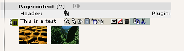
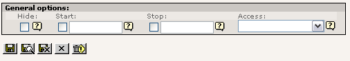
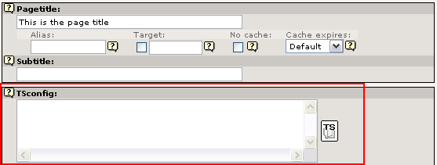
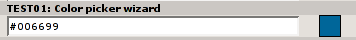

Extension
Key:
Language:
Keywords:
Copyright
2000-2008,
This document is published under the Open Content License
available from http://www.opencontent.org/opl.shtml
The content of this document is related to TYPO3
-
a GNU/GPL CMS/Framework available from www.typo3.org
Revised for TYPO3 4.2, November 2008
System, Global and Local extensions 6
Import and install of extensions 7
ext_tables.php and ext_localconf.php 8
Extending “extensions-classes” 10
Basic framework for a new extension 11
High priority functions (CGL requirements) 18
Functions typically used and nice to know 27
Programming with workspaces in mind 33
Database: t3lib_TCEmain basics 37
Using t3lib_TCEmain in scripts 41
Files: t3lib_extFileFunctions basics 43
Checking user access for $BE_USER from PHP 51
User defined methods in classes 58
A few examples of extending the backend classes 58
Developing with AJAX in the TYPO3 Backend 61
Adding Context Sensitive Menu items 66
Parsing HTML: t3lib_parsehtml 68
Support for custom tables in the Page module 74
Adding elements to the Content Element Wizard 74
Using custom permission options 76
Table Configuration Array, $TCA 78
Main levels in the $TCA array 79
['columns'][fieldname] section 94
['columns'][fieldname]['config'] / TYPE: "input" 96
['columns'][fieldname]['config'] / TYPE: "text" 100
['columns'][fieldname]['config'] / TYPE: "check" 101
['columns'][fieldname]['config'] / TYPE: "radio" 103
['columns'][fieldname]['config'] / TYPE: "select" 104
['columns'][fieldname]['config'] / TYPE: "group" 118
['columns'][fieldname]['config'] / TYPE: "none" 125
['columns'][fieldname]['config'] / TYPE: "passthrough" 125
['columns'][fieldname]['config'] / TYPE: "user" 126
['columns'][fieldname]['config'] / TYPE: "flex" 127
['columns'][fieldname]['config'] / TYPE: "inline" 135
Special Configuration introduction 145
Special Configuration options 146
Wizard scripts in the core 153
Loading the full $TCA dynamically 160
Benchmarks on dynamic tables: 161
$TBE_STYLES entries related to TCEforms 162
Style pointers in the "types" configuration 164
Rich Text Editors in TYPO3 backend 168
Custom transformations API 181
Historical perspective on RTE transformations 183
Properties and 'transformations' 183
RTE transformations in Content Elements 183
Directory structure for “skinImgAutoCfg” feature 190
How to make your extensions compatible with skinning 190
Finding CSS selectors for the backend documents 191
Skinning database record icons with variations 194
TYPO3 is known for its extendibility but until now there has not been a complete resource for information about the Core APIs in TYPO3. This document aims to provide such document, sometimes very detailed and complete, at other times only scratching the surface - but at least providing pointers into some direction.
This document is the second part of the "Inside TYPO3" document which contains the overall introduction to the architecture of TYPO3s core. "Inside TYPO3" also contains API descriptions to a certain degree but mostly in the form of examples and short table listings.
The documents do not contain any significant information about the frontend of TYPO3. Creating templates, setting up TypoScript objects etc. is not the scope of these documents; they are about the backend part of the core only.
I hope these two documents, "Inside TYPO3" and "TYPO3 Core API", will finally form a complete picture of the TYPO3 Core architecture, the backend and be the reference of choice in your work with TYPO3. It has taken me more than a year to finally get these published!
I want to dedicate this document to the people in TYPO3s community who has the discipline to do the boring job of writing documentation for their extensions or contributes to TYPO3 documentation in general. It's great to have good coders, but it's even more important to have coders with character to carry their work through till the end - even when it means spending days writing good documents. Go for completeness!
- kasper
TYPO3 can be extended in nearly any direction without loosing backwards compatibility. The Extension API provides a powerful framework for easily adding, removing, installing and developing such extensions to TYPO3. This is in particular powered by the Extension Manager (EM) inside TYPO3 and the online TYPO3 Extension Repository (TER) found at typo3.org for easy sharing of extensions.
“Extensions” is a term in TYPO3 which covers two other terms, plugins and modules.
A plugin is something that plays a role on the website itself. Eg. a board, guestbook, shop etc. It is normally enclosed in a PHP class and invoked through a USER or USER_INT cObject from TypoScript. A plugin is an extension in the frontend.
A module is a backend application which has its own position in the administration menu. It requires backend login and works inside the framework of the backend. We might also call something a module if it exploits any connectivity of an existing module, that is if it simply adds itself to the function menu of existing modules. A module is an extension in the backend.
Extensions are designed in a way so that extensions can supplement the core seemlessly. This means that a TYPO3 system will appear as "a whole" while actually being composed of the core application and a set of extensions providing various features. This philosophy allows TYPO3 to be developed by many individuals without loosing fine control since each developer will have a special area (typically a system extension) of responsibility which is effectively encapsulated.
So, in one end of the spectrum system extensions makes up what is known as "TYPO3" to the outside world. In the other end, extensions can be 100% project specific and carry only files and functionality related to a single implementation.
An extension consists of
a directory named by the extension key (which is a worldwide unique identification string for the extension unless prefix with “user_”)
standard files with reserved names for configuration related to TYPO3 (of which most are optional, see list below)
any number of additional files for the extension itself.
This list of filenames are all reserved filenames in the root directory of extensions. None of them are required but for example you cannot have a TYPO3 extension recognized by TYPO3 without the “ext_emconf.php” file etc. You can read more details like that in the table below.
In general, do not introduce your own files in root directory of extensions with the name prefix “ext_”.
|
Filename |
Description |
|---|---|
|
ext_emconf.php |
Definition of extension properties
Name, category, status etc. Used by the EM. Also auto-written by EM when extensions are imported from repository.
Notice: If this file is not present the EM will not find the extension. |
|
ext_localconf.php |
Addition to
“localconf.php” which is included if found. Should contain
additional configuration of $TYPO3_CONF_VARS and may include
additional PHP class files. All 'ext_localconf.php' files of included extensions are included right after the typo3conf/localconf.php file has been included and database constants defined. Therefore you cannot setup database name, username, password though, because database constants are defined already at this point. |
|
ext_tables.php |
Addition to “tables.php” which is included if found. Should contain configuration of tables, modules, backend styles etc. Everything which can be done in an “extTables” file is allowed here.
You should not use this file for setting up $TYPO3_CONF_VARS. See “ext_localconf.php”.
|
|
ext_tables.sql |
SQL definition of database tables.
|
|
ext_tables_static+adt.sql |
Static SQL tables and their data.
You can also drop the table content using the EM in the backend.
Notice: The table structure of static tables needs to be in the ext_tables.sql file as well - otherwise an installed static table will be reported as being in excess in the EM! |
|
ext_typoscript_constants.txt |
Preset TypoScript constants Deprecated
(use static template files instead, see extMgm API description) Such a file will be included in the constants section of all TypoScript templates. |
|
ext_typoscript_setup.txt |
Preset TypoScript setup Deprecated (use static template files instead, see extMgm API description)
|
|
ext_typoscript_editorcfg.txt |
Preset TypoScript editor configuration Deprecated (use static template files instead, see extMgm API description)
|
|
ext_conf_template.txt |
Extension Configuration template.
Configuration code in TypoScript syntax setting up a series of values which can be configured for the extension in the EM.
The content of the “res/” folder is used for filelists in configuration forms.
If you want to do user processing before the content from the configuration form is saved (or shown for that sake) there is a hook in the EM which is configurable with $TYPO3_CONF_VARS['SC_OPTIONS']['typo3/mod/tools/em/index.php']['tsStyleConfigForm'][] = “function reference” |
|
ext_icon.gif |
Extension Icon
18x16 gif icon for the extension. |
|
(*/) locallang*.php |
Localization values.
The filename “locallang.php” (or any file matching locallang*.php) is used for traditional definition of language labels in the $LOCAL_LANG array. If you use this name consistently those files will be detected by the translation tool!
Notice: PLEASE DO ONLY put the definition of the variable $LOCAL_LANG into this file and don't rely on comments in the file. The file will be automatically updated by the extension repository when translations are applied. |
|
class.ext_update.php |
Local Update tool class
Also you must add the function “access()”
and make it return a boolean value whether or not the menu item
should be shown. This feature is meant to let you disable the
update tool if you can somehow detect that it has already been
run and doesn't need to run again. |
|
ext_api_php.dat |
PHP API data
|
|
pi*/ |
Typical folder for a frontend plugin class. |
|
mod*/ |
Typical folder for a backend module. |
|
res/ |
Extensions normally consist of other files:
Classes, images, html-files etc. Files not related to either a
frontend plugin (pi/) or backend module (mod/) might be put in a
subfolder of the extension directory named “res/” (for
“resources”) but you can do it as you like (inside of the
extension directory that is).
Files in this folder can also be selected in a selector box if you set up Extension configuration in a “ext_conf_template.txt” file. |
The files for an extension are located in a folder named by the extension key. The location of this folder can be either inside typo3/sysext/, typo3/ext/ or typo3conf/ext/.
The extension must be programmed so that it does automatically detect where it is located and can work from all three locations. If it is not possible to make the extension that flexible, it is possible to lock its installation requirement to one of these locations in the emconf.php file (see “lockType”)
|
Type |
Path |
Description |
|---|---|---|
|
Local |
typo3conf/ext/ |
This is where to put extensions which are local for a particular TYPO3 installation. The typo3conf/ dir is always local, containing local configuration (eg. localconf.php), local modules etc. If you put an extension here it will be available for a single TYPO3 installation only. This is a “per-database” way to install an extension.
Notice about symlinking: Local extension can successfully be symlinked to other local extensions on a server as long as they are running under the same TYPO3 source version (which would typically also be symlinked). This method is useful for maintenance of the same local extension running under several sites on a server. |
|
Global |
typo3/ext/ |
This is a “per-server” way to install an extension; they are global for the TYPO3 source code on the web server. These extensions will be available for any TYPO3 installation sharing the source code.
Notice on distribution: As of version 4.0, TYPO3 is no longer distributed with a fixed set of global extensions. In previous versions these were distributed for reasons like popularity and sometimes history. |
|
System |
typo3/sysext/ |
This is system default extensions which cannot and should not be updated by the EM. They are distributed with TYPO3 core source code and generally understood to be a part of the core system. |
Local extensions take precedence which means that if an extension exists both in typo3conf/ext/ and typo3/ext/ the one in typo3conf/ext/ is loaded. Likewise global extension takes precedence over system extensions. This means that extensions are loaded in the order of priority local-global-system.
In effect you can therefore have - say - a “stable” version of an extension installed in the global dir (typo3/ext/) which is used by all your projects on a server sharing source code, but on a single experimental project you can import the same extension in a newer “experimental” version and for that particular project the locally available extension will be used instead.
The “extension key” is a string uniquely identifying the extension. The folder where the extension resides is named by this string. The string can contain characters a-z0-9 and underscore. No uppercase characters should be used (keeps folder-,file- and table/field-names in lowercase). Furthermore the name must not start with an “tx” or “u” (this is prefixes used for modules) and because backend modules related to the extension should be named by the extension name without underscores, the extension name must still be unique even if underscores are removed (underscores are allowed to make the extension key easily readable).
The naming conventions of extension keys are automatically validated by the registration at the repository, so you have nothing to worry about here.
There are two ways to name an extension:
Project specific extensions (not generally usable or shareable): Select any name you like and prepend it “user_” (which is the only allowed use of a key starting with “u”). This prefix denotes that this extension is a local one which does not come from the central TYPO3 Extension Repository or is ever intended to be shared. Probably this is an “adhoc” extension you have made for some special occasion.
General
extensions: Register an extension name online at the TYPO3
Extension Repository. Your extension name will automatically be
validated and you are sure to have a unique name returned which
nobody else in the world uses. This makes it very easy to share your
extension later on with every one else, because it ensures that no
conflicts with other extension will happen. But by default a new
extension you make is defined “private” which means nobody else
but you have access to it until you permit it to be public.
It's
free of charge to register an extension name. By definition all code
in the TYPO3 Extension Repository is covered by the GPL license
because it interfaces with TYPO3. You should really consider making
general extensions!
Suggestion:
It is far the easiest to settle for the right extension key from the
beginning. Changing it later involves a cascade of name changes to
tables, modules, configuration files etc.
About GPL and
extensions: Remember that TYPO3 is GPL software and at the same
moment you extend TYPO3 your extensions are legally covered by GPL.
This does not force you to share your extension, but it should
inspire you to do so and legally you cannot prevent anyone who
gets hold of your extension code from using it and further develop
it.
The TYPO3 Extension API is designed to make sharing of your
work easy as well as using others work easy. Remember TYPO3 is Open
Source Software and we rely on each other in the community to develop
it further.
Responsibility: It's also your responsibility to make sure that all content of your extensions is legally covered by GPL. The webmaster of TYPO3.org reserves the right to kick out any extension without notice that is reported to contain non-GPL material.
Based on the extension key of an extension these naming conventions should be followed:
|
|
General |
Example |
User specific |
Example |
|---|---|---|---|---|
|
Extension key (Lowercase “alnum” + underscores. ) |
Assigned by the TYPO3 Extension Repository. |
cool_shop |
Determined by yourself, but prefixed “user_” |
user_my_shop |
|
Database tables and fields |
Prefix with “tx_[key]_” where key is without underscores! |
Prefix: tx_coolshop_ Examples: tx_coolshop_products tx_coolshop_categories |
Prefix with “[key]_” |
Prefix: user_my_shop_ Examples: user_my_shop_products user_my_shop_categories |
|
Backend module (Names are always without underscores!) |
Name: The extension key name without underscores, prefixed “tx” |
txcoolshop |
Name: No underscores, prefixed “u” |
uMyShop or umyshop or ... |
|
Frontend PHP classes |
(Same as database tables and fields. Prepend class file names “class.” though.) |
|||
If you study the naming conventions above closely you will find that they are complicated due to varying rules for underscores in keynames; Sometimes the underscores are stripped off, sometimes not.
The best practice you can follow is to not use underscores in your extensions keys at all! That will make the rules simpler. This is highly encouraged.
Some the “classic” extensions from before the extension structure came about does not comply with these naming conventions. That is an exception made for backwards compatibility. The assignment of new keys from the TYPO3 Extension Repository will make sure that any of these old names are not accidentially reassigned to new extensions.
Further, some of the classic plugins (tt_board, tt_guest etc) users the “user_” prefix for their classes as well.
There are only two (maybe three) simple steps involved in using extensions with TYPO3:
You
must import it.
This simply means to copy the extensions
files into the correct directory in either typo3/ext/ (global) or
typo3conf/ext/ (local). More commonly you import an extension
directly from the online TYPO3 Extension Repository. When an
extension is found located in one of the extension locations, it is
available to the system.
The EM should take care of this
process, including updates to newer versions if needed.
Notice
that backend modules will have their “conf.php” file modified in
the install process depending on whether they are installed locally
or globally!
You
must install it.
An extension is loaded only if its
extension key is listed in comma list of the variable
$TYPO3_CONF_VARS["EXT"]["extList"]. The list of
enabled extensions must be set and modified from inside
typo3conf/localconf.php. Extensions are loaded in the order they
appear in this list. Any extensions listed in
$TYPO3_CONF_VARS["EXT"]["requiredExt"] will be
forcibly loaded before any extensions in
$TYPO3_CONF_VARS["EXT"]["extList"].
An
enabled extension is always global to the TYPO3 Installation - you
cannot disable an extension from being loaded in a particular branch
of the page tree.
The EM takes care enabling extensions. It's
highly recommended that the EM is doing this, because the EM will
make sure the priorities, dependencies and conflicts are managed
according to the extension characteristics, including clearing of
the cache-files if any.
You
might need to configure it.
Certain extensions may allow
you to configure some settings. Again the EM is able to handle the
configuration of the extensions based on a certain API for this. Any
settings - if present - configured for an extension is available as
an array in the variable
$TYPO3_CONF_VARS["EXT"]["extConf"][extension
key].
Loaded extensions are registered in a global variable, $TYPO3_LOADED_EXT, available in both frontend and backend of TYPO3. The loading and registration process happens in t3lib/config_default.php.
This is how the data structure for an extension in this array looks:
$TYPO3_LOADED_EXT[extension key] = Array ( “type” => S, G, L for system, global or local type of availability. “siteRelPath” => Path of extension dir relative to the PATH_site constant eg. “typo3/ext/my_ext/” or “typo3conf/ext/my_ext/” “typo3RelPath” => Path of extension dir relative to the “typo3/” admin folder eg. “ext/my_ext/” or “../typo3conf/ext/my_ext/” “ext_localconf” => Contains absolute path to 'ext_localconf.php' file if present “ext_tables” => [same] “ext_tables_sql” => [same] “ext_tables_static+adt.sql” => [same] “ext_typoscript_constants.txt” => [same] “ext_typoscript_setup.txt” => [same] “ext_typoscript_editorcfg.txt” => [same] )
The order of the registered extensions in this array corresponds to the order they were listed in TYPO3_CONF_VARS["EXT"]["requiredExt"].TYPO3_CONF_VARS["EXT"]["extList"] with duplicates removed of course.
The inclusion of ext_tables.php or ext_localconf.php files are done by traversing (a copy of) the $TYPO3_LOADED_EXT array.
These two files are the most important for the execution of extensions to TYPO3. They contain configuration used within the system on almost every request. Therefore they should be optimized for speed.
ext_localconf.php
is always included in global scope of the script, either frontend or
backend.
You can put functions and classes into the
script, but you should consider doing that in other ways because
such classes and functions would always be available - and it
would be better if they were included only when needed.
So stick
to change values in TYPO3_CONF_VARS only!
ext_tables.php
is not always included in global scope on the other hand (in
the frontend)
Don't put functions and classes - or include other
files which does - into this script!
Use the API of the class extMgm for various manipulative tasks such as adding tables, merging information into arrays etc.
Before the inclusion of any of the two files, the variables $_EXTKEY is set to the extention-key name of the module and $_EXTCONF is set to the configuration from $TYPO3_CONF_VARS["EXT”]["extConf"][extension key]
$TYPO3_LOADED_EXT[extension key] contains information about whether the module is loaded as local, global or system type, including the proper paths you might use, absolute and relative.
The inclusion can happen in two ways:
1) Either the files are included individually on each request (many file includes) ($TYPO3_CONF_VARS["EXT”]["extCache"]=0;)
2) or (better) the files are automatically imploded into one single temporary file (cached) in typo3conf/ directory (only one file include) ($TYPO3_CONF_VARS["EXT”]["extCache"]=1; [or 2]). This is default (value “1”)
In effect this means:
Your ext_tables.php / ext_localconf.php file must be designed so that it can safely be read and subsequently imploded into one single file with all the other configuration scripts!
You must NEVER use a “return” statement in the files global scope - that would make the cached script concept break.
You should NOT rely on the PHP constant __FILE__ for detection of include path of the script - the configuration might be executed from a cached script and therefore such information should be derived from the $TYPO3_LOADED_EXT[extension key] array. Eg. $TYPO3_LOADED_EXT[$_EXTKEY][“siteRelPath”]
This script configures the extension manager. The only thing included is an array, $EM_CONF[extension_key] with these associative keys (below in table).
When extensions are imported from the online repository this file is auto-written! So don't put any custom stuff in there - only change values in the $EM_CONF array if needed.
|
Key |
Data type |
Description |
|---|---|---|
|
title |
string, required |
The name of the extension in English. |
|
description |
string, required |
Short and precise description in English of what the module does and for whom it might be useful. |
|
category |
string |
Which category the extension belongs to:
|
|
shy |
boolean |
If set, the extension will normally be hidden in the EM because it might be a default extension or otherwise something which is not so important. Use this flag if an extension is of “rare interest” (which is not the same as un-important - just an extension not sought for very often...) It does not affect whether or not it's enabled. Only display in EM. Normally “shy” is set for all extensions loaded by default according to TYPO3_CONF_VARS. |
|
dependencies |
list of extention-keys |
This is a list of other extension keys which this extension depends on being loaded before itself. The EM will manage that dependency while writing the extension list to localconf.php |
|
conflicts |
list of extention-keys |
List of extension keys of extensions with which this extension does not work (and so cannot be enabled before those other extensions are un-installed) |
|
priority |
“top”, “bottom” |
This tells the EM to try to put the extensions as the very first in the list. Default is last. |
|
loadOrder |
|
|
|
module |
list of strings |
If any subfolders to an extension contains backend modules, those foldernames should be listed here. It allows the EM to know about the existence of the module, which is important because the EM has to update the conf.php file of the module in order to set the correct TYPO3_MOD_PATH constant. |
|
state |
string |
Which state is the extension in?
|
|
internal |
boolean |
This flag indicates that the core source code is specifically aware of the extension. In other words this flag should convey the message that “this extension could not be written independently of core source code modifications”. An extension is not internal just because it uses TYPO3 general classes eg. those from t3lib/. True non-internal extensions are characterized by the fact that they could be written without making core source code changes, but relies only on existing classes in TYPO3 and/or other extensions, plus its own scripts in the extension folder. |
|
uploadfolder |
boolean |
If set, then the folder named “uploads/tx_[extKey-with-no-underscore]” should be present! |
|
createDirs |
list of strings |
Comma list of directories to create upon extension installation. |
|
modify_tables |
list of tables |
List of table names which are only modified - not fully created - by this extension. Tables from this list found in the ext_tables.sql file of the extension |
|
lockType |
char; L, G or S |
Locks the extension to be installed in a specific position of the three posible:
|
|
clearCacheOnLoad |
boolean |
If set, the EM will request the cache to be cleared when this extension is loaded. |
|
author |
string |
Author name (Use a-z) |
|
author_email |
email address |
Author email address |
|
author_company |
string |
Author company (if any company sponsors the extension). |
|
CGLcompliance |
keyword |
Compliance level that the extension claim to adhere to. A compliance defines certain coding guidelines, level of documentation, technical requirements (like XHTML, DBAL usage etc).
Possible values are:
Please see the Project Coding Guidelines for a description of each compliance keyword (and the full allowed list). |
|
CGLcompliance_note |
string |
Any remarks to the compliance status. Might describe some minor incompatibilities or other reservations. |
|
private |
boolean |
If set, this version of the extension is not included in the public list!
(Not supported anymore) |
|
download_password |
string |
If set, this password must additionally be specified if people want to access (import or see details for) this the extension.
(Not supported anymore) |
|
version |
main.sub.dev |
Version of the extension. Automatically managed by EM / TER. Format is [int].[int].[int] |
A rather exotic thing to do but nevertheless...
If you are programming extensions yourself you should as a standard procedure include the “class extension code” in the bottom of the class file:
if (defined("TYPO3_MODE") && $TYPO3_CONF_VARS[TYPO3_MODE]["XCLASS"]["ext/class.cool_shop.php"]) {
include_once($TYPO3_CONF_VARS[TYPO3_MODE]["XCLASS"]["ext/class.cool_shop.php"]);
}
Normally the key used as example here (“ext/class.cool_shop.php”) would be the full path to the script relative to the PATH_site constant. However because modules are required to work from both typo3/sysext/, typo3/ext/ and typo3conf/ext/ it is policy that any path before “ext/” is omitted.
Extensions are managed from the Extension Manager inside TYPO3 by "admin" users. The module is located at "Tools > Ext Manager" and offers a menu with options to see loaded extensions (those that are installed or activated), available extensions on the server and the possibility to import extensions from online resources, typically TER (TYPO3 Extension Repository) which is at TYPO3.org.
The interface looks like this for the list of available extensions:
The interface is really easy to use. You just click the +/- icon to the left of an extension in order to install it.
This document will not describe into details how to create extensions. It only aims to be a reference for the facts regarding the rules of how extensions register with the system.
To learn to create extensions you should read one of the extension tutorials that are available. They will take you through the process step by step and explain best-practices for you.
To start up a new extension the most popular tool is the Extension Kickstarter Wizard. From a series of menus it allows you to configure a basic set of features you want to get into your extension and a selection of default files will be created. The idea is that you continue to develop these files into your specific application.
Before starting a new extension you should register an extension key on TYPO3.org (unless you plan to make an implementation specific extension of course which does not make sense to share).
Go to TYPO3.org, log in with your (pre-created) username / password and enter http://typo3.org/extensions/register-extension-keys/. In the bottom of the page you can enter the key name you want to register.
Before you can use the Kickstarter Wizard you will have to enable it. The "Kickstarter" is an extension like everything else (key: "extrep_wizard") so it must be installed first:
After the installation of the extension you will find a new menu item named "Make new extension" in the selector box menu of the Extension Manager.
In the Kickstarter you should always fill in the General Information which includes the title, description, author name etc for the extension. But the most important thing is to enter the extension key as the very first thing!
After entering this information you can begin to create new tables and fields in the database, you can configure backend modules and frontend plugins etc. Basically this is what tutorials will cover in detail.
When you are through with the configuration you click the button to the left called "View result". This will let you preview the content of the files the Kickstarter will write to the server.
It is important that you write the extension to the correct location. Most likely that will be "Local" in your case.
Finally, if there already is an extension with the same extension key every file from that extension will be overwritten with the Kickstarters output! Remember: This is a kickstarter, not an editor! It is meant to kick you off with your new TYPO3 extension and nothing more! So of course it overwrites all existing files!
After the extension is written to the servers harddisk you should see a message like this. Immediately you can now install the extension:
In the process of creating an extension is it rather typical to go back to the Kickstarter a few times to fine tune to base code. Experience suggests that this is especially useful to tuning the configuration of database tables and fields.
If you want to load the Kickstarter with the original configuration used for your extension so you can add or edit features, just click the extension title in the list of loaded/available extensions and select "Backup/Delete" from the menu:

Clicking the "Start new" button will bring you back to the Kickstarter with all the original configuration used (configuration loaded from "doc/wizard_form.dat" which must still exist).
It is potentially dangerous to introduce this feature because it may leave you with the wrong impression of the Kickstarter. It is still not an editor for your extensions! Whatever custom changes that has been made to the scripts of your new extension will be overwritten when you write back the extension from the Kickstarter.
A good workflow for using the Kickstarter turns out to be this:
Start by setting up all the features you need for your extension and write it with the Kickstarter.
Begin to fill in dummy information in the database tables your extension contain. You will most likely find that you forgot something or misconfigured a database field. Since you have not yet done any changes to the files in the extension you can safely re-load the extension configuration (see above) and add the missing fields or whatever. Your dummy database content will not be affected by this operation.
When you have tested that your database configuration works for your purpose you can begin to edit the PHP-scripts by hand (fx. programming the extension plugin). This is the "point-of-no-return" where you cannot safely return to the Kickstarter because you have now changed scripts manually.
The source is the documentation!
(General wisdom)
The TYPO3 APIs are first and foremost documented inside of the source scripts. It would be impossible to maintain documentation at more than one location given the fact that things change and sometimes fast.
We have dedicated ourselves to document the classes and methods inside the source scripts (JavaDoc style). This means that you can use any JavaDoc compliant documentor program to extract API documentation from the source. You can also install the extension "extdeveval" which will offer you a menu with links to the most important APIs in TYPO3 from within TYPO3:
Clicking a link like "extMgm" will bring up a new window with the full API of that class:
The point of this documentation is to help you understand which parts of the API is particularly important or useful for your TYPO3 hacking. The next pages will highlight functions and classes which you should make yourself familiar with.
There are a few core classes in TYPO3 which contain general functionality. These classes are (typically) just a collection of individual functions you call non-instantiated, like [class name]::[method name].
These are the most important classes to know about in TYPO3:
|
Class name: |
Description: |
Usage: |
|---|---|---|
|
t3lib_DB |
Database Abstraction Base API All access to the database must go through this object. That is the first step towards DBAL compliance in your code. The class contains MySQL wrapper functions which can almost be search/replaced with your existing calls. |
$GLOBALS['TYPO3_DB'] in both frontend and backend |
|
t3lib_cs |
Character Set handling API Contains native PHP code to handle character set conversion based on charset tables from Unicode.org. It is not certain that you will have to use this class directly but if you need to do charset conversion at any time you should use this class. |
In backend, $GLOBALS['LANG']->csConvObj In frontend, $GLOBALS['TSFE']->csConvObj |
|
t3lib_div |
General Purpose Functions A collection of multi-purpose PHP functions. Some are TYPO3 specific but not all. |
t3lib_div:: (Non-instantiated!) |
|
t3lib_BEfunc |
Backend Specific Functions Contains functions specific for the backend of TYPO3. You will typically need these when programming backend modules or other backend functionality. This class is NOT available in the frontend! |
t3lib_BEfunc:: (Non-instantiated!) |
|
t3lib_extMgm |
Extension API functions Functions for extensions to interface with the core system. Many of these functions are used in ext_localconf.php and ext_tables.php files of extensions. They let extensions register their features with the system. See extension programming tutorials for more details. |
t3lib_extMgm:: (Non-instantiated!) |
|
t3lib_iconWorks |
Icons / Part of skinning API Contains a few functions for getting the right icon for a database table record or the skinned version of any other icon. This class is NOT available in the frontend! |
t3lib_iconWorks:: (Non-instantiated!) |
|
template |
Backend Template Class Contains functions for producing the layout of backend modules, setting up HTML headers, wrapping JavaScript sections correctly for XHTML etc. |
$GLOBALS['TBE_TEMPLATE'] or $GLOBALS['SOBE'] or $this->doc (inside of Script Classes)
|
These classes are always included and available in the TYPO3 backend and frontend (except "t3lib_BEfunc" and "t3lib_iconWorks").
The following pages will list methods from these classes in priority of importance. You should at least acquaint yourself with all High-priority functions since these are a part of the Coding Guidelines requirements. In addition you might like to know about other functions which are very often used since they might be very helpful to you (they were to others!).
The functions listed in this table is of high priority. Generally they provide APIs to functionality which TYPO3 should always handle in the same way. This will help you to code TYPO3 applications with less bugs and greater compatibility with various system conditions it will run under.
Remember, this list only serves to point out important functions! The real documentation is found in the source scripts. The comments given is only a supplement to that.
|
Function |
Comments |
|---|---|
|
t3lib_div::_GP t3lib_div::_GET t3lib_div::_POST |
Getting values from GET or POST vars
APIs for getting values in GET or POST variables with slashes stripped regardless of PHP environment. Always use these functions instead of direct access to $_GET, $_POST or $HTTP_GET_VARS/$HTTP_POST_VARS.
t3lib_div::_GP($varname) will give you the value of either the GET or POST variable with priority to POST if present. This is useful if you don't know whether a parameter is passed as GET or POST. Many scripts will use this function to read variables in the init function:
// Setting GPvars:
$this->file = t3lib_div::_GP('file');
$this->size = t3lib_div::_GP('size');t3lib_div::_GET() will give you GET vars. For security reasons you should use this if you know your parameters are passed as GET variables. This example gives you the whole $_GET array:
$params = t3lib_div::_GET(); t3lib_div::POST() will give you POST variables. Works like t3lib_div::_GET(). For security reasons you should use this if you know your parameters are passed as POST variables. This example gives you the content of the POST variable TSFE_ADMIN_PANEL, for instance it could come from a form field like "<input name="TSFE_ADMIN_PANEL[command]" ..../>
$input = t3lib_div::_POST('TSFE_ADMIN_PANEL');
|
|
t3lib_div::makeInstance t3lib_div::makeInstanceClassName |
Creating objects
Factory APIs for creating an object instance of a class name (or getting the correct class name to instantiate). These functions make sure the "XCLASS extension" principle can be used on (almost) any class in TYPO3. You must use either of these functions for creating objects in TYPO3.
Examples:
// Making an instance of class "t3lib_TSparser":
$parseObj = t3lib_div::makeInstance('t3lib_TSparser');
// Make an object with an argument passed to the constructor:
$className=t3lib_div::makeInstanceClassName("t3lib_xml");
$xmlObj = new $className("typo3_export");
|
|
t3lib_div::getIndpEnv |
Environment-safe server and environment variables.
API function for delivery of system and environment variables on any web-server brand and server OS. Always use this API instead of $_ENV/$_SERVER or getenv() if possible.
Examples:
if (t3lib_div::getIndpEnv('HTTP_ACCEPT_LANGUAGE') == $test)...
if (t3lib_div::cmpIP(t3lib_div::getIndpEnv('REMOTE_ADDR'), $pcs[1]))...
$prefix = t3lib_div::getIndpEnv('TYPO3_REQUEST_URL');
$redirectTo = t3lib_div::getIndpEnv('TYPO3_SITE_URL').$redirectTo;
if (!t3lib_div::getIndpEnv('TYPO3_SSL')) ...
|
|
t3lib_div::loadTCA |
Loading full table description into $TCA
If you want to access or change any part of the $TCA array for a table except the ['ctrl'] part then you should call this function first. The $TCA might not contain the full configuration for the table (depending on configuration of the table) and to make sure it is loaded if it isn't already you call this function.
Examples of PHP code which traverses the ['columns'] part of an unknown table and loads the table before.
t3lib_div::loadTCA($this->table);
reset($TCA[$this->table]["columns"]);
while(list($fN)=each($TCA[$this->table]["columns"])) {
$fieldListArr[]=$fN;
}
|
|
t3lib_BEfunc::deleteClause |
Get SQL WHERE-clause filtering "deleted" records
Tables from $TCA might be configured to set an integer flag when deleted instead of being physically deleted from the database. In any case records with the deleted-flag set must never be selected in TYPO3. To make sure you never make that mistake always call this function which will pass you a SQL WHERE-clause like " AND deleted=0" if the table given as argument has been configured with a deleted-field. (Notice: In the frontend this is build into the "enableFields()" function.)
Example:
$res = $GLOBALS['TYPO3_DB']->exec_SELECTquery(
'pid,uid,title,TSconfig,is_siteroot,storage_pid',
'pages',
'uid='.intval($uid).' '.
t3lib_BEfunc::deleteClause('pages').' '.
$clause
);
|
|
t3lib_extMgm::isLoaded |
Returns true if an extension is loaded (installed)
If you need to check if an extension is loaded in a TYPO3 installation simply use this function to ask for that.
Example:
// If the extension "sys_note" is loaded, then...
if (t3lib_extMgm::isLoaded('sys_note')) ...
// If the "cms" extension is NOT loaded, return false
if (!t3lib_extMgm::isLoaded('cms')) return;
// Check if the "indexed_search" extension is loaded. If not, exit PHP!
t3lib_extMgm::isLoaded("indexed_search",1);
// Assign value "popup" if extension "tsconfig_help" is loaded
$type = t3lib_extMgm::isLoaded('tsconfig_help')?'popup':'';
|
|
t3lib_extMgm::extPath t3lib_extMgm::extRelPath t3lib_extMgm::siteRelPath |
Get file path to an extension directory
If you need to get the absolute or relative filepaths to an extension you should use these functions. Extension can be located in three different positions in the filesystem whether they are local, global or system extensions. These functions will always give you the right path.
Examples: // Include a PHP file from the extension "extrep_wizard".
// t3lib_extMgm::extPath() returns the absolute path to the
// extension directory.
require_once(
t3lib_extMgm::extPath('extrep_wizard').
'pi/class.tx_extrepwizard.php'
);
// Get relative path (relative to PATH_typo3) to an icon (backend)
$icon = t3lib_extMgm::extRelPath("tt_rating")."rating.gif";
// Get relative path (relative to PATH_site) to an icon (frontend)
return '<img src="'.
t3lib_extMgm::siteRelPath("indexed_search").'pi/res/locked.gif"
... />';
|
|
t3lib_div::getFileAbsFileName t3lib_div::validPathStr t3lib_div::isAbsPath t3lib_div::isAllowedAbsPath t3lib_div::fixWindowsFilePath |
Evaluate files and directories for security reasons
When you allow references to files to be inputted from users there is always the risk that they try to cheat the system to include something else than intended. These functions makes it easy for you to evaluate filenames for validity before reading, writing or including them.
Here the functions are described in order of importance:
t3lib_div::getFileAbsFileName() - Returns the absolute filename of a relative reference, resolves the "EXT:" prefix (way of referring to files inside extensions) and checks that the file is inside the PATH_site of the TYPO3 installation and implies a check with t3lib_div::validPathStr(). Returns false if checks failed. Does not check if the file exists.
// Getting absolute path of a temporary file:
$cacheFile = t3lib_div::getFileAbsFileName('typo3temp/tempfile.tmp');
// Include file if it exists:
$file = t3lib_div::getFileAbsFileName($fileRef);
if (@is_file($file)) {
include($file);
}t3lib_div::validPathStr() - Checks for malicious file paths. Returns true if no '//', '..' or '\' is in the $theFile. This should make sure that the path is not pointing 'backwards' and further doesn't contain double/back slashes.
// If the path is true and validates as a valid path string: if ($path && t3lib_div::validPathStr($path)) ... t3lib_div::isAbsPath() - Checks if the input path is absolute or relative (detecting either '/' or 'x:/' as first part of string) and returns true if so.
// Returns relative filename for icon:
if (t3lib_div::isAbsPath($Ifilename)) {
$Ifilename = '../'.substr($Ifilename,strlen(PATH_site));
}t3lib_div::isAllowedAbsPath() - Returns true if the path is absolute, without backpath '..' and within the PATH_site OR within the lockRootPath. Contrary to t3lib_div::getFileAbsFileName() this function can also validate files in filemounts outside the web-root of the installation, but this is rarely used!
if (@file_exists($path) && t3lib_div::isAllowedAbsPath($path)) {
$fI = pathinfo($path);
....t3lib_div::fixWindowsFilePath() - Fixes a path for Windows-backslashes and reduces double-slashes to single slashes |
|
t3lib_div::mkdir |
Creates directory
One would think that creating directories is one thing you can do directly with PHP. Well, it turns out to be quite error-prone if it should be compatible with Windows servers and safe-mode at the same time. So TYPO3 offers a substitution function you should always use.
Example:
$root.=$dirParts.'/';
if (!is_dir($extDirPath.$root)) {
t3lib_div::mkdir($extDirPath.$root);
if (!@is_dir($extDirPath.$root)) {
return 'Error: The directory "'.
$extDirPath.$root.
'" could not be created...';
}
}
|
|
t3lib_div::upload_to_tempfile t3lib_div::unlink_tempfile t3lib_div::tempnam |
Functions for handling uploads and temporary files
You need to use these functions for managing uploaded files you want to access as well as creating temporary files within the same session. These functions are safe_mode and open_basedir compatible which is the main point of you using them!
t3lib_div::upload_to_tempfile() - Will move an uploaded file (normally in "/tmp/xxxxx") to a temporary filename in PATH_site."typo3temp/" from where TYPO3 can use it under safe_mode. Remember to use t3lib_div::unlink_tempfile() afterwards - otherwise temp-files will build up! They are not automatically deleted in PATH_site."typo3temp/"!
t3lib_div::unlink_tempfile() - Deletes (unlink) a temporary filename in 'PATH_site."typo3temp/"' given as input. The function will check that the file exists, is in PATH_site."typo3temp/" and does not contain back-spaces ("../") so it should be pretty safe. Use this after upload_to_tempfile() or tempnam() from this class!
This example shows how to handle an uploaded file you just want to read and then delete again:
// Read uploaded file: $uploadedTempFile = t3lib_div::upload_to_tempfile( $GLOBALS['HTTP_POST_FILES']['upload_ext_file']['tmp_name'] ); $fileContent = t3lib_div::getUrl($uploadedTempFile); t3lib_div::unlink_tempfile($uploadedTempFile); t3lib_div::tempnam() - Create temporary filename (creates file with unique file name). This function should be used for getting temporary filenames - will make your applications safe for "open_basedir = on". Remember to delete the temporary files after use! This is done by t3lib_div::unlink_tempfile() In the following example it is shown how two temporary filenames are created for being processed with an external program (diff) after which they are deleted again:
// Create file 1 and write string
$file1 = t3lib_div::tempnam('diff1_');
t3lib_div::writeFile($file1,$str1);
// Create file 2 and write string
$file2 = t3lib_div::tempnam('diff2_');
t3lib_div::writeFile($file2,$str2);
// Perform diff.
$cmd = $GLOBALS['TYPO3_CONF_VARS']['BE']['diff_path'].
' '.$this->diffOptions.' '.$file1.' '.$file2;
exec($cmd,$res);
unlink($file1);
unlink($file2);
|
|
t3lib_div::fixed_lgd_cs |
Truncating a string for visual display, observing the character set (backend only)
This function allows you to truncate a string from eg. "Hello World" to "Hello Wo..." so for example very long titles of records etc. will not break the visual appearance of your backend modules. Since text strings cannot be cropped at any byte if the character set is utf-8 or another multibyte charset this function will process the string assuming the character set to be the one used in the backend. It is recommended to use $BE_USER->uc['titleLen'] for the length parameter.
// Limits Record title to 30 chars t3lib_div::fixed_lgd_cs($thisRecTitle,30); // Limits string to title-length configured for backend user: $title = t3lib_div::fixed_lgd_cs( $row['title'], $this->BE_USER->uc['titleLen'] ); |
|
t3lib_div::formatForTextarea |
Preparing a string for output between <textarea> tags.
Use this function to prepare content for <textarea> tags. Then you will avoid extra / stripped whitespace when the form is submitted multiple times.
// Create item: $item = ' <textarea>'. t3lib_div::formatForTextarea($value). '</textarea>'; |
|
t3lib_div::locationHeaderUrl |
Preparing a URL for a HTTP location-header
Use this to prepare redirection URLs for location-headers. It will convert the URL to be absolute. This is needed for some webservers (Windows) while unix servers will work fine without. So to honor compatibility, use this function like this:
Header('Location: '.t3lib_div::locationHeaderUrl($this->retUrl));
exit;
|
|
t3lib_BEfunc::getFuncMenu t3lib_BEfunc::getFuncCheck |
Create "Function menu" in backend modules
Creates a selector box menu or checkbox with states automatically saved in the backend user session. Such a function menu could look like this:
The selector box is made by this function call. It sets the ID variable (zero if not available), the GET var name, "SET[mode]", the current value from MOD_SETTINGS and finally the array of menu options, MOD_MENU['mode']:
t3lib_BEfunc::getFuncMenu( $this->id, 'SET[mode]', $this->MOD_SETTINGS['mode'], $this->MOD_MENU['mode'] ) Prior to making the menu it is required that the MOD_MENU array is set up with an array of options. This could look like this (getting some labels from the "locallang" system). In addition the incoming "SET" GET-variable must be registered in the session which is also done in this listing:
$this->MOD_MENU = array(
'mode' => array(
0 => $LANG->getLL('user_overview'),
'perms' => $LANG->getLL('permissions')
)
);You can have a checkbox as well:
Then the function call looks like this. Notice the fourth argument is gone because a checkbox does not have any information about options like a selector box would have.
t3lib_BEfunc::getFuncCheck( 0, 'SET[own_member_only]', $this->MOD_SETTINGS['own_member_only'] ); For checkboxes you must set the key in the MOD_MENU array as well. Otherwise the values are not registered in the user session:
'own_member_only' => '', |
|
t3lib_BEfunc::editOnClick |
Create onclick-JavaScript code that links to edit form for a record
Use this function to create a link to the "alt_doc.php" core script which can generate editing forms for any $TCA configured record. The actual editing command is passed to "alt_doc.php" through the GET parameter "&edit". See the section with "Various examples" for detailed examples of this!
Example:
$params='&edit[pages]['.$row['uid'].']=edit'; $link = '<a href="#" onclick="'. htmlspecialchars(t3lib_BEfunc::editOnClick($params,'',-1)). '">Edit</a>'; |
|
t3lib_BEfunc::viewOnClick |
Create onclick-JavaScript code that opens a page in the frontend
It will detect the correct domain name if needed and provide the link with the right back path. Also it will re-use any window already open.
// "View page" link is added: $link = '<a href="#" onclick="'. htmlspecialchars(t3lib_BEfunc::viewOnClick( $pageId, $GLOBALS['BACK_PATH'], t3lib_BEfunc::BEgetRootLine($pageId) )).'">View page</a>'; |
|
$GLOBALS['TBE_TEMPLATE']-> issueCommand |
Creates a link to "tce_db.php" (with a command like copy, move,delete for records)
Creates a URL to the TYPO3 Core Engine interface provided from the core script, "tce_db.php". The $params array is filled with date or cmd values. For detailed list of options see section about TCE elsewhere in this document.
Example:
// Delete
$params = '&cmd[tt_content]['.$row['uid'].'][delete]=1';
$out.= '<a href="'.
htmlspecialchars($GLOBALS['SOBE']->doc->issueCommand($params)).
'" onclick="'.
htmlspecialchars("return confirm('Want to delete?');").
'">Delete record</a>';
|
|
t3lib_BEfunc::helpTextIcon t3lib_BEfunc::helpText t3lib_BEfunc::cshItem |
Create icon or short description for Context Sensitive Help (CSH)
You are encouraged to integrate Content Sensitive help in your backend modules and for your database tables. This will help users to use TYPO3 and your TYPO3 applications more easily. With these functions you can create content sensitive help texts (and links to more details) like this:
(Note: For the short description to be displayed and not only the icon the user must set up "Field help mode" in the User>Setup module to "Display full text message".)
Examples:
// Setting "table name" to module name with prefix $tableIdent = '_MOD_'.$this->MCONF['name']; // Creating CSH icon and short description: $HTMLcode.= t3lib_BEfunc::helpTextIcon($tableIdent,'quickEdit',$BACK_PATH). t3lib_BEfunc::helpText($tableIdent,'quickEdit',$BACK_PATH). '<br />'; Prior to calling helpTextIcon and helpText you might need to load the description table with:
if ($BE_USER->uc['edit_showFieldHelp']) {
$LANG->loadSingleTableDescription($tableIdent);
}Alternatively you can use t3lib_BEfunc::cshItem(). It's a quicker way of integrating the descriptions since description files are loaded automatically and the text/icon mode is integrated in a single function call. This is recommended for sporadic usage:
$HTMLcode.= |
|
t3lib_iconWorks::getIconImage t3lib_iconWorks::getIcon |
Getting correct icon for database table record
Always use these functions if you need to get the icon for a record. Works only for records from tables which are defined in $TCA
// Getting default icon for the "tt_content" table:
t3lib_iconWorks::getIconImage('tt_content',array(),$this->backPath,'');
// Getting an icon where record content may define the look:
$icon = t3lib_iconWorks::getIconImage(
$this->table,
$row,
$this->backPath,
'align="top" class="c-recIcon"'
);
// Getting the icon filename only:
$ficon = t3lib_iconWorks::getIcon($table,$row);
|
|
t3lib_iconWorks::skinImg |
Processing icons for skin API
Pass the filename and width/height attributes of all images you use in your backend applications through this function. See Skin API description for more details.
$skin_enabled_icon = '<img'. t3lib_iconWorks::skinImg( $this->doc->backPath, 'gfx/recordlock_warning3.gif', 'width="17" height="12"' ). ' alt="" />'; |
|
$GLOBALS['TYPO3_DB']-> exec_INSERTquery exec_UPDATEquery exec_DELETEquery exec_SELECTquery |
Database Access API
To be compatible with Database Abstraction Layers you should always use the global object $TYPO3_DB for database access. The class "t3lib_db" contains a list of MySQL wrapper functions (sql(), sql_fetch_assoc(), etc...) which you can use almost out of the box as a start. Just search/replace. But it is recommended that you port your application to using the four execution functions directly. These will both build the query for you and execute it. See the Coding Guidelines, t3lib_db API and Inside TYPO3 document for more information.
Inserting a record: Just fill an array with "fieldname => value" pairs and pass it to exec_INSERTquery() along with the table name in which it should be inserted:
$insertFields = array( 'md5hash' => $md5, 'tstamp' => time(), 'type' => 2, 'params' => $inUrl ); $GLOBALS['TYPO3_DB']->exec_INSERTquery( 'cache_md5params', $insertFields ); Updating a record: Create an array of "fieldname => value" pairs before calling exec_UPDATEquery(). The function call is almost like inserting, but you need to add a WHERE clause to target the update to the record you want to update. It is the second argument you set to a value like "uid=???".
$fields_values = array( 'title' => $data['sys_todos'][$key]['title'], 'deadline' => $data['sys_todos'][$key]['deadline'], 'description' => $data['sys_todos'][$key]['description'], 'tstamp' => time() ); $GLOBALS['TYPO3_DB']->exec_UPDATEquery( 'sys_todos', 'uid='.intval($key), $fields_values ); Deleting a record: Call exec_DELETEquery() with the tablename and the WHERE clause selecting the record to delete:
$GLOBALS['TYPO3_DB']->exec_DELETEquery( 'sys_todos', 'uid='.intval($key) ); Selecting a record: Call exec_SELECTquery() with at least the first three arguments (field list to select, table name and WHERE clause). The return value is a result pointer (or object) which should be passed to ->sql_fetch_assoc() in a loop in order to traverse the result rows.
$res = $GLOBALS['TYPO3_DB']->exec_SELECTquery(
'*',
$theTable,
$theField.'="'.
$GLOBALS['TYPO3_DB']->quoteStr($theValue, $theTable).'"'.
$this->deleteClause($theTable).' '.
$whereClause,
$groupBy,
$orderBy,
$limit
);
$rows = array();
while($row = $GLOBALS['TYPO3_DB']->sql_fetch_assoc($res)) {
$rows[] = $row;
}
$GLOBALS['TYPO3_DB']->sql_free_result($res);
if (count($rows)) return $rows;
|
|
$GLOBALS['BE_USER']-> isAdmin |
Return true if current backend user is "admin"
Use this if you need to restrict a user from doing something unless he is "admin". |
|
$GLOBALS['BE_USER']-> getPagePermsClause |
Return WHERE clause for filtering pages which permission mismatch for current user
The most typical usage of this is to call the function with the value "1". Then the WHERE clause returned will filter away all pages to which the user has no read-access. |
You should also refer to the TYPO3 Coding Guidelines (CGL) document which is the authoritative source to know about which coding practices are required for TYPO3 core and extension programming. That document also mentions the most important API calls that you have to use and gives further insights.
These functions are generally just nice to know. They provide functionality which you will often need in TYPO3 applications and therefore they will save you time and make your applications easier for others to understand as well since you use commonly known functions.
Please take time to learn these functions!
|
Function |
Comments |
|---|---|
|
t3lib_div::inList |
Check if an item exists in a comma-separated list of items.
if (t3lib_div::inList('gif,jpg,png',$ext)) {
|
|
t3lib_div::intInRange |
Forces the input variable (integer) into the boundaries of $min and $max.
t3lib_div::intInRange($row['priority'],1,5); |
|
t3lib_div::isFirstPartOfStr |
Returns true if the first part of input string matches the second argument.
t3lib_div::isFirstPartOfStr($path,PATH_site); |
|
t3lib_div::testInt |
Tests if the input is an integer. |
|
t3lib_div::shortMD5 t3lib_div::md5int |
Creates partial/truncated MD5 hashes. Useful when a 32 byte hash is too long or you rather work with an integer than a string.
t3lib_div::shortMD5() - Creates a 10 byte short MD5 hash of input string
$addQueryParams.= '&cHash='.t3lib_div::shortMD5(serialize($pA)); t3lib_div::md5int() - Creates an integer from the first 7 hex chars of the MD5 hash string
'mpvar_hash' => t3lib_div::md5int($GLOBALS['TSFE']->MP), |
|
t3lib_div::deHSCentities t3lib_div::htmlspecialchars_decode |
Reverse conversions of htmlspecialchars()
t3lib_div::deHSCentities() - Re-converts HTML entities if they have been converted by htmlspecialchars(). For instance "&amp;" which should stay "&". Or "&#1234;" to "Ӓ". Or "&#x1b;" to ""
$value = t3lib_div::deHSCentities(htmlspecialchars($value)); t3lib_div::htmlspecialchars_decode() - Inverse version of htmlspecialchars() |
|
t3lib_div::modifyHTMLColor t3lib_div::modifyHTMLColorAll |
Modifies the RGB values of an 6-digit HTML hex color by adding/subtracting. Useful for increasing or decreasing brightness of colors.
t3lib_div::modifyHTMLColor('#cca823',+10,+10,+10)
t3lib_div::modifyHTMLColorAll($this->doc->bgColor,-20);
|
|
t3lib_div::formatSize |
Formats a number of bytes as Kb/Mb/Gb for visual output.
$size = ' ('.t3lib_div::formatSize(filesize($v)).'bytes)';
|
|
t3lib_div::validEmail |
Evaluates a string as an email address.
if ($email && t3lib_div::validEmail($email)) {
|
|
t3lib_div::trimExplode t3lib_div::intExplode t3lib_div::revExplode |
Various flavors of exploding a string by a token.
t3lib_div::trimExplode() - Explodes a string by a token and trims the whitespace away around each item. Optionally any zero-length elements are removed. Very often used to explode strings from configuration, user input etc. where whitespace can be expected between values but is insignificant.
array_unique(t3lib_div::trimExplode(',',$rawExtList,1));
t3lib_div::trimExplode(chr(10),$content);t3lib_div::intExplode() - Explodes a by a token and converts each item to an integer value. Very useful to force integer values out of a value list, for instance for an SQL query.
// Make integer list
implode(t3lib_div::intExplode(',',$row['subgroup']),',');t3lib_div::revExplode() - Reverse explode() which allows you to explode a string into X parts but from the back of the string instead.
$p=t3lib_div::revExplode('/',$path,2);
|
|
t3lib_div::array_merge_recursive_overrule t3lib_div::array_merge |
Merging arrays with fixes for "PHP-bugs"
t3lib_div::array_merge_recursive_overrule() - Merges two arrays recursively and "binary safe" (integer keys are overridden as well), overruling similar the values in the first array ($arr0) with the values of the second array ($arr1). In case of identical keys, ie. keeping the values of the second.
t3lib_div::array_merge() - An array_merge function where the keys are NOT renumbered as they happen to be with the real php-array_merge function. It is "binary safe" in the sense that integer keys are overridden as well. |
|
t3lib_div::array2xml t3lib_div::xml2array |
Serialization of PHP variables into XML.
These functions are made to serialize and unserialize PHParrays to XML files. They are used for the FlexForms content in TYPO3, Data Structure definitions etc. The XML output is optimized for readability since associative keys are used as tagnames. This also means that only alphanumeric characters are allowed in the tag names and only keys not starting with numbers (so watch your usage of keys!). However there are options you can set to avoid this problem. Numeric keys are stored with the default tagname "numIndex" but can be overridden to other formats). The function handles input values from the PHP array in a binary-safe way; All characters below 32 (except 9,10,13) will trigger the content to be converted to a base64-string. The PHP variable type of the data is preserved as long as the types are strings, arrays, integers and booleans. Strings are the default type unless the "type" attribute is set.
t3lib_div::array2xml() - Converts a PHP array into an XML string.
t3lib_div::array2xml($this->FORMCFG['c'],'',0,'T3FormWizard'); t3lib_div::xml2array() - Converts an XML string to a PHP array. This is the reverse function of array2xml()
if ($this->xmlStorage) {
$cfgArr = t3lib_div::xml2array($row[$this->P['field']]);
}
|
|
t3lib_div::getURL t3lib_div::writeFile |
Reading / Writing files
t3lib_div::getURL() - Reads the full content of a file or URL. Used throughout the TYPO3 sources.
$templateCode = t3lib_div::getURL($templateFile); t3lib_div::writeFile() - Writes a string into an absolute filename.
t3lib_div::writeFile($extDirPath.$theFile,$fileData['content']); |
|
t3lib_div::split_fileref |
Splits a reference to a file in 5 parts. Alternative to "path_info" and fixes some "PHP-bugs" which makes page_info() unattractive at times. |
|
t3lib_div::get_dirs t3lib_div::getFilesInDir t3lib_div::getAllFilesAndFoldersInPath t3lib_div::removePrefixPathFromList |
Read content of file system directories.
t3lib_div::get_dirs() - Returns an array with the names of folders in a specific path
if (@is_dir($path)) {
$directories = t3lib_div::get_dirs($path);
if (is_array($directories)) {
foreach($directories as $dirName) {
...
}
}
}t3lib_div::getFilesInDir() - Returns an array with the names of files in a specific path
$sFiles = t3lib_div::getFilesInDir(PATH_typo3conf,'',1,1); $files = t3lib_div::getFilesInDir($dir,'png,jpg,gif'); t3lib_div::getAllFilesAndFoldersInPath() - Recursively gather all files and folders of a path. t3lib_div::removePrefixPathFromList() - Removes the absolute part of all files/folders in fileArr (useful for post processing of content from t3lib_div::getAllFilesAndFoldersInPath())
// Get all files with absolute paths prefixed: $fileList_abs = t3lib_div::getAllFilesAndFoldersInPath(array(),$absPath,'php,inc'); // Traverse files and remove abs path from each (becomes relative) $fileList_rel = t3lib_div::removePrefixPathFromList($fileList_abs,$absPath); |
|
t3lib_div::implodeArrayForUrl |
Implodes a multidimentional array into GET-parameters (eg. ¶m[key][key2]=value2¶m[key][key3]=value3)
$pString = t3lib_div::implodeArrayForUrl('',$params);
|
|
t3lib_div::get_tag_attributes t3lib_div::implodeAttributes |
Works on HTML tag attributes
t3lib_div::get_tag_attributes() - Returns an array with all attributes of the input HTML tag as key/value pairs. Attributes are only lowercase a-z
$attribs = t3lib_div::get_tag_attributes('<'.$subparts[0].'>');t3lib_div::implodeAttributes() - Implodes attributes in the array $arr for an attribute list in eg. and HTML tag (with quotes)
$tag = '<img '.t3lib_div::implodeAttributes($attribs,1).' />'; |
|
t3lib_div::resolveBackPath |
Resolves "../" sections in the input path string. For example "fileadmin/directory/../other_directory/" will be resolved to "fileadmin/other_directory/" |
|
t3lib_div::callUserFunction t3lib_div::getUserObj |
General purpose functions for calling user functions (creating hooks). See the chapter about Hooks in this document for detailed description of these functions.
t3lib_div::callUserFunction() - Calls a userdefined function/method in class. Such a function/method should look like this: "function proc(&$params, &$ref) {...}"
function procItems($items,$iArray,$config,$table,$row,$field) {
global $TCA;
$params=array();
$params['items'] = &$items;
$params['config'] = $config;
$params['TSconfig'] = $iArray;
$params['table'] = $table;
$params['row'] = $row;
$params['field'] = $field;
t3lib_div::callUserFunction(
$config['itemsProcFunc'],
$params,
$this
);
return $items;
}t3lib_div::getUserObj() - Creates and returns reference to a user defined object.
$_procObj = &t3lib_div::getUserObj($_classRef); $_procObj->pObj = &$this; $value = $_procObj->transform_rte($value,$this); |
|
t3lib_div::linkThisScript |
Returns the URL to the current script. You can an array with associative keys corresponding to the GET-vars you wish to add to the URL. If you set them empty, they will remove existing GET-vars from the current URL. |
|
t3lib_div::plainMailEncoded t3lib_div::quoted_printable |
Mail sending functions
t3lib_div::plainMailEncoded() - Simple substitute for the PHP function mail() which allows you to specify encoding and character set. t3lib_div::quoted_printable() - Implementation of quoted-printable encode. |
|
t3lib_BEfunc::getRecord t3lib_BEfunc::getRecordsByField |
Functions for selecting records by uid or field value.
t3lib_BEfunc::getRecord() - Gets record with uid=$uid from $table
// Getting array with title field from a page:
t3lib_BEfunc::getRecord('pages',intval($row['shortcut']),'title');
// Getting a full record with permission WHERE clause
$pageinfo = t3lib_BEfunc::getRecord(
'pages',
$id,
'*',
($perms_clause ? ' AND '.$perms_clause : '')
);t3lib_BEfunc::getRecordsByField() - Returns records from table, $theTable, where a field ($theField) equals the value, $theValue
// Checking if the id-parameter is an alias.
if (!t3lib_div::testInt($id)) {
list($idPartR) =
t3lib_BEfunc::getRecordsByField('pages','alias',$id);
$id = intval($idPartR['uid']);
}
|
|
t3lib_BEfunc::getRecordPath |
Returns the path (visually) of a page $uid, fx. "/First page/Second page/Another subpage"
$label = t3lib_BEfunc::getRecordPath( intval($row['shortcut']), $perms_clause, 20 ); |
|
t3lib_BEfunc::readPageAccess |
Returns a page record (of page with $id) with an extra field "_thePath" set to the record path if the WHERE clause, $perms_clause, selects the record. Thus is works as an access check that returns a page record if access was granted, otherwise not.
$perms_clause = $GLOBALS['BE_USER']->getPagePermsClause(1); $pageinfo = t3lib_BEfunc::readPageAccess($id,$perms_clause); |
|
t3lib_BEfunc::date t3lib_BEfunc::datetime t3lib_BEfunc::calcAge |
Date/Time formatting functions using date/time format from TYPO3_CONF_VARS.
t3lib_BEfunc::date() - Returns $tstamp formatted as "ddmmyy" (According to $TYPO3_CONF_VARS['SYS']['ddmmyy'])
t3lib_BEfunc::datetime($row["crdate"]) t3lib_BEfunc::datetime() - Returns $tstamp formatted as "ddmmyy hhmm" (According to $TYPO3_CONF_VARS['SYS']['ddmmyy'] AND $TYPO3_CONF_VARS['SYS']['hhmm'])
t3lib_BEfunc::datetime($row["item_mtime"]) t3lib_BEfunc::calcAge() - Returns the "age" in minutes / hours / days / years of the number of $seconds inputted.
$agePrefixes = ' min| hrs| days| yrs'; t3lib_BEfunc::calcAge(time()-$row['crdate'], $agePrefixes); |
|
t3lib_BEfunc::titleAttribForPages |
Returns title-attribute information for a page-record informing about id, alias, doktype, hidden, starttime, endtime, fe_group etc.
$out = t3lib_BEfunc::titleAttribForPages($row,'',0); $out = t3lib_BEfunc::titleAttribForPages($row,'1=1 '.$this->clause,0); |
|
t3lib_BEfunc::thumbCode t3lib_BEfunc::getThumbNail |
Returns image tags for thumbnails
t3lib_BEfunc::thumbCode() - Returns a linked image-tag for thumbnail(s)/fileicons/truetype-font-previews from a database row with a list of image files in a field. Slightly advanced. It's more likely you will need t3lib_BEfunc::getThumbNail() to do the job. t3lib_BEfunc::getThumbNail() - Returns single image tag to thumbnail using a thumbnail script (like thumbs.php)
t3lib_BEfunc::getThumbNail( $this->doc->backPath.'thumbs.php', $filepath, 'hspace="5" vspace="5" border="1"' ); |
|
t3lib_BEfunc::storeHash t3lib_BEfunc::getHash |
Get/Set cache values.
t3lib_BEfunc::storeHash() - Stores the string value $data in the 'cache_hash' table with the hash key, $hash, and visual/symbolic identification, $ident t3lib_BEfunc::getHash() - Retrieves the string content stored with hash key, $hash, in cache_hash
Example of how both functions are used together; first getHash() to fetch any possible content and if nothing was found how the content is generated and stored in the cache:
// Parsing the user TS (or getting from cache)
$userTS = implode($TSdataArray,chr(10).'[GLOBAL]'.chr(10));
$hash = md5('pageTS:'.$userTS);
$cachedContent = t3lib_BEfunc::getHash($hash,0);
$TSconfig = array();
if (isset($cachedContent)) {
$TSconfig = unserialize($cachedContent);
} else {
$parseObj = t3lib_div::makeInstance('t3lib_TSparser');
$parseObj->parse($userTS);
$TSconfig = $parseObj->setup;
t3lib_BEfunc::storeHash($hash,serialize($TSconfig),'IDENT');
}
|
|
t3lib_BEfunc::getRecordTitle t3lib_BEfunc::getProcessedValue |
Get processed / output prepared value from record
t3lib_BEfunc::getRecordTitle() - Returns the "title" value from the input records field content.
$line.= t3lib_BEfunc::getRecordTitle('tt_content',$row,1);t3lib_BEfunc::getProcessedValue() - Returns a human readable output of a value from a record. For instance a database record relation would be looked up to display the title-value of that record. A checkbox with a "1" value would be "Yes", etc.
$outputValue = nl2br( htmlspecialchars( trim( t3lib_div::fixed_lgd_cs( t3lib_BEfunc::getProcessedValue( $table, $fieldName, $row[$fieldName] ), 250 ) ) ) ); |
|
t3lib_BEfunc::getFileIcon |
Returns file icon name (from $FILEICONS) for the fileextension $ext
$fI = pathinfo($filePath); $fileIcon = t3lib_BEfunc::getFileIcon(strtolower($fI['extension'])); $fileIcon = '<img'. t3lib_iconWorks::skinImg( $this->backPath, 'gfx/fileicons/'.$fileIcon, 'width="18" height="16"' ).' alt="" />'; |
|
t3lib_BEfunc::getPagesTSconfig |
Returns the Page TSconfig for page with id, $id. This example shows how an object path, "mod.web_list" is extracted from the Page TSconfig for page $id:
$modTSconfig = $GLOBALS["BE_USER"]->getTSConfig( "mod.web_list", t3lib_BEfunc::getPagesTSconfig($id) ); |
|
t3lib_extMgm::addTCAcolumns |
Adding fields to an existing table definition in $TCA For usage in "ext_tables.php" files
// tt_address modified
t3lib_div::loadTCA('tt_address');
t3lib_extMgm::addTCAcolumns('tt_address',array(
'module_sys_dmail_category' =>
Array('config'=>array('type'=>'passthrough')),
'module_sys_dmail_html' =>
Array('config'=>array('type'=>'passthrough'))
));
|
|
t3lib_extMgm::addToAllTCAtypes |
Makes fields visible in the TCEforms, adding them to the end of (all) "types"-configurations For usage in "ext_tables.php" files
t3lib_extMgm::addToAllTCAtypes( "fe_users", "tx_myext_newfield;;;;1-1-1, tx_myext_another_field" ); |
|
t3lib_extMgm::allowTableOnStandardPages |
Add tablename to default list of allowed tables on pages (in $PAGES_TYPES) For usage in "ext_tables.php" files
t3lib_extMgm::allowTableOnStandardPages('tt_board');
|
|
t3lib_extMgm::addModule |
Adds a module (main or sub) to the backend interface For usage in "ext_tables.php" files
t3lib_extMgm::addModule( 'user', 'setup', 'after:task', t3lib_extMgm::extPath($_EXTKEY).'mod/' ); t3lib_extMgm::addModule( 'tools', 'txcoreunittestM1', '', t3lib_extMgm::extPath($_EXTKEY).'mod1/' ); |
|
t3lib_extMgm::insertModuleFunction |
Adds a "Function menu module" ('third level module') to an existing function menu for some other backend module For usage in "ext_tables.php" files
t3lib_extMgm::insertModuleFunction( 'web_func', 'tx_cmsplaintextimport_webfunc', t3lib_extMgm::extPath($_EXTKEY). 'class.tx_cmsplaintextimport_webfunc.php', 'LLL:EXT:cms_plaintext_import/locallang.php:menu_1' ); |
|
t3lib_extMgm::addPlugin |
Adds an entry to the list of plugins in content elements of type "Insert plugin" For usage in "ext_tables.php" files
t3lib_extMgm::addPlugin( Array( 'LLL:EXT:newloginbox/locallang_db.php:tt_content.list_type1', $_EXTKEY.'_pi1' ), 'list_type' ); |
|
t3lib_extMgm::addPItoST43 |
Add PlugIn to Static Template #43 When adding a frontend plugin you will have to add both an entry to the TCA definition of tt_content table AND to the TypoScript template which must initiate the rendering. Since the static template with uid 43 is the "content.default" and practically always used for rendering the content elements it's very useful to have this function automatically adding the necessary TypoScript for calling your plugin. It will also work for the extension "css_styled_content"
For usage in "ext_locallang.php" files
t3lib_extMgm::addPItoST43($_EXTKEY); |
The concept of workspaces needs attention from extension programmers. The implementation of workspaces is however made so that no critical problems can appear with old extensions;
First of all the “Live workspace” is no different from how TYPO3 has been working for years so that will be supported out of the box (except placeholder records must be filtered out in the frontend with “t3ver_state!=” , see below).
Secondly, all permission related issues are implemented in TCEmain so the worst your users can experience is an error message.
However, you probably want to update your extension so that in the backend the current workspace is reflected in the records shown and the preview of content in the frontend works as well. Therefore this chapter has been written with instructions and insight into the issues you are facing.
For the frontend the challenges are mostly related to creating correct previews of content in workspaces. For most extensions this will work transparently as long as they use the API functions in TYPO3 to request records from the system.
The most basic form of a preview is when a live record is selected and you lookup a future version of that record belonging to the current workspace of the logged in backend user. This is very easy as long as a record is selected based on its “uid” or “pid” fields which are not subject to versioning; You simply call “sys_page->versionOL()” after record selection.
However, when other fields are involved in the where clause it gets dirty. This happens all the time! For instance, all records displayed in the frontend must be selected with respect to “enableFields” configuration! What if the future version is hidden and the live version is not? Since the live version is selected first (not hidden) and then overlaid with the content of the future version (hidden) the effect of the hidden field we wanted to preview is lost unless we also check the overlaid record for its hidden field (->versionOL() actually does this). But what about the opposite; if the live record was hidden and the future version not? Since the live version is never selected the future version will never have a chance to display itself! So we must first select the live records with no regard to the hidden state, then overlay the future version and eventually check if it is hidden and if so exclude it. The same problem applies to all other “enableFields”, future versions with “delete” flags and current versions which are invisible placeholders for future records. Anyway, all that is handled by TYPO3s t3lib_page class which includes functions for “enableFields” and “deleted” so it will work out of the box for you. But as soon as you do selection based on other fields like email, username, alias etc. it will fail.
Summary:
Challenge: How to preview elements which are disabled by “enableFields” in the live version but not necessarily in the offline version. Also, how to filter out new live records with “t3ver_state” set to 1 (placeholder for new elements) but only when not previewed.
Solution: Disable check for “enableFields”/”where_del_hidden” on live records and check for them in versionOL on input record.
Any place where enableFields() are not used for selecting in the frontend you must at least check that “t3ver_state!=1” so placeholders for new records are not displayed.
Make sure never to select any record with pid = -1! (offline records - related to versioning).
If you need to detect preview mode for versioning and workspaces you can read these variables:
$GLOBALS['TSFE']->sys_page->versioningPreview: If true, you are allowed to display previews of other record versions.
$GLOBALS['TSFE']->sys_page->versioningWorkspaceId: Will tell you the id of the workspace of the current backend user. Used for preview of workspaces.
Use these API functions for support of version previews in the backend:
|
Function |
Description |
|---|---|
|
$GLOBALS['TSFE']->sys_page->versionOL($table,&$row, $unsetMovePointers=FALSE) |
Versioning Preview Overlay. Generally ALWAYS used when records are selected based on uid or pid. If records are selected on other fields than uid or pid (eg. "email = ....") then usage might produce undesired results and that should be evaluated on individual basis.
Principle; Record online! => Find offline?
Example: This is how simple it is to use this record in your frontend plugins when you do queries directly (not using API functions already using them):
$res = $GLOBALS['TYPO3_DB']->exec_SELECTquery(...);
while ($row = $GLOBALS['TYPO3_DB']->sql_fetch_assoc($res)) {
$GLOBALS['TSFE']->sys_page->versionOL($table,$row);
if (is_array($row)) {
...
When the live record is selected, call ->versionOL() and make sure to check if the input row (passed by reference) is still an array.
The third argument, $unsetMovePointers=FALSE, can be set to TRUE when selecting records for display ordered by their position in the page tree. Difficult to explain easily, so only use this option if you don't get a correct preview of records that has been moved in a workspace (only for “element” type versioning) |
|
$GLOBALS['TSFE']->sys_page->fixVersioningPid() |
Finding online PID for offline version record. Will look if the "pid" value of the input record is -1 (it is an offline version) and if the table supports versioning; if so, it will translate the -1 PID into the PID of the original record Used whenever you are tracking something back, like making the root line. In fact, it is currently only used by the root line function and chances are that you will not need this function often.
Principle; Record offline! => Find online? |
These issues are not planned to be supported for preview:
Lookups and searching for records based on other fields than uid,pid,”enableFields” will never reflect workspace content since overlays happen to online records after they are selected.
This problem can largely be avoided for versions of new records because versions of a "New"-placeholder can mirror certain fields down onto the placeholder record. For the "tt_content" table this is configured as 'shadowColumnsForNewPlaceholders' => 'sys_language_uid,l18n_parent,colPos,header', so that these fields used for column position, language and header title are also updated in the placeholder thus creating a correct preview in the frontend.
For versions of existing records the problem is in reality reduced a lot because normally you don't change the column or language fields after the record is first created anyways! But in theory the preview can fail.
When changing the type of a page (eg. from "Standard" to "External URL") the preview might fail in cases where a look up is done on the "doktype" field of the live record.
Page shortcuts might not work properly in preview.
Mount Points might not work properly in preview.
It is impossible to preview the value of “count(*)” selections since we would have to traverse all records and pass them through ->versionOL() before we would have a reliable result!
In tslib_fe::getPageShortcut() sys_page->getMenu() is called with an additional WHERE clause which will not respect if those fields are changed for a future version. This could be the case other places where getmenu() is used (but a search shows it is not a big problem). In this case we will for now accept that a wrong shortcut destination can be experienced during previews.
The main challenge in the backend is to reflect how the system will look when the workspace gets published. To create a transparent experience for backend users we have to overlay almost every selected record with any possible new version it might have. Also when we are tracking records back to the page tree root point we will have to correct pid-values. All issues related to selecting on fields other than pid and uid also relates to the backend as they did for the frontend.
Workspace related API functions for backend modules
|
Function |
Description |
|---|---|
|
t3lib_BEfunc::workspaceOL() |
Overlaying record with workspace version if any. Works like ->sys_page->versionOL() does, but for the backend. Input record must have fields only from the table (no pseudo fields) and the record is passed by reference.
Example: $result = $GLOBALS['TYPO3_DB']->exec_SELECTquery('*', 'pages', 'uid='.intval($id).$delClause);
$row = $GLOBALS['TYPO3_DB']->sql_fetch_assoc($result);
t3lib_BEfunc::workspaceOL('pages', $row);
|
|
t3lib_BEfunc::getRecordWSOL() |
Gets record from table and overlays the record with workspace version if any.
Example: $row = t3lib_BEfunc::getRecordWSOL($table,$uid); // This is the same as: $row = t3lib_BEfunc::getRecord($table,$uid); t3lib_BEfunc::workspaceOL($table,$row); |
|
t3lib_BEfunc::fixVersioningPid() |
Translating versioning PID -1 to the pid of the live record. Same as sys_page->fixVersioningPid() but for the backend. |
|
t3lib_BEfunc::isPidInVersionizedBranch() |
Will fetch the rootline for the pid, then check if anywhere in the rootline there is a branch point. Returns either "branchpoint" (if branch) or "first" (if page) or false if nothing. Alternatively, it returns the value of "t3ver_stage" for the branchpoint (if any) |
|
t3lib_BEfunc::getWorkspaceVersionOfRecord() |
Returns offline workspace version of a record, if found. |
|
t3lib_BEfunc::getLiveVersionOfRecord() |
Returns live version of workspace version. |
|
t3lib_BEfunc::versioningPlaceholderClause() |
Returns a WHERE-clause which will deselect placeholder records from other workspaces. This should be implemented almost everywhere records are selected based on other fields than uid and where t3lib_BEfunc::deleteClause() is used.
Example:
$res = $GLOBALS['TYPO3_DB']->exec_SELECTquery( 'count(*)', $this->table, $this->parentField.'='.$GLOBALS['TYPO3_DB']->fullQuoteStr($uid, $this->table). t3lib_BEfunc::deleteClause($this->table). t3lib_BEfunc::versioningPlaceholderClause($this->table). $this->clause ); |
|
$BE_USER->workspaceCannotEditRecord() |
Checking if editing of an existing record is allowed in current workspace if that is offline. |
|
$BE_USER->workspaceCannotEditOfflineVersion() |
Like $BE_USER->workspaceCannotEditRecord() but also requires version to be offline (draft) |
|
$BE_USER->workspaceCreateNewRecord() |
Checks if new records can be created in a certain page (according to workspace restrictions). |
|
$BE_USER->workspacePublishAccess($wsid) |
Returns true if user has access to publish in workspace. |
|
$BE_USER->workspaceSwapAccess() |
Returns true if user has access to swap versions. |
|
$BE_USER->checkWorkspace() |
Checks how the users access is for a specific workspace. |
|
$BE_USER->checkWorkspaceCurrent() |
Like ->checkWorkspace() but returns status for the current workspace. |
|
$BE_USER->setWorkspace() |
Setting another workspace for backend user. |
|
$BE_USER->setWorkspacePreview() |
Setting frontend preview state. |
You can restrict access to backend modules by using $MCONF['workspaces'] in the conf.php files. The variable is a list of keywords defining where the module is available:
$MCONF['workspaces'] = online,offline,custom
You can also restrict function menu items to certain workspaces if you like. This is done by an argument sent to the function t3lib_extMgm::insertModuleFunction(). See that file for more details.
You can always check what the current workspace of the backend user is by reading $GLOBALS['BE_USER']->workspace. If the workspace is a custom workspace you will find its record loaded in $GLOBALS['BE_USER']->workspaceRec.
The values for workspaces are as following:
workspace 0 = online (live)
workspace -1 = offline (draft)
workspace > 0 = custom (projects)
workspace -99 = none selected at all (ERROR!)
Since admin-users are also restricted by the workspace it is not possible to save any live records when in a workspace. However for very special occasions you might need to bypass this and to do so, you can set the instance variable t3lib_tcemain::bypassWorkspaceRestrictions to TRUE. An example of this is when users are updating their user profile using the User > Setup module; that actually allows them to save to a live record (their user record) while in a draft workspace.
Recently (TYPO3 4.2 and beyond) supports moving for “Element” type versions in workspaces. Technically this works by creating a new online placeholder record (like for new elements in a workspace) in the target location with “t3ver_state” = 3 (move-to placeholder) and a field, “t3ver_move_id”, holding the uid of the record to move (source record) upon publishing. In addition, a new version of the source record is made and has “t3ver_state” = 4 (move-to pointer). This version is simply necessary in order for the versioning system to have something to publish for the move operation.
So in summary, two records are created for a move operation in a workspace: The placeholder (online, with state=3 and t3ver_move_id set) and a new version (state=4) of the online source record (the one being moved).
When the version of the source is published a look up will be made to see if a placeholder exists for a move operation and if so the record will take over the pid / “sortby” value upon publishing.
Preview of move operations is almost fully functional through the t3lib_page::versionOL() and t3lib_BEfunc::workspaceOL() functions. When the online placeholder is selected it simply looks up the source record, overlays any version on top and displays it. When the source record is selected it should simply be discarded in case shown in context where ordering or position matters (like in menus or column based page content). This is done in the appropriate places.
The TYPO3 Core Engine is the class that handles all data writing to database tables configured in $TCA. In addition the class handles commands such as copy, move, delete. It will handle undo/history and versioning of records as well and everything will be logged to the sys_log. And it will make sure that write permissions are evaluated correctly for the user trying to write to the database. Generally, any processing specific option in the $TCA array is handled by TCE.
Using TCE for manipulation of the database content in the TCA configured tables guarantees that the data integrity of TYPO3 is respected. This cannot be safely guaranteed if you write to $TCA configured database tables directly. It will also manage the relations to files and other records.
TCE requires a backend login to work. This is due to the fact that permissions are observed (of course) and thus TCE needs a backend user to evaluate against. This means you cannot use TCEmain from the frontend scope. Thus writing to tables (such as a guestbook) will have to be done from the frontend without TCEmain.
The features of the $TCA (Table Configuration Array) array are discussed in the end of this document.
TCE also has a part for handling files. The file operations are normally performed in the File > List module where you can manage a directory on the server by copying, moving, deleting and editing files and directories. The file operations are managed by two core classes, t3lib_basicFileFunc and t3lib_extFileFunc.
When you are using TCE from your backend applications you need to prepare two arrays of information which contain the instructions to TCEmain of what actions to perform. They fall into two categories: Data and Commands.
"Data" is when you want to write information to a database table or create a new record.
"Commands" is when you want to move, copy or delete a record in the system.
The data and commands are created as multidimensional arrays and to understand the API of TCEmain you simply need to understand the hierarchy of these two arrays.
Syntax:
$cmd[ tablename ][ uid ][ command ] = value
Description of keywords in syntax:
|
Key |
Data type |
Description |
|---|---|---|
|
tablename |
string |
Name of the database table. Must be configured in $TCA array, otherwise it cannot be processed. |
|
uid |
integer |
The UID of the record that is manipulated. This is always an integer. |
|
command |
string (command keyword) |
The command type you want to execute.
Notice: Only one command can be executed at a time for each record! The first command in the array will be taken.
See table below for command keywords and values |
|
value |
mixed |
The value for the command See table below for command keywords and values |
Command keywords and values:
|
Command |
Data type |
Value |
|---|---|---|
|
copy |
integer |
The significance of the value depends on whether it is positive or negative:
|
|
move |
integer |
Works like "copy" but moves the record instead of making a copy. |
|
delete |
"1" |
Value should always be "1" This action will delete the record (or mark the record "deleted" if configured in $TCA) |
|
undelete |
“1” |
Value should always be "1". This action will set the deleted-flag back to 0. |
|
localize |
integer |
Pointer to a “sys_language” uid to localize the record into. Basically a localization of a record is making a copy of the record (possibly excluding certain fields defined with “l10n_mode”) but changing relevant fields to point to the right sys language / original language record.
Requirements for a successful localization is this:
Apart from this ordinary permissions apply as if the user wants to make a copy of the record on the same page. |
|
version |
array |
Versioning action.
Keys:
|
$cmd['tt_content'][54]['delete'] = 1; // Deletes tt_content record with uid=54 $cmd['pages'][1203]['copy'] = -303; //Copies page id=1203 to the position after page 303 $cmd['pages'][1203]['move'] = 303; // Moves page id=1203 to the first position in p. 303
Syntax:
$data[ tablename ][ uid ][ fieldname ] = value
Description of keywords in syntax:
|
Key |
Data type |
Description |
|---|---|---|
|
tablename |
string |
Name of the database table. Must be configured in $TCA array, otherwise it cannot be processed. |
|
uid |
mixed |
The UID of the record that is modified. If the record already exists, this is an integer. If you're creating new records, use a random string prefixed with "NEW", eg. "NEW7342abc5e6d". |
|
fieldname |
string |
Name of the database field you want to set a value for. Must be configure in $TCA[ tablename ]['columns'] |
|
value |
string |
Value for "fieldname".
(Always make sure $this->stripslashes_values is false before using TCEmain.) |
Notice: For FlexForms the data array of the FlexForm field is deeper than three levels. The number of possible levels for FleFforms is infinite and defined by the data structure of the FlexForm. But FlexForm fields always end with a "regular value" of course.
This creates a new page titled "The page title" as the first page inside page id 45:
$data['pages']['NEW9823be87'] = array( "title" => "The page title", "subtitle" => "Other title stuff", "pid" => "45" );
This creates a new page titled "The page title" right after page id 45 in the tree:
$data['pages']['NEW9823be87'] = array( "title" => "The page title", "subtitle" => "Other title stuff", "pid" => "-45" );
This creates two new pages right after each other, located right after the page id 45:
$data['pages']['NEW9823be87'] = array( "title" => "Page 1", "pid" => "-45" ); $data['pages']['NEWbe68s587'] = array( "title" => "Page 2", "pid" => "-NEW9823be87" );
Notice how the second "pid" value points to the "NEW..." id placeholder of the first record. This works because the new id of the first record can be accessed by the second record. However it works only when the order in the array is as above since the processing happens in that order!
This updates the page with uid=9834 to a new title, "New title for this page", and no_cache checked:
$data['pages'][9834] = array( "title" => "New title for this page", "no_cache" => "1" );
TCE also has an API for clearing the cache tables of TYPO3:
Syntax:
$tce->clear_cacheCmd($cacheCmd);
|
$cacheCmd values |
Description |
|---|---|
|
[integer] |
Clear the cache for the page id given. |
|
"all" |
Clears all cache tables (cache_pages, cache_pagesection, cache_hash). Only available for admin-users unless expressly allowed by User TSconfig "options.clearCache.all" |
|
"pages" |
Clears all pages from cache_pages. Only available for admin-users unless expressly allowed by User TSconfig "options.clearCache.pages" |
|
"temp_CACHED" |
Clears the temp_CACHED fiels in typo3conf/ |
Hook for cache post processing
You can configure cache post processing with a user defined PHP function. Configuration of the hook can be done from (ext_)localconf.php. An example look like:
$TYPO3_CONF_VARS['SC_OPTIONS']['t3lib/class.t3lib_tcemain.php']['clearCachePostProc'][]='myext_cacheProc->proc';
require_once(t3lib_extMgm::extPath('myext').'class.myext_cacheProc.php');There are a few internal variables you can set prior to executing commands or data submission. These are the most significant:
|
Internal variable |
Data type |
Description |
|---|---|---|
|
->deleteTree |
Boolean |
Sets whether a page tree branch can be recursively deleted. If this is set, then a page is deleted by deleting the whole branch under it (user must have deletepermissions to it all). If not set, then the page is deleted only if it has no branch. Default is false. |
|
->copyTree |
Integer |
Sets the number of branches on a page tree to copy. If 0 then branch is not copied. If 1 then pages on the 1st level is copied. If 2 then pages on the second level is copied ... and so on. Default is zero. |
|
->reverseOrder |
Boolean |
If set, the data array is reversed in the order, which is a nice thing if you're creating a whole bunch of new records. Default is zero. |
|
->copyWhichTables |
list of strings (tables) |
This list of tables decides which tables will be copied. If empty then none will. If "*" then all will (that the user has permission to of course). Default is "*" |
|
->stripslashes_values |
boolean |
If set, then all values will be passed through stripslashes(). This has been the default since the birth of TYPO3 in times when input from POST forms were always escaped an needed to be unescaped. Today this is deprecated and values should be passed around without escaped characters.
It is highly recommended to set this value to zero every time the class is used!
If you set this value to false you can pass values as-is to the class and it is most like that this is what you want. Otherwise you would have to pass all values through addslashes() first.
Default is (currently) "1" (true) but might be changed in the future! |
It's really easy to use the class "t3lib_TCEmain" in your own scripts. All you need to do is include the class, build a $data/$cmd array you want to pass to the class and call a few methods.
First of all they have to be run in the backend scope, mind you that! There must be a global $BE_USER object.
In your script you simply insert this line to include the class:
require_once (PATH_t3lib."class.t3lib_tcemain.php");
When that is done you can create an instance of t3lib_TCEmain. Here follows a few code listings with comments which will provide you with enough knowledge to get started. It is assumed that you have populated the $data and $cmd arrays correctly prior to these chunks of code. The syntax for these two arrays is explained on the previous pages.
This is the most basic example of how to submit data into the database. It is four lines. Line 1 instantiates the class, line 2 defines that values will be provided without escaped characters (recommended!), line 3 registers the $data array inside the class and initializes the class internally! Finally line 4 will execute the data submission.
1: $tce = t3lib_div::makeInstance('t3lib_TCEmain');
2: $tce->stripslashes_values = 0;
3: $tce->start($data,array());
4: $tce->process_datamap();The most basic way of executing commands. Line 1 creates the object, line 2 defines that values will be provided without escaped characters (recommended), line 3 registers the $cmd array inside the class and initializes the class internally! Finally line 4 will execute the commands.
1: $tce = t3lib_div::makeInstance('t3lib_TCEmain');
2: $tce->stripslashes_values=0;
3: $tce->start(array(),$cmd);
4: $tce->process_cmdmap();In this example the clear-cache API is used. No data is submitted, no commands executed. Still you will have to initialize the class by calling the start() method (which will initialize internal variables).
Notice: Clearing "all" cache will be possible only for users that are "admin" or for users with specific permissions to do so.
1: $tce = t3lib_div::makeInstance('t3lib_TCEmain');
2: $tce->start(Array(),Array());
3: $tce->clear_cacheCmd('all');Imagine the $data array something like this:
$data = array( 'pages' => array( 'NEW_1' => array( 'pid' => 456, 'title' => 'Title for page 1', ), 'NEW_2' => array( 'pid' => 456, 'title' => 'Title for page 2', ), ) );
This aims to create two new pages in the page with uid "456". In the follow code this is submitted to the database. Notice how line 3 reverses the order of the array. This is done because otherwise "page 1" is created first, then "page 2" in the same PID meaning that "page 2" will end up above "page 1" in the order. Reversing the array will create "page 2" first and then "page 1" so the "expected order" is preserved.
Apart from this line 6 will send a "signal" that the page tree should be updated at the earliest occasion possible. Finally, the cache for all pages is cleared in line 7.
1: $tce = t3lib_div::makeInstance('t3lib_TCEmain');
2: $tce->stripslashes_values = 0;
3: $tce->reverseOrder = 1;
4: $tce->start($data,array());
5: $tce->process_datamap();
6: t3lib_BEfunc::getSetUpdateSignal('updatePageTree');
7: $tce->clear_cacheCmd('pages');In this case it is shown how you can use the same object instance to submit both data and execute commands if you like. The order will depend on the order of line 4 and 5.
In line 3 the start() method is called, but this time with the third possible argument which is an alternative BE_USER object. This allows you to force another backend user account to create stuff in the database. This may be useful in certain special cases. Normally you should not set this argument since you want TCE to use the global $BE_USER.
1: $tce = t3lib_div::makeInstance('t3lib_TCEmain');
2: $tce->stripslashes_values = 0;
3: $tce->start($data,$cmd,$alternative_BE_USER);
4: $tce->process_datamap();
5: $tce->process_cmdmap();This script is a gateway for POST forms to class.t3lib_TCEmain. It has historically been the script to which data was posted when you wanted to update something in the database.
Today it is used for editing by only a few scripts, actually only the "Quick Edit" module in "Web>Page" (frontend). The standard forms you find in TYPO3 are normally rendered and handled by "alt_doc.php" which includes t3lib_TCEmain on its own.
For commands it is still used from various locations.
You can send data to this file either as GET or POST vars where POST takes precedence. The variable names you can use are:
|
GP var name: |
Data type |
Description |
|---|---|---|
|
data |
array |
Data array on the form [tablename][uid][fieldname] = value
Typically it comes from a POST form which submits a form field like <input name="data[tt_content][123][header]" value="This is the headline" /> |
|
cmd |
array |
Command array on the form [tablename][uid][command] = value. This array may get additional data set internally based on clipboard commands send in CB var!
Typically this comes from GET vars passed to the script like "&cmd[tt_content][123][delete]=1" which will delete Content Element with UID 123 |
|
cacheCmd |
string |
Cache command sent to ->clear_cacheCmd |
|
redirect |
string |
Redirect URL. Script will redirect to this location after performing operations (unless errors has occured) |
|
flags |
array |
Accepts options to be set in TCE object. Currently it supports "reverseOrder" (boolean). |
|
mirror |
array |
Example: [mirror][table][11] = '22,33' will look for content in [data][table][11] and copy it to [data][table][22] and [data][table][33] |
|
prErr |
boolean |
If set, errors will be printed on screen instead of redirection. Should always be used, otherwise you will see no errors if they happen. |
|
CB |
array |
Clipboard command array. May trigger changes in "cmd" |
|
vC |
string |
Verification code |
|
uPT |
string |
Update Page Tree Trigger. If set and the manipulated records are pages then the update page tree signal will be set. |
File operations in TCE is handled by the class "t3lib_extFileFunctions" which extends "t3lib_basicFileFunctions". The instructions for file manipulation is passed to this class as a multidimensional array.
Syntax:
$file[ command ][ index ][ key ] = value
Description of keywords in syntax:
|
Key |
Data type |
Description |
|---|---|---|
|
command |
string (command keyword) |
The command type you want to execute. See table below for command keywords, keys and values |
|
index |
integer |
Integer index in the array which separates multiple commands of the same type. |
|
key |
string |
Depending on the command type. The keys will carry the information needed to perform the action. Typically a "target" key is used to point to the target directory or file while a "data" key carries the data. See table below for command keywords, keys and values |
|
value |
string |
The value for the command See table below for command keywords, keys and values |
Command keywords and values:
|
Command |
Keys |
Value |
|---|---|---|
|
delete |
"data" |
"data" = Absolute path to the file/folder to delete |
|
copy |
"data" "target" "altName" |
"data" = Absolute path to the file/folder to copy "target" = Absolute path to the folder to copy to (destination) "altName" = (boolean): If set, a new filename is made by appending numbers/unique-string in case the target already exists. |
|
move |
"data" "target" "altName" |
(Exactly like copy, just replace the word "copy" with "move") |
|
rename |
"data" "target" |
"data" = New name, max 30 characters alphanumeric "target" = Absolute path to the target file/folder |
|
newfolder |
"data" "target" |
"data" = Folder name, max 30 characters alphanumeric "target" = Absolute path to the folder where to create it |
|
newfile |
"data" "target" |
"data" = New filename "target" = Absolute path to the folder where to create it |
|
editfile |
"data" "target" |
"data" = The new content "target" = Absolute path to the target file |
|
upload |
"data" "target" upload_$id |
"data" = ID-number (points to the global var that holds the filename-ref ($GLOBALS["HTTP_POST_FILES"]["upload_".$id]["name"]) "target" = Absolute path to the target folder (destination) upload_$id = File reference. $id must equal value of file[upload][...][data]!
See t3lib_t3lib_extFileFunctions::func_upload() |
|
unzip |
"data" "target" |
"data" = Absolute path to the zip-file. (fileextension must be "zip") "target" = The absolute path to the target folder (destination) (if not set, default is the same as the zip-file) |
It is unlikely that you will need to use this internally in your scripts like you will need t3lib_TCEmain. It is fairly uncommon to need the file manipulations in own scripts unless you make a special application. Therefore the most typical usage of this API is from tce_file.php and the core scripts that are activated by the "File > List" module.
However, if you need it this is an example (taken from tce_file.php) of how to initialize the usage.
1: // Initializing:
2: $this->fileProcessor = t3lib_div::makeInstance('t3lib_extFileFunctions');
3: $this->fileProcessor->init($FILEMOUNTS, $TYPO3_CONF_VARS['BE']['fileExtensions']);
4: $this->fileProcessor->init_actionPerms($BE_USER->user['fileoper_perms']);
5:
6: $this->fileProcessor->start($this->file);
7: $this->fileProcessor->processData();Line 2 makes an instance of the class and line 3 initializes the object with the filemounts of the current user and the array of allow/deny file extensions in web-space and ftp-space (see below). Then the file operation permissions are loaded from the user object in line 4. Finally, the file command array is loaded in line 6 (and internally additional configuration takes place from $TYPO3_CONF_VARS!). In line 7 the command map is executed.
The control of fileextensions goes in two catagories. Webspace and Ftpspace. Webspace is folders accessible from a webbrowser (below TYPO3_DOCUMENT_ROOT) and ftpspace is everything else.
The control is done like this: If an extension matches 'allow' then the check returns true. If not and an extension matches 'deny' then the check return false. If no match at all, returns true.
You list extensions comma-separated. If the value is a '*' every extension is matched. If no fileextension, true is returned if 'allow' is '*', false if 'deny' is '*' and true if none of these matches. This (default) configuration below accepts everything in ftpspace and everything in webspace except php3 or php files:
$TYPO3_CONF_VARS['BE']['fileExtensions'] = array (
'webspace' => array('allow'=>'', 'deny'=>'php3,php'),
'ftpspace' => array('allow'=>'*', 'deny'=>'')
);
This script serves as the file administration part of the TYPO3 Core Engine. It's a gateway for TCE (TYPO3 Core Engine) file-handling through POST forms. It uses "t3lib_extfilefunc" for the manipulation of the files.
This script is used from the File > List module where you can rename, create, delete etc. files and directories on the server.
You can send data to this file either as GET or POST vars where POST takes precedence. The variable names you can use are:
|
GP var name: |
Data type |
Description |
|---|---|---|
|
file |
array |
Array of file operations. See previous information about "t3lib_extFileFunctions"
This could typically be a GET var like "&file[delete][0][data]=[absolute file path]" or a POST form field like "<input type="text" name="file[newfolder][0][data]" value=""/><input type="hidden" name="file[newfolder][0][target]" value="[absolute path to folder to create in]"/>" |
|
redirect |
string |
Redirect URL. Script will redirect to this location after performing operations. |
|
CB |
array |
Clipboard command array. May trigger changes in "file" |
|
vC |
string |
Verification code |
|
overwriteExistingFiles |
boolean |
If existing files should be overridden. |
Hooks are basically places in the source code where a user function will be called for processing if a such has been configured. Hooks provide a way to extend functionality of TYPO3 and extensions easily and without blocking for others to do the same.
Hooks are the recommended way of extending TYPO3 compared to extending the PHP classes with a child class (see "XCLASS extensions"). It is so because only one extension of a PHP class can exist at a time while hooks may allow many different user processings to occur. On the other hand hooks have to be implemented in the core before you can use them while extending a PHP class via the XCLASS method allows you to extend anything spontaneously.
If you need to extend something which have no hook yet, then you should suggest implementing a hook. Normally that is rather easily done by the author of the source you want to extend.
The two codelines below is an example of how a hook is used for clear-cache post-processing. The objective of this need could be to perform additional actions whenever the cache is cleared for a specific page.
require_once(t3lib_extMgm::extPath('myext').'class.myext_cacheProc.php');
$TYPO3_CONF_VARS['SC_OPTIONS']['t3lib/class.t3lib_tcemain.php']['clearCachePostProc'][]='myext_cacheProc->proc';
Line 1 includes a class which contains the user defined PHP code to be called by the hook.
Line 2 registers the class/method name from the included file with a hook inside of "t3lib_TCEmain". The hook will call the user function after the clear-cache command has been executed. The user function will receive parameters which allows it to see what clear-cache action was performed and typically also an object reference to the parent object. Then the user function can take additional actions as needed.
If we take a look inside of t3lib_TCEmain we find the hook to be activated like this:
1: // Call post processing function for clear-cache:
2: if (is_array($TYPO3_CONF_VARS['SC_OPTIONS']['t3lib/class.t3lib_tcemain.php']['clearCachePostProc'])) {
3: $_params = array('cacheCmd'=>$cacheCmd);
4: foreach($TYPO3_CONF_VARS['SC_OPTIONS']['t3lib/class.t3lib_tcemain.php']['clearCachePostProc'] as $_funcRef) {
5: t3lib_div::callUserFunction($_funcRef,$_params,$this);
6: }
7: }This is how hooks are typically constructed. The main action happens in line 5 where the function "t3lib_div::callUserFunction()" is called. The user function is called with two arguments, an array with variable parameters and the parent object.
In line 3 the contents of the parameter array is prepared. This is of high interest to you because this is where you see what data is passed to you and what data might possibly be passed by reference and thereby possible to manipulate from your hook function.
Finally, notice how the array $TYPO3_CONF_VARS['SC_OPTIONS']['t3lib/class.t3lib_tcemain.php']['clearCachePostProc'] is traversed and for each entry the value is expected to be a function reference which will be called. This allows many hooks to be called at the same place. The hooks can even rearrange the calling order if they dare.
The syntax of a function reference (or object reference if t3lib_div::getUserObj is used in the hook instead) can be seen in the API documentation of t3lib_div.
There is no complete index of hooks in the core. But they are easy to search for and find. And typically it comes quite naturally since you will find the hooks in the code you want to extend - if they exists.
This index will list the main variable spaces for configuration of hooks. By the names of these you can easily scan the source code to find which hooks are available or might be interesting for you.
The index below also includes some variable spaces which does not only carry hook configuration but might be used for other purposes as well.
Configuration space for extensions.
This will contain all kinds of configuration options for specific extensions including possible hooks in them! What options are available to you will depend on a search in the documentation for that particular extension.
$TYPO3_CONF_VARS['EXTCONF'][ extension_key ][ sub_key ] = value
extension_key : The unique extension key
sub_key : Whatever the script defines. Typically it identifies the context of the hook
value : It is up to the extension what the values mean, if they are mere configuration or hooks or whatever and how deep the arrays go. Read the source code where the options are implemented to see. Or the documentation of the extension, if available.
Notice: $TYPO3_CONF_VARS["EXTCONF"] is the recommended place to put hook configuration that are available inside your extensions!
Here is an example of how the EXTCONF array is used inside an extension. Notice, this example is not a hook (sorry, couldn't find a better example) but it is based on the same principles. It is just an example of configuration of additional "root line fields" that can be used during indexing (line 8-12). It shows the versatility of the EXTCONF array:
1: function getRootLineFields(&$fieldArr) {
2: $rl = $this->rootLevel;
3:
4: $fieldArr['rl0'] = intval($rl[0]['uid']);
5: $fieldArr['rl1'] = intval($rl[1]['uid']);
6: $fieldArr['rl2'] = intval($rl[2]['uid']);
7:
8: if (is_array($GLOBALS['TYPO3_CONF_VARS']['EXTCONF']['indexed_search']['addRootLineFields'])) {
9: foreach($GLOBALS['TYPO3_CONF_VARS']['EXTCONF']['indexed_search']['addRootLineFields'] as $fieldName => $rootLineLevel) {
10: $fieldArr[$fieldName] = intval($rl[$rootLineLevel]['uid']);
11: }
12: }
13: }Configuration space for core scripts.
This array is created as an adhoc space for creating hooks from any script. This will typically be used from the core scripts of TYPO3 which do not have a natural identifier like extensions have their extension keys.
$TYPO3_CONF_VARS['SC_OPTIONS'][ main_key ][ sub_key ][ index ] = function_reference
main_key : The relative path of a script (for output scripts it should be the "script ID" as found in a comment in the HTML header )
sub_key : Whatever the script defines. Typically it identifies the context of the hook.
index : Integer index typically. Can be unique string if you have a reason to use that. Normally it has no greater significance since the value of the key is not used. The hooks normally traverse over the array and uses only the value (function reference)
function_reference : A function reference using the syntax of t3lib_div::callUserFunction() or t3lib_div::getUserObj() depending on implementation of the hook.
The above syntax is how a hook is typically defined but it might differ and it might not be a hook at all, but just configuration. Depends on implementation in any case.
The following example shows a hook from tslib_fe. In this case the function t3lib_div::getUserObj() is used for the hook. The function_reference is referring to the class name only since the function returns an object instance of that class. The method name to call is predefined by the hook, in this case "sendFormmail_preProcessVariables()". This method allows to pass any number of variables along instead of the limited $params and $pObj variables from t3lib_div::callUserFunction().
1: // Hook for preprocessing of the content for formmails:
2: if (is_array($this->TYPO3_CONF_VARS['SC_OPTIONS']['tslib/class.tslib_fe.php']['sendFormmail-PreProcClass'])) {
3: foreach($this->TYPO3_CONF_VARS['SC_OPTIONS']['tslib/class.tslib_fe.php']['sendFormmail-PreProcClass'] as $_classRef) {
4: $_procObj = &t3lib_div::getUserObj($_classRef);
5: $EMAIL_VARS = $_procObj->sendFormmail_preProcessVariables($EMAIL_VARS,$this);
6: }
7: }
In this example we are looking at a special hook, namely the one for RTE transformations. Well, maybe this is not a "hook" in the normal sense, but the same principles are used. In this case the "index" key is defined to be the transformation key name, not a random integer since we do not iterate over the array as usual. In this case t3lib_div::getUserObj() is also used.
1: if ($_classRef = $GLOBALS['TYPO3_CONF_VARS']['SC_OPTIONS']['t3lib/class.t3lib_parsehtml_proc.php']['transformation'][$cmd]) {
2: $_procObj = &t3lib_div::getUserObj($_classRef);
3: $_procObj->pObj = &$this;
4: $_procObj->transformationKey = $cmd;
5: $value = $_procObj->transform_db($value,$this);
6: }
A classic hook also from tslib_fe. This is also based on t3lib_div::callUserFunction() and it passes a reference to $this along to the function via $_params. In the user defined function $_params['pObj']->content is meant to be manipulated in some way. The return value is insignificant - everything works by the reference to the parent object.
1: // Hook for post-processing of page content cached/non-cached:
2: if (is_array($this->TYPO3_CONF_VARS['SC_OPTIONS']['tslib/class.tslib_fe.php']['contentPostProc-all'])) {
3: $_params = array('pObj' => &$this);
4: foreach($this->TYPO3_CONF_VARS['SC_OPTIONS']['tslib/class.tslib_fe.php']['contentPostProc-all'] as $_funcRef) {
5: t3lib_div::callUserFunction($_funcRef,$_params,$this);
6: }
7: }
Configuration space for backend modules.
Among these configuration options you might find entry points for hooks in the backend. This somehow overlaps the intention of "SC_OPTIONS" above but this array is an older invention and slightly outdated.
$TBE_MODULES_EXT[ backend_module_key ][ sub_key ] = value
backend_module_key : The backend module key for which the configuration is used.
sub_key : Whatever the backend module defines.
value : Whatever the backend module defines.
The following example shows TBE_MODULES_EXT being used for adding items to the Context Sensitive Menus (Clickmenu) in the backend. The hook value is an array with a key pointing to a file reference to class file to include. Later each class is instantiated and a fixed method inside is called to do processing on the array of menu items. This kind of hook is non-standard in the way it is made.
1: // Setting internal array of classes for extending the clickmenu:
2: $this->extClassArray = $GLOBALS['TBE_MODULES_EXT']['xMOD_alt_clickmenu']['extendCMclasses'];
3:
4: // Traversing that array and setting files for inclusion:
5: if (is_array($this->extClassArray)) {
6: foreach($this->extClassArray as $extClassConf) {
7: if ($extClassConf['path']) $this->include_once[]=$extClassConf['path'];
8: }
9: }The following code listings works in the same way. First, a list of class files to include is registered. Then in the second code listing the same array is traversed and each class is instantiated and a fixed function name is called for processing.
1: // Setting class files to include:
2: if (is_array($TBE_MODULES_EXT['xMOD_db_new_content_el']['addElClasses'])) {
3: $this->include_once = array_merge($this->include_once,$TBE_MODULES_EXT['xMOD_db_new_content_el']['addElClasses']);
4: }
1: // PLUG-INS:
2: if (is_array($TBE_MODULES_EXT['xMOD_db_new_content_el']['addElClasses'])) {
3: reset($TBE_MODULES_EXT['xMOD_db_new_content_el']['addElClasses']);
4: while(list($class,$path)=each($TBE_MODULES_EXT['xMOD_db_new_content_el']['addElClasses'])) {
5: $modObj = t3lib_div::makeInstance($class);
6: $wizardItems = $modObj->proc($wizardItems);
7: }
8: }You are encouraged to create hooks in your sources of extensions if they seem meaningful. Typically someone would request a hook somewhere. Before you implement it, consider if it is the right place to put it etc. On the one hand we want to have many hooks but not more than needed. Redundant hooks or hooks which are implemented in the wrong context is just confusing. So put a little thought into it first, but be generous.
There are two main methods of calling a user defined function in TYPO3.
t3lib_div::callUserFunction() - The classic way. Takes a file/class/method reference as value and calls that function. The argument list is fixed to a parameter array and a parent object. So this is the limitation. The freedom is that the reference defines the function name to call. This method is mostly useful for small-scale hooks in the sources.
t3lib_div::getUserObject() - Create an object from a user defined file/class. The method called in the object is fixed by the hook, so this is the non-flexible part. But it is cleaner in other ways, in particular that you can even call many methods in the object and you can pass an arbitrary argument list which makes the API more beautiful. You can also define the objects to be singletons, instantiated only once in the global scope.
Here follows some examples.
// Hook for preprocessing of the content for formmails:
if (is_array($this->TYPO3_CONF_VARS['SC_OPTIONS']['tslib/class.tslib_fe.php']['sendFormmail-PreProcClass'])) {
foreach($this->TYPO3_CONF_VARS['SC_OPTIONS']['tslib/class.tslib_fe.php']['sendFormmail-PreProcClass'] as $_classRef) {
$_procObj = &t3lib_div::getUserObj($_classRef);
$EMAIL_VARS = $_procObj->sendFormmail_preProcessVariables($EMAIL_VARS,$this);
}
}
// Call post processing function for constructor:
if (is_array($this->TYPO3_CONF_VARS['SC_OPTIONS']['tslib/class.tslib_fe.php']['tslib_fe-PostProc'])) {
$_params = array('pObj' => &$this);
foreach($this->TYPO3_CONF_VARS['SC_OPTIONS']['tslib/class.tslib_fe.php']['tslib_fe-PostProc'] as $_funcRef) {
t3lib_div::callUserFunction($_funcRef,$_params,$this);
}
}
After init.php has been included in the backend there is a set of variables, constants and classes available to the parent script.
The column "Avail. in FE" is an indicator that tells you if the constant, variable or class mentioned is also available to scripts running under the frontend of the "cms" extension.
Constants normally define paths and database information. These values are global and cannot be changed when they are first defined. This is why constants are used for such vital information.
These constants are defined by either init.php or scripts included from that script.
Notice: Constants in italics may be set in a script prior to inclusion of init.php so they are optional.
|
Constant |
Defined in |
Description |
Avail. in FE |
|---|---|---|---|
|
TYPO3_OS |
init.php |
Operating systen; Windows = “WIN”, other = “” (presumed to be some sort of Unix) |
YES |
|
TYPO3_MODE |
init.php |
Mode of TYPO3: Set to either “FE” or “BE” depending on frontend or backend execution. So in "init.php" and "thumbs.php" this value is "BE" |
YES value = "FE" |
|
PATH_thisScript |
init.php |
Abs. path to current script. |
YES |
|
TYPO3_mainDir |
init.php |
This is the directory of the backend administration for the sites of this TYPO3 installation. Hardcoded to “typo3/”. Must be a subdirectory to the website. See elsewhere for descriptions on how to change the default admin directory, "typo3/", to something else. |
YES |
|
PATH_typo3 |
init.php |
Abs. path of the TYPO3 admin dir (PATH_site + TYPO3_mainDir). |
- |
|
PATH_typo3_mod |
init.php |
Relative path (from the PATH_typo3) to a properly configured module. Based on TYPO3_MOD_PATH. |
- |
|
PATH_site |
init.php |
Abs. path to directory with the frontend (one directory above PATH_typo3) |
YES |
|
PATH_t3lib |
init.php |
Abs. path to "t3lib/" (general TYPO3 library) within the TYPO3 admin dir |
YES |
|
PATH_typo3conf |
init.php |
Abs. TYPO3 configuration path (local, not part of source) Must be defined in order for "t3lib/config_default.php" to return! |
YES |
|
TYPO3_db |
config_default.php |
Name of the database, for example "t3_coreinstall". Is defined after the inclusion of "typo3conf/localconf.php" (same for the other TYPO3_* constants below |
YES |
|
TYPO3_db_username |
config_default.php |
Database username |
YES |
|
TYPO3_db_password |
config_default.php |
Database password |
YES |
|
TYPO3_db_host |
config_default.php |
Database hostname, eg. “localhost” |
YES |
|
TYPO3_tables_script |
config_default.php |
By default "t3lib/stddb/tables.php" is included as the main table definition file. Alternatively this constant can be set to the filename of an alternative "tables.php" file. Must be located in "typo3conf/" Depricated. Make Extensions instead. |
YES |
|
TYPO3_extTableDef_script |
config_default.php |
Name of a php-include script found in "typo3conf/" that contains php-code that further modifies the variables set by "t3lib/stddb/tables.php" Depricated. Make Extensions instead. |
YES |
|
TYPO3_languages |
config_default.php |
Defines the system language keys in TYPO3s backend. |
YES |
|
TYPO3_DLOG |
config_default.php |
If true, calls to t3lib_div::devLog() can be made in both frontend and backend; This is event logging which can help to track debugging in general. |
YES |
|
TYPO3_MOD_PATH |
[prior to init.php] |
Path to module relative to PATH_typo3 (as defined in the module configuration). Must be defined prior to "init.php". |
- |
|
TYPO3_enterInstallScript |
[prior to init.php] |
If defined and set true the Install Tool is activated and the script exits after that. Used in "typo3/install/index.php":
Example:
define('TYPO3_enterInstallScript', '1');
|
- |
|
TYPO3_PROCEED_IF_NO_USER |
[prior to init.php] |
If defined and set true the "init.php" script will return to the parent script even if no backend user was authenticated!
This constant is set by for instance the "index.php" script so it can include "init.php" and still show the login form:
define("TYPO3_PROCEED_IF_NO_USER", 1);
require ("init.php");
Please be very careful with this feature - use it only when you have total control of what you are doing! |
- |
|
TYPO3_cliMode |
[prior to init.php] |
Initiates CLI (Command Line Interface) mode. This is used when you want a shell executable PHP script to initialize a TYPO3 backend. For more details see section about “Initialize TYPO3 backend in a PHP shell script” in “Inside TYPO3” |
|
|
TYPO3_version |
config_default.php |
The TYPO3 version: x.x.x for released versions, x.x.x-dev for development versions leading up to releases x.x.x-bx for beta-versions |
YES |
Notice: Variables in italics may be set in a script prior to inclusion of "init.php" so they are optional.
Notice: The variables from "t3lib/stddb/tables.php" are only available in the frontend occasionally or partly. Please read more in the documentation of the "cms" extension on this issue.
|
Global variable |
Defined in |
Description |
Avail. in FE |
|---|---|---|---|
|
$TYPO3_CONF_VARS |
config_default.php |
TYPO3 configuration array. Please refer to the source code of "t3lib/config_default.php" where each option is described in detail as comments. The same comments are also available in the Install Tool under the menu "All Configuration" |
YES |
|
$TYPO3_LOADED_EXT |
config_default.php |
Array with all loaded extensions listed with a set of paths. You can check if an extension is loaded by the function t3lib_extMgm::isLoaded($key) where $key is the extension key of the module. |
YES |
|
$TYPO3_DB |
init.php |
An instance of the TYPO3 DB wrapper class, t3lib_db. You have to use this object for all interaction with the database. t3lib_db contains mysql wrapper functions so you easily swap all hardcoded MySQL calls with function calls to $GLOBALS['TYPO3_DB']-> |
YES |
|
$EXEC_TIME |
config_default.php |
Is set to "time()" so that the rest of the script has a common value for the script execution time. |
YES |
|
$SIM_EXEC_TIME |
config_default.php |
Is set to $EXEC_TIME but can be altered later in the script if we want to simulate another execution-time when selecting from eg. a database (used in the frontend for preview of future and past dates) |
YES |
|
$TYPO_VERSION |
config_default.php |
Deprecated - used constant “TYPO3_version” instead! |
YES |
|
$CLIENT |
init.php |
Array with browser information (based on HTTP_USER_AGENT). Array keys: “BROWSER” = msie,net,opera or blank, “VERSION” = browser version as double, “SYSTEM” = win,mac,unix |
YES |
|
$PARSETIME_START |
init.php |
Time in milliseconds right after inclusion of the configuration. |
- |
|
$PAGES_TYPES |
t3lib/stddb/tables.php |
See section on $TCA |
(occastionally) |
|
$ICON_TYPES |
t3lib/stddb/tables.php |
See section on $TCA |
(occastionally) |
|
$LANG_GENERAL_LABELS |
t3lib/stddb/tables.php |
See section on $TCA |
(occastionally) |
|
$TCA |
t3lib/stddb/tables.php |
See section on $TCA |
YES, partly |
|
$TBE_MODULES |
t3lib/stddb/tables.php |
The backend main/sub module structure. See section elsewhere plus sourcecode of "class.t3lib_loadmodules.php" which also includes some examples. |
(occastionally) |
|
$TBE_STYLES |
t3lib/stddb/tables.php |
|
(occastionally) |
|
$T3_SERVICES |
t3lib/stddb/tables.php |
Global registration of services. |
|
|
$T3_VAR |
config_default.php |
Space for various internal global data storage in TYPO3. Each key in this array is a data space for an application. Keys currently defined for use is:
['callUserFunction'] + ['callUserFunction_classPool']: Used by t3lib_div::callUserFunction to store persistent objects. ['getUserObj'] : User by t3lib_div::getUserObj to store persistent objects. ['RTEobj'] : Used to hold the current RTE object if any. See t3lib_BEfunc. ['ext'][extension-key] : Free space for extensions. |
|
|
$FILEICONS |
t3lib/stddb/tables.php |
Assoc. array; keys are the type (eg. "tif") and values are the filename (without path) |
(occastionally) |
|
$WEBMOUNTS |
init.php |
Array of uid's to be mounted in the page-tree |
(depends) |
|
$FILEMOUNTS |
init.php |
Array of filepaths on the server to be mountet in the directory tree |
(depends) |
|
$BE_USER |
init.php |
Backend user object |
(depends) |
|
$temp_* |
- |
Various temporary variables are allowed to use global variables prefixed $temp_ |
- |
|
$typo_db* |
[config_default.php but N/A!] |
Variables used inside of "typo3conf/localconf.php" to configure the database. Notice: These values are unset again by "config_default.php". |
- |
|
$TBE_MODULES_EXT |
[In ext_tables.php files of extensions] |
Used to store information about modules from extensions that should be included in "function menus" of real modules. See the Extension API for details. Unset in "config_default.php" |
(occasionally) |
|
$TCA_DESCR |
[tables.php files] |
Can be set to contain file references to local lang files containing TCA_DESCR labels. See section about Context Sensitive Help. Unset in "config_default.php" |
|
The backend user of a session is always available to the backend scripts as the global variable $BE_USER. The object is created in init.php and is an instance of the class "t3lib_beUserAuth" (which extends "t3lib_userAuthGroup" which extends "t3lib_userAuth").
In addition to $BE_USER two other global variables are of interest - $WEBMOUNTS and $FILEMOUNTS, each holding an array with the DB mounts and File mounts of the $BE_USER.
In order to introduce how the $BE_USER object can be helpful to your backend scripts/modules, this is a few examples:
$MCONF is module configuration and the key $MCONF["access"] determines the access scope for the module. This function call will check if the $BE_USER is allowed to access the module and if not, the function will exit with an error message.
$BE_USER->modAccess($MCONF,1);
If you know the module key you can check if the module is included in the access list by this function call:
$BE_USER->check("modules","web_list");
Here access to the module "Web>List" is checked.
The same function ->check() can actually check all the ->groupLists inside $BE_USER. For instance:
Checking modify access to the table "pages":
$BE_USER->check('tables_modify','pages');
Checking selecting access to the table "tt_content":
$BE_USER->check('tables_select','tt_content');
Checking if a table/field pair is allowed explicitly through the "Allowed Excludefields":
$BE_USER->check("non_exclude_fields",$table.":".$field);If you want to know if a user is an "admin" user (has complete access), just call this method:
$BE_USER->isAdmin();
This function call will return true if the user has read access to a page (represented by its database record, $pageRec):
$BE_USER->doesUserHaveAccess($pageRec,1);
Changing the "1" for other values will check other permissions. Fx. "2" will check id the user may edit the page and "4" will check if the page can be deleted.
Access to a page should not be checked only based on page permissions but also if a page is found within a DB mount for ther user. This can be checked by this function call ($id is the page uid):
$BE_USER->isInWebMount($id)
If you wish to make a SQL statement which selects pages from the database and you want it to be only pages that the user has read access to, you can have a proper WHERE clause returned by this function call:
$BE_USER->getPagePermsClause(1);
Again the number "1" represents the "read" permission; "2" would represent "edit" permission and "4" would be delete permission and so on. The result from the above query could be this string:
((pages.perms_everybody & 1 = 1)OR(pages.perms_userid = 2 AND pages.perms_user & 1 = 1)OR(pages.perms_groupid in (1) AND pages.perms_group & 1 = 1))
This stores the input variable $compareFlags (an array!) with the key "tools_beuser/index.php/compare"
$compareFlags = t3lib_div::GPvar("compareFlags");
$BE_USER->pushModuleData("tools_beuser/index.php/compare",$compareFlags);This gets the module data with the key "tools_beuser/index.php/compare" (lasting only for the session)
$compareFlags = $BE_USER->getModuleData("tools_beuser/index.php/compare","ses");This function can return a value from the "User TSconfig" structure of the user. In this case the value for "options.clipboardNumberPads":
$BE_USER->getTSConfigVal("options.clipboardNumberPads");The full "be_users" record of a authenticated user is available in $BE_USER->user as an array. This will return the "username":
$BE_USER->user["username"]
The internal ->uc array contains options which are managed by the User>Setup module (extensions "setup"). These values are accessible in the $BE_USER->uc array. This will return the current state of "Condensed mode" for the user:
$BE_USER->uc['condensedMode']
Writing to the system log is done using the backend user object:
$this->BE_USER->writelog($type,$action,$error,$details_nr,$details,$data,$table,$recuid,$recpid,$event_pid,$NEWid);
Here are description of the arguments to this function call:
|
Field |
Type |
Var |
Description |
|---|---|---|---|
|
type |
tinyint |
$type |
Value telling which module in TYPO3 set the log entry. The type values are paired with an action-integer which is telling in more detail what the event was. Here type and action values are arranged hierarchically (type on first level, action on second level):
|
|
action |
tinyint |
$action |
See “type” above
When not available, use value “0” |
|
error |
tinyint |
$error |
Error level:
|
|
details_nr |
tinyint |
$details_nr |
Number of “detail” message. This number should be unique for the combination of type/action
-1 is a temporary detail number you can use while developing and error messages are not fixed yet. 0 is a value that means the message is not supposed to be translated >=1 means the message is fixed and ready for translation. |
|
details |
tinytext |
$details |
The log message text (in english). By identification through type/action/details_nr this can be translated through the localization system. If you insert “%s” markers in the details message and set $data to an array the first 5 entries (keys 0-4) from $data will substitute the markers sequentially (using sprintf) |
|
log_data |
tinyblob |
$data |
Data that follows the log entry. Can be an array. See “details” for more info. |
|
tablename |
varchar(40) |
$table |
Table name. Special field used by tce_main.php. |
|
recuid |
int |
$recuid |
Record UID. Special field used by tce_main.php. |
|
recpid |
int |
$recpid |
Record PID. Special field used by tce_main.php. [OBSOLETE; not used anymore.] |
|
event_pid |
int |
$event_pid |
The page ID (pid) where the event occurred. Used to select log-content for specific pages. |
|
NEWid |
varchar(20) |
$NEWid |
Special field used by tce_main.php. NEWid string of newly created records. |
|
tstamp |
int |
- |
EXEC_TIME of event, UNIX time in seconds. |
|
uid |
int |
- |
Unique ID for log entry, automatically inserted |
|
userid |
int |
- |
User ID of backend user, automatically set for you |
|
IP |
varchar(39) |
- |
REMOTE_ADDR of client |
|
workspace |
int |
- |
Workspace ID |
While it is nice to have log message categorized and numbered during development and sometimes beyond that point a simpler logging API is necessary. Therefore you can also call this function:
BE_USER->simplelog($message, $extKey='', $error=0)
All you need is to set $message to store a log message. If you call it from an extension it is good practice to also supply the extension key. Finally you can add the error number (according to the table above) if you need to signal an error.
Practically all important scripts have their main code encapsulated in a class (typically named SC_[scriptname] and instantiated as the global object $SOBE) and almost all library classes used in TYPO3 - both frontend and backend - can be extended by user defined classes. Extension of TYPO3 PHP classes may also be referred to as an "XCLASS extension".
Extending TYPO3s PHP classes is recommended mostly for special needs in individual projects. This is due to the limitation that a class can only be extended once. Thus, if many extensions try to extend the same class, only one of them will succeed and in turn the others will not function correctly.
So, extending classes is a great option for individual projects where special "hacks" are needed. But generally it is a poor way of programming TYPO3 extensions in which case you should look for a system hook or request a system hook to be made for your purpose if generally meaningful.
Configuring user-classes works like this:
In (ext_)localconf.php you configure for either frontend or backend that you wish to include a file with the extension of the class. This inclusion is usually done in the end of the class-file itself based on a lookup in TYPO3_CONF_VARS.
Whenever
the class is instantiated as an object, the source code checks if a
user-extension of that class exists. If so, then that class
(or an extension of the extended class) is instantiated and not the
“normal” (parent) class.
Getting the correct instance of a
class is done by using the function t3lib_div::makeInstance()
instead of "new ..." when an object is created.
Say you wish to make an addition to the stdWrap method found in the class “tslib_cObj” (found in the class file tslib/class.tslib_content.php).
The first thing to do is to create the extension class. So you create a file in the typo3conf/ directory named “class.ux_tslib_content.php”. “ux” is a prefix meaning “user-extension”. This file may look like this:
<?php/**
* User-Extension of tslib_cObj class.
*
* @author Kasper Skårhøj <kasper@typo3.com>
*/classux_tslib_cObjextendstslib_cObj{
functionstdWrap($content,$conf) {
// Call the real stdWrap function in the parent class:
$content=parent::stdWrap($content,$conf);// Process according to my user-defined property:
if ($conf["userDefined_wrapInRed"]) {
$content='<font color="red">'.$content.'</font>';
}
return$content;
}
}?>
The next thing is to configure TYPO3 to include this class file as well after the original file tslib/class.tslib_content.php:
$TYPO3_CONF_VARS["FE"]["XCLASS"]["tslib/class.tslib_content.php"]=
PATH_typo3conf."class.ux_tslib_content.php";
So when the file “tslib/class.tslib_content.php” is included inside of class.tslib_pagegen.php, the extension class is included immediately from inside the “tslib/class.tslib_content.php” file (this is from the bottom of the file):
if (defined("TYPO3_MODE") &&
$TYPO3_CONF_VARS[TYPO3_MODE]["XCLASS"]["tslib/class.tslib_content.php"]) {
include_once($TYPO3_CONF_VARS[TYPO3_MODE]["XCLASS"]["tslib/class.tslib_content.php"]);
}
The last thing which remains is to instantiate the class ux_tslib_cObj instead of tslib_cObj. This is done automatically, because everywhere tslib_cObj is instantiated, it is first examined if ux_tslib_cObj exists and if so, that class is instantiated instead!
This is done by instantiating the object with "t3lib_div::makeInstance()":
$cObj=t3lib_div::makeInstance("tslib_cObj");
Originally it looked like this:
$cObj= newtslib_cObj;
Internally "t3lib_div::makeInstance()" does this:
$cObj=class_exists("ux_tslib_cObj") ? newux_tslib_cObj: newtslib_cObj;
When setting up the file to include, in particular from t3lib/, notice the difference between $TYPO3_CONF_VARS["BE"]["XCLASS"][...] and $TYPO3_CONF_VARS["FE"]["XCLASS"][...]. The key “FE” is used when the class is included by a front-end script (those initialized by tslib/index_ts.php and tslib/showpic.php - both also known as index.php and showpic.php in the root of the website), “BE” is used by backend scripts (those initialized by typo3/init.php or typo3/thumbs.php). This feature allows you to include a different extension when the (t3lib/-) class is used in the frontend and in the backend.
Most code in TYPO3 resides in classes and therefore anything in the system can be extended. So you should rather say to yourself: In which script (and thereby which class) is it that I'm going to extend/change something. When you know which script, you simply open it, look inside and somewhere you'll find the lines of code which are responsible for the inclusion of the extension, typically in the bottom of the script.
The exceptions to this rule is classes like "t3lib_div", "t3lib_extMgm" or "t3lib_BEfunc". These classes contain methods which are designed to be call non-instantiated, like "t3lib_div::fixed_lgd_cs()". Whether a class works on this basis is normally noted in the header of the class file. When methods in a class is called non-instantiated there is no way you can extend that method/class.
Say you wish to add a little section with help text in the bottom of the “New” dialog:
So this is what you do:
Find out that the script in question is “typo3/db_new.php” (right-click frame, select “Properties” and look at URL...:-)
Then
examine the scripts for its classes and methods. In this case you'll
find two classes in the file; “localPageTree” (extends
t3lib_pageTree) and “SC_db_new”. The class “SC_db_new” is
the so called “Script Class” - this will hold the code
specifically for this script.
You also find that the only code
executed in the global scope is this:
$SOBE=t3lib_div::makeInstance("SC_db_new");
$SOBE->init();
$SOBE->main();
$SOBE->printContent();
When you examine the SC_db_new class you find that the main() method is the one you would like to extend.
Finally you find that immediately after the definition of the two classes there is three lines of code which will provide you with the final piece of knowledge you need:
// Include extension?if (defined("TYPO3_MODE") &&$TYPO3_CONF_VARS[TYPO3_MODE]["XCLASS"]["typo3/db_new.php"]) {
include_once($TYPO3_CONF_VARS[TYPO3_MODE]["XCLASS"]["typo3/db_new.php"]);
}
So now you know that the key to use is “typo3/db_new.php” when you wish to define a script which should be included as the extension.
So now after your investigations you do the trivial stuff:
Create
your extension class (here
typo3conf/class.test.php)<?phpclass ux_SC_db_new extends SC_db_new {
function main() {
global $doc;
parent::main();
$this->content.=$doc->section("HELP","-
make a choice!",0,1);
}
}?>
Configure your extension class in typo3conf/localconf.php
$TYPO3_CONF_VARS["BE"]["XCLASS"]["typo3/db_new.php"] =PATH_typo3conf."class.test.php";
There is no “table of extendable classes” in this document because 1) all classes are extendable and 2) the number of classes will grow as TYPO3 is further developed and extensions are made and 3) finally you cannot extend a class unless you know it exists and have analysed some of its internal structure (methods / variables) - so you'll have to dig into the source anyway!
Therefore; If you wish to extend something, follow this suggestion for an analysis of the situation and you'll end up with the knowledge needed in order to extend that class and thereby extend TYPO3 without loosing backwards compatibility with future updates. Great.
Notes on SC_* classes (script classes)
There is one more thing to note about especially the SC_* classes in the backend:
Global vars: They use a lot of variables from the global scope. This is due to historical reasons; The code formerly resided in the global scope and a quick conversion into classes demanded this approach. Future policy is to keep as many variables internal as possible and if any of these SC_* classes are developed further in the future, some of the globals might on that occasion be internalized.
Large
methods: There are typically a init(), main() and printContent()
method in the SC-classes. Each of these, in particular the main()
method may grow large. Processing stuff in the start and end of the
methods is easy - you just call parent::[methodname]() from your
extension. But if you want to extend or process something in the
middle of one of these methods, it would be necessary to call a
dummy method at that point in the parent class. Such a dummy method
would then be used for processing in your class, but would
not affect the general use of the parent class. Such dummy-method
calls are not widely included yet, but will be as suggestions for
them appears. And you are very welcome to give in such
suggestions.
I'll just give an example to illustrate what I
mean:
classSC_example{
functionmain() {
$number=100;
echo"The number is ".$number;
}
}
This class prints the text “The number is
100”. If you wish to do some calculations to the $number-variable
before it is printed, you are forced to simply include the whole
original main-method in your extension script. Here it would be no
problem because the method is 2 codelines long. But it could be 200
codelines! So what you do is that you suggest to the TYPO3
development to call a “harmless” dummy method in the main()
method...
class SC_example {
function main() {
$number = 100;
$number=$this->processNumber($number);echo "The number is ".$number;
}
functionprocessNumber($theNumber) {
return$theNumber;
}}
... and then you extend the class as follows:
classux_SC_exampleextendsSC_example{
functionprocessNumber($theNumber) {
return$theNumber<100?"less than 100":"greater than 100";
}
}
... and now the main() method would print “The
number is greater than 100” instead.
Notice that you'll
have to make such suggestions for dummy method calls because we will
include them only as people need them.
When extending a method like in the case above with stdWrap() please observe that such a method might gain new parameters in the future without further notice. For instance stdWrap is currently defined like this:
function stdWrap($content,$conf) {
... but maybe some day this method will have another parameter added, eg:
function stdWrap($content,$conf,$yet_a_parameter=0) {
This means if you want to override stdWrap(), but still call the parent class' method, you must extend your own method call from...:
functionstdWrap($content,$conf) {
// Call the real stdWrap method in the parent class:
$content=parent::stdWrap($content,$conf);
...
... to:
functionstdWrap($content,$conf,$yet_a_parameter=0) {
// Call the real stdWrap method in the parent class:
$content=parent::stdWrap($content,$conf,$yet_a_parameter);...
Also be aware of constuctors. If you have a constructor in your extension class you must observe if there is a constructor in the parent class which you should call first / after. In case, you can do it by “parent::[original class name]”
For instance the class tslib_fe is instantiated into the global object $TSFE. This class has a constructor looking like this:
/**
* Class constructor
*/functiontslib_fe($TYPO3_CONF_VARS,$id,$type,$no_cache="",$cHash="",$jumpurl="") {
// Setting some variables:
$this->id=$id;
$this->type=$type;
$this->no_cache=$no_cache?1:0;
$this->cHash=$cHash;
$this->jumpurl=$jumpurl;
$this->TYPO3_CONF_VARS=$TYPO3_CONF_VARS;
$this->clientInfo=t3lib_div::clientInfo();
$this->uniqueString=md5(microtime());
$this->makeCacheHash();
}
So as you see, you probably want to call this method. But lets also say you wish to make sure the $no_cache parameter is always set to 1 (for some strange reason...). So you make an extension class like this with a new constructor, ux_tslib_fe(), overriding the $no_cache variable and then calling the parent class constructor:
classux_tslib_feextendstslib_fe{
functionux_tslib_fe($TYPO3_CONF_VARS,$id,$type,$no_cache="",$cHash="",$jumpurl=""){
$no_cache=1;
parent::tslib_fe($TYPO3_CONF_VARS,$id,$type,$no_cache,$cHash,$jumpurl);
}
}
Prefix user defined methods and internal variables with “ux_”! Thus you don't risk to choose a method name which may later be added to the parent class in the TYPO3 distribution!
Example, continued from above:
classux_tslib_feextendstslib_fe{
var$ux_fLPmode=1;// If you "feelLuckyPunk" this is the no_cache value
functionux_tslib_fe($TYPO3_CONF_VARS,$id,$type,$no_cache="",$cHash="",$jumpurl=""){
// setting no_cache?
$no_cache=$this->ux_settingNoCache();
// Calling parent constructor:
parent::tslib_fe($TYPO3_CONF_VARS,$id,$type,$no_cache,$cHash,$jumpurl);
}
/**
* Setting the no_cache value based on user-input in GET/POST var, feelLuckyPunk
*/
functionux_settingNoCache() {
returnt3lib_div::GPvar("feelLuckyPunk") ?$this->ux_fLPmode:0;
}
}
(User defined methods and variables are in purple)
The concept of extending classes in the backend can come in handy in many cases. First of all it's a brilliant way to make your own project specific extensions to TYPO3 without spoiling the compatibility with the distribution! This is a very important point! Stated another way: By making an "XCLASS extension" you can change one method in a TYPO3 class and next time you update TYPO3, your method is still there - but all the other TYPO3 code has been updated! Great!
Also for development and experimental situations is great. Generally the concept offers you quite a lot of freedom, because you are seriously able to take action if you need something solved here and now which cannot be fixed in the main distribution at the moment.
Anyway, here's a few simple examples:
1) Say you wish to have the backend user time out after 30 seconds instead of the default 6000.
In
localconf.php, insert:
$TYPO3_CONF_VARS["BE"]["XCLASS"]["t3lib/class.t3lib_beuserauth.php"]
=PATH_typo3conf."class.ux_myBackendUserExtension.php";
Create the file “class.ux_myBackendUserExtension.php” in typo3conf/ folder and put this content in:
<?phpclassux_t3lib_beUserAuthextendst3lib_beUserAuth{
var$auth_timeout_field=30;
}?>
Of
course you need to know why it's the variable auth_timeout_field
which must be set, but you are a bright person, so of
course you go directly to the file t3lib/class.t3lib_beuserauth.php,
open it and find that var $auth_timeout_field = 6000;
there!
You could also easily insert an IP-filter (which is already present though...). Here you have to take a little adventure a bit further. As you see in “class.t3lib_beuserauth.php” extends “t3lib_userAuthGroup” which extends “t3lib_userAuth” the method start() is the place where the users are authenticated. This could quickly be exploited to make this IP filter for the backend:
<?phpclassux_t3lib_beUserAuthextendst3lib_beUserAuth{
var$auth_timeout_field=30;
functionstart() {
if (!t3lib_div::cmpIP(getenv("REMOTE_ADDR"),"192.168.*.*")) {
die("Wrong IP, you cannot be authenticated!");
} else {
returnparent::start();
}
}
}?>
So now only users with client IP numbers in the 192.168.*.* series will gain access to the backend. If that is the case, notice how the parent start() method is called and any result is returned. Thus your overriding method is a wrapped for the original. Brilliant, right!
Here's another one:
<?phpclassux_t3lib_TCEformsextendst3lib_TCEforms{
functionformWidth($size=48,$textarea=0) {
$size=round($size*1.5);
returnparent::formWidth($size,$textarea);
}
functionprintPalette($palArr) {
reset($palArr);
while(list($k)=each($palArr)) {
$palArr[$k]["NAME"] =strtoupper($palArr[$k]["NAME"]);
}
returnparent::printPalette($palArr);
}
}?>
... and configured in localconf.php as this:
$TYPO3_CONF_VARS["BE"]["XCLASS"]["t3lib/class.t3lib_tceforms.php"]
=PATH_typo3conf."class.ux_myTCEformsExtension.php";
The result is this; Normally the “General options” palette of the forms in the backend looks like this:
But the extensions does two things: 1) All formfields have their width multiplied with 1.5 so they are wider, 2) the titles of the palette-fields are converted for uppercase. Looks like this:
So as you see you can do really stupid details - in fact almost any extension.
There are a few warnings about using XCLASS extensions:
Avoid
using XCLASS extensions in your (public) extensions!
A PHP
class can only be extended by one extension class at a time.
Thus, having two extension classes set up, only the latter one will
be enabled. There is no way to work around this technologically in
PHP. However "t3lib_div::makeInstance()" supports
"cascaded" extension classes, meaning that you can do
"ux_ux_someclass" which will extend "ux_someclass"
but this requires an internal awareness of the extension class
"ux_someclass" in the first place.
The conclusion is
that XCLASS extensions are best suited for project development where
you need a quick hack of something in the core which should still
stay backwards compatible with TYPO3 core upgrades.
Check
if child classes are instantiated
Quite often people have
been confused about extending for instance the "tslib_menu"
class when they want to add a feature for "TMENU". But
actually the class to extend is "tslib_tmenu" which is an
extension of "tslib_menu". So make sure you are extending
the right class name (and always make sure your extension
class is included also).
Strange
opcode caching behaviors when you upgrade TYPO3 core
When you
upgrade the TYPO3 core and you have an extension which extends a
core class, the upgraded core underneath might not be detected by
opcode caches. In particular PHP-Accelerator is known for this
behavior producing "undefined function...." errors. The
solution is: Always clear "/tmp/php_a_*" files and restart
your webserver after upgrading source.
In TYPO3 4.2 a new model for writing AJAX code in the TYPO3 Backend was introduced. Although there were some parts in the TYPO3 Backend that used AJAX already, they are now unified into a single interface that handles errors and dispatches the different calls to their final locations. This way it is ensured that e.g. a BE user is logged in and all TYPO3 variables are loaded.
The whole architecture builds on top of successful techniques developers already know. It's a mixture between the eID concept from the TYPO3 Frontend, the hooking idea we know from other places in TYPO3, piped through a single small AJAX file "typo3/ajax.php" that creates a PHP AJAX object to see if an error occurred or not. If something went wrong, the X-JSON header is set to false and the client-side AJAX request (an AJAX responder in the Prototype Javascript framework) will know that there is an error.
On the client-side we are using the Prototype JS library (located in typo3/contrib/prototype/prototype.js). If you have used it already, you know that you can make AJAX calls with AJAX.Request, AJAX.Updater and AJAX.PeriodicalUpdater. We extended the library and hooked in these objects, or better: in the callbacks users can define. If an AJAX request is made to our server-side component (typo3/ajax.php), everything developers need to do is to call this URL and add a unique, already registered parameter for their ajaxID. Their defined "onComplete" and "onSuccess" are only rendered if the X-JSON header is set to true by the server-side script. If the X-JSON header is set to false, the Responder checks if there is a callback function named "onT3Error" and executes it instead of the “onComplete” method. If the "onT3Error" method is not defined, the default TYPO3 error handler will be displaying the error in the TYPO3 backend. If the X-JSON header is set to false, the "onSuccess" callback will not be executed as well as but an error message will be shown in the notification area. This behaviour is done automatically with every AJAX call to "ajax.php" made through Prototype's AJAX classes. This responder is also only active if "typo3/js/common.js" is added to the base script.
If you look into "typo3/ajax.php", it is only a small dispatcher script. It checks for an ajaxID in the TYPO3_CONF_VARS['BE']['AJAX'] array and tries to execute the function pointer. The function has two parameters, where the first (an array) is not used yet. The second parameter is the TYPO3 AJAX Object (located in typo3/classes/typo3ajax.php) that is used to add the content that should be returned as the server-response to the Javascript part, or the error message that should be displayed. The X-JSON header will be set depending on whether "setError()" was called on this AJAX object. You can also specify if the object should return the result in a valid XML object tree, as text/html (default) or as a JSON object, see below.
The "ajaxID" is a unique identifier and can be used to override the existing AJAX calls. Therefore you can extend existing AJAX calls that already exist in the backend by redirecting it to your function. But be aware of the side-effects of this feature: Other extensions could overwrite this function as well (similar problem as with XCLASSing or single inheritance in OOP).
Also, for every TYPO3 request, you will now have a TYPO3_REQUESTTYPE variable that can be used for bitwise comparison. You can now check if you're in Backend or Frontend or in an valid AJAX request with
if (TYPO3_REQUESTTYPE&TYPO3_REQUESTTYPE_AJAX)
to see if you're calling through the new AJAX interface.
As with every AJAX response you can send it in different response formats.
text/html - plain text
text/xml - strict XML formatting
application/json - JSON notation
You can also specify the contentFormat in the AJAX object like this:
$ajaxObj->setContentFormat('json');
For the keyword you can choose between "plain" (default), "xml" and "json", "jsonbody" and "jsonhead".
Here are the specifics for each format.
The content array in the backend will be concatenated and returned uninterpreted.
The result will be available in the transport object as a string through "xhr.responseText".
The content needs to be valid XML and will be available in javascript as "xhr.responseXML".
The content is put through the service in "typo3/contrib/json/json.php" and is then available in JSON notation through the second parameter in the onComplete / onSuccess methods, and additionally in the "responseText" part of the transport object ("xhr.responseText"). If it is set to "jsonbody", only the latter variable is filled, if "jsonhead" is set, it is only in the second parameter. This is useful to save traffic and you can use it with whatever format you like.
This is a small guide for you to use this feature in your AJAX scripts.
The ajaxID consists of two parts, the class name and the action name, delimited by "::" ("<class>::<action>").
Please note that the ajaxID is just a system-wide identifier to register your AJAX handler. Even if it looks like a static function call, it won't be executed and has no technical dependencies. But it is required for all developers to use a common naming scheme as described above, since it might prevent from using identical names in different extensions.
Some good examples for an ajaxID:
SC_alt_db_navframe::expandCollapse
t3lib_TCEforms_inline::processAjaxRequest
tx_myext_module1::executeSomething
Some bad examples for an ajaxID:
search::findRecordByTitle
core::reloadReferences
inline::processAjaxRequest
updateRecordList
1) Register your unique ajaxID, at best prepended with your extension ID, in the TYPO3 backend by adding the following line to your "ext_localconf.php" (this way you can also overwrite existing AJAX calls):
$TYPO3_CONF_VARS['BE']['AJAX']['tx_myext::ajaxID'] ='filename:object->method';
A working example would be:
$TYPO3_CONF_VARS['BE']['AJAX']['SC_alt_db_navframe::expandCollapse'] ='typo3/alt_db_navframe.php:SC_alt_db_navframe->ajaxExpandCollapse';
2) Create a target method to do the logic on the server-side: similarly to the existing hooking mechanism, as with every "callUserFunction", the target method (here: ajaxExpandCollapse) will have two function parameters. The first one is an array of params (not used right now), the second is the TYPO3 AJAX Object (see typo3/classes/class.typo3ajax.php for all available methods). You should use this to set the content you want to output or to write the error message if something went wrong.
public functionajaxExpandCollapse($params, &$ajaxObj) {$this->init();// do the logic...if (empty($this->tree)) {$ajaxObj->setError('An error occurred');} else {// the content is an array that can be set through $key / $value pairs as parameter$ajaxObj->addContent('tree','The tree works...');}}
So, the server-side part is now complete. Let's move over to the client-side.
3) In order for you to use client-side AJAX Javascript you have to add these two lines of PHP code to your PHP script (available in template.php, your template document):
$this->doc->loadJavascriptLib('contrib/prototype/prototype.js');$this->doc->loadJavascriptLib('js/common.js');
4) With prototype on the client side, it's quite simple to add a new AJAX request in Javascript:
newAjax.Request('ajax.php', {method:'get',parameters:'ajaxID=SC_alt_db_navframe::expandCollapse',onComplete:function(xhr, json) {// display results, should be "The tree works"}.bind(this),onT3Error:function(xhr, json) {// display error message, will be "An error occurred" if an error occurred}.bind(this)});
You can see, that it's almost the same, except that we introduce a new callback function "onT3Error", which is optional. It is called if the method "setError" on the server-side was called. Otherwise "onComplete" will be called. If you do not define "onT3Error", then the error message will be shown in the TYPO3 notification area in the backend. Our AJAX responders also work with the "onSuccess" callback, but the onT3Error is only executed with "onComplete".
This should be all. Please note that our TYPO3 BE AJAX mechanism works best with the prototype JS library. If you want to create similar approaches for other JS frameworks, have a look at "typo3/js/common.js".
The follow pages will present some examples of how you can use the APIs of core libraries. Remember, ultimately the source is the documentation and the only point here is to show examples. Whenever you would like to use core features that are not shown here you should search in the core and system extensions for implementations that can work as an example for you.
A very common tool used by TYPO3 developers is the debug() function. It basically prints out the content of a variable in a nicely formatted table. There are extensions available which extends the view from the debug() function to something more fancy. Here I will just present the basic version.
Use the debug() function whenever you want to look "inside" an array or parameters passed to a user processing function. Usually it makes it very easy to understand the parameters. For instance, lets say you call a script with the GET parameter string "?id=123&test[key]=A&test[key2]=B". How will the GET vars look to your application inside? Well, using the debug function makes that easy:
debug(t3lib_div::_GET(),'GET variables:');
The output in the browser will look like:
Notice that the debug() function is a wrapper for t3lib_div::debug() and the difference is that debug() (defined in "t3lib/config_default.php") will only output information if your IP addresse is within a certain range typical for internal networks.
In your backend modules you might like to show information or perform processing for a part of the page tree. There is a whole family of libraries in the core for making trees from records, static page trees or page trees that can be browsed (open/close nodes).
In this simple example I will show how to get the HTML for a static page tree, using the class "t3lib_pageTree" (child of "t3lib_treeView"). The output will look like this (missing the normal TYPO3 styles though):
The PHP code that generates this looks like:
1: require_once(PATH_t3lib.'class.t3lib_pagetree.php');
2:
3: // Initialize starting point of page tree:
4: $treeStartingPoint = 1135;
5: $treeStartingRecord = t3lib_BEfunc::getRecord('pages', $treeStartingPoint);
6: $depth = 2;
7:
8: // Initialize tree object:
9: $tree = t3lib_div::makeInstance('t3lib_pageTree');
10: $tree->init('AND '.$GLOBALS['BE_USER']->getPagePermsClause(1));
11:
12: // Creating top icon; the current page
13: $HTML = t3lib_iconWorks::getIconImage('pages', $treeStartingRecord, $GLOBALS['BACK_PATH'],'align="top"');
14: $tree->tree[] = array(
15: 'row' => $treeStartingRecord,
16: 'HTML'=>$HTML
17: );
18:
19: // Create the tree from starting point:
20: $tree->getTree($treeStartingPoint, $depth, '');
21: #debug($tree->tree);
22:
23: // Put together the tree HTML:
24: $output = '
25: <tr bgcolor="#999999">
26: <td><b>Icon / Title:</b></td>
27: <td><b>Page UID:</b></td>
28: </tr>';
29: foreach($tree->tree as $data) {
30: $output.='
31: <tr bgcolor="#cccccc">
32: <td nowrap="nowrap">'.$data['HTML'].htmlspecialchars($data['row']['title']).'</td>
33: <td>'.htmlspecialchars($data['row']['uid']).'</td>
34: </tr>';
35: }
36:
37: $output = '<table border="0" cellspacing="1" cellpadding="0">'.$output.'</table>';
In
line 1 the class is included.
Notice how the constant
"PATH_t3lib" is used to set the path for "t3lib/".
Line
4-5 sets up the starting point. You need a page id for that and
additionally you must select that page record.
Notice how
another important API function, t3lib_BEfunc::getRecord(), is used
to get the record array for the page!
Line 6 defines that the page tree will go 2 levels down from the starting point.
Line
9-10 initializes the class.
Notice how the BE_USER object is
called to get an SQL where clause that will ensure that only pages
that are accessible for the user will be shown in the tree!
Notice
how t3lib_div::makeInstance() is used to create the object. This is
required by the TYPO3 CGL.
Line
13-17 sets up the starting point page in the tree. This must be done
externally if you would like your tree to include the root page
(which is not always the case).
Notice how line 13 calls the
function t3lib_iconWorks::getIconImage() to get the correct icon
image for the pages table record! Also, $GLOBALS['BACK_PATH'] is
used to make sure the icon has a correct "back-path" to
the location where the icon is on the server.
Line 20 renders the page tree from the starting point and $depth levels down (at least 1 level)
The rendered page tree is stored in a data array inside of the tree object. We need to traverse the tree data to create the tree in HTML. This gives us the chance to organize the tree in a table for instance. That is very useful if you need to show additional information for each page.
Lines 24-28 renders a table row with headings for the tree.
Lines 29-35 traverses the tree data and for each element a table row will be rendered with the icon/title and an additional cell containing the uid.
Line 37 wraps the table rows in a table tag.
If you search in the source for other places where this class is used you will often find that the class is extended locally in those scripts. This is because it is possible to override certain functions that generate for instance the icon or wraps the title in some way.
You can easily access the internal clipboard in TYPO3 from your backend modules.
1: require_once(PATH_t3lib.'class.t3lib_clipboard.php');
2:
3: // Clipboard is initialized:
4: $clipObj = t3lib_div::makeInstance('t3lib_clipboard'); // Start clipboard
5: $clipObj->initializeClipboard(); // Initialize - reads the clipboard content from the user session
6: debug($clipObj->clipData);
Line 1 includes the clipboard library
Line 4-5 initializes it.
Line 6 outputs the content of the internal variables, ->clipData. That will look like what you see below:
This tells us what objects are registered on the "normal" tab (page record with id 1146 in "copy" mode) and the numeric tabs (can contain more than one element). The current clipboard (Pad 2 active) looks like this:
The correct way of accessing clipboard content is to the method, elFromTable(), in the clipboard object.
debug($clipObj->elFromTable('_FILE'),'Files available:');
debug($clipObj->elFromTable('pages'),'Page records:');
$clipObj->setCurrentPad('normal');
echo 'Changed to "normal" pad...';
debug($clipObj->elFromTable('_FILE'),'Files available:');
debug($clipObj->elFromTable('pages'),'Page records:');Here we first try to get all files and then all page records on the current pad (which is pad 2). Then we change to the "Normal" pad, call the elFromTable() method again and output the results. The output shows that in the first attempt we get the list of files but no page records while in the second attempt after having changed to the normal pad we will get no files but the page record on the normal pad in return:

This is too complicated to describe in detail. The following codelisting is from the Web > List module where selections for the clipboard is posted from a form and registered.
// Clipboard actions are handled:
$CB = t3lib_div::_GET('CB'); // CB is the clipboard command array
if ($this->cmd=='setCB') {
// CBH is all the fields selected for the clipboard, CBC is the checkbox fields which were checked. By merging we get a full array of checked/unchecked elements
// This is set to the 'el' array of the CB after being parsed so only the table in question is registered.
$CB['el'] = $dblist->clipObj->cleanUpCBC(array_merge(t3lib_div::_POST('CBH'),t3lib_div::_POST('CBC')),$this->cmd_table);
}
if (!$this->MOD_SETTINGS['clipBoard']) $CB['setP']='normal'; // If the clipboard is NOT shown, set the pad to 'normal'.
$dblist->clipObj->setCmd($CB); // Execute commands.
$dblist->clipObj->cleanCurrent(); // Clean up pad
$dblist->clipObj->endClipboard(); // Save the clipboard contentWhen the CSM is being generated in the "alt_clickmenu.php" script an array with the elements is created. Before the array is passed over to the final rendering function that will create the menu HTML, the array will be passed in turns to external processing scripts. These scripts are configured in this global array:
$GLOBALS['TBE_MODULES_EXT']['xMOD_alt_clickmenu']['extendCMclasses'];
Each script will then have a chance to manipulate the content of the array and add/remove items as the script wants. This is what makes it possible to add custom options to CSM.
The extensions "extra_page_cm_options" adds a lot of CSM options. The extension has an "ext_tables.php" file and it contains code that adds an entry in the array mentioned above:
<?php
if (!defined ('TYPO3_MODE')) die ('Access denied.');
if (TYPO3_MODE=='BE') {
$GLOBALS['TBE_MODULES_EXT']['xMOD_alt_clickmenu']['extendCMclasses'][]=array(
'name' => 'tx_extrapagecmoptions',
'path' => t3lib_extMgm::extPath($_EXTKEY).'class.tx_extrapagecmoptions.php'
);
}
?>The value of the "path" key is pointed to the absolute path of the class file that contains code for manipulation of the CSM array. This file must contain a class by the name of "name" and inside that class a "main()" method that will be called for manipulation. The basic skeleton looks like this:
/**
* Class, adding extra context menu options
*
* @author Kasper Skaarhoj <kasper@typo3.com>
* @package TYPO3
* @subpackage tx_extrapagecmoptions
*/
class tx_extrapagecmoptions {
/**
* Adding various standard options to the context menu.
* This includes both first and second level.
*
* @param object The calling object. Value by reference.
* @param array Array with the currently collected menu items to show.
* @param string Table name of clicked item.
* @param integer UID of clicked item.
* @return array Modified $menuItems array
*/
function main(&$backRef,$menuItems,$table,$uid) {
global $BE_USER,$TCA,$LANG;
$localItems = array(); // Accumulation of local items.
...
$menuItems = array_merge($menuItems,$localItems);
return $menuItems;
}
}
}The "extra_page_cm_options" is a slightly special since it produces additional CSM elements by calls back to the parent object where rendering functions exists. This is due to historical reasons. Better examples of handcrafted menu items can be found in extensions such as "templavoila" (1st level additions for specific table) and "impexp" (2nd level addition). Finally, the best way to initiate adding elements is using the Kickstarter Wizard which contains an options for creating CSMs:
If you want to implement a CSM for an element in your own backend modules you have to do two things:
Include standard JavaScript and HTML code in the HTML document for all CSM instances.
Wrap the icon / element title with a link that opens the CSM.
The standard JavaScript and HTML can be fetched from the backend document template object. In a typical backend module environment this object is available as $this->doc and these four lines will do the trick:
1: // Setting up the context sensitive menu: 2: $CMparts = $this->doc->getContextMenuCode(); 3: $this->doc->bodyTagAdditions = $CMparts[1]; 4: $this->doc->JScode.=$CMparts[0]; 5: $this->doc->postCode.= $CMparts[2];
These lines must be executed before calling "$this->doc->startPage()".
Line 2 asks the template object to generate the standard content. It is returned in an array.
Line 3 adds event handlers for the <body> tag:
onmousemove="GL_getMouse(event);" onload="initLayer();"
Line 4 adds JavaScript functions in the <head> of the HTML output
Line 5 adds the <div> layers in the bottom of the page:
<div id="contentMenu0" style="z-index:1; position:absolute;visibility:hidden"></div> <div id="contentMenu1" style="z-index:2; position:absolute;visibility:hidden"></div>
Linking icons to open the CSM is easy:
// Get icon with CSM:
$icon = t3lib_iconworks::getIconImage('tx_templavoila_datastructure',$row,$GLOBALS['BACK_PATH'],' align="top"');
$content.= $this->doc->wrapClickMenuOnIcon($icon,'tx_templavoila_datastructure',$row['uid'],1);In this example the first line creates an <img> tag with the icon of a record from the table "tx_templavoila_datastructure". The variable $row must be the record array of an element from this database table.
The second line wraps the icon ($icon) in a link that will open the CSM over it. This is done by calling "template::wrapClickMenuOnIcon()" with $icon HTML, table name and element uid. The fourth argument is a boolean you should set if your script is shown in the list frame of the backend. This will tell "alt_clickmenu.php" which generates the HTML content that it should be written back to the list frame and not the navigation frame for instance.
Result:
Activating a CSM for a file is also easy. As for database elements it requires that the standard content is added to the HTML document. From that point you just call the same function, "template::wrapClickMenuOnIcon()" but set the second argument to the absolute path of the file (and keep the third argument, the uid, blank).
$GLOBALS['SOBE']->doc->wrapClickMenuOnIcon($theIcon,$path);
Notice, that in this case the document template object used is the global variable $SOBE which is normally available in backend modules as well. You might also use the default instance found in $TBE_TEMPLATE.
For more information see the inline documentation of the function wrapClickMenuOnIcon(). It is found in the file "template.php" in the typo3/ folder.
This class is very handy for various processing needs of HTML. In the future it might be obsolete if the "tidy" extension becomes standard in PHP but for now there are no native features in PHP which lets us parse HTML.
In the first example it is shown how we can extract parts of an HTML document.
1: require_once(PATH_t3lib.'class.t3lib_parsehtml.php');
2:
3: $testHTML = '
4: <DIV>
5: <IMG src="welcome.gif">
6: <p>Line 1</p>
7: <p>Line <B class="test">2</B></p>
8: <p>Line <b><i>3</i></p>
9: <img src="test.gif" />
10: <BR><br/>
11: <TABLE>
12: <tr>
13: <td>Another line here</td>
14: </tr>
15: </TABLE>
16: </div>
17: <B>Text outside div tag</B>
18: <table>
19: <tr>
20: <td>Another line here</td>
21: </tr>
22: </table>
23: ';
24:
25: // Splitting HTML into blocks defined by <div> and <table> tags
26: $parseObj = t3lib_div::makeInstance('t3lib_parsehtml');
27: $result = $parseObj->splitIntoBlock('div,table',$testHTML);
28: debug($result,'Splitting by <div> and <table> tags');
29:
Line 1 includes the library.
Line 3-23 loads the HTML sample code into a variable.
Line
36 creates an instance of the parser-class.
Notice how
t3lib_div::makeInstance() is used (required).
Line 27 splits the HTML content into an array dividing it by <div> or <table> tags.
Line 28 outputs the result array with the debug() function:
As you can see the HTML source has been divided so the <div> section and the <table> is found in key 1 and 3. The keys of the extracted content is always the odd keys while the even keys are the "outside" content.
Notice that the table inside of the <div> section was not "found". So when you split content like this you get only elements on the same block-level in the source. You have to traverse the content recursively to find all tables - or just split on <table> only (which will not give you tables nested inside of tables though).
You can split the content by tag as well. This is done in the next example. Here all <img> and <br> tags are found:
30: // Splitting HTML into blocks defined by <img> and <br> tags
31: $result = $parseObj->splitTags('img,br',$testHTML);
32: debug($result,'Extracting <img> and <br> tags');
33:
Line 31 performs the splitting operation. This is the output:
Again, all the odd keys in the array contains the tags that were found. If you wanted to do processing on this content you just traverse the array, process all odd keys and implode the array again. A code listing for that might look like this:
foreach($result as $intKey => $HTMLvalue) {
// Find all ODD keys:
if ($intKey%2) {
$result[$intKey] = '--'.$result[$intKey].'--';
}
}
$newContent = implode('',$result);You can also do processing on the HTML content by the HTMLcleaner() method. This code listings shows a basic example of how you can configure it. There are a lot of features hidden in the $tagCfg array and you should refer to the inline documentation of the method in the class.
34: // Cleaning HTML:
35: $tagCfg = array_flip(explode(',','b,img,div,br,p'));
36: $tagCfg['b'] = array(
37: 'nesting' => 1,
38: 'remap' => 'strong',
39: 'allowedAttribs' => 0
40: );
41: $tagCfg['p'] = array(
42: 'fixAttrib' => array(
43: 'class' => array(
44: 'set' => 'bodytext'
45: )
46: )
47: );
48: $result = $parseObj->HTMLcleaner($testHTML, $tagCfg, FALSE, FALSE, array('xhtml' => 1));
49: debug(array($result),'Cleaning to XHTML, removing non-allowed tags and attributes');
Line 35 initializes the $tagCfg array by setting the five allowed tags as keys. Only these tag names are allowed! All others are removed (HTMLcleaner() can be configured to keep all unknown tags though).
Line 36-40 configures additional options for the "b" tag. First of all correct nesting is required. This means that the single <b> tag in one of the paragraphs will be removed. Then the "remap" key is set which means that all occurencies of <b> tags will be substituted with <strong> tags instead. Finally the allowed attributes are set to false which means that any attributes set for <b> tags are removed.
Line 41-47 configures additional options for the "p" tag. In this case it just hardcodes that the attribute "class" must exist and it must have the value "bodytext".
Line 48 calls the HTMLcleaner() method - and notice the extra options being set where "xhtml" cleaning is enabled. This will convert all tag an attribute names to lowercase and "close" tags like <img> and <br> to <img.../> and <br />
This is the output:
This code listing shows how you can register call back functions for recursive processing of an HTML source:
1: class user_processing {
2: function process($str) {
3: $this->parseObj = t3lib_div::makeInstance('t3lib_parsehtml_proc');
4:
5: $outStr = $this->parseObj->splitIntoBlockRecursiveProc(
6: 'div|table|blockquote|caption|tr|td|th|h1|h2|h3|h4|h5|h6|ol|ul',
7: $str,
8: $this,
9: 'callBackContent',
10: 'callBackTags'
11: );
12:
13: return $outStr;
14: }
15:
16: function callBackContent($str,$level) {
17: if (trim($str)) {
18:
19: // Fixing <P>
20: $pSections = $this->parseObj->splitTags('p', $str);
21: foreach($pSections as $k => $v) {
22: $pSections[$k] = trim(ereg_replace('[[:space:]]+',' ',$pSections[$k]));
23: if (!($k%2)) {
24:
25: if ($k && !strstr(strtolower($pSections[$k]), '</p>')) {
26: $pSections[$k] = trim($pSections[$k]).'</p>';
27: }
28:
29: $pSections[$k].=chr(10);
30: }
31: }
32: $str = implode('',$pSections);
33: }
34:
35: if (trim($str)) {
36: $str = $this->parseObj->indentLines(trim($str),$level).chr(10);
37: } else {
38: $str = trim($str);
39: }
40:
41: return $str;
42: }
43:
44: function callBackTags($tags,$level) {
45:
46: if (substr($tags['tag_name'],0,1)=='h') {
47: $tags['tag_end'].=chr(10);
48: $tags['content'] = trim($tags['content']);
49: // Removing the <hx> tags if they content nothing when tags are stripped:
50: if (!strlen(trim(strip_tags($tags['content'])))) {
51: $tags['tag_start'] = $tags['tag_end'] = '';
52: $tags['add_level'] = 0;
53: $tags['content'] = '';
54: return $tags;
55: }
56: } elseif ($tags['tag_name']=='div' || $tags['tag_name']=='blockquote') {
57: $tags['tag_start'] = $tags['tag_end'] = '';
58: $tags['add_level'] = 0;
59: } else {
60: $tags['tag_start'] = $this->parseObj->indentLines(trim($tags['tag_start']),$level).chr(10);
61: $tags['tag_end'] = $this->parseObj->indentLines(trim($tags['tag_end']),$level).chr(10);
62: }
63: return $tags;
64: }
65: }In the method "process()" processing is started. Like when splitting HTML content you define a list of tags to split by. Each of these will be processed by the call back functions "callBackContent" and "callBackTags" for processing of both the content between the splitted tags and the tags themselves.
Notice how it is all within the same class which is a requirement for the call back functions.
I'll not explain this listing in further detail. Explore it yourself if you are interested in call back processing of HTML sources.
Quite often in your backend modules you might like to create a link to edit a record. This is easily done with an API function call to t3lib_BEfunc::editOnClick(). This script will create an onclick-JavaScript event linking you to the "alt_doc.php" script in the "PATH_typo3" directory.
All you need to do is prepare GET parameters for the "alt_doc.php" script. Please look inside of "alt_doc.php" for more details of possible GET vars you can use and what they mean. In this example I have shown the most typical options.
The result of the code listing will be three links like these:
The
code listing looks like this:
1: $editUid = 1135; 2: $editTable = 'pages'; 3: 4: // Edit whole record: 5: $params = '&edit['.$editTable.']['.$editUid.']=edit'; 6: $output.= '<a href="#" onclick="'.htmlspecialchars(t3lib_BEfunc::editOnClick($params,$GLOBALS['BACK_PATH'])).'">'. 7: '<img'.t3lib_iconWorks::skinImg($GLOBALS['BACK_PATH'],'gfx/edit2.gif','width="11" height="12"').' title="Edit me" border="0" alt="" />'. 8: 'Edit record '.$editUid.' from the "'.$editTable.'" table'. 9: '</a><br/><br/>'; 10: 11: // Edit only "title" and "hidden" fields from record: 12: $params = '&edit['.$editTable.']['.$editUid.']=edit&columnsOnly=title,hidden'; 13: $output.= '<a href="#" onclick="'.htmlspecialchars(t3lib_BEfunc::editOnClick($params,$GLOBALS['BACK_PATH'])).'">'. 14: 'Edit "title" and "hidden" fields from record '.$editUid.' from the "'.$editTable.'" table'. 15: '</a><br/><br/>'; 16: 17: // Create new "Content Element" record in PID 1135 18: $params = '&edit[tt_content]['.$editUid.']=new&defVals[tt_content][header]=New%20Element'; 19: $output.= '<a href="#" onclick="'.htmlspecialchars(t3lib_BEfunc::editOnClick($params,$GLOBALS['BACK_PATH'])).'">'. 20: 'Create new Content Element inside page '.$editUid. 21: '</a><br/>';
In line 5 you see the basic GET parameter you need to set up to edit a record. You need to know the database table name, record uid in advance. The syntax is "&edit[ tablename ][ uid ]=edit". You can specify as many tables and uids you like and you will get them all in one single form! The "uid" variable can even be a comma list of uids (short way of editing more records from the same table at once).
The lines 5-9 produces a link which shows this form:
Lines 11-15 creates the same link but with additional information that only the field names "title" and "hidden" should be edited! That is done by adding the GET parameters "&columnsOnly=title,hidden". This means the form will look like this:
Lines 17-21 creates a link which will make a new content element inside the page with "pid" 1135. The syntax for creating new records is "&edit[ table_name_of_new_record ][ pid_reference ]=new". The pid reference is special: If it is a negative value it points to another record from the same table after which the new record should be created. If it is positive or zero it just points to the page id where the record should be created (as the top element).
Another feature is that a custom default value for the header field is automatically passed along. This is done by the additional GET parameter "&defVals[tt_content][header]=New%20Element" and you can see how the Header field is pre-filled with this value below.
The result of the "create new" will be this form.
In the Web > Page module you can have listings of other records than Content Elements and guest book items. If you want your custom table to be listed there you can configure it using the $TYPO3_CONF_VARS["EXTCONF"]['cms'] array. This is a configuration option offered from within the Page module.
In this example the Mininews extension is configured for listing in the Page module. It would look like this (here a single item only is shown):
The configuration required is as simple as this, put into (ext_)localconf.php:
$TYPO3_CONF_VARS['EXTCONF']['cms']['db_layout']['addTables']['tx_mininews_news'][0] = array( 'fList' => 'name;title;email;company,image,title', 'icon' => TRUE );
The "fList" key value is a list of field names separated first by ";" (semi colon) and then by comma. The semicolon separates table columns while the comma allows you to list more than one field to be displayed inside a single column.
The content element wizard helps people to select the most common kinds of content elements in a one-click operation, thus saving them to know about setting the content element type etc.
The script is a part of the “cms” extension.
If you want to add elements in the wizard under the plugins header there is native support in the script for this.
Basically, what you do is to set content in the global variable $TBE_MODULES_EXT['xMOD_db_new_content_el']['addElClasses']. The keys in this array must be class names and the values is the absolute path of the class. When the script is run the class files will be included during initialization. Then, during the building of the array of wizard elements the default wizard array is passed to the class you have configured through the method proc() in your class.
For details the most easy thing will be to look into the script in the function wizardArray() - this will make it clear to you how it works.
As an example of how this works from an extension you can take a look at the extension tt_guest. This extension adds itself in the plugin category by inserting these lines in its ext_tables.php file:
if (TYPO3_MODE=="BE") {
$TBE_MODULES_EXT["xMOD_db_new_content_el"]["addElClasses"]["tx_ttguest_wizicon"] =
t3lib_extMgm::extPath($_EXTKEY)."class.tx_ttguest_wizicon.php";
}In the file class.tx_ttguest_wizicon.php you will find a class looking like this:
/**
* Class, containing function for adding an element to the content element wizard.
*
* @author Kasper Skaarhoj <kasper@typo3.com>
* @package TYPO3
* @subpackage tx_ttguest
*/
class tx_ttguest_wizicon {
/**
* Processing the wizard-item array from db_new_content_el.php
*
* @param array Wizard item array
* @return array Wizard item array, processed (adding a plugin for tt_guest extension)
*/
function proc($wizardItems) {
global $LANG;
// Include the locallang information.
$LL = $this->includeLocalLang();
// Adding the item:
$wizardItems['plugins_ttguest'] = array(
'icon'=>t3lib_extMgm::extRelPath('tt_guest').'guestbook.gif',
'title'=>$LANG->getLLL('plugins_title',$LL),
'description'=>$LANG->getLLL('plugins_description',$LL),
'params'=>'&defVals[tt_content][CType]=list&defVals[tt_content][list_type]=3&defVals[tt_content][select_key]='.rawurlencode('GUESTBOOK, POSTFORM')
);
return $wizardItems;
}
/**
* Include locallang file for the tt_guest book extension (containing the description and title for the element)
*
* @return array LOCAL_LANG array
*/
function includeLocalLang() {
include(t3lib_extMgm::extPath('tt_guest').'locallang.php');
return $LOCAL_LANG;
}
}As you can see this class modifies the wizard array with an additional item. This is how you can also add / modify elements in the array using this API.
TYPO3 (3.7.0+) offers extension developers to register their own permission options to be automatically managed by TYPO3s user group access lists. The options can be grouped in categories. A custom permission option is always a checkbox (on/off). The scope of such options is for use in the backend of TYPO3 only.
You configure options in the global variable $TYPO3_CONF_VARS['BE']['customPermOptions']. You can read the comment inside “config_default.php” regarding the syntax of the array.
This example shows how three options are registered under a new category:
$TYPO3_CONF_VARS['BE']['customPermOptions'] = array(
'tx_coreunittest_cat1' => array(
'header' => '[Core Unittest] Category 1',
'items' => array(
'key1' => array('Key 1 header'),
'key2' => array('Key 2 header'),
'key3' => array('Key 3 header'),
)
),The result is that these options appear in the group access lists like this:
You can also add icons, a description and use references to locallang values. Such a detailed configuration could look like this (also just an example):
...
'tx_coreunittest_cat2' => array(
'header' => 'LLL:EXT:coreunittest/locallang_test.php:test_header',
'items' => array(
'keyA' => array('Key a header','icon_ok.gif','This is a description....'),
'keyB' => array('LLL:EXT:coreunittest/locallang_test.php:test_item','../typo3/gfx/icon_ok2.gif','LLL:EXT:coreunittest/locallang_test.php:test_description'),
'key3' => array('Key 3 header','EXT:coreunittest/ext_icon.gif'),
)
)
...Checking if a custom permission option is set you simply call this API function in the user object:
$BE_USER->check('custom_options',$catKey.':'.$itemKey)$catKey is the category in which the option resides. From the example above this would be “tx_coreunittest_cat1”
$itemKey is the key of the item in the category you are evaluating. From the example above this could be “key1”, “key2” or “key3” depending on which one of them you want to evaluated.
The function returns true if the option is set, otherwise false.
It is good practice to use the extension keys prefixed with “tx_” on the first level of the array. This will help to make sure you do not pick a key which someone else picked as well!
Also you should never pick a key containing any of the characters “,:|” since they are reserved delimiter characters.
This chapter of the document aims to describe the global array, $TCA, in TYPO3. The array describes the database tables that TYPO3 can operate on. Since the database is a central element in TYPO3 this array is a backbone in the system.
The following pages will describe all the features of the $TCA array in details.
This global array in TYPO3 defines the editable database tables and the relationship between them and how the fields in tables are rendered in backend forms and processed in the TCE and so on.
The array is highly extendable through extensions and in fact only four tables are configured by default in TYPO3. These four tables - those which are required for any TYPO3 installation - is configured in the file "t3lib/stddb/tables.php". The tables are:
the "pages" table containing the page tree of TYPO3
the "be_users" table containing backend users
the "be_groups" table containing backend user groups
the "sys_filemounts" table containing file mounts for backend users.
All other tables are configured in extensions.
The file "t3lib/stddb/tables.php" contains not only the $TCA definition. You can also find other global core variables defined there. For instance $PAGES_TYPES, $ICON_TYPES and $LANG_GENERAL_LABELS which are also used in relation to $TCA but much less important and probably not relavant for you to use. There are more details on these arrays further ahead in this document.
This is done by extensions and typically the information added to the table is stored in extension files named "ext_tables.php". Please see the Extension API description for details about this.
An example could look like this (from the extension "mininews", file "ext_tables.php"):
1: // Defining a new column for the mininews extension (goes into the tt_content table)
2: $tempColumns = Array (
3: "tx_mininews_frontpage_list" => Array (
4: "exclude" => 1,
5: "label" => "LLL:EXT:mininews/locallang_db.php:tt_content.tx_mininews_frontpage_list",
6: "config" => Array (
7: "type" => "select",
8: "items" => Array (
9: Array("LLL:EXT:mininews/locallang_db.php:tt_content.tx_mininews_frontpage_list.I.0", "0"),
10: Array("LLL:EXT:mininews/locallang_db.php:tt_content.tx_mininews_frontpage_list.I.1", "1"),
11: ),
12: )
13: ),
14: );
15:
16: // Make sure to load all of "tt_content":
17: t3lib_div::loadTCA("tt_content");
18:
19: // ... then add the column for mininews which was defined above:
20: t3lib_extMgm::addTCAcolumns("tt_content",$tempColumns,1);
21:
22: // ... and finally add the new column definition to the list of fields shown for the mininews plugin:
23: // (This also removes the presence of the normally shown fields, "layout" and "select_key")
24: $TCA["tt_content"]["types"]["list"]["subtypes_excludelist"][$_EXTKEY."_pi1"]="layout,select_key";
25: $TCA["tt_content"]["types"]["list"]["subtypes_addlist"][$_EXTKEY."_pi1"]="tx_mininews_frontpage_list;;;;1-1-1";
26:
27: // Now, define a new table for the extension. Name: "tx_mininews_news"
28: // Only the "ctrl" section is defined since the rest of the config is in the "tca.php" file, loaded dynamically when needed.
29: $TCA["tx_mininews_news"] = Array (
30: "ctrl" => Array (
31: "title" => "LLL:EXT:mininews/locallang_db.php:tx_mininews_news",
32: "label" => "title",
33: "tstamp" => "tstamp",
34: "crdate" => "crdate",
35: "cruser_id" => "cruser_id",
36: "default_sortby" => "ORDER BY datetime DESC",
37: "delete" => "deleted",
38: "enablecolumns" => Array (
39: "disabled" => "hidden",
40: "starttime" => "starttime",
41: "endtime" => "endtime",
42: "fe_group" => "fe_group",
43: ),
44: "dynamicConfigFile" => t3lib_extMgm::extPath($_EXTKEY)."tca.php",
45: "iconfile" => t3lib_extMgm::extRelPath($_EXTKEY)."icon_tx_mininews_news.gif",
46: ),
47: "feInterface" => Array (
48: "fe_admin_fieldList" => "hidden, starttime, endtime, fe_group, datetime, title, teaser, full_text, front_page",
49: )
50: );
51:
52: // Then, make sure records from this table is allowed on regular pages:
53: t3lib_extMgm::allowTableOnStandardPages("tx_mininews_news");
54: // ... and allowed to be added in the "Insert Record" content element type:
55: t3lib_extMgm::addToInsertRecords("tx_mininews_news");Here line 1-25 is about adding a column to the table "tt_content" which was in fact added by the extension "cms"
Then line 27-55 shows how a totally new table is added for the extension "mininews".
On the "first level" of the $TCA array you will find key values which matches with database table names:
$TCA['pages'] = Array ( ... ); $TCA['tt_content'] = Array ( ... ); $TCA['tx_myext'] = Array ( ... );
Here three tables, "pages", "tt_content" and "tt_myext" is shown as examples.
Each table is defined by an array which configures how the system handles the table, both for display and processing in the backend (the frontend is mostly independent of the TCA except from some features in the [ctrl] section).
On this "second level" (configuring a single table) the structure is as follows:
$TCA['tablename'] = Array ( 'ctrl' => Array( .... ), 'interface' => Array( .... ), 'feInterface' => Array( .... ), 'columns' => Array( 'fieldname_1' => Array( .... ), 'fieldname_2' => Array( .... ), .... ), 'types' => Array( .... ), 'palettes' => Array( .... ), );
(The bold/italic strings in blacks indicate that here actual table/fieldnames are used as keys)
This table describes each of the sections. Over the next pages you will see each section described in detail with all features.
|
Section |
Description |
|---|---|
|
ctrl |
The table The "ctrl" section contains properties for the table in general. These are basically devided in two main categories;
|
|
interface |
The backend interface handling The "interface" section contains properties related to the tables display in the backend, mostly the Web>List module. |
|
feInterface |
Frontend Editing The "feInterface" section contains properties related to Front End editing of the table, mostly related to the feAdmin_lib. Is depricated in the sense that it will still exist, but will not be (and should not be) extended further. |
|
columns |
The individual fields The "columns" section contains configuration for each table field (also called "column") which can be edited by the backend. The configuration includes both properties for the display in the backend as well as the processing of the submitted data. Each field can be configured as a certain "type" (eg. checkbox, selector, input field, text area, file or db-relation field, user defined etc.) and for each type a separate set of additional properties applies. These properties are clearly explained for each type. |
|
types |
The form layout for editing The "types" section defines how the fields in the table (configured in the "columns" section) should be arranged inside the editing form; in which order, with which "palettes" (see below) and with which possible additional features applied. |
|
palettes |
The palette fields order A palette is just a list of fields which will be arranged horizontally side-by-side. But the main idea is that these fields can be displayed in the top-frame of the backend interface on request so they don't display inside the main form. In this way they are kind of hidden fields which are brought forth either by clicking an icon in the main form or (more usually) when you place the cursor in a form field of the main form). |
Before you read on, lets just refresh the meaning of a few concepts mentioned on the next pages:
TCE: Short for "TYPO3 Core Engine". Also referred to as "TCEmain". This class (class.t3lib_tcemain) should ideally handle all updates to records made in the backend of TYPO3. The class will handle all the rules which may be applied to each table correctly. It will also handle logging, versioning, history/undo features, copying/moving/deleting etc.
"list of": Typically used like "list of fieldnames". Whenever "list of" is used it means a list of strings separated by comma and with NO space between the values.
field name: The name of a field from a database table. Another word for the same is "column" but it is used more rarely, however meaning the exact same thing when used.
record type: A record can have different types, expressed by the value of a certain field in the record. This field is defined by the [ctrl][type] value and it affects also which fields ("types"-configuration) is used to display possible form fields.
(LS): "LanguageSplitted" - meaning that
the value can be a plain string which will be splitted by the "|" token where each part corresponds to a language as found in the constant "TYPO3_languages" (obsolete concept! Depricated!)
or the string can fetch a value from a locallang file by prefixing the string with "LLL:" (please see the description of [ctrl][title] for details).
In almost the whole system the [ctrl] section of the $TCA entry for a table plays a crucial role. For all tables configured in $TCA this section must exist in $TCA. The other sections (except [feInterface]) can optionally be stored in another file.
This feature allows scalability since hundreds of tables can be configured with their complete [ctrl]-sections while leaving a relatively small memory footprint since they don't define all the other sections by default (eg. the "columns" section can group quite large!). Please see the [ctrl]-property "dynamicConfigFile" and the section "Loading the full $TCA dynamically" for details.
However this means that:
You can always depend on accessing information in the [ctrl] section, eg. $TCA['your_table_name']['ctrl']
But before you can depend on information in any other section (except [feInterface]) you should:
1) Call t3lib_loadTCA('your_table_name'); (This will dynamically load the full content of the TCA section for the table)
2) Then access the information, eg. $TCA['your_table_name']['columns']['your_field_name']
See more information in the section about handling after the $TCA array reference section.
The "ctrl" section contains properties for the table in general.
These properties are basically divided into two main categories:
properties
which affect how the table is displayed and handled in the
backend interface .
This includes which icon, what name,
which columns contains the title value, which column defines the
type value etc.
properties
which determines how it is processed by the system (TCE).
This
includes publishing control, "deleted" flag, if the table
can only be edited by admin-users, may only exist in the tree root
etc.
|
Key |
Datatype |
Description |
Scope |
|---|---|---|---|
|
title |
string (LS) |
Contains the system name of the table. Is used for display in the backend.
For instance the "tt_content" table is of course named "tt_content" technically. However in the backend display it will be shown as "Pagecontent" when the backend language is english. When another language is chosen, like Danish, then the label "Sideindhold" is shown instead. This value is managed by the "title" value.
You can insert plain text values, you can also add values for many languages by the obsolete concept of "language-splitting" (where you separate each language label by a vertical bar, "|") but please don't! In modern times it is always recommended to put the label values into an external file/array (local_lang files) and let the "title" field contain a reference to that value. See the example below. You should also have a look at the localization section in "Inside TYPO3"
Example: $TCA['static_template'] = Array ( 'ctrl' => Array ( 'label' => 'title', 'tstamp' => 'tstamp', 'title' => 'LLL:EXT:cms/locallang_tca.php:static_template', In the above example the "LLL:" prefix tells the system to look up a label from the localization engine. The next prefix "EXT:cms" will look for the data source in the extension with the key "cms". In that extension the file "locallang_tca.php" will contain a $LOCAL_LANG array inside of which the label key "static_template" should contain the value, one for each language TYPO3 offers. |
Display |
|
label |
string (fieldname) |
Required! Points to the fieldname of the table which should be used as the "title" when the record is displayed in the system.
Note: label_userFunc overrides this property (but it is still required). |
Display |
|
label_alt |
string |
Comma-separated list of fieldnames, which are holding alternative values to the value from the field pointed to by "label" (see above) if that value is empty. May not be used consistently in the system, but should apply in most cases.
Example: $TCA['tt_content'] = Array ( 'ctrl' => Array ( 'label' => 'header', 'label_alt' => 'subheader,bodytext',
See t3lib_BEfunc::getRecordTitle() Also see "label_alt_force"
Note: label_userFunc overrides this property. |
Display |
|
label_alt_force |
boolean |
If set, then the "label_alt" fields are always shown in the title separated by comma. See t3lib_BEfunc::getRecordTitle()
Note: label_userFunc overrides this property. |
Display |
|
label_userFunc |
string |
Function or method reference. This can be used whenever the label or label_alt options don't offer enough flexibility, e.g. when you want to look up another table to create your label. The result of this function overrules the “label”, “label_alt” or “label_alt_force” settings.
If you want to call a function, just enter the function name. The function name must be prefixed "user_" or "tx_".
If you want to call a method in a class, enter "[classname]->[methodname]". The class name must be prefixed "user_" or "tx_".
Two arguments will be passed to the function/method: The first argument is an array which contains the following information about the record for which to get the title:
The resulting title must be written to
The second argument is a reference to the parent object.
Notice: You must include the class manually on beforehand! (e.g. include it in your ext_tables.php file)
Example:
in ext_tables.php:
in your extension folder class.tx_myext_title.php:
|
Display |
|
type |
string (fieldname) |
Fieldname, which defines the "record type". The value of this field determines which one of the 'types' configurations are used for displaying the fields in the TCEforms. It will probably also affect how the record is used in the context where it belongs.
The most widely known usage of this feature is the Content Elements where the "Type:" selector is defined as the "type" field and when you change that selector you will also get another rendering of the form:
It is also used by the "doktype" field in the "pages" table.
Example: Here we will create an imaginary example to explain what the "type" property does. Imagine a table with four user editable fields:
We want the form in the backend to display only the fields "title" and "description" when the "displaytype" selector has the value "1" ("Regular display"). When the selector is set to value "2" ("Regular display + link") we want the form to show all three fields.
This is done by first setting the "displaytype" field as the type field in [ctrl] section:
'type' => 'displaytype', Then in the "types" section of the $TCA configuration (see later) we set up the fields for display:
'types' => Array (
'1' => Array('showitem' => 'title, description'),
'2' => Array('showitem' => 'title, description, title_link')
)The backend will select the "showitem" list for ...["types"][2] when the field "displaytype" contains the value two. And likewise when "displaytype" is 1, then the first list is used to display fields in the backend. |
Display / Proc. |
|
hideTable |
boolean |
Hide this table in record listings. |
|
|
requestUpdate |
string (list of fieldnames) |
This is a list of fields additional to the type field which will request the user to update the form due to some content having change and which til affect the layout. For example you could add any of the subtype fields you might have configured. |
Proc. |
|
iconfile |
string |
Pointing to the icon file to use for the table. Icons should be dimensioned 18x16 pixels (the last two right-most pixel columns in the width should preferably be empty) and of the GIF or PNG file type.
The value of the option can be any of these:
Example: How to assign an icon from an extension In the ext_tables.php files of your extension you normally define the "ctrl" section of the tables you have added to the system. Here you can add a local icon from the extension like this:
$TCA["tx_mininews_news"] = Array ( "ctrl" => Array ( "iconfile" => t3lib_extMgm::extRelPath($_EXTKEY)."icon_tx_mininews_news.gif",
|
Display |
|
typeicon_column |
string (fieldname) |
Fieldname, whose value decides alternative icons for the table (The default icon is the one defined with the 'iconfile' value.) An icon in the 'typeicons' array may override the default icon if an entry is found for the key having the value of the field pointed to by "typeicon_column" (this feature). Notice: These options ("typoicon_column" and "typeicons") does not work for the pages-table, which is configured by the PAGES_TYPES array. Related "typeicons"
This feature is used by for instance the "tt_content" table (Content Elements) where each type of content element has its own icon.
Example: See "typeicons" |
Display |
|
typeicons |
array |
(See "typeicon_column") Example of configuration (from the "tt_content" table):
'typeicon_column' => 'CType', 'typeicons' => Array ( 'header' => 'tt_content_header.gif', 'textpic' => 'tt_content_textpic.gif', 'image' => 'tt_content_image.gif', 'bullets' => 'tt_content_bullets.gif', 'table' => 'tt_content_table.gif', 'splash' => 'tt_content_news.gif', 'uploads' => 'tt_content_uploads.gif', 'multimedia' => 'tt_content_mm.gif', 'menu' => 'tt_content_menu.gif', 'list' => 'tt_content_list.gif', 'mailform' => 'tt_content_form.gif', 'search' => 'tt_content_search.gif', 'login' => 'tt_content_login.gif', 'shortcut' => 'tt_content_shortcut.gif', 'script' => 'tt_content_script.gif', 'div' => 'tt_content_div.gif', 'html' => 'tt_content_html.gif' ), |
Display |
|
thumbnail |
string (fieldname) |
Fieldname, which contains the value for any thumbnails of the records . This could be a type of the "group" type containing a list of file names.
Example: For the "tt_content" table this option points to the field "image" which contains the list of images that can be attached to the content element: 'thumbnail' => 'image', The effect of the field can be see in listings in eg. the "List" module:  (You might have to enable "Show Thumbnails by default" in the Setup module first to see this display). |
Display |
|
selicon_field |
string (fieldname) |
Fieldname, which contains the thumbnail image used to represent the record visually wherever it is shown in TCEforms as a foreign reference selectable from a selectorbox. Only images of the ordinary web format, like gif,png,jpeg,jpg, is allowed. No scaling is done.
You should consider this a feature where you can attach an "icon" to a record which is typically selected as a reference in other records. For example a "category". In such a case this field points out the icon image which will then be shown. This feature can thus enrich the visual experience of selecting the relation in other forms. The feature is seldom used.
Related: "selicon_field_path" |
Display |
|
selicon_field_path |
string |
The path prefix of the value from 'selicon_field'. This must be similar to the upload_path of that field (and thereby redundant). |
Display |
|
sortby |
string (fieldname) |
Fieldname, which is used to manage the order the records. The field will contain an integer value which positions it at the correct position between other records from the same table on the current page.
NOTICE: The field should not be editable by the user since the TCE will manage the content automatically in order to manage the order of records.
This feature is used by eg. the "pages" table and "tt_content" table (Content Elements) in order to control the manually determined listing order of those records. Typically the fieldname "sorting" is dedicated to this feature.
Related: "default_sortby" |
Display/Proc. |
|
default_sortby |
string |
If a fieldname for "sortby" is defined, then this is ignored. Otherwise this is used as the 'ORDER BY' statement to sort the records in the table when listed in TBE.
A few examples:
"default_sortby" => "ORDER BY title", "default_sortby" => "ORDER BY tstamp DESC", "default_sortby" => "ORDER BY parent,crdate DESC", |
Display |
|
mainpalette |
comma seperated list of integers (pointing to multiple palette keys) |
Points to the palette-number(s) that should always be shown in the bottom of the TCEform.
Example: For many records you can find the last section of the form looking something like this:  This box displays the fields from the "main palette". In the case above (table: "tt_content") the main palette is "1" configured like this in $TCA for "tt_content":
'palettes' => Array (
'1' => Array('showitem' => 'hidden,starttime,endtime,fe_group'),
And in the "ctrl" section it looks like this:
'mainpalette' => '1', |
Display |
|
canNotCollapse |
boolean |
If set, then the "Show secondary options" check box will not affect this table - no matter what, all fields and palettes are displayed in the main form at all times. Just like if the check box was always set.
|
Display |
|
tstamp |
string (fieldname) |
Fieldname, which is automatically updated to the current timestamp (UNIX-time in seconds) each time the record is updated/saved in the system. Typically the field name "tstamp" is used for the time stamp value.
Example: This example shows the configuration for the "fe_users" table and how the tstamp, crdate and cruser_id fields have been configured:
$TCA['fe_users'] = Array ( 'ctrl' => Array ( 'label' => 'username', 'tstamp' => 'tstamp', 'crdate' => 'crdate', 'cruser_id' => 'cruser_id', |
Proc. |
|
crdate |
string (fieldname) |
Fieldname, which is automatically set to the current timestamp when the record is created. Is never modified again. Typically the field name "crdate" is used for the time stamp value. |
Proc. |
|
cruser_id |
string (fieldname) |
Fieldname, which is automatically set to the uid of the backend user (be_users) who originally created the record. Is never modified again. |
Proc. |
|
rootLevel |
[0, 1, -1] |
Determines where a record may exist in the page tree. There are three options depending on the value:
Notice: The setting for "rootLevel" is ignored for records in the "pages" table (they are hardcoded to be allowed anywhere, equal to a "-1" setting of rootLevel) |
Proc. / Display |
|
readOnly |
boolean |
Records may not be changed. This makes a table "static". In TYPO3 the most well-known static table is "static_template" which contains pre-configured TypoScript code snippets. But you can also find a number of extensions which contains static table information like zip-codes, airport codes, country, currency codes etc. |
Proc. / Display |
|
adminOnly |
boolean |
Records may be changed only by "admin"-users (having the "admin" flag set). Examples from the "cms" extension are the tables "sys_template" and "static_template" (the latter is also "readOnly"). |
Proc. / Display |
|
editlock |
string (fieldname) |
Fieldname, which – if set – will prevent all editing of the record for non-admin users.
The field should be configured as a checkbox type. Non-admins could be allowed to edit the checkbox but if they set it, they will effectively lock the record so they cannot edit it again – and they need an Admin-user to remove the lock.
If this feature is used on the pages table it will also prevent editing of records on that page (except other pages)! Also, no new records (including pages) can be created on the page.
This flag is cleared when a new copy or version of the record is created. |
Proc / Display |
|
origUid |
string (fieldname) |
Fieldname, which will contain the UID of the original record in case a record is created as a copy or new version of another record. Is used when new versions are created from elements and enables the backend to display a visual comparison between a new version and its original. |
Proc |
|
delete |
string (fieldname) |
Fieldname, which indicates if a record is considered deleted or not. If this feature is used, then records are not really deleted, but just marked 'deleted' by setting the value of the fieldname to "1". And in turn the whole system must strictly respect the record as deleted. This means that any SQL query must exclude records where this field is true.
This is a very common feature. |
Proc. / Display |
|
enablecolumns |
array |
Specifies which publishing control features are automatically implemented for the table. This includes that records can be "disabled" or "hidden", have a starting and/or ending time and be access controlled so only a certain front end user group can access them
In the frontend libraries the enableFields() function automatically detects which of these fields are configured for a table and returns the proper WHERE clause SQL code for creating select queries.
There are the keys in the array you can use. Each of the values must be a field name in the table which should be used for the feature:
"disabled": defining hidden-field of record "starttime": defining starttime-field of record "endtime": defining endtime-field of record "fe_group": defining fe_group-field of record
Notice: In general these fields does not affect the access or display in the backend! They are primarily related to the frontend. However the icon of records having these features enabled will normally change as these examples show:
[INSERT IMAGE]
See also the "delete" feature which is related, but is active for both frontend and backend.
Example: Typically the "enablecolumns" could be configured like this (here for the "tt_content" table):
'enablecolumns' => Array ( 'disabled' => 'hidden', 'starttime' => 'starttime', 'endtime' => 'endtime', 'fe_group' => 'fe_group', ), |
Proc. / Display |
|
hideAtCopy |
boolean |
If set, and the "disabled" field from "enablecolumns" (see below) is specified, then records will be disabled/hidden when they are copied. |
Proc. |
|
prependAtCopy |
string (LS) |
This string will be prepended the records title field when the record is inserted on the same PID as the original record (thus you can distinguish them). Usually the value is something like " (copy %s)" which tells that it was a copy that was just inserted (The token "%s" will take the copy number). |
Proc. |
|
copyAfterDuplFields |
string (list of fieldnames) |
The fields in this list will automatically have the value of the same field from the 'previous' record transferred when they are copied or moved to the position after another record from same table.
Example: 'copyAfterDuplFields' => 'colPos,sys_language_uid', |
Proc. |
|
setToDefaultOnCopy |
string (list of fieldnames) |
These fields are restored to the default value of the record when they are copied.
Example: $TCA["sys_action"] = Array ( "ctrl" => Array ( "setToDefaultOnCopy" => "assign_to_groups", |
Proc. |
|
useColumnsForDefaultValues |
string (list of fieldnames) |
When a new record is created, this defines the fields from the 'previous' record that should be used as default values.
Example: $TCA['sys_filemounts'] = Array ( 'ctrl' => Array ( 'useColumnsForDefaultValues' => 'path,base', |
Proc. |
|
shadowColumnsForNewPlaceholders |
string (list of fieldnames) |
When a new element is created in a draft workspace a placeholder element is created in the Live workspace. Certain values of the draft element can be necessary to transfer to the live element, such as sys_language_uid typically. This list of fields will define which values are "shadowed" to the Live record.
All fields listed for this option must be defined in $TCA[<table>]"[columns"] as well. Further, fields which are listed in transOrigPointerField, languageField, label and type are automatically added to this list of fields and do not have to re-appear in the list.
Example: $TCA['tt_content'] = Array ( 'ctrl' => Array ( 'shadowColumnsForNewPlaceholders' => 'sys_language_uid,l18n_parent,colPos', |
|
|
is_static |
boolean |
This marks a table to be "static". A "static table" means that it should not be updated for individual databases because it is meant to be centrally updated and distributed. For instance static tables could contain country-codes used in many systems.
The foremost property of a static table is that the uid's used are the SAME across systems. Import/Export of records expect static records to be common for two systems.
Example (also including the features "rootLevel", "readOnly" and "adminOnly" above):
$TCA['static_template'] = Array ( 'ctrl' => Array ( 'label' => 'title', 'tstamp' => 'tstamp', 'title' => 'LLL:EXT:cms/locallang_tca.php:static_template', 'readOnly' => 1, // Prevents the table from being altered 'adminOnly' => 1, // Only admin, if any 'rootLevel' => 1, 'is_static' => 1, |
Used by import/export |
|
fe_cruser_id |
string (fieldname) |
Fieldname, which is used to store the uid of a front-end user if he is created the record through fe_adminLib |
FE |
|
fe_crgroup_id |
string (fieldname) |
Fieldname, which is used for storing the uid of a fe_group record, where the members of that record are allowed to edit through fe_adminLib . |
FE |
|
fe_admin_lock |
string (fieldname) |
Fieldname, which points to the fieldname which - as a boolean - will prevent any editing by the fe_adminLib, if set. Say if the "fe_cruser_id" field matches the current fe_user normally the field is editable. But with this option, you could make a check-box in the backend that would lock this option. |
FE |
|
languageField |
string (fieldname) |
Localization access control. Fieldname, which contains the pointer to the language of the records content. Languages for a record is defined by an integer pointing to a “sys_language” record (found in the page tree root). Backend users can be limited to have edit access for only certain of these languages and if this option is set, edit access for languages will be enforced for this table.
Pointers to a language has this value range: -1 : (ALL) The record does not represent any specific language. Localization access control is never carried out for such a record. Typically this is used if the record has content (such as flexforms in itself containing the localization or a plugin with general purpose) which internally contain localized values – hence making such a flag for the container record futile. 0 : The default language of the system. Localization access control applies. Values > 0 : Points to a uid of a sys_language record representing a possible language for translation. Localization access control applies.
The fieldname pointed to should be a single value selector box (maxitems <=1) saving its value into an integer field in the database. |
Proc / Display |
|
transOrigPointerField |
string (fieldname) |
Fieldname, which contains the uid of the record which this record is a translation of. If this value is found being set together with “languageField” then TCEforms will show the default translation value under the fields in the main form. This is very neat if translators are to see what they are translating of course... Must be configured in “columns”, at least as a passthrough type. |
Proc / Display |
|
transOrigPointerTable |
string (tablename) |
Optional table name for the table where record uids in “transOrigPointerField” comes from. This is needed in very rare applications where the original language is found in another table of the database. In such cases the field names must match between the tables. An example of this is the pages table and “pages_language_overlay”. WARNING: This is unsupported almost everywhere except for the “pages” table for which it was originally invented. |
Proc / Display |
|
transOrigDiffSourceField |
string (fieldname) |
Fieldname which will be updated with the value of the original language record whenever the translation record is updated. This information is later used to compare the current values of the default record with those stored in this field and if they differ there will be a display in the form of the difference visually. This is a big help for translators so they can quickly grasp the changes that happened to the default language text.
The field type in the database should be a large text field (clob/blob). You don't have to configure this field in the “columns” section of TCA, but if you do, select the “passthrough” type. That will enable that the undo function also works on this field. |
Proc / Display |
|
transForeignTable |
string (tablename) |
Points to the table which holds translations of the records in this table. This feature must be used in pair with transOrigPointerTable but on separate tables of course: transForeignTable must point to the tablename for which transOrigPointerTable is set to point to the table which has transForeignTable set. Example: The table “pages” has “transForeignTable“ set to “pages_language_overlay” because it holds the translations for pages. The table “pages_language_overlay” has “transOrigPointerTable” set to “pages”. WARNING: This is still highly unsupported for all other tables than the “pages” table. If this is to work well for any table you wish to configure, some more work needs to get done! |
|
|
versioningWS |
boolean / version number |
If set, versioning is enabled for this table. If integer it indicates a version number of versioning features.
Versioning in TYPO3 is based on this scheme:
[Online version, pid>=0] 1- * [Offline versions, pid=-1]
Offline versions are identified by having a pid value = -1 and they refer to their online version by the field “t3ver_oid”. Offline versions of the “Page” and “Branch” types (contrary to “Element” type) can have child records which points to the uid of their offline “root” version with their pid fields (as usual). These children records are typically copies of child elements of the online version of the offline root version, but are not considered “versions” of them in a technical sense, hence they don't point to them with their t3ver_oid field (and shouldn't). In the backend “Offline” is labeled “Draft” while “Online” is labeled “Live”.
In order for versioning to work on a table there are certain requirements; Tables supporting versioning must have these fields:
SQL definitions: t3ver_oid int(11) DEFAULT '0' NOT NULL, t3ver_id int(11) DEFAULT '0' NOT NULL, t3ver_wsid int(11) DEFAULT '0' NOT NULL, t3ver_label varchar(30) DEFAULT '' NOT NULL, t3ver_state tinyint(4) DEFAULT '0' NOT NULL, t3ver_stage tinyint(4) DEFAULT '0' NOT NULL, t3ver_count int(11) DEFAULT '0' NOT NULL, t3ver_tstamp int(11) DEFAULT '0' NOT NULL, t3ver_move_id int(11) DEFAULT '0' NOT NULL, (V2 requirement)
Special “t3ver_swapmode” field for pages When pages are versioned it is an option whether content and even the branch of the page is versioned. This is determined by the parameter “treeLevels” set when the page is versioned. “-1” means swap only record, 0 means record and content and >0 means full branch. When the version is later published the swapping will happen accordingly. |
Proc. |
|
versioningWS_alwaysAllowLiveEdit |
boolean |
If set, this table can always be edited live even in a workspace and even if “live editing” is not enabled in a custom workspace. For instance this is set by default for Backend user and group records since it is assumed that administrators like the flexibility of editing backend users without having to go to the Live workspace. |
|
|
versioning_followPages |
boolean |
(Only for other tables than “pages”)
If set, content from this table will get copied along when a new version of a page is created.
Tracking Originals It is highly recommended to use the “origUid” feature for tables whose records are copied with pages that are versioned with content or subtree since this will enable the possibility of content comparison between current and future versions. |
Proc. |
|
versioning |
[OBSOLETE] |
In version 3.7 and 3.8 this was used to activate versioning for a table. However large changes in the API made it easier to simply disable this feature and introduce “versioningWS”.
Migration: The migration is very easy: Simply set “versioningWS” instead of “versioning” for your table AND upgrade the SQL fields as defined for “versioningWS”! |
|
|
dividers2tabs |
integer |
This key defines the activation of tabs, according to the following values:
0: disabled (default) 1: activated, empty tabs are removed 2: activated, empty tabs are disabled
If Tabs are activated, all “--div--” fieldnames in the types configuration will be interpreted as starting a new tab in a tab-menu for the record. The second part after “--div--” will be the title of the tab then.
If you place a “--div--” field as the very first element in the types configuration it will just be used to set the title of the first tab (which is by default “General”).
If you like to place the main palette on its own tab in the end, simply add “--div--” as the very last field.
Example: A types configuration for a table looks like this:
"types" => Array ( "0" => Array("showitem" => "--div--;Basis valg, hidden;;1;;1-1-1, title;;;;2-2-2, type;;;;3-3-3, template, --div--;Frekvens, freq, time1, time2, time3, time4, time5, time6, time7, time8, --div--;Details, sourceurl, inputparser, position, dailysubpage, newpageishidden, notify_on_creation_email, logimportsonly") ),
This will render a tab menu for the record where the fields are distributed on the various pads:
Here another tab is activated and another part of the form is shown:
|
|
|
dynamicConfigFile |
string |
Reference to the complete $TCA entry content.
Filename of the PHP file which contains the full configuration of the table in $TCA. The [ctrl] part (and [feInterface] if used) are always mandatory, but the rest may be placed in such a file in order to limit the amount of memory consumed by the $TCA array (when eg. the columns definitions are not needed).
The format of the value is as follows:
Example: This is the typical configuration in an extension where the file named "tbl.php" contains all configuration for the "columns", "types" and "palettes":
$TCA["tx_mininews_news"] = Array ( "ctrl" => Array ( "dynamicConfigFile" => t3lib_extMgm::extPath($_EXTKEY)."tca.php", ), "feInterface" => Array ( "fe_admin_fieldList" => "hidden, starttime, front_page", ) ); In the file "tca.php" in the extension you will find this PHP code which completes the $TCA entry for the table:
<?php
if (!defined ("TYPO3_MODE")) die ("Access denied.");
$TCA["tx_mininews_news"] = Array (
"ctrl" => $TCA["tx_mininews_news"]["ctrl"],
"interface" => Array (
"showRecordFieldList" => "hidden,starttime,front_page"
),
"feInterface" => $TCA["tx_mininews_news"]["feInterface"],
"columns" => Array (
"hidden" => Array (
"exclude" => 1,
"label" => $LANG_GENERAL_LABELS["hidden"],
"config" => Array (
"type" => "check",
"default" => "0"
)
),
... etc
|
API |
|
EXT[extension_key] |
array |
User defined content for extensions. You can use this as you like. Lets say you have an extension with the key "myext", then you have the right to define properties for:
...['ctrl']['EXT']['myext'] = ... (whatever you define) |
Ext. |
Here are a few examples of configurations of the control section.
1: $TCA['pages'] = Array ( 2: 'ctrl' => Array ( 3: 'label' => 'title', 4: 'tstamp' => 'tstamp', 5: 'sortby' => 'sorting', 6: 'title' => 'LLL:EXT:lang/locallang_tca.php:pages', 7: 'type' => 'doktype', 8: 'delete' => 'deleted', 9: 'crdate' => 'crdate', 10: 'hideAtCopy' => 1, 11: 'prependAtCopy' => 'LLL:EXT:lang/locallang_general.php:LGL.prependAtCopy', 12: 'cruser_id' => 'cruser_id', 13: 'useColumnsForDefaultValues' => 'doktype' 14: ),
The pages table has the configuration you see above (found in t3lib/stddb/tables.php). Here are a few notes:
Line 3: When pages are displayed in the backend you will see the content from the field named "title" shown as the title of the page record.
Line 5: This configures the field "sorting" as the field which determines the order in which pages are displayed within each branch of the page tree.
Line 6: The title for the pages table as shown in the backend (eg. "Pages" in english, "Sider" in danish etc...) is defined here to come from a "locallang" file.
Line 7: Defines which field will be the "type" field. This determines the set of fields shown in the edit forms in the backend.
Line 10: Defines that pages should be hidden when copied.
The tt_content table (Content Elements) looks like this in the "ctrl" section (sysext/cms/ext_tables.php):
1: // ****************************************************************** 2: // This is the standard TypoScript content table, tt_content 3: // ****************************************************************** 4: $TCA['tt_content'] = Array ( 5: 'ctrl' => Array ( 6: 'label' => 'header', 7: 'label_alt' => 'subheader,bodytext', 8: 'sortby' => 'sorting', 9: 'tstamp' => 'tstamp', 10: 'title' => 'LLL:EXT:cms/locallang_tca.php:tt_content', 11: 'delete' => 'deleted', 12: 'type' => 'CType', 13: 'prependAtCopy' => 'LLL:EXT:lang/locallang_general.php:LGL.prependAtCopy', 14: 'copyAfterDuplFields' => 'colPos,sys_language_uid', 15: 'useColumnsForDefaultValues' => 'colPos,sys_language_uid', 16: 'enablecolumns' => Array ( 17: 'disabled' => 'hidden', 18: 'starttime' => 'starttime', 19: 'endtime' => 'endtime', 20: 'fe_group' => 'fe_group', 21: ), 22: 'typeicon_column' => 'CType', 23: 'typeicons' => Array ( 24: 'header' => 'tt_content_header.gif', 25: 'textpic' => 'tt_content_textpic.gif', 26: 'image' => 'tt_content_image.gif', 27: 'bullets' => 'tt_content_bullets.gif', 28: 'table' => 'tt_content_table.gif', 29: 'splash' => 'tt_content_news.gif', 30: 'uploads' => 'tt_content_uploads.gif', 31: 'multimedia' => 'tt_content_mm.gif', 32: 'menu' => 'tt_content_menu.gif', 33: 'list' => 'tt_content_list.gif', 34: 'mailform' => 'tt_content_form.gif', 35: 'search' => 'tt_content_search.gif', 36: 'login' => 'tt_content_login.gif', 37: 'shortcut' => 'tt_content_shortcut.gif', 38: 'script' => 'tt_content_script.gif', 39: 'div' => 'tt_content_div.gif', 40: 'html' => 'tt_content_html.gif' 41: ), 42: 'mainpalette' => '1', 43: 'thumbnail' => 'image', 44: 'dynamicConfigFile' => t3lib_extMgm::extPath($_EXTKEY).'tbl_tt_content.php' 45: ) 46: );
Line 7: Here additional fields are defined to be used if no content is found in the "header" field (defined in line 6)
Line 16-21: The "enablecolumns" section is extensive for this table since it is a front end related table. Typically they use the "enablecolumns" a lot.
Line 22-41: For each content element type a new icon is defined. This helps the users to easily recognize which type of content element they are looking at when they see the element in a list of records.
Line 43: The column "image" is used to fetch any thumbnails there are to show for the record.
Contains configuration for display and listing in various parts of the core backend:
|
Key |
Datatype |
Description |
|---|---|---|
|
showRecordFieldList |
string (list of fieldnames) |
Defines which fields are shown in the show-item dialog. Eg. 'doktype,title,alias,hidden,....' |
|
always_description |
boolean |
If set, the description/helpicons are always shown regardless of the configuration of the user. Works only in TCEforms and for tables loaded via t3lib_BEfunc::loadSingleTableDescription()
|
|
maxDBListItems |
integer |
Max number of items shown in the List module |
|
maxSingleDBListItems |
integer |
Max number of items shown in the List module, if this table is listed in Extended mode (listing only a single table) |
This is how the "pages" table is configured for these settings (in t3lib/stddb/tables.php):
'interface' => Array ( 'showRecordFieldList' => 'doktype,title', 'maxDBListItems' => 30, 'maxSingleDBListItems' => 50 ),
The "feInterface" section contains properties related to Front End Editing of the table, mostly related to the feAdmin_lib.
Is depricated in the sense that it will still exist, but will not be (and should not be) extended further.
|
Key |
Datatype |
Description |
|---|---|---|
|
editableRecordFields |
string (list of fieldnames) |
List of fields, example: '*name, *type, biography, filmography'. Used for front-end edit module created by Rene Fritz <r.fritz@colorcube.de> |
|
fe_admin_fieldList |
string (list of fieldnames) |
List of fields allowed for editing/creation with the fe_adminLib module, see media/scripts/fe_adminLib, example: 'pid,name,title,address' |
The "columns" section contains configuration for each table field (also called "column") which can be edited by the backend.
The configuration includes both properties for the display in the backend as well as the processing of the submitted data.
Each field can be configured as a certain "type" (e.g. checkbox, selector, input field, text area, file or db-relation field, user defined etc.) and for each type a separate set of additional properties applies. These properties are clearly explained below for each type.
This table shows the keys of the ['columns'][fieldname] array:
|
Key |
Datatype |
Description |
Scope |
|---|---|---|---|
|
label |
string (LS) |
Required! The name of the field as it is shown in the interface:
|
Display |
|
exclude |
boolean |
If set, all backend users are prevented from editing the field unless they are members of a backend usergroup with this field added as an "Allowed Excludfield" (or "admin" user). |
Proc. |
|
l10n_mode |
string (keyword) |
Localization mode. Only active if the ctrl-directive “languageField” is set.
The main relevance is when a record is localized by an API call in tcemain that makes a copy of the default language record. You can think of this process as copying all fields from the source record, except if a special mode applies as defined below:
Keywords are:
(Doesn't apply to flexform fields.) |
Display / Proc. |
|
l10n_display |
list of keywords |
Localization display. see: l10n_mode
This option can be used to define the language related field rendering. This has nothing to do with the processing of language overlays and data storage but the display of form fields.
Keywords are:
|
Display |
|
l10n_cat |
string (keyword) |
Localization category.
Keywords: text,media
When localization mode is set for a TCEforms, it must be either of these values. Only the fields that have l10n_cat set to the localization mode is show. Used to limit display so only most relevant fields are shown to translators. It doesn't prevent editing of other fields if records are edited outside localization mode, it merely works as a display condition.
It is also used in localization export (pending at this moment). |
Display |
|
config |
array |
Contains the actual configuration properties of the fields display and processing behavior. The possibilities for this array depend on the value of the array key "type" within the array. Each valid value for "type" is shown below in a separate table.
Notice: For all configuration types, the
|
- |
|
displayCond |
string |
Contains a condition rule for whether to display the field or not.
A rule is a string divided into several parts by ":" (colons). The first part is the rule-type and the subsequent parts will depend on the rule type. Currently these rule values can be used:
For FlexForm elements the fields are tags on same level. If <langChildren> is enabled, then the value of other fields on same level is taken from the same language.
Example: This example will require the field named "tx_templavoila_ds" to be true, otherwise the field for which this rule is set will not be displayed:
'displayCond' => 'FIELD:tx_templavoila_ds:REQ:true', This example requires the extension "static_info_tables" to be loaded, otherwise the field is not displayed. (This is useful if the field makes a look-up on a table coming from another extension!) 'displayCond' => 'EXT:static_info_tables:LOADED:true', |
Display |
|
defaultExtras |
string |
In the “types” configuration of a field you can specify on position 4 a string of "extra configuration". This string will be the default string of extra options for a field regardless of types configuration. For instance this can be used to create an RTE field without having to worry about special configuration in “types” config. This is also the way by which you can enable the RTE for FlexForm fields.
Example value:
richtext[cut|copy|paste|formatblock|textcolor|bold|italic|underline|left|center|right|orderedlist|unorderedlist|outdent|indent|link|table|image|line|chMode]:rte_transform[mode=ts_css|imgpath=uploads/tx_mininews/rte/] |
|
The type "input" generates an <input> field, possibly with additional features applied.

|
Key |
Datatype |
Description |
Scope |
|---|---|---|---|
|
type |
string |
[Must be set to "input"] |
Display / Proc. |
|
size |
integer |
Abstract value for the width of the <input> field. To set the input field to the full width of the form area, use the value 48. Default is 30. |
Display |
|
max |
integer |
Value for the "maxlength" attribute of the <input> field. If the form element edits a varchar(40) field in the database you should also set this value to 40. |
Display |
|
default |
string |
The default value |
Display / Proc. |
|
eval |
list of keywords |
Configuration of field evaluation. Some of these evaluation keywords will trigger a JavaScript pre-evaluation in the form. Other evaluations will be performed in the backend. The eval-functions will be executed in the list-order.
Keywords:
All the above evaluations (unless noted) are done by JavaScript with the functions found in the script t3lib/jsfunc.evalfield.js "(TCE)" means the evaluation is done in the TCE on the server. The class used for this is t3lib_TCEmain.
Example: Setting the field to evaluate the input to a date returned to the database in UNIX-time (seconds)
'eval' => 'date', Trimming the value for white space before storing in the database (important for varchar fields!) 'eval' => 'trim', By this configuration the field will be stripped for any space characters, converted to lowercase, only accepted if filled in and on the server the value is required to be unique for all records from this table: 'eval' => 'nospace,lower,unique,required' User defined form evaluations: You can supply your own form evaluations in an extension by creating a class with two functions, one which returns the JavaScript code for client side validation called returnFieldJS() and one which does the server side validation called evaluateFieldValue(). The function evaluateFieldValue() has 3 arguments:
Example: class.tx_exampleextraevaluations_extraeval1.php:
ext_localconf.php
Feel free to download the example extension as a T3X file. |
Display / Proc. |
|
is_in |
string |
If the evaluation type "is_in" (see above, under key "eval") is used for evaluation, then the characters in the input string should be found in this string as well. |
Display / Proc. |
|
checkbox |
string |
If defined (even empty), a checkbox is placed before the input field. If a value other than the value of 'checkbox' (this value) appears in the input-field the checkbox is checked. Example: 'checkbox' => '123',
If you set this value then entering "12345" in the field will render this:
But if you either uncheck the checkbox or just enter the value "123" you will an empty input field and no checkbox set - however the value of the field will be "123":
This feature is useful for date-fields for instance. In such cases the checkbox will allow people to quickly remove the date setting (equal to setting the date to zero which actually means 1-1 1970 or something like that).
Example listing: 'config' => Array ( 'type' => 'input', 'size' => '8', 'max' => '20', 'eval' => 'date', 'checkbox' => '0', 'default' => '0' ) Will create a field like this below. Checking the checkbox will insert the date of the current day. Unchecking the checkbox will just remove the value and silently sent a zero to the server (since the value of the key "checkbox" is set to "0").
|
Display / Proc. |
|
range |
array |
An array which defines an integer range within which the value must be.
Keys: "lower": Defines the lower integer value. "upper": Defines the upper integer value.
You can specify both or only one of them.
Notice: This feature is evaluated on the server only so any regulation of the value will have happend after saving the form.
Example: Limits an integer to be within the range 10 to 1000:
'eval' => 'int',
'range' => array('lower' => 10,'upper' => 1000),In this example the upper limit is set to the last day in year 2020 while the lowest possible value is set to the date of yesterday. 'range' => Array (
'upper' => mktime(0,0,0,12,31,2020),
'lower' => mktime(0,0,0,date('m')-1,date('d'),date('Y'))
)
|
Proc. |
|
wizards |
array |
[See section later for options] |
Display |
Now follows some code listings as examples:
This is the typical configuration for a date field, like "starttime":
'starttime' => Array ( 'exclude' => 1, 'label' => 'LLL:EXT:lang/locallang_general.php:LGL.starttime', 'config' => Array ( 'type' => 'input', 'size' => '8', 'max' => '20', 'eval' => 'date', 'checkbox' => '0', 'default' => '0' ) ),
In this example the field is for entering a username (from "fe_users"). A number of requirements are imposed onto the field, namely that it must be unique within the page where the record is stored, must be in lowercase and without spaces in it:
'username' => Array ( 'label' => 'LLL:EXT:cms/locallang_tca.php:fe_users.username', 'config' => Array ( 'type' => 'input', 'size' => '20', 'max' => '50', 'eval' => 'nospace,lower,uniqueInPid,required' ) ),
This is just a very typical configuration which sets the size and a character limit to the field. In addition the input value is trimmed for surrounding whitespace which is a very good idea when you enter values into varchar fields.
'name' => Array ( 'exclude' => 1, 'label' => 'LLL:EXT:lang/locallang_general.php:LGL.name', 'config' => Array ( 'type' => 'input', 'size' => '40', 'eval' => 'trim', 'max' => '80' ) ),
Here the field is required to be filled in:
'title' => Array ( 'label' => 'LLL:EXT:cms/locallang_tca.php:fe_groups.title', 'config' => Array ( 'type' => 'input', 'size' => '20', 'max' => '20', 'eval' => 'trim,required' ) ),
This field type generates a <textarea> field or inserts a RTE (Rich Text Editor).
Such a field looks like this:

|
Key |
Datatype |
Description |
Scope |
|---|---|---|---|
|
type |
string |
[Must be set to "text"] |
Display / Proc. |
|
cols |
integer |
Abstract value for the width of the <textarea> field. To set the textarea to the full width of the form area, use the value 48. Default is 30. |
Display |
|
rows |
integer |
The number of rows in the textarea. May be corrected for harmonization between browsers. Will also automatically be increased if the content in the field is found to be of a certain length, thus the field will automatically fit the content.
Default is 5. Max value is 20. |
Display |
|
wrap |
["off", "virtual"] |
Determines the wrapping of the textarea field. There are two options:
"virtual": (Default) The textarea will automatically wrap the lines like it would be expected for editing a text. "off": The textarea will not wrap the lines as you would expect when editing some kind of code.
Notice: If the string "nowrap" is found among options in the fields extra configuration from the "types" listing this will override the setting here to "off".
Example: This configuration will create a textarea useful for entry of code lines since it will not wrap the lines:
"config" => Array ( "type" => "text", "cols" => "40", "rows" => "15", 'wrap' => 'off', ) |
Display |
|
default |
string |
Default value |
Display / Proc. |
|
wizards |
array |
[See section later for options] |
Display |
Now follows some code listings as examples:
This is the typical configuration for a textare field:
'message' => Array ( 'label' => 'LLL:EXT:sys_note/locallang_tca.php:sys_note.message', 'config' => Array ( 'type' => 'text', 'cols' => '40', 'rows' => '15' ) ),
This type creates checkbox(es). Such elements might look like this:
You can also configure checkboxes to appear in an array:
You can have between 1 and 10 checkboxes and the field type in the database must be an integer. No matter how many checkboxes you have each check box will correspond to a single bit in the integer value. Even if there is only one checkbox (which in turn means that you should theoretically check the bit-0 of values from single-checkbox fields and not just whether it is true or false!).
|
Key |
Datatype |
Description |
Scope |
|---|---|---|---|
|
type |
string |
[Must be set to "check"] |
Display / Proc. |
|
items |
array |
If set, this array will create an array of checkboxes instead of just a single "on/off" checkbox.
Notice: You can have a maximum of 10 checkboxes in such an array and each element is represented by a single bit in the integer value which ultimately goes into the database.
In this array each entry is itself an array where the first entry is the label (LS) and the second entry is a blank value. The value sent to the database will be an integer where each bit represents the state of a checkbox in this array.
Example:
'items' => Array (
Array('Green tomatoes', ''),
Array('Red peppers', '')
),
|
Display |
|
cols |
integer |
How many columns the checkbox array are shown in. Range is 1-10, 1 being default.
(Makes sense only if the 'array' key is defining a checkbox array) |
Display |
|
showIfRTE |
boolean |
If set, this field will show only if the RTE editor is enabled (which includes correct browser version and user-rights altogether.) |
Display |
|
default |
integer |
Setting the default value of the checkbox(es).
Notice: Each bit corresponds to a check box (even if only one checkbox which maps to bit-0). |
Display / Proc. |
|
itemsProcFunc |
string (function reference) |
PHP function which is called to fill / manipulate the array with elements.
The function/method will have an array of parameters passed to it (where the item-array is passed by reference in the key 'items'). By modifying the array of items, you alter the list of items. For more information, see how user-functions are specified in the section about 'wizards' some pages below here. |
Display |
Now follows some code listings as examples:
A totally unfancy checkbox:
'personal' => Array ( 'label' => 'LLL:EXT:sys_note/locallang_tca.php:sys_note.personal', 'config' => Array ( 'type' => 'check' ) )
This is an example of a checkbox array with two checkboxes in it. The first checkbox will have bit-0 and the second bit-1. The default value is set to '3' which means that each checkbox will be enabled by default (since the value three contains both bit-0 and bit-1):
'sendOptions' => Array (
'label' => 'LLL:EXT:direct_mail/locallang_tca.php:sys_dmail.sendOptions',
'config' => Array (
'type' => 'check',
'items' => Array (
Array('LLL:EXT:direct_mail/locallang_tca.php:sys_dmail.sendOptions.I.0', ''),
Array('LLL:EXT:direct_mail/locallang_tca.php:sys_dmail.sendOptions.I.1', '')
),
'default' => '3'
)
),
Radio buttons are seldom used, but sometimes they can be more attractive than their more popular sisters (selector boxes).
Here you see radio buttons in action for the "Filemounts" records:
|
Key |
Datatype |
Description |
Scope |
|---|---|---|---|
|
type |
string |
[Must be set to "radio"] |
Display / Proc. |
|
items |
array |
Required.
An array of the values which can be selected. Each entry is in itself an array where the first entry is the title (LS) and the second entry is the value of the radio button.
See example below. |
Display |
|
default |
mixed |
Default value. |
Display / Proc. |
|
itemsProcFunc |
string (function reference) |
PHP function which is called to fill / manipulate the array with elements.
The function/method will have an array of parameters passed to it (where the item-array is passed by reference in the key 'items'). By modifying the array of items, you alter the list of items. For more information, see how user-functions are specified in the section about 'wizards' some pages below here. |
Display |
An example of radio buttons configuration from "sys_filemounts" (see above):
'base' => Array (
'label' => 'BASE',
'config' => Array (
'type' => 'radio',
'items' => Array (
Array('absolute (root) / ', 0),
Array('relative ../fileadmin/', 1)
),
'default' => 0
)
)
Selectors boxes are very common elements in forms. By the "select" type you can create selector boxes. In the most simple form this is a list of values among which you can chose only one. In that way it is similar to the "radio" type above.
It is also possible to configure more complex types where the values from from a look up in another database table and you can even have a type where more than one value can be selected in any given order you like.
|
Key |
Datatype |
Description |
Scope |
|---|---|---|---|
|
type |
string |
[Must be set to "select"] |
Display / Proc. |
|
items |
array |
Contains the elements for the selector box unless the property "foreign_table" or "special" has been set in which case automated values are set in addition to any values listed in this array.
Each element in this array is in itself an array where:
Example: A configuration could look like this:
'type' => 'select',
'items' => Array (
Array('English', ''),
Array('Danish', 'dk'),
Array('German', 'de'),
)
A more complex example could be this (includes icons):
'type' => 'select',
'items' => Array (
Array('LLL:EXT:cms/locallang_ttc.php:k1', 0, 'selicons/k1.gif'),
Array('LLL:EXT:cms/locallang_ttc.php:k2', 1, 'selicons/k2.gif'),
Array('LLL:EXT:cms/locallang_ttc.php:k3', 2, 'selicons/k3.gif'),
)
|
Display |
|
itemsProcFunc |
string (function reference) |
PHP function which is called to fill / manipulate the array with elements.
The function/method will have an array of parameters passed to it (where the item-array is passed by reference in the key 'items'). By modifying the array of items, you alter the list of items. For more information, see how user-functions are specified in the section about 'wizards' some pages below here. |
Display |
|
selicon_cols |
integer (>0) |
The number of rows in which to position the iconimages for the selectorbox. Default is to render as many columns as iconimages. |
Display |
|
suppress_icons |
string |
Lets you disable display of icons. Can be nice to do if icons are coming from foreign database records and you don't want them. Set it to "IF_VALUE_FALSE" if you only want to see icons when a value (non-blank, non-zero) is selected. Otherwise no icons are shown. Set it to "ONLY_SELECTED" if you only want to see an icon for the selected item. Set to "1" (true) if you never want any icons. |
Display |
|
iconsInOptionTags |
boolean |
If set, icons will appear in the <option> tags of the selector box. This feature seems only to work in Mozilla. |
Display |
|
noIconsBelowSelect |
boolean |
Disables the rendering of the icons after the select even when icons for the <select>s <option> tags were supplied and iconsInOptionTags was set. |
Display |
|
foreign_table |
string (tablename) |
The item-array will be filled with records from the table defined here. The table must be configured in $TCA. See the other related options below. |
Proc. / Display |
|
foreign_table_where |
string (SQL WHERE clause) |
The items from "foreign_table" are selected with this WHERE-clause. The table is joined with the "pages"-table and items are selected only from pages where the user has read access! (Not checking DB mount limitations!)
Example:
AND [foreign_table].pid=0 ORDER BY [foreign_table].sorting
Markers: You can use markers in the WHERE clause:
The markers are preprocessed so that the value of CURRENT_PID and PAGE_TSCONFIG_ID are always integers (default is zero), PAGE_TSCONFIG_IDLIST will always be a comma-separated list of integers (default is zero) and PAGE_TSCONFIG_STR will be addslashes'ed before substitution (default is blank string). |
Proc. / Display |
|
foreign_table_prefix |
string (LS) |
Label prefix to the title of the records from the foreign-table (LS). |
Display |
|
foreign_table_loadIcons |
boolean |
If set, then the icons for the records of the foreign table are loaded and presented in the form. This depends on the 'selicon_field' of the foreign tables [ctrl] section being configured. |
Display |
|
neg_foreign_table neg_foreign_table_where neg_foreign_table_prefix neg_foreign_table_loadIcons neg_foreign_table_imposeValueField
|
[mixed] |
Four options corresponding to the 'foreign_table'-keys but records from this table will be referenced by negative uid-numbers (unless if MM is configured in which case it works like the group-type).
'neg_foreign_table' is active only if 'foreign_table' is defined also. |
Display / Proc. |
|
fileFolder |
string |
Specifying a folder from where files are added to the item array. Specify the folder relative to the PATH_site, possibly using the prefix "EXT:" to point to an extension folder. Files from the folder is selected recursively to the level specified by "fileFolder_recursions" (see below) and only files of the extension defined by "fileFolder_extList" is selected (see below). Only the file reference relative to the "fileFolder" is stored. If the files are images (gif,png,jpg) they will be configured as icons (third parameter in items array).
Example: 'config' => Array (
'type' => 'select',
'items' => Array (
Array('',0),
),
'fileFolder' => 'EXT:cms/tslib/media/flags/',
'fileFolder_extList' => 'png,jpg,jpeg,gif',
'fileFolder_recursions' => 0,
'selicon_cols' => 8,
'size' => 1,
'minitems' => 0,
'maxitems' => 1,
)
|
Display / Proc |
|
fileFolder_extList |
string |
List of extensions to select. If blank, all files are selected. Specify list in lowercase. See "t3lib_div::getAllFilesAndFoldersInPath()" |
Display / Proc |
|
fileFolder_recursions |
integer |
Depth of directory recursions. Default is 99. Specify in range from 0-99. 0 (zero) means no recursion into subdirectories. See "t3lib_div::getAllFilesAndFoldersInPath()" |
Display / Proc |
|
allowNonIdValues |
boolean |
If "foreign_table" is enabled: If set, then values which are not integer ids will be allowed. May be needed if you use itemsProcFunc or just enter additional items in the items array to produce some string-value elements for the list. Notice: If you mix non-database relations with database relations like this, DO NOT use integers for values and DO NOT use "_" (underscore) in values either! Notice: Will not work if you also use "MM" relations! |
Proc. |
|
default |
string |
Default value. If empty, the first element in the items array is selected. |
Display / Proc. |
|
dontRemapTablesOnCopy |
|
(See same feature for type="group", internal_type="db") Set it to the exact same value as "foreign_table" if you don't want values to be remapped on copy. |
Proc. |
|
rootLevel |
boolean |
If set, the "foreign_table_where" will be ignored and a "pid=0" will be added to the query to select only records from root level of the page tree. |
Display |
|
MM |
string (table name) |
Means that the relation to the records of "foreign_table" / "new_foreign_table" is done with a M-M relation with a third "join" table. That table has three columns as a minimum:
Example SQL #1 (most simple MM table): CREATE TABLE user_testmmrelations_one_rel_mm ( uid_local int(11) DEFAULT '0' NOT NULL, uid_foreign int(11) DEFAULT '0' NOT NULL, sorting int(11) DEFAULT '0' NOT NULL, KEY uid_local (uid_local), KEY uid_foreign (uid_foreign) );
Example SQL #2 (Advanced with UID field, “ident” used with MM_match_fields and sorting_foreign for bidirectional MM relations) # # Table structure for table 'user_testmmrelations_two_rel_mm' # # CREATE TABLE user_testmmrelations_two_rel_mm ( uid int(11) NOT NULL auto_increment, uid_local int(11) DEFAULT '0' NOT NULL, uid_foreign int(11) DEFAULT '0' NOT NULL, tablenames varchar(30) DEFAULT '' NOT NULL, sorting int(11) DEFAULT '0' NOT NULL, sorting_foreign int(11) DEFAULT '0' NOT NULL, ident varchar(30) DEFAULT '' NOT NULL, KEY uid_local (uid_local), KEY uid_foreign (uid_foreign), PRIMARY KEY (uid), );
The fieldname of the config is not used for data-storage anymore but rather it's set to the number of records in the relation on each update, so the field should be an integer. Notice: Using MM relations you can ONLY store real relations for foreign tables in the list - no additional string values or non-record values.
MM relations and flexforms MM relations has been tested to work with flexforms if not in a repeated element in a section. See example below. |
Proc. |
|
MM_opposite_field |
string (field name) |
If you want to make an mm relation editable from the foreign side (bidirectional) of the relation as well, you need to set MM_opposite_field on the foreign side to the fieldname on the local side. E.g. if the field "companies.employees" is your local side and you want to make the same relation editable from the foreign side of the relation in a field called persons.employers, you would need to set the MM_opposite_field value of the TCA configuration of the persons.employers field to the string "employees".
Notice: Bidrectional references only gets registered once on the native side in sys_refindex |
Proc. |
|
MM_match_fields |
array |
Array of field=>value pairs to both insert and match against when writing/reading MM relations |
|
|
MM_insert_fields |
array |
Array of field=>value pairs to insert when writing new MM relations |
|
|
MM_table_where |
string (SQL WHERE) |
Additional where clause used when reading MM relations. |
|
|
MM_hasUidField |
boolean |
If the “multiple” feature is used with MM relations you MUST set this value to true and include a UID field! Otherwise sorting and removing relations will be buggy. |
|
|
special |
string (any of keywords) |
This configures the selector box to fetch content from some predefined internal source. These are the possibilities:
As you might have guessed these options are used for backend user management and pretty worthless for most other purposes. |
Display / Proc. |
|
size |
integer |
Height of the selectorbox in TCEforms. |
Display |
|
autoSizeMax |
integer |
If set, then the height of multiple-item selector boxes (maxitem > 1) will automatically be adjusted to the number of selected elements, however never less than "size" and never larger than the integer value of "autoSizeMax" itself (takes precedence over "size"). So "autoSizeMax" is the maximum height the selector can ever reach. |
Display |
|
selectedListStyle |
string |
If set, this will override the default style of the selector box with selected items (which is “width:200px”). Applies for when maxitems is > 1 |
Display |
|
itemListStyle |
string |
If set, this will override the default style of the selector box with available items to select (which is “width:200px”). Applies for when maxitems is > 1 |
Display |
|
renderMode |
string (any of keywords) |
(Only for maxitems > 1)
Renders the list of multiple options as either a list of checkboxes or as a selector box with multiple choices. The data type is fully compatible with an ordinary multiple element list except that duplicate values cannot be represented for obvious reasons (option "multiple" does not work) and the order of values is fixed.
Keywords are:
When renderMode is “checkbox” or “singlebox” all values selected by “foreign_table” settings will automatically have their icon part in the items array set to the record icon (unless overruled by “selicon_field” of that table).
Notice: “maxitems” and “minitems” are not enforced in the browser for any of the render modes here! However they will be on the server. It is recommended to set “minitems” to zero and “maxitems” to a very large number exceeding the possible number of values you can select (for instance set it to 1000 or so). |
|
|
multiple |
boolean |
Allows the same item more than once in a list.
If used with bidirectional MM relations it must be set for both the native and foreign field configuration. Also, with MM relations in general you must use a UID field in the join table, see description for “MM” |
Display / Proc. |
|
maxitems |
integer > 0 |
Maximum number of items in the selector box. (Default = 1) |
Display / Proc |
|
minitems |
integer > 0 |
Minimum number of items in the selector box. (Default = 0) |
Display |
|
wizards |
array |
[See section later for options] |
Display |
|
disableNoMatchingValueElement |
boolean |
If set, then no element is inserted if the current value does not match any of the existing elements. A corresponding options is also found in Page TSconfig. |
Display |
|
authMode |
string keyword |
Authorization mode for the selector box. Keywords are:
Notice: The authentication modes will work only with values that are statically present in the “items” configuration. Any values added from foreign tables, file folder or by user processing will not be configurable and the evaluation of such values is not guaranteed for!
maxitems > 1 “authMode” works also for selector boxes with maxitems > 1. In this case the list of values is traversed and each value is evaluated. Any disallowed values will be removed. If all submitted values turns out to be removed the result will be that the field is not written – basically leaving the old value. For maxitems <=1 (single value) this means that a non-allowed value is just not written. For multiple values (maxitems >1) it depends on whether any elements are left in the list after evaluation of each value. |
Display / Proc |
|
authMode_enforce |
string keyword |
Various additional enforcing options for authMode.
Keywords are:
|
Display / Proc |
|
exclusiveKeys |
string (list of) |
List of keys that exclude any other keys in a select box where multiple items could be selected.
"Show at any login" of "fe_groups" (tables "pages" and "tt_content") is an example where such a configuration is used. |
|
|
localizeReferencesAtParentLocalization |
boolean |
Defines whether referenced records should be localized when the current record gets localized (mostly used in Inline Relational Record Editing) |
Proc. |
Here follow some code listings as examples:
This is the most simple selector box you can get. It contains a static set of options you can select from:
1: 'type' => Array (
2: 'label' => 'Test',
3: 'config' => Array (
4: 'type' => 'select',
5: 'items' => Array (
6: Array('', '0'),
7: Array('Option 1', '1'),
8: Array('Option 2', '2'),
9: Array('__Final option:__', '--div--'),
10: Array('Option 3', '3'),
11: ),
12: )
13: ),In the configuration the elements are configured by the "items" array. Each entry in the array contains pairs of label/value. Notice line 9; this entry is a divider. This value is not possible to select - it only helps to divide the list of options with a label indicating a new section.
1: 'include_static' => Array ( 2: 'label' => 'Include static:', 3: 'config' => Array ( 4: 'type' => 'select', 5: 'foreign_table' => 'static_template', 6: 'foreign_table_where' => 'ORDER BY static_template.title DESC', 7: 'size' => 10, 8: 'maxitems' => 20, 9: 'default' => '' 10: ) 11: ),
This shows a simple configuration where the values are fetched from a foreign database table ordered by the title (line 5-6). Notice line 7 setting the size to 10 (the height of the selector boxes) and line 8 setting the maximum number of values you can select to 20.
The value stored in the database will be a comma list of uid numbers of the records selected.
In this case the selector box looks up languages in a static table from an extension "static_info_tables":
The configuration looks like this:
1: 'static_lang_isocode' => Array (
2: 'exclude' => 1,
3: 'label' => 'LLL:EXT:cms/locallang_tca.php:sys_language.isocode',
4: 'displayCond' => 'EXT:static_info_tables:LOADED:true',
5: 'config' => Array (
6: 'type' => 'select',
7: 'items' => Array (
8: Array('',0),
9: ),
10: 'foreign_table' => 'static_languages',
11: 'foreign_table_where' => 'AND static_languages.pid=0 ORDER BY static_languages.lg_name_en',
12: 'size' => 1,
13: 'minitems' => 0,
14: 'maxitems' => 1,
15: )
16: ),Notice how line 4 will set a condition that this box should only be displayed if the extension it belongs to exists! That is very important since otherwise the table will not be in the database and we will get SQL errors.
In line 11 we see how a condition to the look up apply. Finally in line 12 and 14 it is explicitly configured that the selector box can contain only one value (line 14) and therefore should be only one row high (line 12)
This is the well known selector for frontend user group access restriction. It contains all user groups the backend user can access (here: "group") plus additional static values ("Hide at login", "Show at any login") and a divider ("__Usergroups:__")
The configuration looks like this:
1: 'fe_group' => Array (
2: 'exclude' => 1,
3: 'label' => 'LLL:EXT:lang/locallang_general.php:LGL.fe_group',
4: 'config' => Array (
5: 'type' => 'select',
6: 'items' => Array (
7: Array('', 0),
8: Array('LLL:EXT:lang/locallang_general.php:LGL.hide_at_login', -1),
9: Array('LLL:EXT:lang/locallang_general.php:LGL.any_login', -2),
10: Array('LLL:EXT:lang/locallang_general.php:LGL.usergroups', '--div--')
11: ),
12: 'foreign_table' => 'fe_groups'
13: )
14: ),This example shows how you can add icons to the selection choice very easily. Each icon is associated with an option in the selector box and clicking the icon will automatically select the option in the selector box and more the black arrow:
The configuration looks like this.
1: 'imageorient' => Array (
2: 'label' => 'LLL:EXT:cms/locallang_ttc.php:imageorient',
3: 'config' => Array (
4: 'type' => 'select',
5: 'items' => Array (
6: Array('LLL:EXT:cms/locallang_ttc.php:imageorient.I.0', 0, 'selicons/above_center.gif'),
7: Array('LLL:EXT:cms/locallang_ttc.php:imageorient.I.1', 1, 'selicons/above_right.gif'),
8: Array('LLL:EXT:cms/locallang_ttc.php:imageorient.I.2', 2, 'selicons/above_left.gif'),
9: Array('LLL:EXT:cms/locallang_ttc.php:imageorient.I.3', 8, 'selicons/below_center.gif'),
10: Array('LLL:EXT:cms/locallang_ttc.php:imageorient.I.4', 9, 'selicons/below_right.gif'),
11: Array('LLL:EXT:cms/locallang_ttc.php:imageorient.I.5', 10, 'selicons/below_left.gif'),
12: Array('LLL:EXT:cms/locallang_ttc.php:imageorient.I.6', 17, 'selicons/intext_right.gif'),
13: Array('LLL:EXT:cms/locallang_ttc.php:imageorient.I.7', 18, 'selicons/intext_left.gif'),
14: Array('LLL:EXT:cms/locallang_ttc.php:imageorient.I.8', '--div--'),
15: Array('LLL:EXT:cms/locallang_ttc.php:imageorient.I.9', 25, 'selicons/intext_right_nowrap.gif'),
16: Array('LLL:EXT:cms/locallang_ttc.php:imageorient.I.10', 26, 'selicons/intext_left_nowrap.gif')
17: ),
18: 'selicon_cols' => 6,
19: 'default' => '8'
20: )
21: ),Notice how each label/value pair contains an icon reference on the third position and how line 18 configures that the icons should be arranged in 6 columns.
Also, notice the default value (line 19) set to 8 meaning that the option with value "8" (line 9) will be selected by default.
This example shows how wizards can be added to a selector box. The three typical wizards for a selector box is edit, add and list items. This enables the user to create new items in the look up table while being right at the selector box where he want to select them:
The configuration is rather long and looks like this (notice, that wizards are not exclusively available for selector boxes!)
1: 'file_mountpoints' => Array ( 2: 'label' => 'File Mounts:', 3: 'config' => Array ( 4: 'type' => 'select', 5: 'foreign_table' => 'sys_filemounts', 6: 'foreign_table_where' => ' AND sys_filemounts.pid=0 ORDER BY sys_filemounts.title', 7: 'size' => '3', 8: 'maxitems' => '10', 9: 'autoSizeMax' => 10, 10: 'show_thumbs' => '1', 11: 'wizards' => Array( 12: '_PADDING' => 1, 13: '_VERTICAL' => 1, 14: 'edit' => Array( 15: 'type' => 'popup', 16: 'title' => 'Edit filemount', 17: 'script' => 'wizard_edit.php', 18: 'icon' => 'edit2.gif', 19: 'popup_onlyOpenIfSelected' => 1, 20: 'JSopenParams' => 'height=350,width=580,status=0,menubar=0,scrollbars=1', 21: ), 22: 'add' => Array( 23: 'type' => 'script', 24: 'title' => 'Create new filemount', 25: 'icon' => 'add.gif', 26: 'params' => Array( 27: 'table'=>'sys_filemounts', 28: 'pid' => '0', 29: 'setValue' => 'prepend' 30: ), 31: 'script' => 'wizard_add.php', 32: ), 33: 'list' => Array( 34: 'type' => 'script', 35: 'title' => 'List filemounts', 36: 'icon' => 'list.gif', 37: 'params' => Array( 38: 'table'=>'sys_filemounts', 39: 'pid' => '0', 40: ), 41: 'script' => 'wizard_list.php', 42: ) 43: ) 44: ) 45: ),
From line 11 the configuration of the wizards takes place. See the wizard section in this document for more information.
Notice the configuration of "autoSizeMax" in line 9. This value will make the height of the selector boxes adjust themselves automatically depending on the content in them.
In this example some more advanced features are used. On of them is that the look up for other database records is limited to the PID of the host record. In other words, all entries are records located in the same page as the record we are editing here:
Configuration looks like this:
4: 'config' => Array (
5: 'type' => 'select',
6: 'items' => Array (
7: Array('',0),
8: ),
9: 'foreign_table' => 'tx_templavoila_datastructure',
10: 'foreign_table_where' => 'AND tx_templavoila_datastructure.pid=###CURRENT_PID### ORDER BY tx_templavoila_datastructure.uid',
11: 'size' => 1,
12: 'minitems' => 0,
13: 'maxitems' => 1,
14: 'itemsProcFunc' => 'tx_templavoila_handleStaticdatastructures->main',
15: 'allowNonIdValues' => 1,
16: 'suppress_icons' => 'ONLY_SELECTED',
In line 10 you see how the marker "###CURRENT_PID###" is used to limit the look up to the current page id.
In line 14 it is also defined that the array of options should be processed by a user defined function, namely the method "main()" in the class "tx_templavoila_handleStaticdatastructures". For this to work, the class must be included during configuration (typically in ext_localconf.php files)
Line 15 configures that non-integer values are allowed. Normally values are restricted to integers if we are dealing with database look ups.
Line 16 means that even if icons can be displayed for each of the records in the look up, an icon will be displayed only for the selected record (if any).
For a table, “user_testmmrelations_two”, we have a field “rel” with configured with MM relations:
"rel" => Array (
"exclude" => 1,
"label" => "Relations:",
"config" => Array (
"type" => "select",
"foreign_table" => "user_testmmrelations_one",
"foreign_table_where" => "ORDER BY user_testmmrelations_one.uid",
"size" => 10,
"minitems" => 0,
"maxitems" => 10,
"MM" => "user_testmmrelations_two_rel_mm",
'MM_match_fields' => array('ident'=>'table_two')
)
),
The MM table is called “user_testmmrelations_two_rel_mm”, and the field “ident” is used to match on with the word “table_two”. Doing this enables us to use the same MM table for other fields using other keywords for the “ident” field.
In another table “user_testmmrelations_one” a field called “rel2” constitutes the foreign side of the bidirectional relation:
"rel2" => Array (
"label" => "Foreign relation:",
"config" => Array (
"type" => "select",
"foreign_table" => "user_testmmrelations_two",
"foreign_table_where" => "ORDER BY user_testmmrelations_two.uid",
"size" => 10,
"minitems" => 0,
"maxitems" => 10,
"MM" => "user_testmmrelations_two_rel_mm",
'MM_match_fields' => array('ident'=>'table_two'),
"MM_opposite_field" => "rel"
)
),
Notice how in both cases “ foreign_table” points to the table name of the other. Also they use the exact same set up except in the foreign side case above the field “MM_opposite_field” is set to “rel” - the name of the field in table “user_testmmrelations_two"!
The SQL looks like:
# # Table structure for table 'user_testmmrelations_two_rel_mm' # # CREATE TABLE user_testmmrelations_two_rel_mm ( uid int(11) NOT NULL auto_increment, uid_local int(11) DEFAULT '0' NOT NULL, uid_foreign int(11) DEFAULT '0' NOT NULL, tablenames varchar(30) DEFAULT '' NOT NULL, sorting int(11) DEFAULT '0' NOT NULL, sorting_foreign int(11) DEFAULT '0' NOT NULL, ident varchar(30) DEFAULT '' NOT NULL, KEY uid_local (uid_local), KEY uid_foreign (uid_foreign), PRIMARY KEY (uid), );
In the backend the form could look like:
So, from a record in table two (native) there are two relations made to records in table one.
If we look at one of the records from table one we see the relation made from “TWO (1)”:
In the database it looks like this:
MM relations can be used with flexforms. Here is an example:
The flexform field configuration looks like this:
<rel1>
<TCEforms>
<label>Relation:</label>
<config>
<type>group</type>
<internal_type>db</internal_type>
<allowed>user_testmmrelations_three</allowed>
<size>10</size>
<minitems>0</minitems>
<maxitems>10</maxitems>
<MM>user_testmmrelations_two_rel_mm</MM>
<MM_match_fields>
<ident>table_one_flex</ident>
</MM_match_fields>
<multiple>1</multiple>
<MM_hasUidField>1</MM_hasUidField>
</config>
</TCEforms>
</rel1>
As you can see the same element (titled “3-3 (UID-3)”) is selected twice (the “<multiple>” flag has been set) – and as a consequence <MM_hasUidField>1</MM_hasUidField> is set as well. In fact this configuration is sharing the MM table with another field (see the previous example) so the configuration
<MM_match_fields>
<ident>table_one_flex</ident>
</MM_match_fields>
makes sure all MM relations for this flexform field is marked with the string “table_one_flex”.
In the database the entry looks like:
(The first two entries belong to that other field, see previous example).
Of course you can specify a dedicated join table to the flexform instead of sharing it.
What will not work in flexforms is if you put MM relation fields in elements that can get repeated, like in sections:
Here I have added three sections and tried to add entries to each. However, when saved the two last entries are loaded for all of them. The result of the save was:
The reason is that the fields all use the same uid (that of the record) to find the MM records. This could work when MM fields were used outside sections of flexform fields which could only occur one time per record, but here it's not possible.
Since the "select" element allows to store references to multiple elements we might want to look at how these references are stored internally. The principle is the same as with the "group" type (see below).
The group element in TYPO3 makes it possible to create references to records from multiple tables in the system. This is especially useful (compared to the "select" type) when records are scattered over the page tree and requires the Element Browser to be selected. In this example, Content Element records are attached:
The "group" element It is also the element you can use to bind files to records in TYPO3. In this case image files:
One thing to notice about attaching files is that the files are actually moved into an internal file folder for TYPO3! It doesn't merely create a reference to the files original position!
|
Key |
Datatype |
Description |
Scope |
|---|---|---|---|
|
type |
string |
[Must be set to "group"] |
Display / Proc. |
|
internal_type |
string |
Required! Configures the internal type of the "group" type of element. There are two options for a value:
The default value is none of them - you must specify one of the values correctly! |
Display / Proc. |
|
allowed |
string (list of) |
For the "file" internal type (Optional): A lowercase comma list of file extensions that are permitted. Eg. 'jpg,gif,txt'. Also see 'disallowed'.
For the "db" internal type (Required!): A comma list of tables from $TCA. For example the value could be "pages,be_users". Value from these tables are always the 'uid' field. First table in list is understood as the default table, if a table-name is not prepended to the value. If the value is '*' then all tables are allowed (in this case you should set "prepend_tname" so all tables are prepended with their table name for sure).
Notice, if the field is the foreign side of a bidirectional MM relation, only the first table is used and that must be the table of the records on the native side of the relation. |
Proc. / Display |
|
disallowed |
string (list of) |
[internal_type = file ONLY]
Default value is '*' which means that anything file-extension which is not allowed is denied.
If you set this value (to for example "php,php3") AND the "allowed" key is an empty string all extensions are permitted except ".php" and ".php3" files (works like the [BE][fileExtensions] config option). In other words:
|
Proc. / Display |
|
MM |
string (table name) |
Defines MM relation table to use.
Means that the relation to the files/db is done with a M-M relation through a third "join" table.
A MM-table must have these four columns:
see ['columns'][fieldname]['config'] / TYPE: "select" => MM for additional features. |
Proc. |
|
MM_opposite_field |
string (field name) |
see ['columns'][fieldname]['config'] / TYPE: "select" => MM_opposite_field |
Proc. |
|
MM_match_fields |
array |
see ['columns'][fieldname]['config'] / TYPE: "select" => MM_match_fields |
|
|
MM_insert_fields |
array |
see ['columns'][fieldname]['config'] / TYPE: "select" => MM_insert_fields |
|
|
MM_table_where |
string (SQL WHERE) |
see ['columns'][fieldname]['config'] / TYPE: "select" => MM_table_where |
|
|
MM_hasUidField |
boolean |
see ['columns'][fieldname]['config'] / TYPE: "select" => MM_hasUidField |
|
|
max_size |
integer |
[internal_type = file ONLY]
Files: Maximum filesize allowed in KB |
Proc. |
|
uploadfolder |
string |
[internal_type = file ONLY]
Filefolder under PATH_site in which the files are stored. Example: 'uploads' or 'uploads/pictures'
Notice: TYPO3 does NOT create a reference to the file in its original position! It makes a copy of the file into this folder and from that moment that file is not supposed to be manipulated from outside. Being in the upload folder means that files are understood as a part of the database content and should be managed by TYPO3 only. |
Proc. |
|
prepend_tname |
boolean |
[internal_type = db ONLY]
Will prepend the table name to the stored relations (so instead of storing "23" you will store eg. "tt_content_23"). |
Proc. |
|
dontRemapTablesOnCopy |
string (list of tables) |
[internal_type = db ONLY]
A list of tables which should not be remapped to the new element uids if the field holds elements that are copied in the session. |
Proc. |
|
show_thumbs |
boolean |
Show thumbnails for the field in the TCEform |
Display |
|
size |
integer |
Height of the selectorbox in TCEforms. |
Display |
|
autoSizeMax |
integer |
If set, then the height of element listing selector box will automatically be adjusted to the number of selected elements, however never less than "size" and never larger than the integer value of "autoSizeMax" itself (takes precedence over "size"). So "autoSizeMax" is the maximum height the selector can ever reach. |
Display |
|
selectedListStyle |
string |
If set, this will override the default style of element selector box (which is “width:200px”). |
Display |
|
multiple |
boolean |
Allows the same item more than once in a list.
If used with bidirectional MM relations it must be set for both the native and foreign field configuration. Also, with MM relations in general you must use a UID field in the join table, see description for “MM” |
Display / Proc. |
|
maxitems |
integer > 0 |
Maximum number of items in the selector box. (Default = 1) |
Display / Proc? |
|
minitems |
integer > 0 |
Minimum number of items in the selector box. (Default = 0) |
Display / Proc? |
|
disable_controls |
string |
Disables subcontrols inside "group" control. Possible values are: browser (disabled browse button for list control), list (disables list and browse button) and upload (disables upload control). See example image below.
|
Display / Proc. |
|
wizards |
array |
[See section later for options] |
Display |
Here follow some code listings as examples:
In this example up to 200 references to Content Elements can be made:
1: 'records' => Array ( 2: 'label' => 'LLL:EXT:cms/locallang_ttc.php:records', 3: 'config' => Array ( 4: 'type' => 'group', 5: 'internal_type' => 'db', 6: 'allowed' => 'tt_content', 7: 'size' => '5', 8: 'maxitems' => '200', 9: 'minitems' => '0', 10: 'show_thumbs' => '1' 11: ) 12: ),
In line 5 it is configured that the internal type of the group field is "db" and then it follows that the allowed tables you can select from is "tt_content" (Content Elements table). This could be a list of tables which means you can mix references as you like!
Line 8 defines that there can be only 200 references and line 10 shows that they should be listed with their icons to the right of the selector box list.
In this case it wouldn't have made sense to use a "select" type field since the situation implies that records might be found all over the system in a table which could potentially carry thousands of entries. In such a case the right thing to do is to use the "group" field so you have the Element Browser available for selector of the records.
You will often see "group" type fields used when a reference to another page is required. This makes sense since pages can hardly be presented effectively in a big selector box and thus the Element Browser that follows the "group" type fields is useful. An example is the "General Record Storage page" reference:
The configuration looks like:
1: 'storage_pid' => Array ( 2: 'exclude' => 1, 3: 'label' => 'LLL:EXT:lang/locallang_tca.php:storage_pid', 4: 'config' => Array ( 5: 'type' => 'group', 6: 'internal_type' => 'db', 7: 'allowed' => 'pages', 8: 'size' => '1', 9: 'maxitems' => '1', 10: 'minitems' => '0', 11: 'show_thumbs' => '1' 12: ) 13: ),
Notice how "maxitems" in line 9 is used to enforce that only one relation is created despite the ability of the "group" type field to create multiple references.
When you want to attach files to a database record it is done by the group field like this:
Notice how the same image has apparently been added twice - or at least the filename was the same ("DSC_7102_background.jpg"). In the second case the name has been made unique by appending "_01" before the extension. This happens because all files attached to records through the group type are copied to a location defined by the "uploadfolder" setting in the configuration (see line 8 below). Therefore, having two files with identical names means one of them must be renamed automatically.
1: 'image' => Array ( 2: 'label' => 'LLL:EXT:lang/locallang_general.php:LGL.images', 3: 'config' => Array ( 4: 'type' => 'group', 5: 'internal_type' => 'file', 6: 'allowed' => $GLOBALS['TYPO3_CONF_VARS']['GFX']['imagefile_ext'], 7: 'max_size' => '1000', 8: 'uploadfolder' => 'uploads/pics', 9: 'show_thumbs' => '1', 10: 'size' => '3', 11: 'maxitems' => '200', 12: 'minitems' => '0', 13: 'autoSizeMax' => 40, 14: ) 15: ),
Notice how line 5 defines the "group" type to contain files.
In line 6 the list of allowed file extensions are defined (here, taking the default list of image types for TYPO3).
Line 7 defines the maximum kb size of files allowed.
Line 8 defines the storage folder in the filesystem where the files are copied to when attached to the record. The path is relative to the PATH_site of TYPO3, one directory below PATH_typo3
Since the "group" element allows to store references to multiple elements we might want to look at how these references are stored internally.
There are two main methods for this:
Stored in a comma list
Stored with a join table (MM relation)
The default and most wide spread method is the comma list.
In the comma list the token "," is used to separate the values. In addition the pipe sign "|" is used to separate value from label value when delivered to the interface. Therefore these tokens are not allowed in reference values, not even if the MM method is used.
When storing references as a comma list the values are simply stored one after another, separated by a comma in between (with no space around!). The database field type is normally a varchar, text or blob field in order to handle this.
From the examples above the four Content Elements will be stored as "26,45,49,1" which is the UID values of the records. The images will be stored as their filenames in a list like "DSC_7102_background.jpg,DSC_7181.jpg,DSC_7102_background_01.jpg".
Since "db" references can be stored for multiple tables the rule is that uid numbers without a table name prefixed are implicitly from the first table in the allowed table list! Thus the list "26,45,49,1" is implicitly understood as "tt_content_26,tt_content_45,tt_content_49,tt_content_1". That would be equally good for storage, but by default the "default" table name is not prefixed in the stored string. As an example, lets say you wanted a relation to a Content Element and a Page in the same list. That would look like "tt_content_26,pages_123" or alternatively "26,pages_123" where "26" implicitly points to a "tt_content" record given that the list of allowed tables were "tt_content,pages".
Using the MM method you have to create a new database table which you configure with the key "MM". The table must contain a field, "uid_local" which contains the reference to the uid of the record that contains the list of elements (the one you are editing). The "uid_foreign" field contains the uid of the reference record you are referring to. In addition a "tablename" and "sorting" field exists if there are references to more than one table.
Lets take the examples from before and see how they would be stored in an MM table:
|
uid_local |
uid_foreign |
tablename |
sorting |
|---|---|---|---|
|
[uid of the record you are editing] |
26 |
tt_content |
1 |
|
[uid of the record you are editing] |
45 |
tt_content |
2 |
|
[uid of the record you are editing] |
49 |
tt_content |
3 |
|
[uid of the record you are editing] |
1 |
tt_content |
4 |
Or for "tt_content_26,pages_123":
|
uid_local |
uid_foreign |
tablename |
sorting |
|---|---|---|---|
|
[uid of the record you are editing] |
26 |
tt_content |
1 |
|
[uid of the record you are editing] |
123 |
pages |
2 |
Or for "DSC_7102_background.jpg,DSC_7181.jpg,DSC_7102_background_01.jpg":
|
uid_local |
uid_foreign |
tablename |
sorting |
|---|---|---|---|
|
[uid of the record you are editing] |
DSC_7102_background.jpg |
N/A |
1 |
|
[uid of the record you are editing] |
DSC_7181.jpg |
N/A |
2 |
|
[uid of the record you are editing] |
DSC_7102_background_01.jpg |
N/A |
3 |
In t3lib/ the class "t3lib_loaddbgroup" is designed to transform the stored reference list values into an array where all uids are paired with the right table name. Also, this class will automatically retrieve the list of MM relations. In other words, it provides an API for getting the references from "group" elements into a PHP array regardless of storage method.
Regardless of storage method, the reference list has to be "enriched" with proper title values when given to TCEforms for rendering. In particular this is important for database records. Passing the list "26,45,49,1" will not give TCEforms a chance to render the titles of the records.
The t3lib/ class "t3lib_transferdata" is doing such transformations (among other things) and this is how the transformation happens:
|
Int. type: |
In Database: |
When given to TCEforms: |
|---|---|---|
|
"db" |
26,45,49,1 |
tt_content_26|%20adfs%20asdf%20asdf%20,tt_content_45|This%20is%20a%20test%20%28copy%203%29,tt_content_49|%5B...%5D,tt_content_1|%5B...%5D |
|
"file" |
DSC_7102_background.jpg,DSC_7181.jpg,DSC_7102_background_01.jpg |
DSC_7102_background.jpg|DSC_7102_background.jpg,DSC_7181.jpg|DSC_7181.jpg,DSC_7102_background_01.jpg|DSC_7102_background_01.jpg |
The syntax is:
[ref. value]|[ref. label rawurlencoded],[ref. value]|[ref. label rawurlencoded],....
Values are transferred back to the database as a comma separated list of values without the labels but if labels are in the value they are automatically removed.
Alternatively you can also submit each value as an item in an array; TCEmain will detect an array of values and implode it internally to a comma list. (This is used for the "select" type, in renderMode "singlebox" and "checkbox").
When a new file is attached to a record the TCE will detect the new file based on whether it has a path prefixed or not. New files are copied into the upload folder that has been configured and the final value list going into the database will contain the new filename of the copy.
If images are removed from the list that is detected by simply comparing the original file list with the one submitted. Any files not listed anymore are deleted.
Examples:
|
Current DB value: |
Submitted data from TCEforms |
New DB value: |
Processing done |
|---|---|---|---|
|
first.jpg,second.jpg |
first.jpg,/www/typo3/fileadmin/newfile.jpg,second.jpg |
first.jpg,newfile_01.jpg,second.jpg |
/www/typo3/fileadmin/newfile.jpg was copied to "uploads/[some-dir]/newfile_01.jpg". The filename was appended with "_01" because another file with the name "newfile.jpg" already existed in the location. |
|
first.jpg,second.jpg |
first.jpg |
first.jpg |
"uploads/[some-dir]/second.jpg" was deleted from the location. |
This type will just show the value of the field in the backend. The field is not editable.
|
Key |
Datatype |
Description |
|---|---|---|
|
type |
string |
[Must be set to "none"] |
|
pass_content |
boolean |
If set, then content from the field is directly outputted in the <div> section. Otherwise the content will be passed through htmlspecialchars() and possibly nl2br() if there is configuration for rows. Be careful to set this flag since it allows HTML from the field to be outputted on the page, thereby creating the possibility of XSS security holes. |
|
rows |
integer |
If this value is greater than 1 the display of the non-editable content will be shown in a <div> area trying to simulate the rows/columns known from a "text" type element. |
|
cols |
integer |
See "rows" and "size" |
|
fixedRows |
boolean |
If this is set the <div> element will not automatically try to fit the content length but rather respect the size selected by the value of the "rows" key. |
|
size |
integer |
If rows is less than one, the "cols" value is used to set the width of the field and if "cols" is not found, then "size" is used to set the width. The measurements corresponds to those of "input" and "text" type fields. |
Can be saved/updated through TCE but the value is not evaluated in any way and the field has no rendering in the TCEforms.
You can use this to send values directly to the database fields without any automatic evaluation. But still the update gets logged and the history/undo function will work with such values.
Since there is no rendering mode for this field type it is specifically fitted for direct API usage with the TCEmain class.
|
Key |
Datatype |
Description |
|---|---|---|
|
type |
string |
[Must be set to "passthrough"] |
Now follows a code listing as example:
This field is found in a number of table, eg. the "pages" table. It is apparently used by the extension "impexp" to store some information.
'tx_impexp_origuid' => Array('config'=>array('type'=>'passthrough')),In this example the extension "direct_mail" is adding some fields to the "tt_address" table but the fields are not editable through TCEforms, just able to manipulate through TCE directly.
// tt_address modified
t3lib_div::loadTCA('tt_address');
t3lib_extMgm::addTCAcolumns('tt_address',array(
'module_sys_dmail_category' => Array('config'=>array('type'=>'passthrough')),
'module_sys_dmail_html' => Array('config'=>array('type'=>'passthrough'))
));Allows you to render a whole form field by a user function or class method.
|
Key |
Datatype |
Description |
|---|---|---|
|
type |
string |
[Must be set to "user"] |
|
userFunc |
string |
Function or method reference. If you want to call a function, just enter the function name. The function name must be prefixed "user_" or "tx_". If you want to call a method in a class, enter "[classname]->[methodname]". The class name must be prefixed "user_" or "tx_".
Two arguments will be passed to the function/method: The first argument is an array (passed by reference) which contains the current information about the current field being rendered. The second argument is a reference to the parent object (an instance of the t3lib_TCEforms class).
Notice: You must include the class manually on beforehand! |
|
noTableWrapping |
boolean |
If set, then the output from the user function will not be wrapped in the usual table - you will have to do that yourself. |
Now follows a code listing as example:
This field is rended by custom PHP code:

The configuration in TCA is as simple as this:
1: 'TEST02' => Array ( 2: 'label' => 'TEST02: ', 3: 'config' => Array ( 4: 'type' => 'user', 5: 'userFunc' => 'user_class->user_TCAform_test', 6: ) 7: ),
In addition you have to make sure the class "user_class" is included and has the method "user_TCAform_test". This the example above it looked like this:
1: class user_class {
2: function user_TCAform_test($PA, $fobj) {
3: return '
4: <div style="
5: border: 2px dashed #666666;
6: width : 90%;
7: margin: 5px 5px 5px 5px;
8: padding: 5px 5px 5px 5px;"
9: >
10: <h2>My Own Form Field:</h2>
11: <input
12: name="'.$PA['itemFormElName'].'"
13: value="'.htmlspecialchars($PA['itemFormElValue']).'"
14: onchange="'.htmlspecialchars(implode('',$PA['fieldChangeFunc'])).'"
15: '.$PA['onFocus'].'
16: />
17: </div>';
18: }
19: }This is not the place to dig into more details about user defined forms. By this example you can start yourself up but you will have to figure out by yourself what options are available in the $PA array and how to use them.
Rendering a FlexForm element - essentially this consists of a hierarchically organized set of fields which will have their values saved into a single field in the database, stored as XML.
|
Key |
Datatype |
Description |
|---|---|---|
|
type |
string |
[Must be set to "flex"] |
|
ds_pointerField |
string |
Fieldname(s) in the record which point to the field where the key for “ds” is found. Up to two fieldnames can be specified comma separated. |
|
ds |
array |
Data Structure(s) defined in an array.
Each key is a value that can be pointed to by “ds_pointerField”. Default key is “default” which is what you should use if you do not have a “ds_pointerField” value of course.
If you specified more than one ds_pointerField, the keys in this “ds” array should contain comma-separated value pairs where the asterisk * matches all values (see the example below). If you don't need to switch for the second ds_pointerField, it's also possible to use only the first ds_pointerField's value as a key in the "ds" array without necesserily suffixing it with ",*" for a catch-all on the second ds_pointerField.
For each value in the array there are two options:
Example with XML directly entered:
'config' => array( 'type' => 'flex', 'ds_pointerField' => 'list_type', 'ds' => array( 'default' => ' <T3DataStructure> <ROOT> <type>array</type> <el> <xmlTitle> <TCEforms> <label>The Title:</label> <config> <type>input</type> <size>48</size> </config> </TCEforms> </xmlTitle> </el> </ROOT> </T3DataStructure> ', ) ) Example with XML in external file: (File reference is relative) 'config' => array( 'type' => 'flex', 'ds_pointerField' => 'list_type', 'ds' => array( 'default' => 'FILE:EXT:mininews/flexform_ds.xml', ) ) Example using two ds_pointerFields (as used for tt_content.pi_flexform since TYPO3 4.2.0):
'config' => array(
'type' => 'flex',
'ds_pointerField' => 'list_type,CType',
'ds' => array(
'default' => 'FILE:...',
'tt_address_pi1,list' => 'FILE:EXT:tt_address/pi1/flexform.xml', // DS for list_type=tt_address_pi1 and CType=list
'*,table' => 'FILE:EXT:css_styled_content/flexform_ds.xml', // DS for CType=table, no matter which list_type value
'tx_myext_pi1' => 'FILE:EXT:myext/flexform.xml', // DS for list_type=tx_myext_pi1 without specifying a CType at all
)
)
|
|
ds_tableField |
string |
Contains the value “[table]:[fieldname]” from which to fetch Data Structure XML.
“ds_pointerField” is in this case the pointer which should contain the uid of a record from that table.
This is used by TemplaVoila extension for instance where a field in the tt_content table points to a TemplaVoila Data Structure record:
'tx_templavoila_flex' => Array ( 'exclude' => 1, 'label' => '...', 'displayCond' => 'FIELD:tx_templavoila_ds:REQ:true', 'config' => Array ( 'type' => 'flex', 'ds_pointerField' => 'tx_templavoila_ds', 'ds_tableField' => 'tx_templavoila_datastructure:dataprot', ) ), |
|
ds_pointerField_searchParent |
string |
Used to search for Data Structure recursively back in the table assuming that the table is a tree table. This value points to the “pid” field. See “templavoila” for example - uses this for the Page Template. |
|
ds_pointerField_searchParent_subField |
string |
Points to a field in the “rootline” which may contain a pointer to the “next-level” template. See “templavoila” for example - uses this for the Page Template. |
Basically the configuration for a FlexForm field is all about pointing to the Data Structure which will contain form rendering information in the application specific tag “<TCEforms>”.
For general information about the backbone of a Data Structure, please see the <T3DataStructure> chapter in the Data Formats section.
FlexForms create a form-in-a-form. The content coming from this form is still stored in the associated database field - but as an XML structure (stored by t3lib_div::array2xml())!
The “TCA” information needed to generate the FlexForm fields are found inside a <T3DataStructure> XML document. When you configure a FlexForm field in a Data Structure (DS) you can use basically all column types documented here for TCA. The limitations are:
“unique” and “uniqueInPid” evaluation is not available
You cannot nest FlexForm configurations inside of FlexForms.
Charset follows that of the current backend (that is “forceCharset” or the backend users language selection)
For FlexForms the DS is extended with a tag, “<TCEforms>” which define all settings specific to the FlexForms usage.
Also a few meta tag features are used.
Sometimes it may be necessary to reload flexform if content of the field in the flexform is changed. This is accomplished by adding “<onChange>reload</onChange>” inside <TCEforms>. A typical example for that is a field that defines operational modes for an extension. When the mode changes, a flexform may need to show a new set of fields. By combining the <onChange> tag for mode fields with <displayCond> tag for other fields, it is possible to create truly dynamic flexforms.
Notice that changing the mode does not delete hidden field values of the flexform. Always use the “mode” field to determine which parameters to use.
The tables below document the extension elements:
“Array” Elements:
|
Element |
Description |
Child elements |
|---|---|---|
|
<meta> |
Can contain application specific meta settings. For FlexForms this means a definition of how languages are handled in the form. |
<langChildren> <langDisable> |
|
<[application tag]> |
In this case the application tag is “<TCEforms>” |
A direct reflection of a ['columns']['fieldname']['config'] PHP array configuring a field in TCA. As XML this is expressed by array2xml()'s output. See example below. |
|
<ROOT><TCEforms> |
For <ROOT> elements in the DS you can add application specific information about the sheet that the <ROOT> element represents. |
<sheetTitle> <sheetDescription> <sheetShortDescr> |
“Value” Elements:
|
Element |
Format |
Description |
|---|---|---|
|
<langDisable> |
Boolean, 0/1 |
If set, then handling of localizations is disabled. Otherwise FlexForms will allow editing of additional languages than the default according to “sys_languages” table contents. The language you can select from is the language configured in “sys_languages” but they must have ISO country codes set - see example below. |
|
<langChildren> |
Boolean, 0/1 |
If set, then localizations are bound to the default values 1-1 (“value” level). Otherwise localizations are handled on “structure level” |
|
<sheetTitle> |
string |
Specifies the title of the sheet. Language splitted. |
|
<sheetDescription> |
string |
Specifies a description for the sheet shown in the flexform. Language splitted. |
|
<sheetShortDescr> |
string |
Specifies a short description of the sheet used in the tab-menu. Language splitted. |
FlexForms always resolve sheet definitions in a Data Structure. If only one sheet is defined that must be the “sDEF” sheet (default). In that case no tab-menu for sheets will appear (see examples below).
When saving FlexForm elements the content is stored as XML using t3lib_div::array2xml() to convert the internal PHP array to XML format. The structure is as follows:
“Array” Elements:
|
Element |
Description |
Child elements |
|---|---|---|
|
<T3FlexForms> |
Document tag |
<meta> <data> |
|
<meta> |
Meta data for the content. For instance information about which sheet is active etc. |
<currentSheetId> <currentLangId> |
|
<data> |
Contains the data; sheets, language sections, field and values |
<sheet> |
|
<sheet> |
Contains the data for each sheet in the form. If there are no sheets, the default sheet “<sDEF>” is always used. |
<sDEF> <s_[sheet keys]> |
|
<sDEF> <[sheet keys]> |
For each sheet it contains elements for each language. If <meta><langChildren> is false then all languages are stored on this level, otherwise only the <lDEF> tag is used. |
<lDEF> <l[ISO language code]> |
|
<lDEF> <[language keys]> |
For each language the fields in the form will be available on this level. |
<[fieldname]> |
|
<[fieldname]> |
For each fieldname there is at least one element with the value, <vDEF>. If <meta><langChildren> is true then there will be a <v*> tag for each language holding localized values. |
<vDEF> <v[ISO language code]> |
|
<currentLangId> |
Numerical array of language ISO codes + “DEF” for default which are currently displayed for editing. |
<n[0-x]> |
“Value” Elements:
|
Element |
Format |
Description |
|---|---|---|
|
<vDEF> <v[ISO language code]> |
string |
Content of the field in default or localized versions |
|
<currentSheetId> |
string |
Points to the currently shown sheet in the DS. |
For syntax highlighted example, see below.
The extension “mininews” displays a FlexForm in the Plugin type content element. The form displays a template selector box:
The DS used to render this field is found in the file “flexform_ds.xml” inside of the “mininews” extension. Notice the <TCEforms> tags:
<T3DataStructure>
<meta>
<langDisable>1</langDisable>
</meta>
<ROOT>
<type>array</type>
<el>
<field_templateObject>
<TCEforms>
<label>LLL:EXT:mininews/locallang_db.php:tt_content.pi_flexform.select_template</label>
<config>
<type>select</type>
<items>
<numIndex index=”0”>
<numIndex index=”0”></numIndex>
<numIndex index=”1”>0</numIndex>
</numIndex>
</items>
<foreign_table>tx_templavoila_tmplobj</foreign_table>
<foreign_table_where>
AND tx_templavoila_tmplobj.pid=###STORAGE_PID###
AND tx_templavoila_tmplobj.datastructure="EXT:mininews/template_datastructure.xml"
AND tx_templavoila_tmplobj.parent=0
ORDER BY tx_templavoila_tmplobj.title
</foreign_table_where>
<size>1</size>
<minitems>0</minitems>
<maxitems>1</maxitems>
</config>
</TCEforms>
</field_templateObject>
</el>
</ROOT>
</T3DataStructure>It's clear that the contents of <TCEforms> is a direct reflection of the field configurations we normally set up in the $TCA array.
To configure the FlexForm field to use this Data Structure, the “mininews” extension simply includes this in the ext_tables.php file:
1: $TCA['tt_content']['types']['list']['subtypes_addlist'][$_EXTKEY.'_pi1']='pi_flexform'; 2: t3lib_extMgm::addPiFlexFormValue($_EXTKEY.'_pi1', 'FILE:EXT:mininews/flexform_ds.xml');
In line 1 the tt_content field “pi_flexform” is added to the display of fields when the Plugin type is selected and set on “mininews_pi1”
In line 2 the DS xml file is configured to be the source of the FlexForm DS used.
If we browse the definition for the “pi_flexform” field in “tt_content” we will see this configuration:
As you can see two extension plugins, “newloginbox_pi1” and “mininews_pi1” has added pointers to their Data Structures.
In this example we create a flexform field with two “sheets”. Each sheet can contain a separate FlexForm structure.
....['config'] = array(
'type' => 'flex',
'ds' => array(
'default' => '
<T3DataStructure>
<sheets>
<sDEF>
<ROOT>
<TCEforms>
<sheetTitle>Default sheet</sheetTitle>
</TCEforms>
<type>array</type>
<el>
<header>
<TCEforms>
<label>Header</label>
<config>
<type>input</type>
<size>30</size>
</config>
</TCEforms>
</header>
<message>
<TCEforms>
<label>Message:</label>
<config>
<type>text</type>
<cols>30</cols>
<rows>5</rows>
</config>
</TCEforms>
</message>
</el>
</ROOT>
</sDEF>
<s_welcome>
<ROOT>
<TCEforms>
<sheetTitle>Second sheet</sheetTitle>
</TCEforms>
<type>array</type>
<el>
<show_forgot_password>
<TCEforms>
<label>Yes, I do:</label>
<config>
<type>check</type>
</config>
</TCEforms>
</show_forgot_password>
</el>
</ROOT>
</s_welcome>
</sheets>
</T3DataStructure>
'
)
);The result from configuration is a form which looks like this:

Clicking “Second sheet” will now show the other Data Structure:
If you look at the XML stored in the database field this is how it looks:
<?xml version="1.0" encoding="iso-8859-1" standalone="yes" ?>
<T3FlexForms>
<meta>
<currentSheetId>s_welcome</currentSheetId>
</meta>
<data>
<sDEF>
<lDEF>
<header>
<vDEF>This is a header</vDEF>
</header>
<message>
<vDEF>Here goes the message
This is another line in the message!</vDEF>
</message>
</lDEF>
</sDEF>
<s_welcome>
<lDEF>
<show_forgot_password>
<vDEF>1</vDEF>
</show_forgot_password>
</lDEF>
</s_welcome>
</data>
</T3FlexForms>Notice how the data of the two sheets are separated.
Creating a RTE in FlexForms is done by adding “defaultExtras” content to the <TCEforms> tag:
<TCEforms> <config> <type>text</type> <cols>48</cols> <rows>5</rows> </config> <label>Subtitle</label> <defaultExtras>richtext[*]:rte_transform[mode=ts_css]</defaultExtras> </TCEforms>
FlexForms allows you to handle translations of content in two ways. But before you can enable those features you have to install the extension “static_info_tables” which contains country names and ISO-language codes which are the ones by which FlexForms stores localized content:
Secondly, you have to configure languages in the Database:
And finally, you have to make sure that each of these languages points to the right ISO code:
Localization method #1:
Immediately you will see that the form has got a language selector and if you select both languages and save the form you will see an additional set of fields for Danish:

Notice: If the “<meta><langDisable>” value is true then you will not see any languages of course.
The data XML in the data base will look like this:
<?xml version="1.0" encoding="iso-8859-1" standalone="yes" ?>
<T3FlexForms>
<meta>
<currentSheetId>sDEF</currentSheetId>
<currentLangId>
<numIndex index=”0”>DEF</numIndex>
<numIndex index=”1”>DA</numIndex>
</currentLangId>
</meta>
<data>
<sDEF>
<lDEF>
<header>
<vDEF>This is a header</vDEF>
</header>
<message>
<vDEF>Here goes the message
This is another line in the message!</vDEF>
</message>
</lDEF>
<lDA>
<header>
<vDEF>Dette er en overskrift</vDEF>
</header>
<message>
<vDEF>Her skal beskeden indsættes
Dette er en anden linie i beskeden.</vDEF>
</message>
</lDA>
</sDEF>
<s_welcome>
<lDEF>
<show_forgot_password>
<vDEF>1</vDEF>
</show_forgot_password>
</lDEF>
</s_welcome>
</data>
</T3FlexForms>Notice the tag <lDA> which contains the Danish translation!
Localization method #2:
In the first method of localization each language can potentially contain a differently structured data set. This is possible because as soon as a DS defines sections with array objects inside the number of objects can be individual!
The second method of localization handles each language on the value level instead, thus requiring a translation for each and every field in the default language! You enable this by setting “<meta><langChildren>” to “1”.
The editing form will now look like this:
You can see that the Danish translation for the header is grouped with the default header and likewise for the “Message” field.
The difference is also seen in the <T3FlexForms> content:
<?xml version="1.0" encoding="iso-8859-1" standalone="yes" ?>
<T3FlexForms>
<meta>
<currentSheetId>sDEF</currentSheetId>
<currentLangId>
<numIndex index=”0”>DEF</numIndex>
<numIndex index=”1”>DA</numIndex>
</currentLangId>
</meta>
<data>
<sDEF>
<lDEF>
<header>
<vDEF>This is a header</vDEF>
<vDA>Dette er en overskrift</vDA>
</header>
<message>
<vDEF>Here goes the message
This is another line in the message!</vDEF>
<vDA>Here goes the message
This is another line in the message!</vDA>
</message>
</lDEF>
</sDEF>
<s_welcome>
<lDEF>
<show_forgot_password>
<vDEF>1</vDEF>
</show_forgot_password>
</lDEF>
</s_welcome>
</data>
</T3FlexForms>You can see the Danish counterparts to the default values are stored in tags named “<vDA>” on the same level as “<vDEF>” is located.
NOTICE: The two localization methods are NOT compatible! You cannot suddenly change from the one method to the other without having to do some conversion of the data format. That is obvious when you look at how the two methods also require different data structures underneath!
Inline-Relational-Record-Editing (IRRE) offers a way of directly editing parent-child-relations in one backend view. New child records are created using AJAX calls to prevent a reload of the complete backend view. This type was first integrated in TYPO3 4.1.
Please note IRRE does not work in conjunction with versioning. The parent as well as the child table of IRRE fields must not be versioning enabled, otherwise unexpected behaviour might happen.
Note: TCAdefaults.<table>.pid = <page id> can be used to define the pid of new child records. Thus, it's possible to have special storage folders on a per-table-basis.
|
Key |
Datatype |
Description |
Scope |
|---|---|---|---|
|
type |
string |
[Must be set to "inline"] |
Display / Proc. |
|
foreign_table |
string (tablename) |
[Must be set, there is no type “inline”
without a foreign table] See the other related options below. |
Display / Proc. |
|
appearance |
array |
Has information about the appearance of child-records, namely:
|
Display |
|
behaviour |
array |
Has information about the behaviour of child-records, namely:
|
Display / Proc. |
|
foreign_field |
string |
The foreign_field is the field of the child record pointing to the parent record. This defines where to store the uid of the parent record. |
Display / Proc. |
|
foreign_label |
string |
If set, it overrides the label set in $TCA[<foreign_table>]['ctrl']['label'] for the inline-view. |
Display / Proc. |
|
foreign_selector |
string |
A selector is used
to show all possible child records that could be used to create a
relation with the parent record. It will be rendered as a
multi-select-box. On clicking on an item inside the selector a
new relation is created. |
Display / Proc. |
|
foreign_sortby |
string |
Define a field on the child record (or on the intermediate table) that stores the manual sorting information. It is possible to have different sortings, depending from which side of the relation we look at parent or child. |
Display / Proc. |
|
foreign_default_sortby |
string |
If a fieldname for foreign_sortby is defined, then this is ignored. Otherwise this is used as the “ORDER BY” statement to sort the records in the table when listed. |
Display |
|
foreign_table_field |
string |
The
foreign_table_field is the field of the child record
pointing to the parent record. This defines where to store the
tablename of the parent record. On setting this configuration key
together with foreign_field, the child record knows what
its parent record is – so the child record could also be used
on other parent tables. |
Display / Proc. |
|
foreign_unique |
string |
Field which must be unique for all children of a parent record. Example: Say you have two tables, products, your parent table, and prices, your child table (products) can have multiple prices. The prices table has a field called customer_group, which is a selector box. Now you want to be able to specify prices for each customer group when you edit a product, but of course you don't want to specify contradicting prices for one product (i.e. two different prices for the same customer_group). That's why you would set foreign_unique to the field name “customer_group”, to prevent that two prices for the same customer group can be created for one product. |
Display / Proc. |
|
MM |
string (table name) |
Means that the relation to the records of "foreign_table" is done with a M-M relation with a third "join" table. That table typically has three columns:
The field which is configured as “inline” is not used for data-storage any more but rather it's set to the number of records in the relation on each update, so the field should be an integer. Notice: Using MM relations you can ONLY store real relations for foreign tables in the list - no additional string values or non-record values (so no attributes). |
Proc. |
|
size |
integer |
Height of the selector box in TCEforms. |
Display |
|
autoSizeMax |
integer |
If set, then the height of multiple-item selector boxes (maxitem > 1) will automatically be adjusted to the number of selected elements, however never less than "size" and never larger than the integer value of "autoSizeMax" itself (takes precedence over "size"). So "autoSizeMax" is the maximum height the selector can ever reach. |
Display |
|
maxitems |
integer > 0 |
Maximum number of items in the selector box. (Default = 1) |
Display / Proc |
|
minitems |
integer > 0 |
Minimum number of items in the selector box. (Default = 0) |
Display |
|
symmetric_field |
string |
This works like foreign_field, but in case of using bidirectional symmetric relations. symmetric_field defines in which field on the foreign_table the uid of the “other” parent is stored. |
Display / Proc. |
|
symmetric_label |
string |
If set, it overrides the label set in $TCA[<foreign_table>]['ctrl']['label'] for the inline-view and only if looking to a symmetric relation from the “other” side. |
Display / Proc. |
|
symmetric_sortby |
string |
This works like foreign_sortby, but in case of using bidirectional symmetric relations. Each side of a symmetric relation could have its own sorting, so symmetric_sortby defines a field on the foreign_table where the sorting of the “other” side is stored. |
Display / Proc. |
This combines companies with persons (employees) using a comma separated list, so no “foreign_field” is used here.
$TCA['company'] = Array(
'ctrl' => ...,
'interface' => ...,
'feInterface' => ...,
'columns' => Array(
'hidden' => ...,
'employees' => Array(
'exclude' => 1,
'label' => 'LLL:EXT:myextension/locallang_db.xml:company.employees',
'config' => Array(
'type' => 'inline',
'foreign_table' => 'person',
'maxitems' => 10,
'appearance' => Array(
'collapseAll' => 1,
'expandSingle' => 1,
),
),
),
),
'types' => ...
'palettes' => ...
);This example combines companies with persons (employees) using an intermediate table. It is also possible to add attributes to every relation – in this example, an attribute “jobtype” on the “person_company” table is defined. It is also possible to look at the relation from both sides (parent and child).
$TCA['person'] = Array(
'columns' => Array(
'employers' => Array(
'label' => 'LLL:EXT:myextension/locallang_db.xml:person.employers',
'config' => Array(
'type' => 'inline',
'foreign_table' => 'person_company',
'foreign_field' => 'person',
'foreign_label' => 'company',
),
),
),
); $TCA['company'] = Array(
'columns' => Array(
'employees' => Array(
'label' => 'LLL:EXT:myextension/locallang_db.xml:company.employees',
'config' => Array(
'type' => 'inline',
'foreign_table' => 'person_company',
'foreign_field' => 'company',
'foreign_label' => 'person',
),
),
),
); $TCA['person_company'] = Array(
'columns' => Array(
'person' => Array(
'label' => 'LLL:EXT:myextension/locallang_db.xml:person_company.person',
'config' => Array(
'type' => 'select',
'foreign_table' => 'person',
'size' => 1,
'minitems' => 0,
'maxitems' => 1,
),
),
'company' => Array(
'label' => 'LLL:EXT:myextension/locallang_db.xml:person_company.company',
'config' => Array(
'type' => 'select',
'foreign_table' => 'company',
'size' => 1,
'minitems' => 0,
'maxitems' => 1,
),
),
'jobtype' => Array(
'label' => 'LLL:EXT:myextension/locallang_db.xml:person_company.jobtype',
'config' => Array(
'type' => 'select',
'items' => Array(
Array('Project Manager (PM)', '0'),
Array('Chief Executive Officer (CEO)', '1'),
Array('Chief Technology Officer (CTO)', '2'),
),
'size' => 1,
'maxitems' => 1,
),
),
),
);
This example combines two persons with each other – imagine they are married. One person on the first side is the husband, and one person on the other side is the wife (or generally “spouse” in the example below). Symmetric relations combine object of the same with each other and it does not depend, from which side someone is looking to the relation – so the husband knows it's wife and the wife also know it's husband.
Sorting could be individually defined for each of the both sides (perhaps this should not be applied to a wife-husband-relationship in real life).
$TCA['person'] = Array(
'columns' => Array(
'employers' => Array(
'label' => 'LLL:EXT:myextension/locallang_db.xml:person.employers',
'config' => Array(
'type' => 'inline',
'foreign_table' => 'person_symmetric',
'foreign_field' => 'person',
'foreign_sortby' => 'sorting_person',
'foreign_label' => 'spouse',
'symmetric_field' => 'spouse',
'symmetric_sortby' => 'sorting_spouse',
'symmetric_label' => 'person',
),
),
),
); $TCA['person_symmetric'] = Array(
'columns' => Array(
'person' => Array(
'label' => 'LLL:EXT:myextension/locallang_db.xml:person_symmetric.person',
'config' => Array(
'type' => 'select',
'foreign_table' => 'person',
'size' => 1,
'minitems' => 0,
'maxitems' => 1,
),
),
'spouse' => Array(
'label' => 'LLL:EXT:myextension/locallang_db.xml:person_symmetric.spouse',
'config' => Array(
'type' => 'select',
'foreign_table' => 'person',
'size' => 1,
'minitems' => 0,
'maxitems' => 1,
),
),
'someattribute' => Array(
'label' => 'LLL:EXT:myextension/locallang_db.xml:person_symmetric.someattribute',
'config' => Array(
'type' => 'input',
),
),
'sorting_person' => Array(
'config' => Array(
'type' => 'passthrough',
),
),
'sorting_spouse' => Array(
'config' => Array(
'type' => 'passthrough',
),
),
),
);
You have to add at least one entry in the "types"-configuration before any of the configured fields from the ['columns'] section will show up in TCEforms.
For instance, if you would like a form to look like below...:
... you could configure it with :
140: 'types' => Array (
141: '0' => Array('showitem' => 'hidden;;1, type, title, test_template'),
The key "showitem" lists the order in which to define the fields: "hidden, type, title, test_template"
The power of "types"-configuration is clear in the moment when you want the form composition of a record to depend on a value from the record. From the example above, lets say we want the selector box "type" to define the composition of fields in the form. This is configured like this:
2: 'ctrl' => Array (
3: 'title' => 'LLL:EXT:coreunittest/locallang_db.php:tx_coreunittest_1',
4: 'label' => 'title',
5: 'type' => 'type',
6: 'crdate' => 'crdate',
...
87: 'type' => Array (
88: 'exclude' => 0,
89: 'label' => 'LLL:EXT:coreunittest/locallang_db.php:tx_coreunittest_1.type',
90: 'config' => Array (
91: 'type' => 'select',
92: 'items' => Array (
93: Array('LLL:EXT:coreunittest/locallang_db.php:tx_coreunittest_1.type.I.0', '0'),
94: Array('LLL:EXT:coreunittest/locallang_db.php:tx_coreunittest_1.type.I.1', '1'),
95: Array('LLL:EXT:coreunittest/locallang_db.php:tx_coreunittest_1.type.I.2', '2'),
96: Array('LLL:EXT:coreunittest/locallang_db.php:tx_coreunittest_1.type.I.3', '3'),
97: ),
98: 'size' => 1,
99: 'maxitems' => 1,
100: )
101: ),
Line 5 defines that the field name "type" is to be used as pointer to a key in the types-configuration.
Line 87-101 shows the configuration of this selector box which turns out to be rather normal, having four static values.
In the end of the TCA configuration the "types" section contain four listings, one for each value of the selector box:
140: 'types' => Array (
141: '0' => Array('showitem' => 'hidden;;1, type, title, test_template'),
142: '1' => Array('showitem' => 'title, test_template, hidden, type'),
143: '2' => Array('showitem' => 'type, title'),
144: '3' => Array('showitem' => 'type;;2'),
145: ),
If the "type" selector box has the value "0" (zero, "Mode 1") you will see the same as in the example above. If it is changed to "1" (label "Mode 2"), then the form changes as well:
The order of fields in this case is clearly the one defined in line 142.
Changing the "type" value to "Mode 3" means we will see this form:
And "Mode 4":
If no "type" field is defined the type value will default to "0" (zero). If the type value (coming from a field or being zero by default) does not point to a defined index in the "types"-configuration, the configuration for key "1" will be used by default.
Notice: You must not show the same field more than once in the editing form. If you do, the field will not detect the value properly.
|
Key |
Datatype |
Description |
|---|---|---|
|
showitem |
string (list of field configuration sets) |
Required. Configuration of the displayed order of fields in TCEforms. The whole string is divided by tokens according to a - unfortunately - complex ruleset.
Notice: Instead of a real fieldname you can insert "--div--" and you should have a divider line shown. However this is not rendered by default. If you set the dividers2tabs option (see ['ctrl'] section), each –div-- will mark define a new tab. Furthermore using a value "newline" for Part 3, will start a newline with this tab.
Example:
'types' => array(
'0' => array('showitem' => '
--div--;Your Label,field1,field2,
--div--;Your Label2;newline,field3,field4
')
)
Another special fieldname, '--palette--', will insert a link to a palette (of course you need to specify a palette and title then...) |
|
subtype_value_field |
string (fieldname) |
Fieldname, which holds a value being a key in the 'subtypes_excludelist' array. This is used to specify a secondary level of 'types' - basically hiding certain fields of those found in the types-configuration, based on the value of another field in the row.
Example (from sysext/cms/tbl_tt_content.php):
'subtype_value_field' => 'list_type', 'subtypes_excludelist' => Array( '3' => 'layout', '1' => 'layout', '8' => 'layout', 'indexed_search' => 'layout,bodytext', ) |
|
subtypes_excludelist |
array |
See "subtype_value_field".
Syntax: “[field value]” => “[commalist of fields (from the main types-config) which are excluded]” |
|
subtypes_addlist |
array |
A list of fields to add when the "subtype_value_field" matches a key in this array.
See "subtype_value_field".
Syntax: “[value]” => “[commalist of fields which are added]
Notice: that any transformation configuration used by TCE will NOT work because that configuration is visible for the TCEforms class only during the drawing of fields. In other words any configuration in this list of fields will work for display only.” |
|
bitmask_value_field |
string (fieldname) |
Fieldname, which holds a value being the integer (bit-mask) for the 'bitmask_excludelist_bits' array. It works much like 'subtype_value_field' but excludes fields based on whether a bit from the value field is set or not. See 'bitmask_excludelist_bits'; [+/-] indicates whether the bit [bit-number] is set or not.
Example:
'bitmask_value_field' => 'active', 'bitmask_excludelist_bits' => Array ( '-0' => 'tmpl_a_subpart_marker,tmpl_a_description', '-1' => 'tmpl_b_subpart_marker,tmpl_b_description', '-2' => 'tmpl_c_subpart_marker,tmpl_c_description' ) |
|
bitmask_excludelist_bits |
array |
See "bitmask_value_field"
“[+/-][bit-number]” => “[commalist of fields (from the main types-config) excluded]” |
Now follows a code listing as example:
This is a quite normal and simple configuration. In the "types" section the list of fields does not contain much additional stuff except the first entry which configures "Part 5" - the colorscheme for the whole form.
Basically the "showitem" list is just listing the fieldnames which will be displayed.
'types' => Array (
'0' => Array('showitem' => 'name;;;;1-1-1, age, language, allergies, allergies_list, institution, babysitting, other')
),
The result of this configuration looks like this:
This is a semi-complex example taken from the "mininews" extension. It does include configuration of the rich text editor which is the main reason for the lengthyness. Notice the "palettes" definition which the example includes. The palette has number "1" and will be triggered when the user puts the focus on the field "hidden" (according to the configuration in the "types" list).
'types' => Array (
'0' => Array('showitem' => 'hidden;;1;;1-1-1, datetime, title;;;;2-2-2, teaser;;;;3-3-3, full_text;;;richtext[cut|copy|paste|formatblock|textcolor|bold|italic|underline|left|center|right|orderedlist|unorderedlist|outdent|indent|link|table|image|line|chMode]:rte_transform[mode=ts_css|imgpath=uploads/tx_mininews/rte/], front_page')
),
'palettes' => Array (
'1' => Array('showitem' => 'starttime, endtime, fe_group')
)
This is a part of the "types" definition for the "tt_content" table. This is one of the more advanced configurations, including basically all the levels of options you can use:
'types' => Array (
'1' => Array('showitem' => 'CType'),
'header' => Array('showitem' => 'CType;;4;button;1-1-1, header;;3;;2-2-2, subheader;;8'),
'text' => Array('showitem' => 'CType;;4;button;1-1-1, header;;3;;2-2-2, bodytext;;9;richtext[paste|bold|italic|underline|formatblock|class|left|center|right|orderedlist|unorderedlist|outdent|indent|link|image]:rte_transform[flag=rte_enabled|mode=ts];3-3-3, rte_enabled, text_properties'),
'textpic' => Array('showitem' => 'CType;;4;button;1-1-1, header;;3;;2-2-2, bodytext;;9;richtext[paste|bold|italic|underline|formatblock|class|left|center|right|orderedlist|unorderedlist|outdent|indent|link|image]:rte_transform[flag=rte_enabled|mode=ts];3-3-3, rte_enabled, text_properties, --div--, image;;;;4-4-4, imageorient;;2, imagewidth;;13,
--palette--;LLL:EXT:cms/locallang_ttc.php:ALT.imgLinks;7,
--palette--;LLL:EXT:cms/locallang_ttc.php:ALT.imgOptions;11,
imagecaption;;5'),
'rte' => Array('showitem' => 'CType;;4;button;1-1-1, header;;3;;2-2-2, bodytext;;;nowrap:richtext[*]:rte_transform[mode=ts_images-ts_reglinks];3-3-3'),
'image' => Array('showitem' => 'CType;;4;button;1-1-1, header;;3;;2-2-2, image;;;;4-4-4, imageorient;;2, imagewidth;;13,
--palette--;LLL:EXT:cms/locallang_ttc.php:ALT.imgLinks;7,
--palette--;LLL:EXT:cms/locallang_ttc.php:ALT.imgOptions;11,
imagecaption;;5'),
'bullets' => Array('showitem' => 'CType;;4;button;1-1-1, header;;3;;2-2-2, layout;;;;3-3-3, bodytext;;9;nowrap, text_properties'),
'table' => Array('showitem' => 'CType;;4;button;1-1-1, header;;3;;2-2-2, layout;;10;button;3-3-3, cols, bodytext;;9;nowrap:wizards[table], text_properties'),
'splash' => Array('showitem' => 'CType;;4;button;1-1-1, header;LLL:EXT:lang/locallang_general.php:LGL.name;;;2-2-2, splash_layout, bodytext;;;;3-3-3, image;;6'),
'uploads' => Array('showitem' => 'CType;;4;button;1-1-1, header;;3;;2-2-2, media;;;;5-5-5,
select_key;LLL:EXT:cms/locallang_ttc.php:select_key.ALT.uploads,
layout;;10;button, filelink_size,
imagecaption;LLL:EXT:cms/locallang_ttc.php:imagecaption.ALT.uploads;;nowrap'),"Palettes" represents a way to move less frequently used form fields out of sight. Palettes are groups of field which are associated with a field in the main form. When this field is activated the palette fields are displayed. They are also known as "secondary options" which is a more telling name I believe.
This configuration shows us that two palettes are defined (line 8 and 9) with key 1 and 2.
1: 'types' => Array (
2: '0' => Array('showitem' => 'hidden;;1, type;;1, title, test_template'),
3: '1' => Array('showitem' => 'title, test_template;;1, hidden, type'),
4: '2' => Array('showitem' => 'type, title'),
5: '3' => Array('showitem' => 'type;;2'),
6: ),
7: 'palettes' => Array (
8: '1' => Array('showitem' => 'starttime, endtime, fe_group'),
9: '2' => Array('showitem' => 'title'),
10: )
11: );Palette 1 is referred to from "types"-configuration "0" by the field name "hidden" and "type" and "types" configuration "1" by the field "test_template".
Palette 2 is referred to from "types"-configuration "3" by the field name "type".
The configuration means that next to the checkbox for the field "hidden" there is an icon which will activate the palette when clicked:
The palette fields appear in the top frame until another field in the main form is activated.
The other option is to enable "Show secondary options" (found in bottom of the form) which in some cases is more convenient way to access palette fields:
This results in the palette fields being included into the form, but arranged horizontally instead of vertically:
Notice: You should not show the same field on more than one palette! If you do, the images (required and changed) will not work in MSIE.
|
Key |
Datatype |
Description |
|---|---|---|
|
showitem |
string (list of fieldnames) |
Required. Configuration of the displayed order of fields in the palette. Remember that a fieldname must not appear in more than one palette and not more than one time!. Eg. 'hidden,starttime,endtime' |
|
canNotCollapse |
boolean |
If set, then this palette is not allowed to 'collapse' in the TCEforms-display. This basically means that if "Show secondary options" is not on, this palette is still displayed in the main form and not linked with an icon. |
In relation to "types"-configuration it is possible to pass special parameters to a field only for certain type-configurations. For instance you can define that a text field should not wrap text lines when displayed by a certain types configuration:
'0' => Array('showitem' => 'hidden;;1, type, title, test_template, TEST01;;;nowrap'),Notice the keyword "nowrap" in position 4 for the field "TEST01". TEST01 itself is defined like this in [columns]:
'TEST01' => Array ( 'label' => 'TEST01: Text field', 'config' => Array ( 'type' => 'text', ) ),
The result becomes a small textarea field where lines are not broken automatically. This is very useful for entering codes:
The point of setting "nowrap" in the types configuration is that under other "types"-configurations the field will wrap lines. Likewise you can configure an RTE to appear for a field only if a certain type of the record is set and in other cases not.
Since "types"-configuration does not apply for FlexForms and since a feature available as special configuration is sometimes needed regardless of type value you can also configure the default value of the special configuration. This is done with a key in the ['columns'][fieldname] array. Thus, the alternative configuration for the example above could be:
'TEST01' => Array (
'label' => 'TEST01: Text field',
'config' => Array (
'type' => 'text',
),
'defaultExtras' => 'nowrap'
),
....
),
'types' => Array (
'0' => Array('showitem' => 'hidden;;1, type, title, test_template, TEST01'),This works equally well.
This table lists the options for keywords in special configuration. Each keyword is followed by a value wrapped in [] (square brackets).
|
Keyword |
Description |
Value syntax |
Examples |
|---|---|---|---|
|
nowrap |
Disables line wrapping in "text" type fields. |
[no options] |
|
|
richtext |
Enables the RTE for the field and allows you to set which toolbar buttons are shown. |
* or keywords separated by "|" |
richtext[cut|copy|paste] = only cut, copy and paste options are shown. richtext[*] = all RTE options See RTE API definition later for more details. |
|
rte_transform |
Configuration of RTE transformations and other options. See table below for a list of the key values possible. |
key1=value2|key2=value2|key3=value3|... |
rte_transform[key1=value1|key2=value2|key3=value3] |
|
fixed-font |
Use a monospace font in “textarea” type fields. |
[no options] |
|
|
enable-tab |
Enable tabulator inside “textarea” type fields. |
[no options] |
|
|
rte_only |
If set, the field can only be edited with a Rich Text Editor - otherwise it will not show up. |
boolean (0/1) |
|
|
static_write |
This allows to configure a field value to be written to a file. See table below for value of f1-f5 |
f1|f2|f3|f4|f5 |
|
|
wizards |
Used to specifically enable wizards configured for a field. See option "enableByTypeConfig" in the wizard configuration. |
wizard-key1|wizard-key2|... |
wizards[table] |
|
Keyword |
Description |
Value syntax |
Examples |
|---|---|---|---|
|
flag |
This points to a field in the row which determines whether or not the RTE is disabled. If the value of the field is set, then the RTE is disabled. |
Fieldname |
rte_transform[flag=rte_disable] |
|
mode |
Configures which transformations the content will pass through between the database and the RTE application. |
Transformation keywords separated by dashes ("-"). The order is calling order when direction is "db". See RTE API section for list of transformations available. |
rte_transform[mode=ts_css-images] |
|
imgpath
|
This sets an alternative path for Rich Text Editor images. Default is configured by the value TYPO3_CONF_VARS["BE"]["RTE_imageStorageDir"] (default is “uploads/”) |
path relative to PATH_site, eg. “uploads/rte_test/” |
|
This sets up a Rich Text Editor with all possible tool bar buttons available, no transformations added or anything else:
'TEST01' => Array ( 'label' => 'TEST01: Text field', 'config' => Array ( 'type' => 'text', ), 'defaultExtras' => 'richtext[*]' ),
This example is from the "mininews" extension which offers a RTE for editing the content of website news. This includes a limited list of toolbar buttons and a transformation of content ("ts_css") as well as a definition of an alternative storage path for uploaded images in the RTE ("uploads/tx_mininews/rte/")
richtext[cut|copy|paste|formatblock|textcolor|bold|italic|underline|left|center|right|orderedlist|unorderedlist|outdent|indent|link|table|image|line|chMode]:rte_transform[mode=ts_css|imgpath=uploads/tx_mininews/rte/]
The configuration for the RTE in the Content Elements is very similar regarding the enabled buttons. But the "rte_transform" values are slightly different. Here the field "rte_enabled" will disable the RTE if true (this field is a checkbox) and the transformation is "ts".
rte_transform[flag=rte_enabled|mode=ts]
|
Keyword |
Description |
|---|---|
|
f1 |
The field name which contains the name of the file being edited. This filename should be relative to the path configured in $TYPO3_CONF_VARS[“BE”][“staticFileEditPath”] (which is "fileadmin/static/" by default). |
|
f2 |
The field name which will also receive a copy of the content (in the database). This should probably be the field name that carries this configuration. |
|
f3 |
The field name containing the alternative subpart marker used to identify the editable section in the file. The default marker is ###TYPO3_STATICFILE_EDIT### and may be encapsulated in HTML comments. There must be two markers, one to identify the beginning and one for the end of the editable section. Optional. |
|
f4 |
The field name of the record which - if true - indicates that the content should always be loaded into the form from the file and not from the duplicate field in the database. |
|
f5 |
The field name which will receive a status message as a short text string. Optional. |
This setup configures two fields in a record to point to a file and edit content in it between two markers:
'TEST01' => Array ( 'label' => 'TEST01: Text field', 'config' => Array ( 'type' => 'text', ), 'defaultExtras' => 'static_write[TEST02|TEST01|||]' ),
The field "TEST02" must contain a filepath relative to "fileadmin/static/". In this case the filename is "static_write_file.txt".
The content of "fileadmin/static/static_write_file.txt" is like this:
outside ###TYPO3_STATICFILE_EDIT### Hello World! ###TYPO3_STATICFILE_EDIT### outside below
When the content of the "TEST01" field is edited the content between the markers "###TYPO3_STATICFILE_EDIT###" is updated as well.
You can study a full-blown configuration of these features in the extension called "static_file_edit".
"Soft References" are references to database elements, files, email addresses, URls etc. which are found in-text in content. The <link [page_id]> tag from typical bodytext fields are an example of this.
The Soft Reference parsers are used by the system to find these references and process them accordingly in import/export actions and copy operations. Also, the soft references are utilized by integrity checking functions.
The class “t3lib_softrefproc” contains generic parsers for the most well-known types which are default for most TYPO3 installations. This is the list of the possible keys:
|
“softref” key: |
Description: |
|---|---|
|
substitute |
A full field value targeted for manual substitution (for import /export features) |
|
notify |
Just report if a value is found, nothing more. |
|
images |
HTML <img> tags for RTE images / images from fileadmin/ |
|
typolink |
References to page id or file, possibly with anchor/target, possibly comma separated list. |
|
typolink_tag |
As typolink, but searching for <link> tag to encapsulate it. |
|
TSconfig |
Processing (filerefs? Domains? what do we know...) |
|
TStemplate |
freetext references to "fileadmin/" files. HTML resource links like <a>, <img>, <form> |
|
ext_fileref |
Relative file reference, prefixed "EXT:[extkey]/" - for finding extension dependencies |
|
|
Email highlight |
|
url |
URL highlights (with a scheme) |
These are by default set up in the config_default.php file:
'SC_OPTIONS' => Array( 'GLOBAL' => array( 'softRefParser' => array( 'substitute' => 't3lib/class.t3lib_softrefproc.php:&t3lib_softrefproc', 'notify' => 't3lib/class.t3lib_softrefproc.php:&t3lib_softrefproc', 'images' => 't3lib/class.t3lib_softrefproc.php:&t3lib_softrefproc', 'typolink' => 't3lib/class.t3lib_softrefproc.php:&t3lib_softrefproc', 'typolink_tag' => 't3lib/class.t3lib_softrefproc.php:&t3lib_softrefproc', 'TSconfig' => 't3lib/class.t3lib_softrefproc.php:&t3lib_softrefproc', 'TStemplate' => 't3lib/class.t3lib_softrefproc.php:&t3lib_softrefproc', 'ext_fileref' => 't3lib/class.t3lib_softrefproc.php:&t3lib_softrefproc', 'email' => 't3lib/class.t3lib_softrefproc.php:&t3lib_softrefproc', 'url' => 't3lib/class.t3lib_softrefproc.php:&t3lib_softrefproc', ) ) ),
Soft References can also be user defined. It is easy to set them up by simply adding new keys in $TYPO3_CONF_VARS['SC_OPTIONS']['GLOBAL']['softRefParser']. Use keynames based on the extension you put it in, eg. “tx_myextensionkey”.
The class containing the soft reference parser must have a function named “findRef”. Please refer to the class “t3lib_softrefproc” from t3lib/ for the API to use and return.
Wizards are configurable for some field types, namely “input”, “text”, "select" and "group" types. They provide a way to insert helper-elements, links to wizard scripts etc.
A well known example of a wizard application is the form wizard:
The wizard is configured for the text area field and appears as an icon to the right. Clicking the icon will guide the user to a view where the "cryptic" form code is presented in a more user friendly interface:
Another example of wizards are the new / edit / list links which are available for "group" or "select" type fields:
The value of the “wizards” key in the field config-array is an array. Each key is yet an array which configures the individual wizards for a field. The order of the keys determines the order the wizards are displayed. The key-values themselves play no important role (except from a few reserved words listed in a table below).
The configuration for the new / edit / list links above looks like this:
1: 'usergroup' => Array ( 2: 'label' => 'Group:', 3: 'config' => Array ( 4: 'type' => 'select', 5: 'foreign_table' => 'be_groups', 6: 'foreign_table_where' => 'ORDER BY be_groups.title', 7: 'size' => '5', 8: 'maxitems' => '20', 9: 'wizards' => Array( 10: '_PADDING' => 1, 11: '_VERTICAL' => 1, 12: 'edit' => Array( 13: 'type' => 'popup', 14: 'title' => 'Edit usergroup', 15: 'script' => 'wizard_edit.php', 16: 'popup_onlyOpenIfSelected' => 1, 17: 'icon' => 'edit2.gif', 18: 'JSopenParams' => 'height=350,width=580,status=0,menubar=0,scrollbars=1', 19: ), 20: 'add' => Array( 21: 'type' => 'script', 22: 'title' => 'Create new group', 23: 'icon' => 'add.gif', 24: 'params' => Array( 25: 'table'=>'be_groups', 26: 'pid' => '0', 27: 'setValue' => 'prepend' 28: ), 29: 'script' => 'wizard_add.php', 30: ), 31: 'list' => Array( 32: 'type' => 'script', 33: 'title' => 'List groups', 34: 'icon' => 'list.gif', 35: 'params' => Array( 36: 'table'=>'be_groups', 37: 'pid' => '0', 38: ), 39: 'script' => 'wizard_list.php', 40: ) 41: ) 42: ) 43: ),
The wizard configuration takes place in line 9 and throughout. Two reserved keywords are used in line 10 and 11 to set arrangement settings for the display of icons.
Then a new wizard is configured in lines 12 (edit), 20 (add) and 31 (list).
Each wizard is identified by a key string. However some strings are reserved for general configuration. These are listed in this table and as a rule of thumb they are prefixed with an underscore ("_"):
|
Key |
Type |
Description |
|---|---|---|
|
_POSITION |
string |
Determines the position of the wizard-icons/titles. Default is “right”. Possible values are “left”, “top”, “bottom”. |
|
_ VERTICAL |
boolean |
If set, the wizard icons (if more than one) will be positioned in a column (vertically) and not a row (horizontally, which is default) |
|
_ DISTANCE |
int+ |
The distance in pixels between wizard icons (if more than one). |
|
_PADDING |
int+ |
The cellpadding of the table which keeps the wizard icons together. |
|
_VALIGN |
string |
valign attribute in the table holding things together. |
|
_HIDDENFIELD |
boolean |
If set, the field itself will be a hidden field (and so not visible...) |
|
[any other key] |
PHP-Array |
Configuration of the wizard types, see below. |
This table lists the general configuration options for (almost) all wizard types. In particular the value of the "type" key is important because it denotes what additional options are available.
|
Key |
Type |
Description |
|---|---|---|
|
type |
string |
Defines the type of wizard. The options are listed as headlines in the table below. This setting is required! |
|
title |
string (LS) |
This is the title of the wizard. For those wizards which require a physical representation - eg a link - this will be the link if no icon is presented. |
|
icon |
fileref |
This is the icon representing the wizard. If the first 3 chars are NOT “../” then the file is expected to be in “t3lib/gfx/”. So to insert custom images, put them in “../typo3conf/” or so. You can also prefix icons from extensions with "EXT:ext/[extension key]/directory.../". Generally, the format is the same as for referring to icons for selector box options.
If the icon is not set, the title will be used for the link. |
|
enableByTypeConfig |
boolean |
If set, then the wizard is enabled only the in Special Configuration in the types are set to “wizards[list of wizard-keys]”. See wizard section. |
|
RTEonly |
boolean |
If set, then this wizard will appear only if the wizard is presented for a RTE field. |
|
hideParent |
array |
If set, then the real field will not be shown (but rendered as a hidden field). In “hideParent” you can configure the non-editable display of the content as if it was a field of the “none” type. The options are the same as for the “config” key for “none” types. |
|
Key |
Type |
Description |
|---|---|---|
|
Type: script Creates a link to an external script which can do "context sensitive" processing of the field. This is how the Form and Table wizards are used. |
||
|
notNewRecords |
boolean |
If set, the link will appear only if the record is not new (that is, it has a proper UID) |
|
script |
PHP-script filename |
If the first 3 chars are NOT “../” then the file is expected to be in “typo3/”. So to link to custom script, put it in “../typo3conf/”. File reference can be prefixed "EXT:[extension key]/" to point to a file inside an extension. A lot of parameters are passed to the script as GET-vars in an array, P. |
|
params |
array |
Here you can put values which are passed to your script in the P array. |
|
popup_onlyOpenIfSelected |
boolean |
If set, then an element (one or more) from the list must be selected. Otherwise the popup will not appear and you will get a message alert instead. This is supposed to be used with the wizard_edit.php script for editing records in "group" type fields. |
|
Type: popup (+colorbox) Creates a link to an external script opened in a pop-up window. |
||
|
notNewRecords |
boolean |
See above, type “script” |
|
script |
PHP-script filename |
See above, type “script” |
|
params |
|
See above, type “script” |
|
JSopenParams |
string |
Parameters to open JS window:
Example:
"JSopenParams" => "height=300,width=250,status=0,menubar=0,scrollbars=1", |
|
Type: userFunc Calls a user function/method to produce the wizard or whatever they are up to. |
||
|
notNewRecords |
boolean |
See above, type “script” |
|
userFunc |
string |
Calls a function or a method in a class.
Methods: [classname]->[methodname]
Functions: [functionname] The function/class must be included on beforehand. This is advised to be done within the localconf.php file. Two parameters are passed to the function/method: 1) An array with parameters, much like the ones passed to scripts. One key is special though: the “item” key, which is passed by reference. So if you alter that value it is reflected back! 2) $this (reference to the TCEform-object). The content returned from the function call is inserted at the position where the the icon/title would normally go. |
|
Type: colorbox Renders a square box (table) with the background color set to the value of the field. The id-attribute is set to a md5-hash so you might change the color dynamically from pop-up- wizard. The icon is not used, but the title is given as alt-text inside the color-square. |
||
|
dim |
W x H, pixels |
Determines the dimensions of the box. Default is 20 pixels.
"dim" => "50x20", |
|
tableStyle |
style-attribute content in table-tag |
Sets the border style of the table, eg:
"tableStyle" => "border:solid 1px black;" |
|
exampleImg |
string |
Reference to a sample (relative to PATH_typo3 directory). You can prefix with "EXT:" to get image from extension. An image width of 350 is optimal for display.
Example: 'exampleImg' => 'gfx/wizard_colorpickerex.jpg' |
|
Type: select This renders a selector box. When a value is selected in the box, the value is transferred to the field and the field (default) element is thereafter selected (this is a blank value and the label is the wizard title). “select” wizards make no use of the icon. The “select” wizard's select-properties can be manipulated with the same number of TSconfig options which are available for “real” select-types in TCEFORM.[table].[field]. The position of these properties is “TCEFORM.[table].[field].wizards.[wizard-key]”. |
||
|
mode |
append, prepend, [blank] |
Defines how the value is processed: Either added to the front or back or (default) substitutes the existing. |
|
items, foreign_table_ etc... |
Options related to the selection of elements known from “select” form-element type in $TCA. |
Example:
"items" => Array(
Array("8 px","8"),
Array("10 px","10"),
Array("11 px","11"),
Array("12 px","12"),
Array("14 px","14"),
Array("16 px","16"),
Array("18 px","18"),
Array("20 px","20")
)
|
In the next section all the default core wizard scripts are demonstrated with examples. Before that, here is a few examples of wizards that does not require an external script.
You can add a selector box containing preset values next to a field:
When an option from the selector box is selected it will be transferred to the input field of the element. The mode of transfer can be either substitution (default) or prepending or appending the value to the existing value.
The example above is achieved by this configuration:
1: 'TEST01' => Array (
2: 'label' => 'TEST01: Preset values',
3: 'config' => Array (
4: 'type' => 'input',
5: 'size' => '10',
6: 'wizards' => array(
7: 'select' => array(
8: 'type' => 'select',
9: 'mode' => '',
10: 'items' => array(
11: array('Label 1', 'Value 1'),
12: array('Label 2', 'Value 2'),
13: array('Label 3', 'Value 3'),
14: )
15: ),The "userFunc" type of wizard allows you to render all the wizard code yourself. Theoretically, you could produce all of the other wizard kinds ("script", "popup", "colorbox" etc) with your own user function rendering the similar HTML.
In this example I will do two things with the wizard:
show how you can manipulate the HTML code of the form field the wizard is attached to
Add two links which access the content of the form field.
The result looks like this:
The
configuration needed is this:
1: 'wizards' => array( 2: 'uproc' => array( 3: 'type' => 'userFunc', 4: 'userFunc' => 'user_class->user_TCAform_procWizard', 5: 'params' => array( 6: 'wrapTag' => 'u' 7: ) 8: ),
And obviously, you need the code listing of the class, "user_class", as well:
1: class user_class {
2: function user_TCAform_procWizard($PA, $fobj) {
3: // Wrapping the field item in a <div> with border.
4: // Notice that $PA['item'] is passed by reference, so any manipulation
5: // is automatically affecting the field without explicitly returning a value!
6: $PA['item'] = '<div style="border: maroon 4px dashed;">'.$PA['item'].'</div>';
7:
8: // Adding wizard HTML code: Showing value in JavaScript ALERT box:
9: $onclick = "alert('This is the field value: ' + ".
10: "document.".$PA['formName']."['".$PA['itemName']."'].value);".
11: "return false;";
12: $output = '<a href="#" onclick="'.htmlspecialchars($onclick).'">[Show field value]</a><br/>';
13:
14: // Adding wizard HTML code: Showing value in JavaScript ALERT box:
15: $wTagBegin = '<'.$PA['params']['wrapTag'].'>';
16: $wTagEnd = '</'.$PA['params']['wrapTag'].'>';
17: $onclick = "document.".$PA['formName']."['".$PA['itemName']."'].value=".
18: "'".$wTagBegin."' + document.".$PA['formName']."['".$PA['itemName']."'].value + '".$wTagEnd."';".
19: implode('',$PA['fieldChangeFunc']). // Necessary to tell TCEforms that the value is updated.
20: "return false;";
21: $output.= '<a href="#" onclick="'.htmlspecialchars($onclick).'">'.
22: htmlspecialchars('[Wrap in '.$wTagBegin.'...'.$wTagEnd.']').
23: '</a>';
24:
25: // Return Wizard HTML:
26: return $output;
27: }
28: }
In line 6 you see how the form field is wrapped in a <div> tag. Notice how all you need to do is to change the value of $PA['item'] since that value is passed by reference to the function and therefore doesn't need a return value - only to be changed.
In line 9-12 you see the first link created. It just reads the current value of the <input> field and shows in an alert box.
In line 15-23 you see how the value of the key "wrapTag" from the "params" array (reserved space for user defined parameters) is used to create a link which will wrap whatever content of the input field in an HTML tag, in this case a <u> tag.
Finally the wizard HTML created is returned.
Obviously you will have to find out what kind of information is hidden in the $PA variable. A TYPO3 specific way of doing this is to use "debug($PA);" which will output the content of the array in a nicely formatted table. In PHP there are native functions like "print_r" or "vardump".
The wizard interface allows you to use any PHP-script for your wizards but there is a useful set of default wizard scripts available in the core of TYPO3. These are found in PATH_typo3 and are all prefixed "wizard_" (except "browse_links.php").
Below is a description of each of them including a description of their special parameters and an example of usage.
This script links to a form which allows you to create a new record in a given table which may optionally be set as the value on return to the real form.
|
Key |
Type |
Description |
|---|---|---|
|
table |
string |
Table to add record in. |
|
pid |
int |
pid of the new record. You can use the “markers” (constants) as values instead if you wish:
###CURRENT_PID###
(see TCA/select for description) |
|
setValue |
“prepend”, “set”, “append” |
“set” = the field will be forced to have the new value on return “append”/“prepend” = the field will have the value appended/prepended. You must set one of these values. |
In this example I have added the wizard script "wizard_add.php" to the well known Frontend User Group selector:
When the wizard icon is clicked the user is directed to a form where a new frontend user group can be created:
When the new group is saved and the user clicks the close button of the form the new group is automatically inserted as the current value.
The configuration looks like this:
1: 'fe_group' => Array (
2: 'exclude' => 1,
3: 'label' => 'LLL:EXT:lang/locallang_general.php:LGL.fe_group',
4: 'config' => Array (
5: 'type' => 'select',
6: 'items' => Array (
7: Array('', 0),
8: Array('LLL:EXT:lang/locallang_general.php:LGL.hide_at_login', -1),
9: Array('LLL:EXT:lang/locallang_general.php:LGL.any_login', -2),
10: Array('LLL:EXT:lang/locallang_general.php:LGL.usergroups', '--div--')
11: ),
12: 'foreign_table' => 'fe_groups',
13: 'wizards' => array(
14: 'add' => Array(
15: 'type' => 'script',
16: 'title' => 'Add Frontend Group',
17: 'icon' => 'add.gif',
18: 'params' => Array(
19: 'table' => 'fe_groups',
20: 'pid' => '###STORAGE_PID###',
21: 'setValue' => 'set'
22: ),
23: 'script' => 'wizard_add.php'
24: ),
25: )
26: )
27: ),Line 15 defines the type to be "script" which is set to "wizard_add.php" in line 23. The parameters that instructs the Add-wizard how to handle the creation is done in line 19-21; The table is of course fe_groups and the pid where the user is created is the Storage Folder set for the website. Of course this requires a storage folder to exist. Finally, "setValue" tells the wizard script that the uid of the new record should substitute any current value.
The Edit wizard gives you a shortcut to edit references in "select" or "group" type form elements.
The configuration below is what sets up this wizard.
1: 'wizards' => array( 2: 'edit' => Array( 3: 'type' => 'popup', 4: 'title' => 'Edit usergroup', 5: 'script' => 'wizard_edit.php', 6: 'icon' => 'edit2.gif', 7: 'JSopenParams' => 'height=350,width=580,status=0,menubar=0,scrollbars=1', 8: ),
This time the type fitting the wizard script best is the "popup" type. It could have been the "script" type as well, but it just works slightly better in this case if it is a pop-up so we don't leave the original form.
There are no parameters to pass along like there were for the Add wizard.
This links to the Web>List module for only one table and allows the user to manipulate stuff there.
By clicking the icon you will get to the Web>List module. Notice how the "Back" link is found in the upper right corner, taking you back to the edit form.
This wizard has a few parameters to configuration in the "params" array:
|
Key |
Type |
Description |
|---|---|---|
|
table |
string |
Table to manage records for |
|
pid |
int |
id of the records you wish to list. You can use the “markers” (constants) as values instead if you wish:
###CURRENT_PID###
(see TCA/select for description) |
The configuration look like this:
1: 'wizards' => array( 2: 'list' => Array( 3: 'type' => 'script', 4: 'title' => 'List groups', 5: 'icon' => 'list.gif', 6: 'params' => Array( 7: 'table'=>'fe_groups', 8: 'pid' => '###STORAGE_PID###', 9: ), 10: 'script' => 'wizard_list.php', 11: ),
The type is also the "script" type. In the "params" array the table and pid passed to the script is set.
The colorpicker wizard allows you to select a HTML color value from a user friendly pop-up box. The wizard type is "colorbox" which will first of all add a colored box next to an input field:

The color of the box is set to the value of the text field. Clicking the box will open a popup window with the color picker wizard script showing itself:
Here you can select from the web-color matrix, pick a color from the sample image or select a HTML-color name from a selector box.
The configuration needed looks like this:
1: 'TEST01' => Array ( 2: 'label' => 'TEST01: Color picker wizard', 3: 'config' => Array ( 4: 'type' => 'input', 5: 'size' => '30', 6: 'wizards' => array( 7: 'colorpick' => array( 8: 'type' => 'colorbox', 9: 'title' => 'Color picker', 10: 'script' => 'wizard_colorpicker.php', 11: 'dim' => '20x20', 12: 'tableStyle' => 'border: solid 1px black; margin-left: 20px;', 13: 'JSopenParams' => 'height=550,width=365,status=0,menubar=0,scrollbars=1', 14: 'exampleImg' => 'gfx/wizard_colorpickerex.jpg', 15: ) 16: ) 17: ) 18: ),
Notice the wizard type is "colorbox".
The forms wizard is used typically with the Content Elements, type "Mailform". It allows to edit the code-like configuration of the mail form with a nice editor. This is shown in the introduction to Wizards above.
This is the available parameters:
|
Key |
Type |
Description |
|---|---|---|
|
xmlOutput |
boolean |
If set, the output from the wizard is XML instead of the strangely formatted TypoScript form-configuration code. |
The configuration used for the editor in Content Elements looks like this:
'forms' => Array(
'notNewRecords' => 1,
'enableByTypeConfig' => 1,
'type' => 'script',
'title' => 'Forms wizard',
'icon' => 'wizard_forms.gif',
'script' => 'wizard_forms.php?special=formtype_mail',
'params' => array('xmlOutput' => 0)
)
The tables wizard is used typically with the Content Elements, type "Table". It allows to edit the code-like configuration of the tables with a nice editor.
This is the available parameters:
|
Key |
Type |
Description |
|---|---|---|
|
xmlOutput |
boolean |
If set, the output from the wizard is XML instead of the TypoScript form-configuration code. |
|
numNewRows |
integer |
Setting the number of blank rows that will be added in the bottom of the table when the plus-icon is pressed. The default is 5, the range is 1-50. |
This is the configuration code used for the table wizard in the Content Elements:
'table' => Array(
'notNewRecords' => 1,
'enableByTypeConfig' => 1,
'type' => 'script',
'title' => 'Table wizard',
'icon' => 'wizard_table.gif',
'script' => 'wizard_table.php',
'params' => array('xmlOutput' => 0)
),This wizard is used to show a "full-screen" Rich Text Editor field. The configuration below shows an example taken from the Text field in Content Elements:
'RTE' => Array( 'notNewRecords' => 1, 'RTEonly' => 1, 'type' => 'script', 'title' => 'LLL:EXT:cms/locallang_ttc.php:bodytext.W.RTE', 'icon' => 'wizard_rte2.gif', 'script' => 'wizard_rte.php', ),
This wizard is used for the TSconfig fields and TypoScript Template "Setup" fields. It is specialized for that particular situations and it is not likely you will need it for anything on your own.
The "Links" wizard is used many places where you want to insert link references.
|
Key |
Type |
Description |
|---|---|---|
|
allowedExtensions |
string |
Comma separated list of allowed file extensions. By default, all extensions are allowed. |
|
blindLinkOptions |
string |
Comma separated list of link options that should not be displayed. Possible values are file, mail, page, spec, and url. By default, all link options are displayed. |
This works not only in the Rich Text Editor but also in "typolink" fields:
Clicking the wizard icons opens the Element Browser window:
Such a wizard can be configured like this:
'link' => array( 'type' => 'popup', 'title' => 'Link', 'icon' => 'link_popup.gif', 'script' => 'browse_links.php?mode=wizard', 'JSopenParams' => 'height=300,width=500,status=0,menubar=0,scrollbars=1',
'params' => array(
'allowedExtensions' => 'html,htm',
'blindLinkOptions' => 'mail,page,spec,url',
)
)
Notice how the "browse_links.php" script requires an extra parameter since it has to return content back to the input field (and not the RTE for instance which it also supports).
$PAGES_TYPES defines the various types of pages (field: doktype) the system can handle and what restrictions may apply to them. Here you can set the icon and especially you can define which tables are allowed on a certain page type (doktype).
NOTE: The "default" entry in the $PAGES_TYPES-array is the "base" for all types, and for every type the entries simply overrides the entries in the "default" type!!
This is the default array as set in t3lib/stddb/tables.php:
$PAGES_TYPES = Array( '254' => Array( // Doktype 254 is a 'sysFolder' - a general purpose storage 'type' => 'sys', 'icon' => 'sysf.gif', 'allowedTables' => '*' ), '255' => Array( // Doktype 255 is a recycle-bin. 'type' => 'sys', 'icon' => 'recycler.gif', 'allowedTables' => '*' ), 'default' => Array( 'type' => 'web', 'icon' => 'pages.gif', 'allowedTables' => 'pages', 'onlyAllowedTables' => '0' ) );
Each array has the following options available:
|
Key |
Description |
|---|---|
|
type |
Can be "sys" or "web" |
|
icon |
Alternative icon. The file reference is on the same format "iconfile" in [ctrl] section of TCA |
|
allowedTables |
The tables that may reside on pages with that "doktype". Commalist with tables allowed on this page doktype. "*" = all |
|
onlyAllowedTables |
Boolean. If set, the tce_main class will not allow a shift of doktype if unallowed records are on the page. |
Notice: All four options must be set for the default type while the rest can choose as they like.
White $PAGES_TYPES is most significant, there are a few other global variables which deserves a mention in relation to $TCA:
With $ICON_TYPES you can assign alternative icons to pages records based on the field 'module' in pages table. Each key is a value from the "module" field of page records and the value is an array with a key/value pair, eg. "icon" => "modules_shop.gif". The file reference is on the same format "iconfile" in [ctrl] section of TCA
This is the configuration found in "cms" extension and setting icons for some legacy extensions:
// Setting ICON_TYPES
$ICON_TYPES = Array(
'shop' => Array('icon' => 'modules_shop.gif'),
'board' => Array('icon' => 'modules_board.gif'),
'news' => Array('icon' => 'modules_news.gif'),
'dmail' => Array('icon' => 'modules_dmail.gif'),
'fe_users' => Array('icon' => 'modules_fe_users.gif'),
'approve' => Array('icon' => 'modules_approvals.gif')
);
Usage of $ICON_TYPES is deprecated.
Commonly used language labels which can be used in the $TCA array and elsewhere. Has become obsolete - just use the values of each entry directly.
For backwards compatibility $LANG_GENERAL_LABELS are still available but deprecated. This is the default values:
$LANG_GENERAL_LABELS = array( 'endtime' => 'LLL:EXT:lang/locallang_general.php:LGL.endtime', 'hidden' => 'LLL:EXT:lang/locallang_general.php:LGL.hidden', 'starttime' => 'LLL:EXT:lang/locallang_general.php:LGL.starttime', 'fe_group' => 'LLL:EXT:lang/locallang_general.php:LGL.fe_group', 'hide_at_login' => 'LLL:EXT:lang/locallang_general.php:LGL.hide_at_login', 'any_login' => 'LLL:EXT:lang/locallang_general.php:LGL.any_login', 'usergroups' => 'LLL:EXT:lang/locallang_general.php:LGL.usergroups', );
You may load table descriptions dynamically (as needed) from separate files using the function t3lib_div::loadTCA($tablename) where $tablename is the name of the table you wish to load a complete description of.
Dynamic tables must always be configured with a full [ctrl]-section (and [feInterface] section if needed). That is, it must be represented by $TCA[$table]['ctrl']. If the table is dynamic, the value of [ctrl][dynamicConfigFile] points to an includefile with the full array in.
The loadTCA-function determines whether a table is fully loaded based on whether $TCA[$table][columns] is an array. If it is found to be an array the function just returns - else it loads the table if there is a value for “dynamicConfigFile”
The table “pages” must not be dynamic. All others can be in principle. You can also define more than one table in a dynamicConfigFile - as long as the $TCA array is correctly updated with table information it doesn't matter if a file contains configuration for more than the requested table - although the requested table should of cause always be configured, because it's expected to be. In fact there is not much error checking; The function loadTCA simply includes the file in blind faith that this action will fully configure the table in question.
To find places in your backend code where this should probably be implemented search for:
"each($TCA)" - This is potentially dangerous in a construction like this:
while(list($table,$config)=each($TCA))
where $config would obtain non-complete content. Instead it should look like:
while(list($table)=each($TCA)) {
t3lib_div::loadTCA($table);
$config=$TCA[$table]
...
}
\[“?(palettes|types|columns|interface)”?\] (regex) - to find places where the palettes, types, columns and interfaces keys are used - which would require the whole array to be loaded!
It's recommended to always call the function t3lib_div::loadTCA() before using the non-[ctrl] sections of the $TCA array. The function returns immediately if the table is already loaded, so the overhead should be small and the importance is great.
|
Module |
tables.php with all configuration |
Dynamic loading |
||
|---|---|---|---|---|
|
|
Cache |
No cache |
Cache |
No cache |
|
Web>List (loads all) |
173 ms |
322 ms |
177 ms |
328 ms |
|
Web>Info (loads none) |
72 ms |
174 ms |
66 ms |
136 ms |
Benchmarks on a PIII/500 MHz Linux PHP4.1.2/Apache, 256 MB RAM. PHP-Cache is PHP-accelerator. All figures are parsetimes in milliseconds.
What we see is, when showing a page in Web>List where all tables are loaded, the dynamic loading of tables includes a little overhead (177-173=4 ms) regardless of script-caching. This seems fair, probably due to file operations. It's also evident that the script-caching boosts the parsing considerably in both cases, saving approximately 150 ms in parsetime!
The Web>Info module does not load any tables (at least not in the mode, this was tested). This is the whole point of all this - that the full table definitions are loaded only if needed (as they were by the Web>List module). Again the point of caching is clear. But the main thing to look at is, that the Web>Info module is loaded in 66/136 seconds (cache/non-cache) with dynamic loading (was later tested to 60/118 ms when tt_content was not loaded by default) which is LOWER than if the whole tables.php was included (72/174 ms).
At this point the performance gain is not significant but welcomed. However the mechanism of dynamic loading of tables provides the basis for much greater number of tables in TYPO3. Testing 31 duplicates of the tt_content table added to the default number of configured tables (total of 62 tables configured) gave this benchmark:
|
Module |
Dynamic loading |
|
|---|---|---|
|
|
Cache |
No cache |
|
Web>List (loads all) |
580 ms |
1090 ms |
|
Web>Info (loads none) |
67 ms |
139 ms |
This shows once again the work of the caching (1090-580 ms gained by PHPA) but clearly demonstrates the main objective of dynamic loading; The Web>Info module is not at all affected by the fact that 31 big tables has been added.
The serialized size of the $TCA in this case was measured to approx 2MB. The total number of KB in table-definition PHP-files was approx. 1.7 MB.
Extreme tests of this configuration has also been done.
A duplicate of tt_content was added x number of times and yielded these results:
|
Number of tt_content dupl. |
Serialized size of $TCA |
Max size of httpd proces (from “top”) |
Parsetime of the included documents |
|---|---|---|---|
|
100 |
5,9 MB |
23 MB |
380 ms |
|
250 |
14,5 MB |
52 MB |
12000 ms |
|
500 |
28,8 MB |
100 MB |
x |
The configuration of tt_content is approx. 52 kb PHP code. The testing was done just loading the content into $TCA - no further processing. However serializing the $TCA array (when that was tested) gave a double up on the amount of memory the httpd process allocated. This was to expect of course.
From this table we learn, that PHP does not crash testing this. However it makes not much sense to use 500 tables of this size. 250 tables might be alright and 100 tables is a more realistic roof over the number of tables in TYPO3 of the size of tt_content!
Conducting the same experiment with a table configuration of only 8 kb with 9 fields configured (a reduced configuration for the tt_content duplicate - which represents a more typical table) yielded these results:
|
Number of tables |
Serialized size of $TCA |
Max size of httpd process (from “top”) |
Parsetime of the included documents |
Web>List listing |
|---|---|---|---|---|
|
1 |
240 kB |
12 MB |
0 ms |
174 ms (12 MB) |
|
100 |
1,0 MB |
12 MB |
77 ms |
550 ms (12 MB) |
|
250 |
2,4 MB |
12 MB |
200 ms |
1050 ms (12 MB) |
|
500 |
4,7 MB |
22 MB |
450 ms |
1900 ms (20 MB) |
|
1000 |
9,3 MB |
33 MB |
900 ms |
5000 ms (34 MB) |
|
2000 |
18,6 MB |
51 MB |
2000 ms |
18000 ms (60 MB) |
The design of the autogenerated forms in TYPO3 (typically referred to as "TCEforms") can be controlled down to fine detail. The fifth parameter in the $TCA/types configuration is used for this.
The value consists of three integer pointers seperated by a dash (“-”). The first parameter points to colorscheme, the second points to stylescheme for the form elements and the third points to the borderscheme for the table surrounding all form elements until the next border is defined.
The integer pointers refer to entries in the global $TBE_STYLES variable. Here the definitions for each pointer is configured.
The array $TBE_STYLES is a part of the skinning API in TYPO3 and therefore the full description is found in the section about skinning. However the definition of the three entries related to TCEforms will be explained in detail here below.
The "[0-x]" values in the "Subkeys" column in the table below represents the integer pointers that you use in the types-configuration of $TCA. You can set up any positive integer key you like, but TYPO3s core parts already implements the keys from 0-5 with a certain meaning which you are encouraged to follow as well:
|
Int. pointer |
Title |
Description |
|---|---|---|
|
0 |
Default |
Default index. Always used on main-palettes in the bottom of the forms. |
|
1 |
Meta fields |
Typically used for "Hidden", "Type" and other primary "meta" fields |
|
2 |
Headers |
For fields related to header information |
|
3 |
Main content |
For main content |
|
4 |
Extras |
For extra content, like images, files etc. |
|
5 |
Advanced |
For special content |
Even if these pointers are used in the core of TYPO3 the default configuration as found in t3lib/stddb/tables.php includes only a definition of the default "0" (zero) pointer:
$TBE_STYLES = array(
'colorschemes' => Array (
'0' => '#E4E0DB,#CBC7C3,#EDE9E5',
),
'borderschemes' => Array (
'0' => array('border:solid 1px black;',5)
)
);|
Key |
Subkeys |
Description |
|---|---|---|
|
colorschemes |
[0-x] |
This value is a comma separated list of five color/class definitions. The meaning of each color/class is defined as:
[general cell] , [header cell] , [palette header cell] , [header label] , [palette header label]
Each composite color/class value is splitted with a "|" (vertical bar). The first part is a color value, typically setting a background color or font color. The second part is a class attribute value which will be set either for the table cell (td) or the span-tag around text
For both color and class values these facts apply:
Class attributes are set only if there was a class value set. There are no default class values.
Example: $TBE_STYLES['colorschemes'][0]='red,yellow,blue,olive,green';
Example: $TBE_STYLES['colorschemes'][0]='-|class-red,-|class-yellow,-|class-blue,-|class-olive,-|class-green';
This sets class attribute values instead. If you add this to the stylesheet you will get the same result as entering the real color values:
TABLE.typo3-TCEforms .class-red { background-color: red; }
TABLE.typo3-TCEforms .class-yellow { background-color: yellow; }
TABLE.typo3-TCEforms .class-blue { background-color: blue; }
TABLE.typo3-TCEforms .class-olive { color: olive; }
TABLE.typo3-TCEforms .class-green { color: green; }
|
|
styleschemes |
[0-x][elementKey] |
This value is the content of the "style" attribute of a form element (defined by "elementKey"). If the value is prefixed "CLASS:" then it will set the class attribute instead to the value after the prefix.
"elementKey" is the value of a ['columns']['fieldname']['config'] / TYPE (eg. "text", "group", "check", "flex" etc.) or the string "all" (for defining a default value)
Example: $TBE_STYLES['styleschemes'][0]['all'] = 'background-color:#F7F7F3;'; $TBE_STYLES['styleschemes'][0]['check'] = '';
This (above) sets the background-color CSS attribute of all form elements except checkboxes!
Example:
$TBE_STYLES['styleschemes'][0]['all'] = 'CLASS: formField'; This will set the class attribute to 'formField' for all elements. The associated stylesheet could look like:
TABLE.typo3-TCEforms .formField { background-color: #F7F7F3; }
|
|
borderschemes |
[0-x][key] |
This value defines the border style of the group of fields. Technically the group of fields are wrapped into a table.
"key" is an index defining various values:
Example: $TBE_STYLES['borderschemes'][0][0] = 'border:solid 1px black;'; $TBE_STYLES['borderschemes'][0][1] = 5; $TBE_STYLES['borderschemes'][0][2] = '../typo3conf/freestyler_transp.gif';
This renders the form fields like this:
(Black border, the distance to the next section is 5 pixels and there is a background image)
Example:
$TBE_STYLES['borderschemes'][0]= array('','','','wrapperTable');
With an associated stylesheet you can get the same result (image not included):
TABLE.typo3-TCEforms .wrapperTable { border: 1px solid black; margin-top: 5px; }
|
See next chapter for examples of how to configure your TCEforms.
The following is examples of how to use the styling features of TCEforms in real life. These examples will give you a chance to figure out how the features described in the reference table above is implemented.
In the examples below the $TBE_STYLES configuration includes the following:
$TBE_STYLES['colorschemes'] = Array (
'0' => '#F7F7F3,#E3E3DF,#EDEDE9',
'1' => '#94A19A,#7C8D84,#7C8D84',
'2' => '#E4D69E,#E7DBA8,#E9DEAF',
'3' => '#C2BFC0,#C7C5C5,#C7C5C5',
'4' => '#B2B5C3,#C4C6D1,#D5D7DE',
'5' => '#C3B2B5,#D1C4C6,#DED5D7'
);
$TBE_STYLES['styleschemes'] = Array (
'0' => array('all'=>'background-color: #F7F7F3;border:#7C8D84 solid 1px;', 'check'=>''),
'1' => array('all'=>'background-color: #94A19A;border:#7C8D84 solid 1px;', 'check'=>''),
'2' => array('all'=>'background-color: #E4D69E;border:#7C8D84 solid 1px;', 'check'=>''),
'3' => array('all'=>'background-color: #C2BFC0;border:#7C8D84 solid 1px;', 'check'=>''),
'4' => array('all'=>'background-color: #B2B5C3;border:#7C8D84 solid 1px;', 'check'=>''),
'5' => array('all'=>'background-color: #C3B2B5;border:#7C8D84 solid 1px;', 'check'=>''),
);
$TBE_STYLES['borderschemes'] = Array (
'0' => array('border:solid 1px black;',5),
'1' => array('border:solid 1px black;',5),
'2' => array('border:solid 1px black;',5),
'3' => array('border:solid 1px black;',5),
'4' => array('border:solid 1px black;',5),
'5' => array('border:solid 1px black;',5)
);First, lets look at a plain types-configuration which merely renders a list of fields:
'types' => Array (
'0' => Array('showitem' => 'title;;1,photodate,description,images,fe_cruser_id')
),
It renders this form:
Now I modify the types config to include the fifth parameters (in red):
'types' => Array (
'0' => Array('showitem' => 'title;;1;;1--0,photodate;;;;-4-,description;;;;2-0-,images;;;;1--0,fe_cruser_id')
),
And this looks like:
To understand how the style pointers works, lets organize them into a table. This is the "types"-configuration string:
title;;1;;1--0,photodate;;;;-4-,description;;;;2-0-,images;;;;1--0,fe_cruser_id
Splitting this information into a table looks like this:
|
Fieldname |
5th param: |
'colorscheme' pnt: |
'stylescheme' pnt: |
'borderscheme' pnt: |
|---|---|---|---|---|
|
title |
1--0 |
1 |
[blank] |
0 |
|
photodate |
-4- |
[blank] |
4 |
[blank] |
|
description |
2-0- |
2 |
0 |
[blank] |
|
images |
1--0 |
1 |
[blank] |
0 |
|
fe_cruser_id |
[blank] |
[blank] |
[blank] |
[blank] |
Explanation:
"colorscheme" : The pointer is set to "1" for the first field ("title" field). This gives a green style (according to definitions in $TBE_STYLES['colorscheme'][1]) which is active until the "description" field is rendered. Here the pointer is changed to "2" which gives the yellow style. Immediately after the pointer is set back to "1" and that is active throughout the form.
"stylescheme" : The pointer starts by being blank. Since no previous value is set, the pointer is implicitly "0" (zero) then. At the field "photodate" the pointer is set to "4" which means the style attribute gets the value "background-color: #B2B5C3;border:#7C8D84 solid 1px;" (according to the current configuration of $TBE_STYLES['stylescheme'][4]). This gives the blueish background of the date field. Immidiately after the pointer is back at "0" again and that lasts for the rest of the fields.
"borderscheme" : The pointer is set to "0", then blank for three fields and then set to "0" again for the last two fields. In effect we get the form divided into two sections. As you can see setting the borderscheme pointer explicitly - even if set to the same value! - breaks up the form each time into a new section. Setting the first pointer to the default border scheme was actually not necessary but served to illustrate that the same border was applied twice.
It should also be clear now, that setting an empty pointer (blank string) will just let the former value pass through.
The three schemes are designed to go in pairs. It is most likely that all three pointers should be set each time you apply the fifth parameter value. Example:
'types' => Array (
'0' => Array('showitem' => 'title;;1;;1-1-1,photodate;;;;2-2-2,description;;;;3-3-3,images,fe_cruser_id;;;;5-5-5')
),
When you configure a table in $TCA and add a field of the type “text” which is edited by a <textarea> you can choose to use a Rich Text Editor (RTE) instead of the <textarea> field. A RTE enables the users to use visual formatting aids to create bold, italic, paragraphs, tables etc. In other words; it gives normal text processing features in the web browser.
It is not the scope of this section in the document to describe how you set up a text field to use an RTE. However I will give you a short hint: The quickest way is to add the key “defaultExtras” to the configuration of the column and add the string “richtext[*]” as value. This could look like this:
1: 'imagecaption' => Array ( 2: 'label' => 'LLL:EXT:lang/locallang_general.php:LGL.caption', 3: 'config' => Array ( 4: 'type' => 'text', 5: 'cols' => '30', 6: 'rows' => '3' 7: ), 8: 'defaultExtras' => 'richtext[*]' 9: ),
The magic is in line 8. This works for FlexForms too.
TYPO3 supports any Rich Text Editor for which someone might write a connector to the RTE API. This means that you can freely choose whatever RTE you want to use among those available from the Extension Repository on typo3.org.
Here you see three possible Rich Text Editors listed in the Extension Manager. One of them is enabled while the other two are not.

You can enable more than one RTE if you like but only one will be active at a time. Since Rich Text Editors often depend on browser versions, operating systems etc. each RTE must have a method in the API class which reports back to the system if the RTE is available in the current environment. The Rich Text Editor available to the backend user will be the first loaded RTE which reports back to TYPO3 that it is available in the environment. If the RTE is not available, the next RTE Extension loaded will be asked.
For example the RTE “rtehtmlarea” is available under Windows and Linux and under both MSIE and Mozilla. Opposite the “rte” extension is only available under MSIE / Windows. If the “rtehtmlarea” extension is loaded before the “rte” extension then the “rtehtmlarea” RTE is always used. But if “rte” is loaded first then it is also asked for availability first; the result is that under Windows / MSIE the “rte” (the “traditional” RTE in TYPO3) is used while “rtehtmlarea” will be used in other environments.
Connecting an RTE in an extension to TYPO3 is easy.
Create a class file in your extensions, named “class.tx_[extensionkey minus underscores]_base.php”. Make the class inside an extension of the system class, “t3lib_rteapi” (which you should include first of course) and override functions from the parent class to the degree needed.
In
the “ext_localconf.php” file you put an entry in
$TYPO3_CONF_VARS['BE']['RTE_reg'] which registers the new RTE with
the system. For example;
$TYPO3_CONF_VARS['BE']['RTE_reg']['myrte']
= array('objRef' =>
'EXT:myrte/class.tx_myrte_base.php:&tx_myrte_base');
The object reference in “objRef” consists of a filename reference (for the class file) and then the name of the class prefixed with “&” which ensures that you get the same instance (global) of the object each time you ask for it. "myrte" is the extension key of your RTE extension (with underscores stripped).
In the base class for the RTE API there are three main methods of interest:
function
isAvailable()
This method is asked for the availability of
the RTE; This is where you should check for environmental
requirements that is needed for your RTE. Basically the method must
return TRUE if the RTE is available. If it is not, the RTE can put
text entries in the internal array ->errorLog which is used to
report back the reason why it was not available.
function
drawRTE(&$pObj,$table,$field,$row,$PA,$specConf,$thisConfig,$RTEtypeVal,$RTErelPath,$thePidValue)
This
method draws the content for the editing form of the RTE. It is
called from the “t3lib_TCEforms” class which also passes a
reference to itself in $pObj. For details on the arguments in the
method call, please see inside “class.t3lib_rteapi.php”.
function
transformContent($dirRTE,$value,$table,$field,$row,$specConf,$thisConfig,$RTErelPath,$pid)
This
method is used both from ->drawRTE() and from t3lib_tcemain to
transform the content between the database and RTE. When content is
loaded from the database to the RTE (and vice versa) it may need
some degree of transformation. For instance references to links and
images in the database might have to be relative while the RTE
requires absolute references. This is just a simple example of what
“transformations” can do for you and why you need them. There
are plenty of details on this topic later.
The “rte” extension has a “ext_localconf.php” file which looks like this:
if (!defined ('TYPO3_MODE')) die ('Access denied.');
$TYPO3_CONF_VARS['BE']['RTE_reg']['rte'] = array('objRef' => 'EXT:rte/class.tx_rte_base.php:&tx_rte_base');As you can see it registers the API class to the system. In the class “tx_rte_base” the three methods from the list above is available.
The file “class.tx_rte_base.php” looks like this:
4: require_once(PATH_t3lib.'class.t3lib_rteapi.php');
5: /**
6: * RTE base class (Traditional RTE for MSIE 5+ on windows only!)
7: *
8: * @author Kasper Skaarhoj <kasper@typo3.com>
9: * @package TYPO3
10: * @subpackage tx_rte
11: */
12: class tx_rte_base extends t3lib_rteapi {
13:
14: // External:
15: var $RTEdivStyle; // Alternative style for RTE <div> tag.
16:
17: // Internal, static:
18: var $ID = 'rte'; // Identifies the RTE ...
19: var $debugMode = FALSE; // Debug mode
20:
21:
22: /**
23: * Returns true if the RTE is available. Here you check if the browser requirements are met.
24: * If there are reasons why the RTE cannot be displayed you simply enter them as text in ->errorLog
25: *
26: * @return boolean TRUE if this RTE object offers an RTE
27: */
28: function isAvailable() {
29: global $CLIENT;
30:
31: if (TYPO3_DLOG) t3lib_div::devLog('Checking for availability...','rte');
32:
33: $this->errorLog = array();
34: if (!$this->debugMode) { // If debug-mode, let any browser through
35: if ($CLIENT['BROWSER']!='msie') $this->errorLog[] = '"rte": Browser is not MSIE';
36: if ($CLIENT['SYSTEM']!='win') $this->errorLog[] = '"rte": Client system is not Windows';
37: if ($CLIENT['VERSION']<5) $this->errorLog[] = '"rte": Browser version below 5';
38: }
39: if (!count($this->errorLog)) return TRUE;
40: }
41:
42: /**
43: * Draws the RTE as an iframe for MSIE 5+
44: *
...
55: * @return string HTML code for RTE!
56: */
57: function drawRTE(&$pObj,$table,$field,$row,$PA,$specConf,$thisConfig,$RTEtypeVal,$RTErelPath,$thePidValue) {
58:
59: // Draw form element:
60: if ($this->debugMode) { // Draws regular text area (debug mode)
61: $item = parent::drawRTE($pObj,$table,$field,$row,$PA,$specConf,$thisConfig,$RTEtypeVal,$RTErelPath,$thePidValue);
62: } else { // Draw real RTE (MSIE 5+ only)
63:
64: // Adding needed code in top:
65: $pObj->additionalJS_pre['rte_loader_function'] = $this->loaderFunc($pObj->formName);
66: $pObj->additionalJS_submit[] = "
67: if(TBE_RTE_WINDOWS['".$PA['itemFormElName']."']) { document.".$pObj->formName."['".$PA['itemFormElName']."'].value = TBE_RTE_WINDOWS['".$PA['itemFormElName']."'].getHTML(); } else { OK=0; }";
68:
...
82:
83: // Transform value:
84: $value = $this->transformContent('rte',$PA['itemFormElValue'],$table,$field,$row,$specConf,$thisConfig,$RTErelPath,$thePidValue);
85:
86: // Register RTE windows:
87: $pObj->RTEwindows[] = $PA['itemFormElName'];
88: $item = '
89: '.$this->triggerField($PA['itemFormElName']).'
90: <input type="hidden" name="'.htmlspecialchars($PA['itemFormElName']).'" value="'.htmlspecialchars($value).'" />
91: <div id="cdiv'.count($pObj->RTEwindows).'" style="'.htmlspecialchars($RTEdivStyle).'">
92: <iframe
93: src="'.htmlspecialchars($rteURL).'"
94: id="'.$PA['itemFormElName'].'_RTE"
95: style="visibility:visible; position:absolute; left:0px; top:0px; height:100%; width:100%;"></iframe>
96: </div>';
97: }
98:
99: // Return form item:
100: return $item;
101: }
Here follows some comments:
Line 28-40 detects the browser. Only if the browser is MSIE on Windows and a version higher than or equal to 5, then will the RTE be available for the user. Notice how error messages are set in ->errorLog so the system can give the user a hint as to why the RTE didn't show up.
Line
57 starts the method “drawRTE” which creates the RTE as HTML.
This RTE is in fact created by another script inside an <iframe>.
The content of the field is stored in a hidden field and the script
in the IFRAME loads the content by JavaScript from this
field.
Basically, the content submitted from the RTE is in
this hidden field! In other words, the RTE has to load and save
back content to this field. Other RTEs might integrate this
differently. For instance a Java RTE would also communicate the
content to and from a hidden field while the “rtehtmlarea”
extension uses a normal <textarea> field but somehow overlays
it with visual formatting.
In all cases, the call to
triggerField() is important (line 89); This returns a hidden field
with the same field name as the main field but prefixed
“_TRANSFORM_” and having the value “RTE”. This hidden field
triggers the transformation process from RTE content to database
(DB) in TCEmain and therefore you have to add it!
Notice how line 84 calls the “transformContent” method in the class to create the $value to put into the RTE. In the case of the “rte” extension the “transformContent” method is used from the parent class, but if you need special transformations you can easily do so by overriding the function in you child class.
More examples of Rich Text Editors exist. This is a list of some extensions offering RTEs:
“rte” - this is the traditional TYPO3 RTE, working only in Windows, MSIE 5+
“rtehtmlarea”
- based on HTMLArea 3.0 which is another Open Source project this
RTE offers support for both MSIE and Mozilla - and thereby for other
operating systems than Windows.
“rteekit” - a proof-of-concept extension implementing the Ekit Java Editor which is also Open Source.
There might be other very good extensions with RTEs available so the list above should not be understood as the recommended RTEs! The extension “rte” has a special status since that is the traditional RTE working for years on MSIE / Windows. The other two were in fact created during the creation of the RTE API in TYPO3 in order to test it.
Transformation of content between the database and an RTE is needed if the format of the content in the database is different than the format understood by an RTE. A simple example could be that bold-tags in the database <b> should be converted to <strong> tags in the RTE or that references to images in <img> tags in the database should be relative while absolute in the RTE. In such cases a transformation is needed to do the conversion both ways; From database (DB) to RTE and from RTE to DB.
Generally transformations are needed for two reasons:
Data Formats; If the agreed format of the stored content in TYPO3 is different from the HTML format the RTE produces. This could be issues like XHTML, banning of certain tags or maybe a hybrid format in the database. (See section 3 in the illustration some pages ahead)
RTE specifics; If the RTE has special requirements to the content before it can be edited and if that format is different from what we want to store in the database. For instance an RTE could require a full HTML document with <html>, <head> and <body> - obviously we don't want that in the database and likewise we will have to wrap content in such a dummy-body before it can be edited. (This is the case with “rteekit”, see section 4 in the illustration some pages ahead).
The traditional challenge of incorporating an RTE in TYPO3 has been that the RTE was available only to a limited set of browsers, typically MSIE on Windows. Therefore if an RTE was supported it had to be backwards compatible with situations where content was to be edited from regular <textarea>'s with no visual formatting.
Among the transformations in TYPO3 there are two modes, “ts_transform” and “css_transform”, which are trying to maintain a data format that is as human readable as possible while still offering an RTE for editing if applicable.
To know the details of those transformations, please refer to the tables in the next section. More historical background can also be obtained later in this document. But here is a short example of a hybrid mode:
In Database:
This is how the content in the database could look for a hybrid mode (such as “css_transform”). As you can see the TYPO3-specific tag, “<link>” is used for the link to page 123. This tag is designed to be easy for editors to insert. It is of course converted to a real <a> tag when the page is rendered in the frontend. Further line 2 shows bold text. In line 3 the situation is that the paragraph should be centered - and there seems to be no other way than wrapping the line in a <p> tag with the “align” attribute. Not so human readable but we can do no better without an RTE. Line 4 is just plain.
Generally this content will be processed before output on a page of course. Typically the rule will be this: “Wrap each line in a <p> tag which is not already wrapped in a <p> tag and convert all TYPO3-specific <link>-tags to real <a> tags.” and thus the final result will be valid HTML.
This is line number 1 with a <link 123>link</link> inside This is line number 2 with a <b>bold part</b> in the text <p align=”center”>This line is centered.</p> This line is just plain
In RTE:
The content in the database can easily be edited as plain text thanks to the “hybrid-mode” used to store the content. But when the content above from the database has to go into the RTE it will not work if every line is not wrapped in a <p> tag! The same is true for the <link> tag; it has to be converted so the RTE understands it:
<p>This is line number 1 with a <a href=”index.php?id=123”>link</a> inside</p> <p>This is line number 2 with a <strong>bold part</strong> in the text</p> <p align=”center”>This line is centered.</p> <p>This line is just plain</p>
This process of conversion from the one format to the other is what transformations do!
Transformations are mainly defined in the “Special Configuration” of the $TCA "types"-configuration. There is detailed description of this in the $TCA section of this document.
In addition transformations can be fine-tuned by Page TSconfig which means that RTE behaviour can be determined even on page branch level! Details about this are found later in this chapter about the RTE API.
The transformations you can do with TYPO3 is done in the class “t3lib_parsehtml_proc”. There are typically a function for each direction; From DB to RTE (suffixed “_rte”) and from RTE to DB (suffixed “_db”).
The transformations are invoked in two cases:
Before
content enters the editing form
This is done by the RTE API
itself, calling the method t3lib_rteapi::transformContent(). See
examples of this in the extensions “rte”, “rtehtmlarea” and
“rteekit”. In particular “rteekit” is interesting because it
not only calls the system transformations but also does some
Ekit-specific processing since a whole HTML document has to be used
in “Ekit” Java RTE which means that the HTML document body must
be wrapped/stripped off as a part of the transformation process.
Before
content is saved in the database
This is done in
t3lib_tcemain class and the transformation is triggered by a
pseudo-field from the submitted form! This field is added by the RTE
API (calling t3lib_rteapi::triggerField()). Lets say the fieldname
is “data[tt_content][456][bodytext]” then the trigger field is
named “data[tt_content][456][_TRANSFORM_bodytext]” and in
t3lib_tcemain this pseudo-field will be detected and used to trigger
the transformation process from RTE to DB. Of course the pseudo
field will never go into the database (since it is not found in
$TCA).
The concept of transformations is discussed in more detail a few pages ahead ("Historical perspective on RTE transformations").
The following illustration shows the process of transformations graphically.
This is the various possible RTE applications. They can be based on DHTML, Active-X, Java, Flash or whatever.
Some RTEs might need to apply additional transformation of the content in addition to the general transformation. An example is "rteekit" which requires a full HTML document for editing (and which will return a full document). In that case the RTE specific transformation must add/remove this html-document wrapper.
RTE specific transformations is normally programmed directly into the rte-api extension class. In the case of "rteekit" that is "tx_rteekit_base" which extends "t3lib_rteapi"
The main transformation of content between browser format for RTEs and the database storage format. This is general for all RTEs. Normally consists of converting links and image references from absolute to relative and further HTML processing as needed. This is the kind of transformation specifically described on the coming pages!
The main transformations is done with "t3lib_parsehtml_proc".
The database where the content is stored for use in both backend and frontend.
Content from the database is processed for display on the website. Depending on the storage format this might also involve "transformation" of content. For instance the internal "<link>" tag has to be converted into an HTML <a> tag.
The processing normally takes place with TypoScript Templates, the "CSS Styled Content" extension (TS object path "lib.parseFunc_RTE")
The website made with TYPO3.
This table gives some examples of how content will look in the RTE, in the database and on the final website.
Notice: This is only examples! It might not happen exactly like that in real life since it depends on which exact transformations you apply. But it illustrates the point that the content needs to be in different states whether in the RTE, Database or Website frontend.
|
RTE (#1) |
Database (#4) |
Website (#6) |
Comment |
|---|---|---|---|
|
<p>Hello World</p> |
Hello World |
<p>Hello World</p> |
<p> omitted in DB to make it plain-text editable. |
|
<p align="right">Right aligned text</p> |
<p align="right">Right aligned text</p> |
<p align="right">Right aligned text</p> |
Had to keep <p> tag in DB because align attribute was found. |
|
<table ...>....</table> |
[stripped out] |
- |
Tables were not allowed, so stripped. |
|
<a href="http://localhost/.../index.php?id=123"> |
<link 123> |
<a href="Contact_us.123.html"> |
Links are stored with the <link>-tag and needs processing for both frontend and backend. |
|
<img src="http://localhost/fileadmin/image.jpg"> |
<img src="fileadmin/image.jpg"> |
<img src="fileadmin/image.jpg"> |
References to images must usually be absolute paths in RTEs while relative in database. |
The transformation of the content can be configured by listing which transformation filters to pass it through. The order of the list is the order in which the transformations are performed when saved to the database. The order is reversed when the content is loaded into the RTE again.
|
Transformation filter: |
Description: |
|---|---|
|
ts_transform |
Transforms the content with regard to most of
the issues related to content elements types 'Text' and 'Text
w/Image'. The mode is optimized for the content rendering of the
static template “content (default)” which uses old <font>
tag style rendering. |
|
css_transform |
Like “ts_transform”, but headers and
bulletlists are preserved as <Hx> tags and <OL> /
<UL> (TYPOLIST and TYPOHEAD are still converted to Hx and
OL/UL, but not reversely...) and tables are preserved
(PROC.preserveTables is disabled). |
|
ts_preserve |
Converts the list of preserved tags - if any -
to <SPAN>-tags with a custom parameter 'specialtag' which
holds the value of the original tag. |
|
ts_images |
Checks if any images on the page is from external URLs and if so they are fetched and stored in the uploads/ folder. In addition 'magic' images are evaluated to see if their size has changed and if so the image is recalculated on the server. Finally absolute URLs are converted to relative URLs for all local images. |
|
ts_links |
Converts the absolute URLs of links to the TypoScript specific <LINK>-tag. This process is designed to make links in concordance with the typolink function in the TypoScript frontend. |
|
ts_reglinks |
Converts the absolute URLs of links to relative. Keeping the <A>-tag. |
|
Meta transformation: |
Description: |
|
ts |
Meta-mode which is basically a substitute for this list: ts_transform,ts_preserve,ts_images,ts_links. This is the one used specifically for the two 'Text'-types of the content elements (“cms” extension). |
|
ts_css |
Like “ts”, a meta-mode which is a substitute for the list: css_transform,ts_images,ts_links. It is designed to be the new, modern transformation used by most RTE cases, because it converts links between <A> and <LINK> but preserves all other content while still making it as human readable as possible (that means simple <P>-tags are resolved into simple lines.) |
In addition, custom transformations can be created. This allows you to create your own tailor made transformations with a PHP class where you can program how content is processed to and from the database. See section later.
The transformations offered by the TYPO3 core are performed by the class “t3lib_parsehtml_proc”. Here follows a technical and detailed description of the transformation filters available:
|
DB -> RTE |
RTE -> DB |
|---|---|
|
ts_transform, css_transform |
|
|
function t3lib_parseHTML::TS_transform_rte() |
function t3lib_parseHTML::TS_transform_db() |
|
|
|
ts_preserve (deprecated) |
|
|
function t3lib_parseHTML::TS_preserve_rte() |
function t3lib_parseHTML::TS_preserve_db() |
|
|
|
ts_images |
|
|
function t3lib_parseHTML::TS_images_rte() |
function t3lib_parseHTML::TS_images_db() |
|
|
|
ts_links |
|
|
function t3lib_parseHTML::TS_links_rte() |
function t3lib_parseHTML::TS_links_db() |
|
|
|
ts_reglinks |
|
|
function t3lib_parseHTML::TS_reglinks() |
function t3lib_parseHTML::TS_reglinks() |
|
|
The RTEs can be configured by Page TSconfig. There is a top level object name, "RTE", that is used for this. The main object paths looks like this:
|
Property: |
Data type: |
Description: |
|---|---|---|
|
default.[...] config.[tablename].[field].[...] config.[tablename].[field].types.[type].[...] |
->RTEconf |
These objects contain the actual configuration of the RTE interface. For the properties available, refer to the table below. This is a description of how you can customize in general and override for specific fields/types.
'RTE.default' configures the RTE for all tables/fields/types
'RTE.config.[tablename].[field]' configures a specific field. The values inherit the values from 'RTE.default' in fact this is overriding values.
'RTE.config.[tablename].[field].types.[type]' configures a specific field in case the 'type'-value of the field matches type. Again this overrides the former settings. |
|
[individual RTE options] |
- |
There are other options to set for the RTE toplevel object. These depends on the individual RTEs though! So there can be no further reference in this table to these properties. Generally the "rte" (classic MSIE RTE) will set the standard for configuration options, so you can refer to the documentation for that RTE for more details. On the top level of the RTE object you will normally find that general collections of classes, styles etc. are configured. |
[page:RTE]
This configuration in "Page TSconfig" will disable the RTE altogether:
RTE.default.disabled = 1
In the case below the RTE is still disabled generally, but this is overridden specifically for the table "tt_content" where the RTE is used in the field "bodytext"; The "disabled" flag is set to false again which means that for Content Elements the RTE will be available.
RTE.default.disabled = 1 RTE.config.tt_content.bodytext.disabled = 0
In this example the RTE is still enabled for content elements in generally but if the Content Element type is set to "Text" (text) then the RTE will be disabled again!
RTE.default.disabled = 1 RTE.config.tt_content.bodytext.disabled = 0 RTE.config.tt_content.bodytext.types.text.disabled = 1
The RTE object contains configuration of the RTE application. There are a few properties which are used externally from the RTE. The property "disabled" will simply disable the rendering of the RTE and "proc" is reserved to contain additional configuration of transformations.
|
Property: |
Data type: |
Description: |
|---|---|---|
|
disabled |
boolean |
If set, the editor is disabled. This option is evaluated in t3lib_TCEforms where it determines if the RTE is rendered or not. |
|
proc |
->PROC |
Customization of the server processing of the content - also called 'transformations'. See table below. The transformations are only initialized, if they are configured (“rte_transform” must be set for the field in the types-definition in TCA.) The "->PROC" object is processed in "t3lib_parsehtml_proc" and is independant of the particular RTE used (like transformations generally is!) |
|
[individual RTE options] |
- |
Each RTE may use additional properties for the RTE. Typically such properties relates to the features of the RTE application. For instance you could configure which tool bar buttons are available etc. |
[page:->RTEconf]
0: RTE.default > 1: RTE.default { 2: mainStyle_font = Arial, sans-serif 3: mainStyle_size = 12 4: mainStyle_color = black 5: classesParagraph = redText 6: classesCharacter = redText 7: showButtons = cut,copy,fontstyle,fontsize, textcolor,table,bgcolor 8: proc.preserveTables = 1 9: 10: proc.entryHTMLparser_db = 1 11: proc.entryHTMLparser_db { 12: keepNonMatchedTags = 1 13: xhtml_cleaning = 1 14: } 15: 16: mainStyleOverride_add { 17: P = font-family:Arial, sans-serif; font-size:12; 18: H1 = font-family:Arial, sans-serif; font-size:16; font-weight:bold; margin-top:0;margin-bottom:10; 19: H2 = font-family:Arial, sans-serif; font-size:12; font-weight:bold; color:navy; margin-top:0;margin-bottom:10; 20: H3 = font-family:Arial, sans-serif; font-size:18; font-weight:bold; 21: H4 = font-family:Arial, sans-serif; font-size:24; 22: H5 = font-family:Arial, sans-serif; font-size:20; color:navy; font-weight:normal; margin-top:0;margin-bottom:10; 23: H6 = font-family:Arial, sans-serif; font-size:16; font-weight:bold; 24: } 25: disablePCexamples = 0 26: }
In this example all the configuration except line 8-14 ("proc." configuration) is defining the RTE applications internal features. These options will vary depending on the RTE used. In this case the configuration is for the classic MSIE Active-X RTE in the extension "rte".
This object contains configuration of the transformations used. These options are universal for all RTEs and used inside the class "t3lib_parsehtml_proc".
The main objective of these options is to allow for minor configuration of the transformations. For instance you may disable the mapping between <B>-<STRONG> and <I>-<EM> tags which is done by the 'ts_transform' transformation. Or you could disable the default transfer of images from external URL to the local server. This is all possible through the options.
Notice how many properties relates to specific transformations only! Also notice that the meta-transformations "ts" and "ts_css" implies other transformations like "ts_transform" and "css_transform" which means that options limited to "ts_transform" will also work for "ts" of course.
|
Property: |
Data type: |
Description: |
|---|---|---|
|
overruleMode |
List of RTE transformations |
This can overrule the RTE transformation set from TCA.
Notice, this is a comma list of transformation keys. (Not a "dash-list" like in $TCA). |
|
typolist |
boolean |
(Applies for “ts_transform” only)
This enables/disables the conversion between <TYPOLIST> and <UL> sections. Default (if unset) is that "typolist" is enabled.
Example that disables "typolist": typolist = 0 |
|
typohead |
boolean |
(Applies for “ts_transform” only)
This enables/disables the conversion between <TYPOHEAD> and <Hx> sections.
Example that disables "typohead": typohead = 0 |
|
preserveTags |
list of tags |
(DEPRECATED)
Here you may specify a list of tags - possibly user-defined pseudo tags - which you wish to preserve from being removed by the RTE. See the information about preservation in the description of transformations.
Example: In the default TypoScript configuration of content rendering the tags typotags <LINK>, <TYPOLIST> and <TYPOHEAD> are the most widely used. However the <TYPOCODE>-tag is also configured to let you define a section being formatted in monospace. Lets also imaging, you have defined a custom tag, <MYTAG>. In order to preserve these tag from removal by the RTE, you should configure like this.
RTE.default.proc {
preserveTags = TYPOCODE, MYTAG
}
Relates to the transformation 'ts_preserve' |
|
dontConvBRtoParagraph |
boolean |
(Applies for “ts_transform” and "css_transform" only (function divideIntoLines))
By default <BR> tags in the content are converted to paragraphs. Setting this value will prevent the convertion of <BR>-tags to new-lines (chr(10)) |
|
internalizeFontTags |
boolean |
(Applies for “ts_transform” and "css_transform" only (function divideIntoLines))
This splits the content into font-tag chunks. If there are any <P>/<DIV> sections inside of them, the font-tag is wrapped AROUND the content INSIDE of the P/DIV sections and the outer font-tag is removed. This functions seems to be a good choice for pre-processing content if it has been pasted into the RTE from eg. star-office. In that case the font-tags is normally on the OUTSIDE of the sections. |
|
allowTagsOutside |
commalist of strings |
(Applies for “ts_transform” and "css_transform" only (function divideIntoLines))
Enter tags which are allowed outside of <P> and <DIV> sections when converted back to database. Default is “img” Example: IMG,HR |
|
allowTagsInTypolists |
commalist of strings |
(Applies for “ts_transform” only)
Enter tags which are allowed inside of <typolist> tags when content is sent to the database. Default is “br,font,b,i,u,a,img,span” |
|
allowTags |
commalist of strings |
(Applies for “ts_transform” and "css_transform" only (function getKeepTags))
Tags to allow. Notice, this list is added to the default list, which you see here: b,i,u,a,img,br,div,center,pre,font,hr,sub,sup,p,strong,em,li,ul,ol,blockquote,strike,span If you wish to deny some tags, see below. |
|
denyTags |
commalist of strings |
(Applies for “ts_transform” and "css_transform" only (function getKeepTags))
Tags from above list to disallow. |
|
transformBoldAndItalicTags |
boolean |
(Applies for “ts_transform” and "css_transform" only (function getKeepTags))
Default is to convert b and i tags to strong and em tags respectively in the direction of the database, and to convert back strong and em tags to b and i tags in the direction of the RTE.
This transformation may be disabled by setting this property to 0. |
|
HTMLparser_rte HTMLparser_db |
->HTMLparser |
(Applies for “ts_transform” and "css_transform" only (function getKeepTags))
This is additional options to the HTML-parser calls which strips of tags when the content is prepared for the RTE and DB respectively. You can configure additional rules, like which other tags to preserve, which attributes to preserve, which values are allowed as attributes of a certain tag etc. .nestingGlobal for HTMLparser_db is set by default to “b,i,u,a,center,font,sub,sup,strong,em,strike,span” unless another value is set. Also B/I tags are mapped to STRONG/EM tags in the RTE direction and vise versa. This parsing is done on a per-line basis, so you cannot expect the paragraph tags (P or DIV) to be included.
Notice the ->HTMLparser options, “keepNonMatchedTags” and “htmlSpecialChars” is NOT observed. They are preset internally |
|
dontRemoveUnknownTags_db |
boolean |
(Applies for “ts_transform” and "css_transform" only (function HTMLcleaner_db))
Direction: To database Default is to remove all unknown tags in the content going to the database. (See HTMLparser_db above for default tags). Generally this is a very usefull thing, because all kinds of bogus tags from pasted content like that from Word etc. will be removed to have clean content in the database. However this disables that and allows all tags, that are not in the HTMLparser_db-list. |
|
dontUndoHSC_db |
boolean |
(Applies for “ts_transform” and "css_transform" only (function HTMLcleaner_db))
Direction: To database Default is to re-convert literals to characters (that is < to <) outside of HTML-tags. This is disabled by this boolean. (HSC means HtmlSpecialChars - which is a PHP function) |
|
dontProtectUnknownTags_rte |
boolean |
(Applies for “ts_transform” and "css_transform" only (function setDivTags))
Direction: To RTE Default is that tags unknown to HTMLparser_rte is “protected” when sent to the RTE. This means they are converted from eg <MYTAG> to <MYTAG>. This is normally very fine, because it can be edited plainly by the editor and when returned to the database the tag is (by default, disabled by .dontUndoHSC_db) converted back. Setting this option will prevent unknown tags from becoming protected. |
|
dontHSC_rte |
boolean |
(Applies for “ts_transform” and "css_transform" only (function setDivTags))
Direction: To RTE Default is that all content outside of HTML-tags is passed through htmlspecialchars(). This will disable that. (opposite to .dontUndoHSC_db) This option disables the default htmlspecialchars() conversion. |
|
dontConvAmpInNBSP_rte |
boolean |
(Applies for “ts_transform” and "css_transform" only (function setDivTags))
Direction: To RTE By default all codes are NOT converted to &nbsp; which they naturally word (unless .dontHSC_rte is set). You can disable that by this flag. |
|
allowedFontColors |
list of HTMLcolors |
(Applies for “ts_transform” and "css_transform" only (function getKeepTags))
Direction: To DB If set, this is the only colors which will be allowed in font-tags! Case insensitive. |
|
allowedClasses |
list of strings |
(Applies for “ts_transform” and "css_transform" only (function getKeepTags))
Direction: To DB Allowed general classnames when content is stored in database. Could be a list matching the number of defined classes you have. Case-insensitive. This might be a really good idea to do, because when pasting in content from MS word for instance there are a lot of <SPAN> and <P> tags which may have class-names in. So by setting a list of allowed classes, such foreign classnames are removed. If a classname is not found in this list, the default is to remove the class-attribute. |
|
skipAlign skipClass |
boolean |
(Applies for “ts_transform” and "css_transform" only (function divideIntoLines))
If set, then the align and class attributes of <P>/<DIV> sections (respectively) will be ignored. Normally <P>/<DIV> tags are preserved if one or both of these attributes are present in the tag. Otherwise it's removed. |
|
keepPDIVattribs |
list of tag attributes (strings) |
(Applies for “ts_transform” and "css_transform" only (function divideIntoLines))
“align” and “class” are the only attributes preserved for <P>/<DIV> tags. Here you can specify a list of other attributes to preserve. |
|
remapParagraphTag |
string / boolean |
(Applies for “ts_transform” and "css_transform" only (function divideIntoLines))
When <P>/<DIV> sections are converted to be put into the database, the tag - P or DIV - is preserved. However setting this options to either P or DIV will force the section to be converted to the one or the other. If the value is set true (1), then it works as a general disable-flag for the whole section-convertion stuff here and the result will be no tags preserved what so ever. Just removed. |
|
useDIVasParagraphTagForRTE |
string |
(Applies for “ts_transform” only and "css_transform" (function TS_transform_rte))
Use <DIV>-tags for sections when converting lines from database to RTE. Default is <P>. Applies only to lines which has NO tag wrapped around already. |
|
preserveDIVSections |
boolean |
(Applies for “ts_transform” and "css_transform" only)
If set, div sections will be treated just like blockquotes. They will be treated recursively as external blocks. |
|
preserveTables |
boolean |
(Applies for “ts_transform”)
If set, tables are preserved |
|
dontFetchExtPictures |
boolean |
(Applies for “ts_images”)
If set, images from external urls are not fetched for the page if content is pasted from external sources. Normally this process of copying is done. |
|
plainImageMode |
boolean/string |
(Applies for “ts_images”)
If set, all “plain” local images (those that are not magic images) will be cleaned up in some way. If the value is just set, then the style attribute will be removed after detecting any special width/height CSS attributes (which is what the RTE will set if you scale the image manually) and the border attribute is set to zero. You can also configure with special keywords. So setting “plainImageMode” to any of the value below will perform special processing:
“lockDimensions” : This will read the real dimensions of the image file and force these values into the <img> tag. Thus this option will prevent any user applied scaling in the image! “lockRatio” : This will allow users to scale the image but will automatically correct the height dimension so the aspect ratio from the original image file is preserved. “lockRatioWhenSmaller” : Like “lockRatio”, but will not allow any scaling larger than the original size of the image. |
|
exitHTMLparser_rte exitHTMLparser_db entryHTMLparser_rte entryHTMLparser_db |
boolean/->HTMLparser |
(Applies for all kinds of processing)
Allows you to enable/disable the HTMLparser for the content before (entry) and after (exit) the content is processed with the predefined processors (eg. ts_images or ts_transform). There is no default values set. |
|
disableUnifyLineBreaks |
boolean |
(Applies for all kinds of processing)
When entering the processor all \r\n linebreaks are converted to \n (13-10 to 10). When leaving the processor all \n is reconverted to \r\n (10 to 13-10). This options disables that processing... |
|
usertrans.[user-defined transformation key] |
- |
Custom option-space for userdefined transformations. See example from section about custom transformations. |
[page:->PROC]
Instead of using the built-in transformations of TYPO3 you can program your own. This is done by creating a PHP class with two methods for transformation. Additionally you have to define a key (like "css_transform") for your transformation so you can refer to it in the configuration of Rich Text Editors.
You should pick a custom transformation key which is prefixed with either "tx_" or "user_". Use "tx_[extension key]_[suffix]" if you deliver your transformation inside an extension.
Notice: If you pick one of the default transformation keys (except the meta-transformations) you will simply override it and your transformation will be called instead!
In "ext_localconf.php" you simply set a $TYPO3_CONF_VARS variable to point to the class which contains the transformation methods:
$TYPO3_CONF_VARS['SC_OPTIONS']['t3lib/class.t3lib_parsehtml_proc.php']['transformation']['tx_myext'] = 'EXT:myext/custom_transformation.php:user_transformation';
Here the transformation key is defined to be "tx_myext" (assuming the extension has the extension key "myext") and the value points to a file inside the transformation which will contain the class "user_transformation" (instantiated by t3lib_div::getUserObj())
This class must contain two methods, "transform_db" and "transform_rte" for each transformation direction.
This code listing shows a simple transformation. When content is delivered to the RTE it will add a <hr/> tag to the end of the content. When the content is stored in the database any <hr/> tag in the end of the content will be removed and substituted with whitespace. This is of totally useless but nevertheless shows the concept of transformations between RTE and DB.
0: /**
1: * Custom RTE transformation
2: */
3: class user_transformation {
4:
5: // object; Reference to the parent object, t3lib_parsehtml_proc
6: var $pObj;
7:
8: // Transformation key of self.
9: var $transformationKey = 'tx_myext';
10:
11: // Will contain transformation configuration if found:
12: var $conf;
13:
14:
15: /**
16: * Setting specific configuration for this transformation
17: *
18: * @return void
19: */
20: function initConfig() {
21: $this->conf = $this->pObj->procOptions['usertrans.'][$this->transformationKey.'.'];
22: }
23:
24: /**
25: * Reserved method name, called when content is transformed for DB storage
26: * If "proc.usertrans.tx_myext.addHrulerInRTE = 1" then a horizontal ruler in the
27: * end of the content will be removed (if found)
28: *
29: * @param string RTE HTML to clean for database storage
30: * @return string Processed input string.
31: */
32: function transform_db($value) {
33: $this->initConfig();
34:
35: if ($this->conf['addHrulerInRTE']) {
36: $value = eregi_replace('<hr[[:space:]]*[\/]>[[:space:]]*$','',$value);
37: }
38:
39: return $value;
40: }
41:
42: /**
43: * Reserved method name, called when content is transformed for RTE display
44: * If "proc.usertrans.tx_myext.addHrulerInRTE = 1" then a horizontal ruler
45: * will be added in the end of the content.
46: *
47: * @param string Database content to transform to RTE ready HTML
48: * @return string Processed input string.
49: */
50: function transform_rte($value) {
51: $this->initConfig();
52:
53: if ($this->conf['addHrulerInRTE']) {
54: $value.='<hr/>';
55: }
56:
57: return $value;
58: }
59: }The transformation methods "transform_rte" and "transform_db" takes a single argument which is the value to transform. They have to return that value again.
The internal variable $pObj is set to be a reference to the parent object which is an instance of "t3lib_parsehtml_proc". Inside of this object you can access the default transformation functions if you need to and in particular you can read out configuration settings.
The internal variable $transformationKey is automatically set to the transformation key that is active.
Notice that both transformation functions call initConfig() (line 33 and 51) which reads custom configuration.
In order to use the transformation you simply use it in the list of transformations in Special Configuration. Here is an example that works:
1: 'TEST01' => Array ( 2: 'label' => 'TEST01: Text field', 3: 'config' => Array ( 4: 'type' => 'text', 5: ), 6: 'defaultExtras' => 'richtext[*]:rte_transform[mode=tx_myext-css_transform]' 7: ),
The order is important. The order in this list is the order of calling when the direction is "db". If the order is reversed the <hr/> tag will come out as regular text in the RTE because "css_transform" protects all non-allowed tags with htmlspecialchars().
Now the transformations should be called correctly. Before the <hr/> will be added/removed we also have to configure through Page TSconfig (because we programmed our transformation to look for this configuration option):
RTE.default.proc.usertrans.tx_myext.addHrulerInRTE = 1
That's all!
The next sections describe in more details the necessity of RTE transformations. The text is written at the birth of transformations and might therefore be slightly oldfashioned. However it checked out generally OK and may help you to further understand why these issues exist. The argumentation is still valid.
The RTE applications typically expect to be fed with content formatted as HTML. In effect an RTE will discard content it doesn't like, for instance fictitious HTML tags and line breaks. Also the HTML content created by the RTE editor is not necessarily as 'clean' as you might like.
The editor has the ability to paste in formatted content copied/cut from other websites (in which case images are included!) or from text processing applications like MS Word or Star Office. This is a great feature and may solve the issue of transferring formatted content from eg. Word into TYPO3.
However these inherent features - good or bad - raises the issue how to handle content in a field which we do not wish to 'pollute' with unnecessary HTML-junk. One perspective is the fact that we might like to edit the content with Netscape later (for which the RTE cannot be used, see above) and therefore would like it to be 'human readable'. Another perspective is if we might like to use only Bold and Italics but not the alignment options. Although you can configure the editor to display only the bold and italics buttons, this does not prevent users from pasting in HTML-content copied from other websites or from Microsoft Word which does contain tables, images, headlines etc.
The answer to this problem is a so called 'transformation' which you can configure in the $TCA (global, authoritative configuration) and which you may further customize through Page TSconfig (local configuration for specific branches of the website). The issue of transformations is best explained by the following example from the table, tt_content (the content elements).
The RTE is used in the bodytext field of the content elements, configured for the types 'Text' and 'Text w/Image'.
This
is how the toolbar looks if the type of the content element is not
'Rich Text' but 'Text'.
The configuration of the two 'Text'-types are the same: The toolbar includes only a subset of the total available buttons. The reason is that the text content of these types, 'Text' and 'Text w/Image' is traditionally not meant to be filled up with HTML-codes. But more important is the fact that the content is usually (by the standard TypoScript content rendering used on the vast majority of TYPO3 websites!) parsed through a number of routines.
In order to understand this, here is an outline of what typically happens with the content of the two Text-types when rendered by TypoScript for frontend display:
All line breaks are converted to <br /> codes.
(Doing this enables us to edit the text in the field rather naturally in the backend because line breaks in the edit field comes out as line breaks on the page!)
All instances of 'http://...' and 'mailto:....' are converted to links.
(This is a quick way to insert links to URLs and email address)
The text is parsed for special tags, so called 'typotags', configured in TypoScript. The default typotags tags are <LINK> (making links), <TYPOLIST> (making bulletlists), <TYPOHEAD> (making headlines) and <TYPOCODE> (making monospaced formatting).
(The <LINK> tag is used to create links between pages inside TYPO3. Target and additional parameters are automatically added which makes it a very easy way to make sure, links are correct. <TYPOLIST> renders each line between the start and end tag as a line in a bulletlist, formatted like the content element type 'Bulletlist' would be. This would typically result in a bulletlist placed in a table and not using the bullet-list tags from HTML. <TYPOHEAD> would display the tag content as a headline. The type-parameter allows to select between the five default layout types of content element headlines. This might include graphical headers. <TYPOCODE> is not converted).
All other 'tags' found in the content are converted to regular text (with htmlspecialchars) unless the tag is found in the 'allowTags' list.
(This list includes tags like 'b' (bold) and 'i' (italics) and so these tags may be used and will be outputted. However tags like 'table', 'tr' and 'td' is not in this list by default, so table-html code inserted will be outputted as text and not as a table!)
Constants and search-words - if set - will be highlighted or inserted.
(This feature will mark up any found search words on the pages if the page is linked to from a search result page.)
And finally the result of this processing may be wrapped in <font>-tags, <p>-tags or whatever is configured. This depends on whether a stylesheet is used or not. If a stylesheet is used the individual sections between the typotags are usually wrapped separately.
Now lets see how this behaviour challenges the use of the RTE. This describes how the situation is handled regarding the two Text-types as mentioned above. (Numbers refer to the previous bulletlist):
Line breaks: The RTE removes all line breaks and makes line breaks itself by either inserting a <P>...</P> section or <DIV>...</DIV>. This means we'll have to convert existing lines to <P>...</P> before passing the content to the RTE and further we need to revert the <DIV> and <P> sections in addition to the <BR>-tags to line breaks when the content is returned to the database from the RTE.
The greatest challenge here is however what to do if a <DIV> or <P> tag has parameters like 'class' or 'align'. In that case we can't just discard the tag. So the tag is preserved.
The substitution of http:// and mailto: does not represent any problems here.
"Typotags": The typotags are not real HTML tags so they would be removed by the RTE. Therefore those tags must be converted into something else. This is actually an opportunity and the solution to the problem is that all <LINK>-tags are converted into regular <A>-tags, all <TYPOLIST> tags are converted into <OL> or <UL> sections (ordered/unordered lists, type depends on the type set for the <TYPOLIST> tag!), <TYPOHEAD>-tags are converted to <Hx> tags where the number is determined by the type-parameter set for the <TYPOHEAD>-tag. The align/class-parameter - if set - is also preserved. When the HTML-tags are returned to the database they need to be reverted to the specific typotags.
Other typotags (non-standard) can be preserved by being converted to a <SPAN>-section and back. This must be configured through Page TSconfig.
(Update: With "css_styled_content" and the transformation "ts_css" only the <link> typotag is left. The <typolist> and <typohead> tags are obsolete and regular HTML is used instead)
Allowed tags: As not all tags are allowed in the display on the webpage, the RTE should also reflect this situation. The greatest problem is tables which are (currently) not allowed with the Text-types. The reason for this goes back to the philosophy that the field content should be human readable and tables are not very 'readable'.
(Update: With "css_styled_content" and the transformation "ts_css" tables are allowed)
Constants and search words are no problem.
Global wrapping does not represent a problem either. But this issue is related more closely to the line break-issue in bullet 1.
Finally images inserted are processed very intelligently because the 'magic' type images are automatically post-processed to the correct size and proportions after being changed by the RTE in size.
Also if images are inserted by a copy/paste operation from another website, the image inserted will be automatically transferred to the server when saved.
In addition all URLs for images and links are inserted as absolute URLs and must be converted to relative URLs if they are within the current domain.
These actions are done by so called transformations which are configured in the $TCA. Basically these transformations are admittedly very customized to the default behavior of the TYPO3 frontend. And they are by nature “fragile” constructions because the content is transformed forth and back for each interaction between the RTE and the database and may so be erroneously processed. However they serve to keep the content stored in the database 'clean' and human readable so it may continuously be edited by non-RTE browsers and users. And furthermore it allows us to insert TYPO3-bulletlists and headers (especially graphical headers) visually by the editor while still having TYPO3 controlling the output.
When you make skins for TYPO3 you basically set up values in the global array $TBE_STYLES which will make the system use alternative icons, stylesheets, framewidths etc.
You change values in $TBE_STYLES through an extension, setting the alternative values in the “ext_tables.php” file of the extension. For an example, see the extension “skin360”.
The $TBE_STYLES array contains these keys
When the values are references to files (icons, logoes etc) the path must be relative to the TYPO3 backend dir.
|
Key |
Subkeys |
Description |
|---|---|---|
|
colorschemes |
[0-x] |
Related to TCEforms. See other section about visual style of TCEforms. |
|
styleschemes |
[0-x] |
Related to TCEforms. See other section about visual style of TCEforms. |
|
borderschemes |
[0-x] |
Related to TCEforms. See other section about visual style of TCEforms. |
|
mainColors |
bgColor bgColor2 bgColor3 bgColor4 bgColor5 bgColor6 hoverColor |
Main colorscheme in interface. Notice that these colors are redundantly set in the stylesheet and you have to keep them in sync. Setting the colors here is still necessary but secondary in priority to the stylesheet settings. Always use #xxxxxx color definitions!
Here is a description of the colors.
Example:
$TBE_STYLES['mainColors'] = Array ( 'bgColor' => '#EDF4EB', 'bgColor2' => '#7C8591', 'bgColor3' => '#E4E8F2', 'bgColor4' => '#92AA8B', 'bgColor5' => '#A5B7C1', 'bgColor6' => '#C7BF81', 'hoverColor' => '#800000' );
Corresponding stylesheet values: Here is an example of the stylesheet values corresponding to the “mainColors” values shown above. Notice how they share the same name - but with some variations. For instance “bgColor-10” and “bgColor-20” is based on “bgColor” but darkend approx. 10% and 20%. Such variations are available for usage when you want alternating values in a listing.
.bgColor {background-color: #F7F3EF;}
.bgColor-10 {background-color: #ede9e5;}
.bgColor-20 {background-color: #e3dfdb;}
.bgColor2 {background-color: #9BA1A8;}
.bgColor3 {background-color: #F6F2E6;}
.bgColor3-20 {background-color: #e2ded2;}
.bgColor4 {background-color: #D9D5C9;}
.bgColor4-20 {background-color: #c5c1b5;}
.bgColor5 {background-color: #ABBBB4;}
.bgColor6 {background-color: #E7DBA8;}
(From file typo3/stylesheet.css) |
|
background |
- |
Background image generally in the backend Depricated - use the $TBE_STYLES['skinImg'] feature instead! |
|
logo |
- |
Logo in alternative backend, top left: 129x32 pixels Depricated - use the $TBE_STYLES['skinImg'] feature instead! |
|
logo_login |
- |
Login-logo: 333x63 pixels Depricated - use the $TBE_STYLES['skinImg'] feature instead! |
|
loginBoxImage_rotationFolder |
- |
Setting login box image rotation folder. From this folder images are selected randomly for display in the login box. |
|
stylesheet |
- |
Alternative stylesheet to the default "typo3/stylesheet.css" stylesheet. |
|
stylesheet2 |
- |
Additional stylesheet (not used by default). Set BEFORE any in-document styles |
|
styleSheetFile_post |
- |
Additional stylesheet. Set AFTER any in-document styles |
|
inDocStyles_TBEstyle |
- |
Additional default in-document styles. |
|
dims |
leftMenuFrameW topFrameH shortcutFrameH selMenuFrame navFrameWidth |
Setting of alternative dimensions of framesets in TYPO3:
Description of subkeys:
Example:
// Alternative dimensions for frameset sizes: $TBE_STYLES['dims']['leftMenuFrameW']=165; $TBE_STYLES['dims']['topFrameH']=35; $TBE_STYLES['dims']['shortcutFrameH']=35; $TBE_STYLES['dims']['selMenuFrame']=180; $TBE_STYLES['dims']['navFrameWidth']=350;
|
|
scriptIDindex |
[script-id] |
All scripts in TYPO3s backend calculates an automatic “script-id”. This id can be found in the HTML source:
<html>
<head>
<!-- TYPO3 Script ID: typo3/mod/web/perm/index.php -->
...
With the “scriptIDindex” feature you can override any $TBE_STYLES setting on a per-script basis as long as you know the script ID.
An example is in the “skin360” extension where the rollover color of the Context Sensitive Menus is defined by $TBE_STYLES['mainColors']['bgColor5']. However the color should be different from the general “bgColor5”. This can be done by the PHP line below - because the script ID 'typo3/alt_clickmenu.php' simply configures the bgColor5 value differently when the alt_clickmenu.php script requests it!
$TBE_STYLES['scriptIDindex']['typo3/alt_clickmenu.php']['mainColors']['bgColor5']='#E0E7C7';
|
|
skinImgAutoCfg |
absDir relDir forceFileExtension scaleFactor |
Configures automatic detection of alternative icons. This works by setting up a directory inside of which TYPO3 looks to find a file with the same filename as the one requested - and if found, the icon is used instead.
Example code listing: // Setting up auto detection of alternative icons: $TBE_STYLES['skinImgAutoCfg']=array( 'absDir' => t3lib_extMgm::extPath($_EXTKEY).'icons/', 'relDir' => t3lib_extMgm::extRelPath($_EXTKEY).'icons/', 'forceFileExtension' => 'png', 'scaleFactor' => 2/3, ); |
|
skinImg |
[icon reference] |
Manual configuration of icon alternatives. This is needed especially for backend module icons since they are not possible to skin with the feature “skinImgAutoCfg” which is otherwise recommended instead of manual configuration.
Generally each subkey is a reference to the icon, relative to TYPO3 main dir (eg. “gfx/ol/blank.gif”) or if from an extension, relative to “ext/[extension key]/” folder. For modules the key is special. It is prefixed “MOD:” and then the module key. For example “MOD:web/website.gif” or “MOD:web_uphotomarathon/tab_icon.gif”
For examples, see code listing below. |
|
border |
|
Path to an alternative HTML file instead of the default "typo3/border.html" which is displayed between the page tree and the right frame. |
Here is an example code listing for how most of these values can be set up in a “ext_tables.php” file for an extension:
0:
1:
2: if (TYPO3_MODE=='BE') {
3:
4: $presetSkinImgs = is_array($TBE_STYLES['skinImg']) ? $TBE_STYLES['skinImg'] : array(); // Means, support for other extensions to add own icons...
5:
6: $TBE_STYLES['mainColors'] = Array (
7: 'bgColor' => '#EDF4EB',
8: 'bgColor2' => '#7C8591',
9: 'bgColor3' => '#E4E8F2',
10: 'bgColor4' => '#92AA8B',
11: 'bgColor5' => '#A5B7C1',
12: 'bgColor6' => '#C7BF81',
13: 'hoverColor' => '#800000'
14: );
15:
16: // Setting the relative path to the extension in temp. variable:
17: $temp_eP = t3lib_extMgm::extRelPath($_EXTKEY);
18:
19: // Setting login box image rotation folder:
20: $TBE_STYLES['loginBoxImage_rotationFolder'] = $temp_eP.'loginimages/';
21:
22: // Setting up stylesheets (See template() constructor!)
23: $TBE_STYLES['styleSheetFile_post'] = $temp_eP.'stylesheet_post.css'; // Additional stylesheet. Set AFTER any in-document styles
24:
25: // Alternative dimensions for frameset sizes:
26: $TBE_STYLES['dims']['leftMenuFrameW']=165; // Left menu frame width
27: $TBE_STYLES['dims']['topFrameH']=35; // Top frame heigth
28: $TBE_STYLES['dims']['shortcutFrameH']=35; // Shortcut frame height
29: $TBE_STYLES['dims']['selMenuFrame']=180; // Width of the selector box menu frame
30: $TBE_STYLES['dims']['navFrameWidth']=350; // Default navigation frame width
31:
32: // Setting roll-over background color for click menus:
33: // Notice, this line uses the the 'scriptIDindex' feature to override another value in this array (namely $TBE_STYLES['mainColors']['bgColor5']), for a specific script "typo3/alt_clickmenu.php"
34: $TBE_STYLES['scriptIDindex']['typo3/alt_clickmenu.php']['mainColors']['bgColor5']='#E0E7C7';
35:
36: // Setting up auto detection of alternative icons:
37: $TBE_STYLES['skinImgAutoCfg']=array(
38: 'absDir' => t3lib_extMgm::extPath($_EXTKEY).'icons/',
39: 'relDir' => t3lib_extMgm::extRelPath($_EXTKEY).'icons/',
40: 'forceFileExtension' => 'png', // Force to look for PNG alternatives...
41: );
42:
43: // Manual setting up of alternative icons. This is mainly for module icons which has a special prefix:
44: $TBE_STYLES['skinImg'] = array_merge($presetSkinImgs, array (
45: 'gfx/ol/blank.gif' => array('clear.gif','width="27" height="24"'),
46:
47: 'MOD:web/website.gif' => array($temp_eP.'icons/module_web.png','width="24" height="24"'),
48: 'MOD:web_layout/layout.gif' => array($temp_eP.'icons/module_web_layout.png','width="24" height="24"'),
49: 'MOD:web_view/view.gif' => array($temp_eP.'icons/module_web_view.png','width="23" height="24"'),
50: 'MOD:web_list/list.gif' => array($temp_eP.'icons/module_web_list.png','width="24" height="24"'),
51: 'MOD:web_info/info.gif' => array($temp_eP.'icons/module_web_info.png','width="24" height="24"'),
52: 'MOD:web_perm/perm.gif' => array($temp_eP.'icons/module_web_perms.png','width="24" height="24"'),
53: 'MOD:web_func/func.gif' => array($temp_eP.'icons/module_web_func.png','width="24" height="24"'),
54: 'MOD:web_ts/ts1.gif' => array($temp_eP.'icons/module_web_ts.png','width="24" height="24"'),
55: 'MOD:web_modules/modules.gif' => array($temp_eP.'icons/module_web_modules.png','width="24" height="24"'),
56: 'MOD:file/file.gif' => array($temp_eP.'icons/module_file.png','width="24" height="24"'),
57: 'MOD:file_list/list.gif' => array($temp_eP.'icons/module_file_list.png','width="24" height="24"'),
58: 'MOD:file_images/images.gif' => array($temp_eP.'icons/module_file_images.png','width="24" height="24"'),
59: 'MOD:doc/document.gif' => array($temp_eP.'icons/module_doc.png','width="24" height="24"'),
60: 'MOD:user/user.gif' => array($temp_eP.'icons/module_user.png','width="24" height="24"'),
61: 'MOD:user_task/task.gif' => array($temp_eP.'icons/module_user_taskcenter.png','width="24" height="24"'),
62: 'MOD:user_setup/setup.gif' => array($temp_eP.'icons/module_user_setup.png','width="24" height="24"'),
63: 'MOD:tools/tool.gif' => array($temp_eP.'icons/module_tools.png','width="25" height="24"'),
64: 'MOD:tools_beuser/beuser.gif' => array($temp_eP.'icons/module_tools_user.png','width="24" height="24"'),
65: 'MOD:tools_em/em.gif' => array($temp_eP.'icons/module_tools_em.png','width="24" height="24"'),
66: 'MOD:tools_dbint/db.gif' => array($temp_eP.'icons/module_tools_dbint.png','width="25" height="24"'),
67: 'MOD:tools_config/config.gif' => array($temp_eP.'icons/module_tools_config.png','width="24" height="24"'),
68: 'MOD:tools_install/install.gif' => array($temp_eP.'icons/module_tools_install.png','width="24" height="24"'),
69: 'MOD:tools_log/log.gif' => array($temp_eP.'icons/module_tools_log.png','width="24" height="24"'),
70: 'MOD:tools_txphpmyadmin/thirdparty_db.gif' => array($temp_eP.'icons/module_tools_phpmyadmin.png','width="24" height="24"'),
71: 'MOD:tools_isearch/isearch.gif' => array($temp_eP.'icons/module_tools_isearch.png','width="24" height="24"'),
72: 'MOD:help/help.gif' => array($temp_eP.'icons/module_help.png','width="23" height="24"'),
73: 'MOD:help_about/info.gif' => array($temp_eP.'icons/module_help_about.png','width="25" height="24"'),
74: 'MOD:help_aboutmodules/aboutmodules.gif' => array($temp_eP.'icons/module_help_aboutmodules.png','width="24" height="24"'),
75: ));
76:
77: // Adding icon for photomarathon extensions' backend module, if enabled:
78: if (t3lib_extMgm::isloaded('user_photomarathon')) {
79: $TBE_STYLES['skinImg']['MOD:web_uphotomarathon/tab_icon.gif'] = array($temp_eP.'icons/ext/user_photomarathon/tab_icon.png','width="24" height="24"');
80: }
81: // Adding icon for templavoila extensions' backend module, if enabled:
82: if (t3lib_extMgm::isloaded('templavoila')) {
83: $TBE_STYLES['skinImg']['MOD:web_txtemplavoilaM1/moduleicon.gif'] = array($temp_eP.'icons/ext/templavoila/mod1/moduleicon.png','width="24" height="24"');
84: }
85: }
Notice the last lines from 77-84; they configures alternative icons two extensions, “user_photomarathon” (see testsite package) and “templavoila”. Thus the skin can include skinning information for other extensions.
When talking about skinning across extensions another way of making sure that a skin also includes other extensions is shown in line 4 where any values set in $TBE_STYLES['skinImg'] prior to this extension is preserved. Thus other extensions can also autonomously provide support for popular skins by themselves!
In the example above the directory “icons/” inside the extension is configured to contain the alternative icons which are automatically detected.
Inside of this directory the structure must reflect the icon reference of the “skinImg” feature which would have otherwise addressed the icon.
Looking at this screenshot makes it easy to understand. If you want to skin the icon “gfx/closedok.gif” then just put a file with the same name (possible as “png” if “forceFileExtension” was set to “png”) in the folder “icons/gfx/”.
If you have an extension, say, “sys_action” and wants to skin the Action database record icon (sys_action.gif) simply put an alternative file for “sys_action.gif” into the folder “ext/sys_action/”
If you look in the “icons” folder of the “skin360” extension you can also see that all the module icons are located there - but notice that they are manually referenced in the “skinImg” key!
Basically, your extensions backend modules will be skinnable by TYPO3 as long as you use the template class to create output. This is the case in well-made extensions so by default you should expect no problems.
However your usage of icons is another story. Here you have to pass all icon filenames and sizes to a function, t3lib_iconWorks::skinImg(), which will either return the input value or any alternative values should an alternative icon have been configured by a skin extension.
There are two types of icons you can encounter:
Database record icons
Any other icon for your interfaces.
Database record icons are not a problem. For a long time the consensus has been that if you want to create an icon for a database record you do like this:
$iconImg = t3lib_iconWorks::getIconImage('sys_note',$row,$GLOBALS['BACK_PATH'],' title="This is my icon"');As long as you keep using the t3lib_iconWorks::getIconImage() function the icons will be skinned.
Any other icon you might use - either from inside the extension or eg. typo3/gfx/ - should now be created like this:
$iconImg = '<img'.t3lib_iconWorks::skinImg($GLOBALS['BACK_PATH'],'gfx/edit2.gif','width="11" height="12"').' title="My Icon" alt="" />';
This is contrary to the non-skinned state which would look like this:
$iconImg = '<img src="gfx/edit2.gif" width="11" height="12" title="My Icon" alt="" />';
So as you can see it is the src, width and height attributes which are affected!
If you want to add skinning support for icons found inside the extension itself, then use this method:
$iconImg = '<img'.t3lib_iconWorks::skinImg($GLOBALS['BACK_PATH'],t3lib_extMgm::extRelPath('templavoila').'mod1/greenled.gif','').' title="Rule applies" border="0" alt="" align="absmiddle" />';The main thing to notice is that the relative path to the extension is prefixed the icon name:
t3lib_extMgm::extRelPath('templavoila').'mod1/greenled.gif'
In the process of skinning TYPO3 with CSS styles you should proceed from general to specific. This means
First, create styles for main elements like BODY, H2, H3, P, PRE, INPUT etc. making the interface look as you want in general.
Secondly, create specific style rules for specific scripts as needed.
If you look inside “typo3/stylesheet.css” you will see that this is the way that stylesheet proceeds. In fact it might not be so bad an idea to take this stylesheet as an example for your own! In that case you can either choose to totally substitute the default stylesheet, “typo3/stylesheet.css”, with a new one (by $TBE_STYLES['stylesheet']) or simply create an additional stylesheet (set up by $TBE_STYLES['styleSheetFile_post']) which will be included as the last one - and in this stylesheet you override any of the previous rules you want to change (recommended method).
Lets say you want to specifically style the two elements shown in this image:
#1 should be blueish in the background
#2 should have a dotted border around
What you do is this:
Right-click the frame, select “Show HTML source” or whatever your browser allows you.
Paste the HTML source of the script into the tool “CSS analyzer” found in the extension “extdeveval” - this will analyse the hierarchy of CSS selectors.
Find your selector, write CSS rules!
In this screenshot you can see how I have pasted the HTML source of the script into the tool mentioned and in return I get a nice overview of the CSS selectors inside:
In less than 10 seconds this has allowed me to spot that the exact address of the header cell is “BODY#typo3-db-list-php TABLE.typo3-dblist TR TD.c-headLineTable” and I can now add to my stylesheet:
BODY#typo3-db-list-php TABLE.typo3-dblist TR TD.c-headLineTable {
background-color: #ccccff;
}
Likewise I could easily find that the two selector boxes were encapsulated in a DIV section which I could address like this:
BODY#typo3-db-list-php DIV#typo3-listOptions {
border: dotted 1px #999999;
}
The result was:
Now, as you can see the selector contained “BODY#typo3-db-list-php” which is a specific address to the Web > List module (using its script ID!). If I wanted my styles to be more general so also the File > Filelist module would affected, then I could (in this case) remove the BODY#... part:
DIV#typo3-listOptions {
border: dotted 1px #999999;
}
Database records in TYPO3 has and icon associated which can be shown in the interface. But the icon might change according to internal settings in the record; other icons might be used as alternatives to the default and for each possible icon certain “states” might reflect on how the icon look. For instance, if a record has the “hidden” flag set, the icon should be gray with a red cross over in order to reflect this state visually.
Until version 3.6.0 TYPO3 has automatically calculated new versions of database icons when needed by the system. Thus you needed to supply only one icon - all variations would be automatically generated and stored in typo3temp/. However this auto generation depended on GDlib with gif-support and that has been a well known problem for many years since not everyone has access to these features.
In TYPO3 3.6.0 the automatic generation is disabled (can be enabled by setting $TYPO3_CONF_VARS['GFX']['noIconProc']=0) and instead most icons have their most used states shipped along pre-rendered instead.
This solution not only solves the last mandatory dependency on GDlib for TYPO3 but also provides a way for skinning of various icon states - since skinned icons would be too hard to do processing for!
The number of variations for an icon of a database record depends on configuration in $TCA. The most easy way to get an overview of the icons you would need to produce as variations is to use the tool “Table Icon Listing” in the “extdeveval” extension.
This is an example of how that tool shows the icons for “Backend Users” and their variations:
Notice, the default icon is “gfx/i/be_users.gif”
If the hidden flag is set, the icon name is “be_users__h.gif”
If the starttime is set, the icon name is “be_users__t.gif”
If both starttime and hidden flag is set, the icon name is “be_users__ht.gif”
If an icon carries a state that is not found, then show “be_users__x.gif” (default icon for a state that does not have an icon. If this icon is not set a generalized default icon is shown; thus a record with a special state will never be shown just plain!)
For an extension like “mininews” we can perform the same analysis:
Again, notice how the variations over “icon_tx_mininews_news.gif” is prefixed with “flags” like “__h” and “__x”
If we enable more of the render options we might eventually hit a combination of options which is not found pre-rendered though:
As you can see the “endtime” flag has no icon associated with it.
In order to create variations for inclusion in your extensions (for the default icon) you can enable the rendering of icons if you like (in localconf.php):
$TYPO3_CONF_VARS['GFX']['noIconProc']=0;
Then you reload the “Table Icon Listing” and the icons are generated in typo3temp/:
If
you want the new icons to be included in the extension you simply
Move them from typo3temp/ into the extension folder (here “typo3conf/ext/mininews/”)
Rename them to the expected names, eg. “icon_fb7ee72ecd_icon_tx_mininews_news__f.gif.gif” to “icon_tx_mininews_news__f.gif” (remember to also remove the “double-gif” in the extension!)
And after another reload you will be assured that the icon is found correctly:
(Tip for code hackers: Inside “ext/extdeveval/mod1/class.tx_extdeveval_iconlister.php there is a line with a function call, “$this->renameIconsInTypo3Temp();” which is commented out - if you uncomment this function call it will rename icons made in typo3temp/ to filenames that can be copied directly into the extension you are making. Basically this removes “icon_fb7ee....” from the temporary file!)
Since the number of combinations can be staggering you might often have to settle for a compromise where you define which states are the most likely to occur and then give those priority when you create variations - otherwise you might have to make hundreds of icons!
Thus you can find that the pages table does not have pre-made icons for all “Module” icons. Only the “hidden” state has been considered general enough to allow for a pre-made icon - enabling starttime results in a “no_icon_found.gif” version as you can see below:
TYPO3 offers an XML format, T3DataStructure, which defines a hierarchical data structure. In itself the data structure definition does do much - it is only a back bone for higher level applications which can add their own configuration inside.
Such applications can be:
“FlexForms” - a TCEform type which will allow users to build information hierarchies (in XML) according to the Data Structure. In this sense the Data Structure is like a DTD for the backend which can render a dynamic form based on the Data Structure
“TemplaVoila” - an extension which uses the Data Structure as backbone for mapping template HTML to data.
This documentation of a data structure will document the general aspects of the XML format and leave the details about FlexForms and TemplaVoila to be documented elsewhere.
Some other facts about Data Structures (DS):
A Data Structure is defined in XML with the document tag named “<T3DataStructure>”
The XML format generally complies with what can be converted into a PHP array by t3lib_div::xml2array() - thus it directly reflects how a multidimensional PHP array is constructed.
A Data Structure can be arranged in a set of “sheets”. The purpose of sheets will depend on the application. Basically sheets are like a one-dimensional internal categorization of Data Structures.
Parsing a Data Structure into a PHP array is incredibly easy - just pass it to t3lib_div::xml2array() (see example below)
“DS” is sometimes used as short for Data Structure
This is the elements and their nesting in the Data Structure. This could probably be expressed by a DTD or XML schema (anyone?). In this case I will just express it by an explanation of words.
All elements defined here cannot contain any string value but must contain another set of elements.
(In a PHP array this corresponds to saying that all these elements must be arrays.)
|
Element |
Description |
Child elements |
|---|---|---|
|
<T3DataStructure> |
Document tag |
<meta> <ROOT> or <sheets> |
|
<meta> |
Can contain application specific meta settings |
|
|
<ROOT> <[field name]> |
Defines an “object” in the Data Structure
|
<type> <section> <el> <[application tag]> |
|
<sheets> |
Defines a collection of “sheets” which is like a one-dimensional list of independent Data Structures |
<[sheet name]> |
|
<TCEforms> |
Contains details about visual representation of sheets. If there is only a single sheet, applies to implicit single sheet. |
<sheetTitle> <cshFile> |
|
<sheetTitle> |
Title of the sheet. Mandatory for any sheet except the first (which gets "General" in this case). Can be a plain string or a reference to language file using standard LLL syntax. Ignored if sheets are not defined for the flexform. |
|
|
<cshFile> |
CSH language file for fields inside the flexform. Refer to section on T3locallang of this document on the format of language files and to section Content Sensitive Help of "Inside TYPO3" document for information about CSH. |
|
|
<[sheet ident]> |
Defines an independent data structure starting with a <ROOT> tag. Notice: Alternatively it can be a plain value referring to another XML file which contains the <ROOT> structure. See example below. |
<ROOT> |
|
<el> |
Contains a collection of Data Structure “objects” |
<[field name]> |
All elements defined here must contain a string value and no other XML tags whatsoever!
(In a PHP array this corresponds to saying that all these elements must be strings or integers.)
|
Element |
Format |
Description |
|---|---|---|
|
<type> |
Keyword string: “array”, [blank] (=default) |
Defines the type of object.
Notice: If the object was <ROOT> this tag must have the value “array” |
|
<section> |
Boolean, 0/1 |
Defines for an object of the type <array> that it must contain other “array” type objects. The meaning of this is application specific; For FlexForms it will allow the user to select between possible arrays of objects to create in the form. For TemplaVoila it will select a “container” element for another set of elements inside. This is quite fuzzy unless you understand the contexts. |
Simple example of a data structure used to define a FlexForm element in TCEforms. Notice the application specific section <TCEforms> (see documentation for FlexForms).
<T3DataStructure>
<meta>
<langDisable>1</langDisable>
</meta>
<ROOT>
<type>array</type>
<el>
<field_templateObject>
<TCEforms>
<label>LLL:EXT:mininews/locallang_db.php:tt_content.pi_flexform.select_template</label>
<config>
<type>select</type>
<items>
<numIndex index=”0”>
<numIndex index=”0”></numIndex>
<numIndex index=”1”>0</numIndex>
</numIndex>
</items>
<foreign_table>tx_templavoila_tmplobj</foreign_table>
<foreign_table_where>
AND tx_templavoila_tmplobj.pid=###STORAGE_PID###
AND tx_templavoila_tmplobj.datastructure="EXT:mininews/template_datastructure.xml"
AND tx_templavoila_tmplobj.parent=0
ORDER BY tx_templavoila_tmplobj.title
</foreign_table_where>
<size>1</size>
<minitems>0</minitems>
<maxitems>1</maxitems>
</config>
</TCEforms>
</field_templateObject>
</el>
</ROOT>
</T3DataStructure>
More complex example of a FlexForms structure, using two sheets, “sDEF” and “s_welcome” (snippet from “newloginbox” extension).
<T3DataStructure>
<sheets>
<sDEF>
<ROOT>
<TCEforms>
<sheetTitle>LLL:EXT:newloginbox/locallang_db.php:tt_content.pi_flexform.sheet_general</sheetTitle>
</TCEforms>
<type>array</type>
<el>
<show_forgot_password>
<TCEforms>
<label>LLL:EXT:newloginbox/locallang_db.php:tt_content.pi_flexform.show_forgot_password</label>
<config>
<type>check</type>
</config>
</TCEforms>
</show_forgot_password>
</el>
</ROOT>
</sDEF>
<s_welcome>
<ROOT>
<TCEforms>
<sheetTitle>LLL:EXT:newloginbox/locallang_db.php:tt_content.pi_flexform.sheet_welcome</sheetTitle>
</TCEforms>
<type>array</type>
<el>
<header>
<TCEforms>
<label>LLL:EXT:newloginbox/locallang_db.php:tt_content.pi_flexform.header</label>
<config>
<type>input</type>
<size>30</size>
</config>
</TCEforms>
</header>
<message>
<TCEforms>
<label>LLL:EXT:newloginbox/locallang_db.php:tt_content.pi_flexform.message</label>
<config>
<type>text</type>
<cols>30</cols>
<rows>5</rows>
</config>
</TCEforms>
</message>
</el>
</ROOT>
</s_welcome>
</sheets>
</T3DataStructure>
If Data Structures are arranged in a collection of sheets you can choose to store one or more sheets externally in separate files. This is done by setting the value of the <[sheet ident]> tag to a relative file reference instead of being a definition of the <ROOT> element.
Taking the Data Structure from Example #2 above we can now rearrange it in three files:
Main Data Structure:
<T3DataStructure>
<sheets>
<sDEF>fileadmin/sheets/default_sheet.xml</sDEF>
<s_welcome>fileadmin/sheets/welcome_sheet.xml</s_welcome>
</sheets>
</T3DataStructure>
fileadmin/sheets/default_sheet.xml
<T3DataStructure>
<ROOT>
<TCEforms>
<sheetTitle>LLL:EXT:newloginbox/locallang_db.php:tt_content.pi_flexform.sheet_general</sheetTitle>
</TCEforms>
<type>array</type>
<el>
<show_forgot_password>
<TCEforms>
<label>LLL:EXT:newloginbox/locallang_db.php:tt_content.pi_flexform.show_forgot_password</label>
<config>
<type>check</type>
</config>
</TCEforms>
</show_forgot_password>
</el>
</ROOT>
</T3DataStructure>
fileadmin/sheets/welcome_sheet.xml
<T3DataStructure>
<ROOT>
<TCEforms>
<sheetTitle>LLL:EXT:newloginbox/locallang_db.php:tt_content.pi_flexform.sheet_welcome</sheetTitle>
</TCEforms>
<type>array</type>
<el>
<header>
<TCEforms>
<label>LLL:EXT:newloginbox/locallang_db.php:tt_content.pi_flexform.header</label>
<config>
<type>input</type>
<size>30</size>
</config>
</TCEforms>
</header>
<message>
<TCEforms>
<label>LLL:EXT:newloginbox/locallang_db.php:tt_content.pi_flexform.message</label>
<config>
<type>text</type>
<cols>30</cols>
<rows>5</rows>
</config>
</TCEforms>
</message>
</el>
</ROOT>
</T3DataStructure>
You can syntax highlight a data structure using the extension “extdeveval” and the code highlighter. Just copy the DS XML content into the form:
You can convert a Data Structure XML document into a PHP array by the function t3lib_div::xml2array(). Taking the simple DS above:
<T3DataStructure>
<meta>
<langDisable>1</langDisable>
</meta>
<ROOT>
<type>array</type>
<el>
<field_templateObject>
<TCEforms>
<label>LLL:EXT:mininews/locallang_db.php:tt_content.pi_flexform.select_template</label>
<config>
<type>select</type>
<items>
<numIndex index=”0”>
<numIndex index=”0”></numIndex>
<numIndex index=”1”>0</numIndex>
</numIndex>
</items>
<foreign_table>tx_templavoila_tmplobj</foreign_table>
<foreign_table_where>
AND tx_templavoila_tmplobj.pid=###STORAGE_PID###
AND tx_templavoila_tmplobj.datastructure="EXT:mininews/template_datastructure.xml"
AND tx_templavoila_tmplobj.parent=0
ORDER BY tx_templavoila_tmplobj.title
</foreign_table_where>
<size>1</size>
<minitems>0</minitems>
<maxitems>1</maxitems>
</config>
</TCEforms>
</field_templateObject>
</el>
</ROOT>
</T3DataStructure>Passing this to the xml2array function and you will get an array like this (screen shot from “extdeveval”):
As you can see the format of the XML generated by t3lib_div::array2xml() is designed to reflect the array structures PHP can contain and thus the transformation to and from XML with the functions t3lib_div::array2xml() and t3lib_div::xml2array() is very easy and quick.
If you have a DS with sheets inside you might need to resolve the references:
<T3DataStructure>
<sheets>
<sDEF>fileadmin/sheets/default_sheet.xml</sDEF>
<s_welcome>fileadmin/sheets/welcome_sheet.xml</s_welcome>
</sheets>
</T3DataStructure>This is done by t3lib_div::resolveSheetDefInDS() or t3lib_div::resolveAllSheetsInDS(). In fact, even if you don't have sheets in your file but just want to stay compatible with DS XML with sheets you should use this function. For instance these function calls will parse the DS into an array (screen shot above) and resolve the sheet definition, in this case creating a default sheet “sDEF” (screen shot below):
$treeDat = t3lib_div::xml2array($inputCode); $treeDat = t3lib_div::resolveAllSheetsInDS($treeDat);
For a more practical understanding of Data Structures you should study some of the applications of Data Structures:
FlexForms - using Data Structures as a “DTD” for rendering a hierarchical editing form which saves the content back into XML
TemplaVoila - using Data Structures for mapping content to HTML template files.
This XML format is used for "locallang-XML" (llXML) files, a format TYPO3 uses for storage of interface labels and translations of them. The format is parsed by t3lib_div::xml2array() which means that tag-names and "index" attribute values are inter-related in significance. The content is always in utf-8.
llXML files must be used from inside extension directories (system/global/local).
See "Inside TYPO3" for more details about locallang-files and the application of this format.
llXML files from installed extensions are translated by a backend tool (extension "llxmltranslate").
A "locallang-XML" file contains a set of labels in the default language (must always English!). The translated labels are located in systematically named external files in typo3conf/l10n/[language key]/. Optionally the main files can contain the translations directly but that should only be used in special cases since it constrains the translation process too much. It is also possible with a specific file reference to use other external files than the automated ones.
This is the elements and their nesting in the locallang-XML format.
All elements defined here cannot contain any string value but must contain another set of elements.
(In a PHP array this corresponds to saying that all these elements must be arrays.)
|
Element |
Description |
Child elements |
|---|---|---|
|
<T3locallang> |
Document tag |
<meta> <data> <orig_hash> <orig_text> |
|
<meta> |
Contains meta data about the locallang-XML file. Used in translation, but not inside TYPO3 directly. |
<labelContext> <description> <type> <csh_table> |
|
<data> |
Contains the data for translations
Notice: The contents in the <data> tag is all that is needed for labels inside TYPO3. Everything else is meta information for the translation tool! |
<languageKey> |
|
<orig_hash> |
Contains hash-integers for each translated label of the default label at the point of translation. This is used to determine if the default label has changed since the translation was made. |
<languageKey> |
|
<orig_text> |
Contains the text of the default label that was the basis of the translated version! The original text is used to show a diff between the original base of the translation and the new default text so a translator can quickly see what has changed. |
<languageKey> |
|
<languageKey> |
Array of labels for a language. The "index" attribute contains language key.
There are two cases in the context “<data>” to note:
|
<label>
Alternatively, when used under <data> it can be a string pointing to an external "include file"! |
|
<labelContext> |
Array of context descriptions of the default labels. The "index" attribute contains label key |
<label> |
All elements defined here must contain a string value and no other XML tags whatsoever!
All values are in utf-8.
(In a PHP array this corresponds to saying that all these elements must be strings or integers.)
|
Element |
Format |
Description |
|---|---|---|
|
<label> (under <data>) |
string |
Value of a original/translated label. The "index" attribute contains label key. |
|
<label> (under <orig_hash>) |
integer |
Hash of a translated label. The "index" attribute contains label key. |
|
<label> (under <orig_text>) |
string |
Original default value of a translated label used for making a diff if the original has changed. The "index" attribute contains label key. |
|
<label> (child of <labelContext>) |
string |
Description of a default labels context. This should be used where it cannot be clear for the translation where the default labels occur. Sometimes the context is important for the translator in order to translate correctly. The "index" attribute contains label key. |
|
<description> |
string |
Description of the file contents. |
|
<type> |
string |
Type of content. Possible values are:
|
|
<csh_table> |
string |
(Only when the type is "CSH"!)
For CSH it is important to know what "table" the labels belong to. A "table" in the context of CSH is an identification of a group of labels. This can be an actual table name (containing all CSH for a single table) or it can be module names etc. with a prefix to determine type. See CSH section in "Inside TYPO3" for more details.
Examples: <csh_table>xMOD_csh_corebe</csh_table> (General Core CSH) <csh_table>_MOD_tools_em</csh_table> (For Extension Mgm. module) <csh_table>pages</csh_table> (For "pages" table) |
External include files contains a sub-set of the tags of the <T3locallang> format. Basically they contain the <data>, <orig_hash> and <orig_text> tags but with "<languageKey>" tags inside only for the specific language they used.
When the include file is read the information for the selected language key is read from each of the three tags and merged into the internal array.
|
Element |
Description |
Child elements |
|---|---|---|
|
<T3locallangExt> |
Document tag for the external include files of "<T3locallang>" |
<data> <orig_hash> <orig_text> |
|
<data> |
See <data> element of <T3locallang> above. |
|
|
<orig_hash> |
See <data> element of <T3locallang> above. |
|
|
<orig_text> |
See <data> element of <T3locallang> above. |
|
This example shows a standard locallang-XML file for a backend module. Notice how the <orig_hash> section is included which means that translators can spot if an original label changes. However the "<orig_text>" section would have been needed if translators were supposed to also see the difference. But typically that is not enabled since it takes a lot of space up.
<T3locallang>
<meta type="array">
<description>Standard Module labels for Extension Development Evaluator</description>
<type>module</type>
<csh_table/>
<labelContext type="array"/>
</meta>
<data type="array">
<languageKey index="default" type="array">
<label index="mlang_tabs_tab">ExtDevEval</label>
<label index="mlang_labels_tabdescr">The Extension Development Evaluator tool.</label>
</languageKey>
<languageKey index="dk" type="array">
<label index="mlang_tabs_tab">ExtDevEval</label>
<label index="mlang_labels_tabdescr">Evalueringsværktøj til udvikling af extensions.</label>
</languageKey>
....
</data>
<orig_hash type="array">
<languageKey index="dk" type="array">
<label index="mlang_tabs_tab" type="integer">114927868</label>
<label index="mlang_labels_tabdescr" type="integer">187879914</label>
</languageKey>
</orig_hash>
</T3locallang>The main XML file looks like this. Notice the tag "csh_table" has a value which is important for CSH content so it can be positioned in the right category.
In the <data> section you can see all default labels. But notice how the value for the "dk" translation is a reference to an external file! The contents of that file is shown below this listing.
<T3locallang>
<meta type="array"> <description>CSH for Web>Info module(s) (General Framework)</description> <type>CSH</type> <csh_table>_MOD_web_info</csh_table> <labelContext type="array"/> </meta> <data type="array"> <languageKey index="default" type="array"> <label index=".alttitle">Web > Info module</label> <label index=".description">The idea of the Web>Info ...</label> <label index=".details">Conceptually the Web>Info mod...functionality.</label> <label index="_.seeAlso">_MOD_web_func,</label> <label index="_.image">EXT:lang/cshimages/pagetree_overview_10.png</label> <label index=".image_descr">The Web>Info module a.... "info_pagetsconfig".</label> </languageKey> <languageKey index="dk">EXT:csh_dk/lang/dk.locallang_csh_web_info.xml</languageKey> </data> </T3locallang>
The include file (for "dk") looks like below.
<T3locallangExt>
<data type="array"> <languageKey index="dk" type="array"> <label index="pagetree_overview.alttitle">Sidetræ overblik</label> </languageKey> </data> <orig_hash type="array"> <languageKey index="dk" type="array"> <label index="pagetree_overview.alttitle" type="integer">92312309</label> </languageKey> </orig_hash> <orig_text type="array"> <languageKey index="dk" type="array"> <label index="pagetree_overview.alttitle">Pagetree Overview</label> </languageKey> </orig_text> </T3locallangExt>